| ファング・オブ・アンダードッグ 猟犬の資格 | |
| アサウラ | |
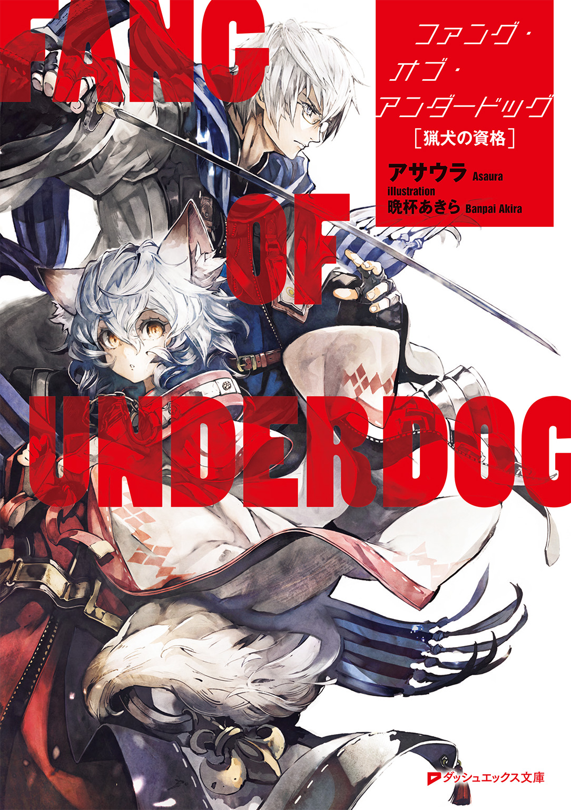
この本は縦書きでレイアウトされています。
また、ご覧になる機種により、表示の差が認められることがあります。
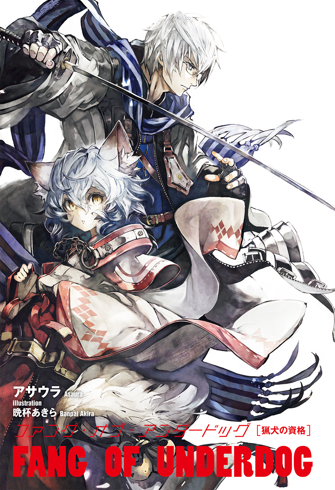
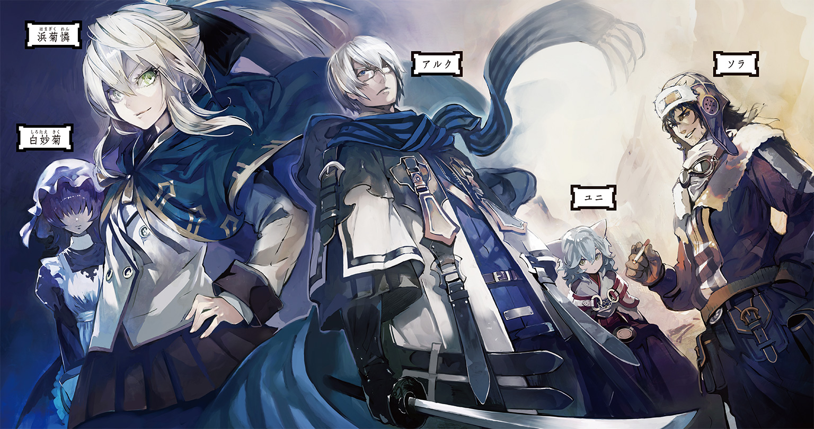
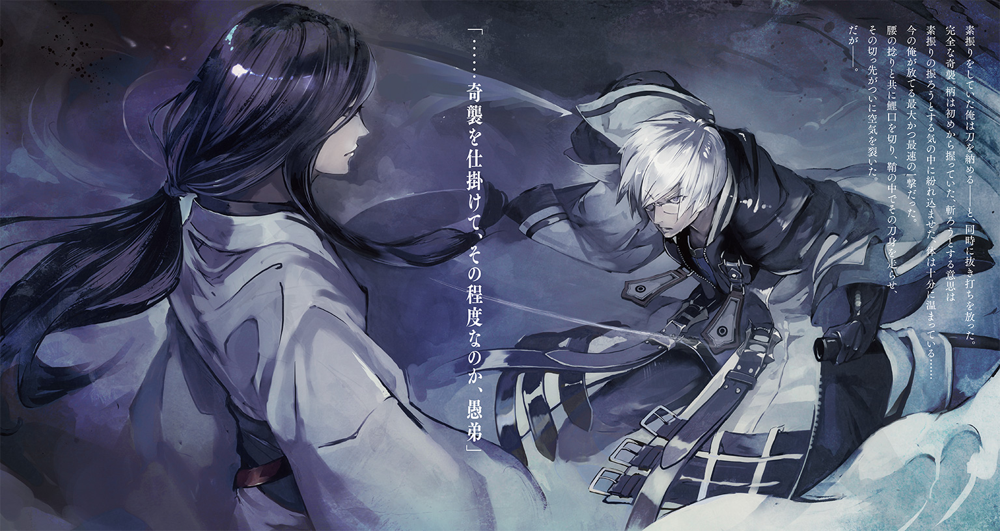
 ダッシュエックス文庫DIGITAL
ダッシュエックス文庫DIGITAL
ファング・オブ・アンダードッグ
猟犬の資格
アサウラ
●プロローグ 『雨、そして猟犬の先夜』
雨だった。地を叩いた雨粒が高く跳ね返るほどの、そんな夜の雨だった。
地に落ちている泥にまみれた刀の柄と、泥濘んだ地面についた己の傷だらけの両手と共に......少年は、その雨の跳ね返りを見ていた。
呼吸をし過ぎた肺が痛い。鼓動を打ち過ぎた心臓が止まりそうだ。体もくまなく痛い。全身が寒さではなく苦痛に震えていた。
「どうした、立て」
中性的な声がし、少年の視界の端に、草鞋を履いた足先が入り込む。そして、その足の主が持つ刀の細い切っ先も、また。夜だというのにまるでそれ自身が輝いているかのような刀身がそっと動き、切っ先で少年の顎を無理矢理に持ち上げていく。
少年の目に、小柄な男の姿が映る。濡れてはいても、この泥だらけの地であれだけ戦ったというのに、ほとんど汚れのない白い和装。細く、無駄という無駄を徹底的に削ぎ落とした体、そして長い黒髪を肌に張りつけた恐ろしく整った女のような顔をした、彼。
そこにある双瞳は、地に膝と両手を突く少年を冷たく見下ろしていた。
その冷たさの中にあるのは嘲笑でもなく、諦めでもなく......ただただ、深い哀れみだ。
「立て。剣を握れ。府津羅に、地に両手をつく無様な技はない。いつまで犬のマネをしている」
少年は瞳で立てないと訴えた。体中がぼろぼろなのだ。朝から幾百と打ち込まれ、幾十と泥に沈んだ。幼少期から体に刻まれてきた幾千の傷跡に、新たに無数の傷を増やしながら戦い、それでもなお両手をついて体を倒れぬよう必死に支えている――今、そんな状態の少年に立つことなど、出来はしなかった。
「お前はおれの弟だ。それなのに、どうしてそんなに弱い。どうしてそんな哀願するような目でおれを見る。そのザマで、そんな目をするのは負け犬だけだ。お前は負け犬か？ 無様に残飯を漁る、見窄らしい存在でしかないのか？ ......ふざけるな」
兄の足が少年の顔を蹴りつけた。
「幾万回と言い続けてきたように、お前に剣の才はない。お前は弱い。だが、おれの弟だ。そして、他に比類なき剣豪の血を持つとされる我が一族の末裔が一人だ」
兄は刀を鞘に戻すと、弟の胸ぐらを摑み上げ、額を突き合わせた。
「誇りを持て。そして、強くなれ。それはお前に限らず誰であれ出来ることだ。......負け犬に堕ちることはこの府津羅頼雅が決して許しはしない」
少年は毎日剣を振り、自らの体をいじめ抜くが如くに鍛えている。だが、目の前の兄――頼雅との距離は日々開くばかりだった。
少年は、あと半年ほどで一七になる。子供だから、兄の方が長く生きているから......そんな言い訳が通用しない年齢だった。昨年の段階で体は兄より大きくなり、今では五センチ以上上回っている。そのくせして、このザマだった。
負け犬になることを禁じられながら、兄に追いつくことも出来ない。
そんな閉塞感と虚無感が、雨粒と共に少年を包んでいた。
――強くなりたい。兄の、そして一族のしがらみから抜け出せるほどの、そんな強さを......。
意識を失う直前に少年が思ったのは、そんな切なる願いだった。
○
雨だった。地を叩いた雨粒が跳ね返って、傘の下にいても膝まで濡らすほどの勢いがある、そんな夜の雨だった。
傘を差す男の目前で、案内人達が悪しき神々の遺産と謳われる能力でもって、巨大な亀のような化け物の手足を斬り取っていく。
どの木々よりも大きなその化け物は、古の大戦争時に投入された、〝鵺〟と呼ばれる生物兵器である。
多種多様な形状、サイズの攻性生物である鵺......そんな中にあってこの見上げるほどのものは比較的大きい部類ではあるのだが、この様子ならばさほどの苦労もなくバラせるだろう。
案内人二人のどちらの能力なのか男は知らないが、青白い光の残滓を辺りに撒き散らしながら、目に見えぬ刃が鵺の硬そうな、虫を思わせる十数本の足を次々に切断していく。
甲羅から伸びている頭――人によく似たそれが雄叫びを上げるも、その頭に、坊主頭の男が飛びかかった。素手である。彼は十数メートル近く容易く跳び上がると、その巨大な化け物の頭の前で拳を振りかぶる。刹那、彼の手が青白く発光。そして、それを化け物の頭に叩き込んだ瞬間、猛烈な衝撃波が生まれ、周囲一帯の雨粒と空気、そして鵺の頭を吹き飛ばす。
百数十メートルは離れていた男の傘でさえも、その衝撃波で一瞬にして破壊され、骨組みだけが手に残っている有様だ。
鵺の頭は半壊し、先ほどまで蠢いていた全身はピクピクと痙攣するだけの肉塊となっていた。
「デカイのは殺しやすくていい。あの背中を......甲羅を割ってみる。検分を始めてくれ」
男の隣に、いつの間にか顎髭を生やした男がおり、そいつは言うなり空へと飛び上がると、全ての足を断ち切られ、頭を潰された鵺へと手をかざす。
その手の先に青白い光が生まれ、無数の漢字が一瞬だけ浮かび上がった。
骨組みだけの傘を持っていた男の目でかろうじて認識出来たのは、〈斬〉の字だけだ。
直後、男の前に聳えていた小山のような甲羅が、激しい音と衝撃を伴い、縦に真っ二つに叩っ斬られる。この大きさである以上、とてつもない血飛沫が上がるかと思われたが、男の予想に反して血らしい血はほとんど出ることもなかった。
男は骨組みだけの傘を投げ捨て、完全に死に果てた鵺の死骸へと歩み寄る。
今し方生まれた肉の谷間に体を滑り込ませると、化け物の中の構造を窺った。
「ふむ。これだけ巨大でありながら、やはり機能していることを窺わせるような内臓も生殖器もない。大戦時から自生している鵺ではなく、間違ってもそこから生殖行動の果てに生まれた子孫というわけでもない。......これは、最近作られたものだ」
顎髭と坊主の男は二つに分かれた甲羅の上に立つと、冷めた目で、断定した男を見下ろした。
「千年以上の時を経て、か......」
「判断は上がするだろう。オレ達は報告するだけさ。撤収だ。......と、その前に毒性もなさそうだし、こいつは潰して大地に還そうぜ」
坊主の男が言うなり、甲羅の片割れに拳を叩きつけ、また同様に顎髭の男も足下の甲羅の片割れに手をかざし......互いに青白い光を生み出す。坊主の足下の甲羅がまるで爆弾でも使用したかのように弾け飛び、顎髭の足下のそれは細切れになって辺りに飛び散っていく。
その光が失せた時、検分を行っていた男の周りには人の頭より大きな肉片はなくなっていた。
「いつ見ても陣士の能力というのは、凄まじいな」
二人の案内人――陣士達が地に降りると、置いていた荷物を拾い上げ、雨の森を進んでいく。
「今回のでちょうど一〇例目......ただの偶然なわけがない。それもデカ物ばかり......」
「その判断は上がするって言ってんだろう......あるいは、もうしたのかもな。〝総本山〟で来期から創設される特別役職ってのは、それを睨んだものでないわけがない」
「......眠り姫の猟犬か。酷な道だ」
顎髭が吐き捨てるように言うと、坊主共々不意に立ち止まり、背負ったばかりの荷物を再び地面に置く。二人の後を追っていた男は、何が起こったかわからず声をかけるものの、応答はない。再度声をかけてようやく、坊主が応じた。
「木陰に伏せていた方が......いや、逃げた方がいいな。総本山で合流しよう」
「何を言っている？ 総本山はここからどれだけ離れていると......」
辺りに妙な気配。男は顔を上げる。木々の間を無数の黒い鳥が喚きながら飛び立っていく。
「......〝烏〟か？」
男が呟くと、顎髭と坊主は「そうだ」と応じ......それは起こった。
ただの研究者であるその男でさえ感じる。周囲一帯の空気が激変し、全身に鳥肌が立つほどに張り詰めた。そして木々が巨人に踏み潰されるがごとく次々に倒れ、来る。まるで津波のようだ。だが、衝撃波も、爆発音もない。ただ、木々がドミノ倒しのように倒れ来る。
そのあり得ないような光景と合わせるように、十数の黒い影が音もなく地を走り、そして同数が羽ばたくこともなく空から、迫り来た。
「......ったく、少し派手にやるとすぐコレだ」
「酷な道だぜ、ただでさえな」
陣士達はその手に再び青白い光を浮かび上がらせ、その能力を発動させた。
爆音、轟音、そして、衝撃と跳ね上がる大量の鮮血が、空の雨雲さえをも震わせた。
「......これが陣の力、陣士の戦いというものか。神々の力とする比喩もあながち噓ではないな」
男は戦場と化した森を走りながら、独り、呟いた。
●１章『最終試験』
故郷を飛び出してから一カ月。どこまでも続いているような道を時に徒歩で、時に船で、時に馬車に乗り、少年が辿り着いたのは鬱蒼とした広大な森をドレスのように纏った山だった。
それは総本山と呼ばれる、陣士達が集い、暮らす一つの国のような土地だ。ほぼ未開拓で、多種多様な獣が跋扈する森を一日かけて抜ければ......現れるのは山を囲む長大で高さ二〇メートルを超える巨大な壁。その周りには堀のような川が流れており、少年が覗き込んでみると綺麗な水が流れ、魚が泳いでいた――と、その時、大きな魚が跳ね、そして空高く昇っていく。
少年の目は、魚の口に針がつき、そこから細い糸が長く長く伸びているのを見てとる。
飛び行く魚を追うように見上げれば、壁の上から釣り竿を伸ばしている者がいた。
「おっと、すまねぇ。人がいたか。飛沫がかかったか？」
壁の上からの声に「......いや」と応じながらも少年は顔をこすった。
今は秋とはいえ、山の水である。顔にかかった飛沫は氷の粒のように冷たかったが、それをどうこう言う気はなかった。石を投げられたとて、同じだっただろう。
魚が壁の上へと消えると、入れ替わるように人が現れ......壁の上から飛び降りた。二〇メートル以上の高さである。しかも川ではなく、それを越えて地面に向かって落ち来ている。
少年はさすがに冷静ではいられず、反射的に飛び来た人を受け止めようと両手を差し出した。
この高さ、落下する人間の速度、重量......計算するまでもなく、飛び降りれば無事では済まないとはわかっていたし、その下にいれば自分がどうなるのかも想像出来た。
だが、それでも少年の腕は飛来する人へ向かって伸びていた。
そして、その腕が落下者に触れる、まさにその時――青白い粉塵が少年の目前で弾けるように溢れ、そして猛烈な風が吹き荒れる。
「何者だぃ、お前さん」
煙草を咥えた無精髭の男が空中に静止しているのを、少年は尻餅をついて見上げていた。
「そっちこそ......陣士だったんですか」
少年の目前で浮いているのは、薄汚れた格好をしてはいたが、見窄らしくはない、そんな不思議な男だった。二十歳を幾らか過ぎた、そんな年齢のようだ。
首に四角いレンズのゴーグルを下げ、防寒具にも見えるゆったりとした革製のパンツやジャケットを羽織っているせいで大柄に見えるが、顔や首を見るとむしろ細身なのだと知れる。
人なつっこい犬、または少年のような......そんな柔らかで優しげな表情をしていた。
「この城郭の内側は総本山だが、そこには陣士しかいないからな、当然だ。......だが、落下してくる人間を何ら迷いなく受け止めようとする男なんざ、普通じゃねぇ。何者だい？」
「......陣士になるために、来ました」
「あぁ、そうか、今はそういう時期か。......おんやぁ？ 随分と傷だらけだな。それも古傷ばかり......体の出来上がり具合からすると奴隷ってわけでもなさそうだ。鍛錬の末の勲章か？」
少年は羽織っていたローブのフードを被り、慌てて肌を隠した。
体に刻まれた無数の傷跡は、恥辱の跡のようなものである。人に見せたくはなかった。
「てっきり烏なんじゃねぇかと思ったわけだが、その様子からするに違うようだな。......飛沫をかけちまった詫びだ。入り口まで連れていってやる。オレの名は〝ソラ〟だ。摑まりな」
ソラが差し出す手を、少年は尻餅をついたまま恐る恐る摑む。すると、突如として青白い粉塵が辺りに生まれ、引っ張り上げられた。空高く。
――飛翔したのだ。二〇メートルの壁を越え、森、そして壁の向こうの山の上に造られた都市を見下ろす高さにまで、ソラは少年の手を摑んだまま、一気に飛び上がっていた。
「ソ、ソラ！ ちょ、ちょっと待って......!!」
「ははは、オレはお前みたいにビビる奴が好きだぜ。......これが陣士だ。陣の力ってもんだ。お前はこれからその人生を犠牲に、この禁じられた力を手に入れようってんだ」
ソラは容易く飛んでいる。まるで全身のどこにも負担がかかっていないかのように浮き、飛んでいる。だが、少年の体は当たり前のように重力に引っ張られており、ソラの手にぶら下がっているだけだった。少年はたまらず、ソラと繫がる己の手に力を入れる。
「折角だ、よく見ておけよ。陣士になれなきゃ、総本山の中を見ることなんて出来ねぇぞ」
少年は飛翔しながら恐る恐る下を見る。それは、生まれて初めての体験だった。
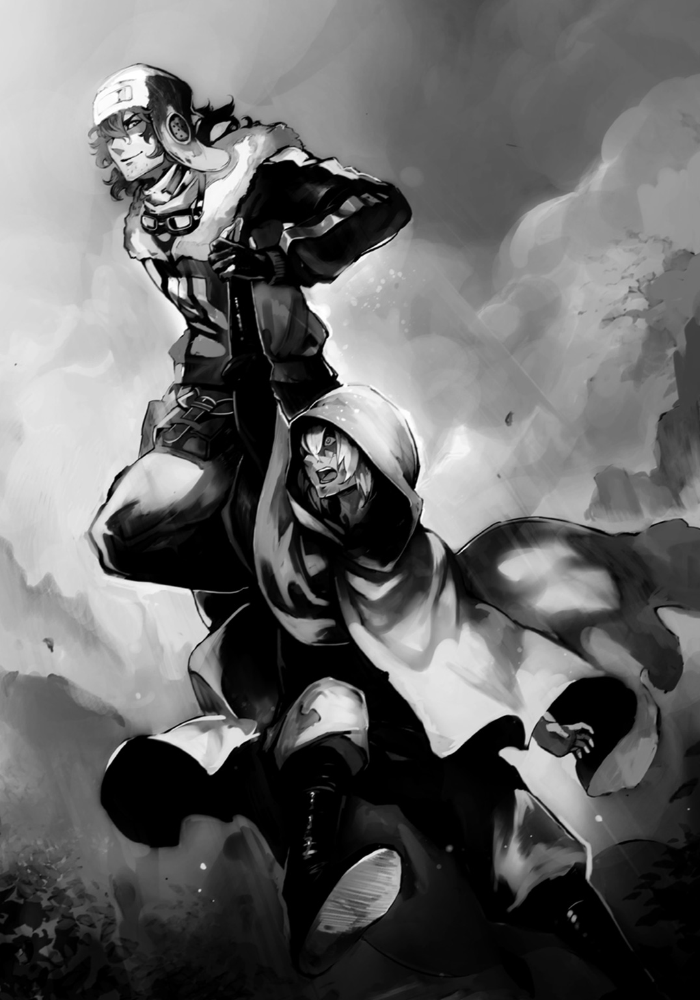
足の下に、何もない。空の中。翼を持たぬ人が決して目に出来ぬ、神の光景だった。
足先から数十......いや、もう一〇〇メートルを超える距離の先に、山の表面を木々と共に覆う巨大な都市がある。どこぞの国の首都のような豪華な住居が並び、山の上に行くに従い古代文明の名残と思しき四角く高い塔――ビルと呼ばれたそれらが幾棟も建ち並び、山の頂上にはそれらに囲まれるようにして巨大な城が聳えていた。
こんな古代の遺物だらけの都市を見るのは初めてだったが、それよりも街を空から見下ろしていること自体が少年には刺激的な体験だ。ソラの手以外に頼るものが何もない不安はあれど、それ以上に、自分の知らぬ力、知らぬ光景に心が震えた。それは、紛れもなく人ではない何らかの力。そしてそれを容易く扱うソラという男......まるで新しい本を開いた時のような、新しい服に袖を通したかのような......何かが始まろうとしている、そんな感動がそこにはあった。
妙な閑静さを感じさせる街並みのエリアとは別に、ソラが向かっている〝入り口〟と呼んだ場所には活気が溢れていた。
巨大な壁の外、外と中とを繫ぐ巨大な門の前に拡がるのは、街だ。大勢の人が行き来し、声を張り上げるそこだけは、少年が旅の間に見てきた都市と同じ造りで、同じ活気がある。
「この総本山の玄関口、その外側にくっついている場所......そこが世界で一番金が飛び交い、目玉が飛び出る高級品さえもやり取りされる〝商業区〟だ。まぁここも含めて総本山と言う場合もあるが......ともかく一般人と陣士の両方が入り交じって生きる特異なエリアであり、そして、お前がこれから三カ月の教育期間を過ごす場でもある」
ソラは横に体育館らしきものとグラウンドまで備えた、一際大きな四階建ての建物の前で、ようやく少年を地上に再会させてくれる。数分の空中浮遊とはいえ、しっかりとした地面に両足が着いた時、少年はたまらず膝から崩れ落ちるのを止められなかった。
「目の前のデカイ建物が、学校だ。入学申請しとけや。......またな」
ソラがまた飛び立とうとしたので、少年は慌てて己の名を告げようとするのだが......。
「今のお前さんの名に価値はない。......入学審査後に、どこかで会ったら名乗ってくれ」
それだけ言って、また柔和な笑みを浮かべると、ソラは少年を拾った場所へと向かって飛んでいった。釣りを再開するのだろう。
辺りを行き交う大勢の商人と思しき人々が目をくれる中、少年は力の抜けていた体に活を入れる。そしてソラと繫がっていた己の手を見つめ、それを固く握り締めた。
初めて自分の身で感じた陣士の、陣の力。その感動を落としてしまわぬように。
少年は、手を握り締めたまま、学校と呼ばれた建物へと向かう。開かれている巨大な門を抜けると、いわゆる校庭といった趣の広場があり、そこには裸の男女がそれぞれ大剣を構えている巨大な銅像があった。それらの間を抜けて校舎へ。
『汝、裸の大剣となることを望むか？ その覚悟がある者のみ、この扉を開け』
扉の上にそんな言葉が書かれていた。この〝裸の大剣〟は陣士を示すのだろう。だから、少年はあえてソラと繫がっていた手で扉を開けた。......奥の受付のカウンターには老紳士が一人。
「......陣士になりにきました」
「試薬を使わせていただきます。陣士になるには才覚や努力ではなく、体の適性が大事でございます。......市場に流れている試薬をお使いになられた？ はい、ここまで来た者の大半はそうでございますな。しかしながら、アレは毒性を極端に弱めたもの。ここで使用いたしますのは、適性なき者には死に直面しかねないほどのものでございます。お覚悟は？」
老紳士がカウンターの下から注射器を取り出すと、少年は背負っていた荷物を床に落とし、ローブを脱ぎ、傷だらけの腕を差し出した。
覚悟は出来ていた。命を落とすことを躊躇うような生き方はしてこなかった。兄に、そうであれ、と激しく鍛えられてきたし、そうあろうともしてきたのだ。
注射器の中の透明な液体がゆっくりと体内に入ってくるのを眺めつつ、少年は訊く。
「この地には、古代の医療技術が今もあると聞いています」
「えぇ。この山は陣の技術と共に、ありとあらゆる古代のものが今なお生きており、医療技術もまた同様でございます」
「......この体中の傷跡は、消せますか？」
「専門家ではないので、何とも。ですが、ここの医療技術を頼って世界中から病人や怪我人が訪れ、その大半の者は笑顔で去っていきます。傷跡を消す程度ならば簡単ではないかと」
兄と過ごした時間、屈辱の跡、呪いたくなる血の束縛......それらをここで消せる。それだけでも来たかいがあったといえるのかもしれない。金は多少ある。
注射器が空になると、少年は受付カウンターの前で胡座をかいて座り、体を薬が巡るのを待つ。一時間、そのまま微動だにせず、少年は瞑想して過ごした。
しばらくの後、老紳士に声をかけられ、彼の皺だらけの手で体温を測られた。微熱とのこと。適性がない者であれば高熱に魘され、数時間と経たずに死ぬのだと、老紳士は話した。
「では、こちらの書類に必要事項をお書きに。......入学料？ 授業料？ いえいえ、必要ありません。むしろ学生の間は週に一度、生活費が学校側から支払われますので」
陣士達はその力で莫大な額の金を貪るが如くに稼いでおり、世界経済を自由に出来るほどの資産を持つという噂は、本当なのかもしれない。少年はそんなことを思いながらペンを走らせようとするのだが......書類には、名前と年齢、持病しか書く項目がなかった。しかもその名を書く欄には〝可能な限り本名は書かないように〟と注意書きがある。
窮した少年は老紳士に助けを求めるように、視線を送った。
「陣士は常に狙われる立場。その名から係累が知られ、残虐な者達に親族を嬲り殺しにされた事例も少なくありません。......とはいえ、今まで通りの名を書く剛胆な者も多いのですが」
あの兄が嬲り殺しにされることなどまずないだろう。出来る者がいるというのなら、むしろ見てみたいほどだと少年は皮肉げに思う。
だが、本名を書かないのが普通というのならば、少年はそれを破る気はなかった。
「どんな名が......いいんでしょう？」
「ご自分の名前を書かれればよろしいのです。何ら祈りも意味も持たぬ、ご自分が感じる、ご自分を示す音......そんな名でよろしいのです」
少年は、瞼を閉じ、瞑想するようにして己の名を胸に問う。
兄や血の呪縛から解き放たれ、本当の一個人としての、独りの少年――否、独りの男としての自分。それを示す、その名、その音は――。
１
「アルク......おい、アルク。貴様、卒業式だというのに、なぁに居眠りかましていやがる」
己の名を呼ばれ、はっとして俺は瞼を開いた。演説のような訓示が続いている。
――日本という国は末期、様々な技術を生み出し栄華を誇った。その中で、最も凄まじかったもの......それこそ、我らが扱い、君らが扱わんとする〝陣〟という技術である。
かつて、陣をきっかけとした世界大戦があったのは誰もが知るところだろう。世界地図を容易く描き換えられるほどの陣の力......。それによって世界は破壊の限りを尽くされた。多くの国も対抗せんとし、倫理を捨ててまで研究に打ち込んだが、結局は自らの遺伝子に手を入れ、日本人のみ持つとされた陣の適性を人工的かつ限定的に得ることが精一杯だったのだ。
日本が世界を滅ぼし、世界は日本を滅ぼした......あの大戦争からすでに千年を優に跨いだ現在でもなお、生物兵器として投入された〝鵺〟の脅威を始めとした戦争の傷跡は色濃い。
知っての通り、一度は石器時代近くまで退行した文明だが、かつての中世と呼ばれた時代の水準にまでこうして世界を復興させたのもまた陣の力だ。しかし、そうであったのだとしても、人々の記憶から世界を崩壊せしめた事実や強大な力への畏怖、そしてそれを利用することへの嫌悪感、背徳感を拭い去ることは今もなお出来てはいない。それは陣という力だけではなく、それを扱う我々、そして未来の君達に対してもまた同様であり――。
体育館の壇上の、見知らぬ男の喋りからするに、自分が立ったまま眠りに落ちていたのは数秒だろうと察したが......その数秒を運悪く体育教師に見つかってしまったようだ。
「三カ月の教育期間を終え、最終筆記テストも合格しての卒業式だぞ。ったく、敬意が足らん、敬意が。このバカモンが」
先日一七になり、健康診断で一七六センチになったことが判明した俺を容易く、体育教師は一〇〇人余りが整列した中から引きずっていく。俺は細身ながら昔から筋肉質なので見た目より重いはずなのだが......。この教師の体は見事なものだと、素直に思う。
この体育教師もまた、陣士のはずだ。それなのに見たままの膂力を有している。
俺は体育館から出てすぐの洗面所まで連れていかれ、耳元で怒鳴られた後、顔を洗ってから列に戻るべし、と言いつけられた。
体育教師の背を見送ってから、仕方なく俺は蛇口を捻り、眼鏡を外して冷水を顔に浴びせる。
訓示の声は、なおも聞こえてくる。如何に陣がおぞましい力であるのか、そして有用であるのか......。如何に陣士が世間から疎まれ、嫌われているのか......。そうでありながら、世界は陣の力をどうしても必要とし、求めてもいるのだということも......。
内容は常識として知っているし、その言葉も三カ月前の入学式のそれと一言一句違いはないようだったから、眠くなるのは当然である。
「三カ月か。......あの頃はまだ、俺の体に......」
一生消えぬとされた傷が無数にあり、逆にアルクという名に馴染みはなかった。そんな頃。
俺は冷水を浴びせた顔を、鏡に映す。そこに傷跡はなく、そして以前は自分でもはっきりと認識出来ていた卑屈さが鳴りを潜めた、しっかりとした男の顔があった。総本山へ来て初めて行った美容院なるところで切ってもらっている髪も、爽やかでいい......と思う。
傷跡を消してから、自分の顔が好きだと初めて思えた。
俺はジャケットの裾で顔の水気を拭うと、眼鏡をかける。
学校に入ったばかりの頃に、顔の傷跡を消すまでの誤魔化しにと購入したものだったが、勉学に勤しみ過ぎたのか、今ではわずかに度が入っていた。
どうせなので訓示が終わるまでここにいようと思い、俺は解けてもいないスニーカーの紐を締め直す。地元では草鞋ばかりだったが、この古代の技術を用いて作られたとするスニーカーはあれよりずっといいものだった。......値はかなり張ったけれども。
スニーカーだけでなく、今羽織っている和の趣向を持つジャケットもパンツも、全てこの街で手に入れたものだ。故郷から持ち込んだ物は、傷跡が消えたと同時にほとんど捨てていた。
俺は生まれ変わったんだ。今一度鏡を見、そこにいた己に言った。
いまだ陣の能力は得ていないが、陣士に必要だとされる毒物や罠の知識、化学、物理、人類の歴史等々の座学ばかりを三カ月延々と教え込まれながら......同時に、教育課程の一環として陣を受け入れられる体にするための薬を体に打ち続けてきた。おかげで子供のような体力だが、それも時間と訓練次第で元に戻るというから、心配はないだろう。
鏡の中にいるのは一族の落ちこぼれではなく、若き陣士のアルクという名の俺だった。
「......ん？ どうしたんだ」
訓示が終わったようだったが、同時にざわめきが体育館から聞こえてくる。体育館に戻ってみれば、生徒である老若男女約一〇〇人の大半がざわめき、辺りを窺うように見合っていた。
生徒には比較的十代が多いものの......入学資格に何ら制限がないせいもあって、年齢、性別、肌や髪の色もまちまちだ。服装もどこぞの民族性の強いものから俺のようにこの街で買い求めた古代人のもの、そして一応支給されている学校の制服――男女の制服はあるものの、正直デザイン的に三十路を越えていたりすると着るのはかなりキツいせいで、着る着ないは自由となっている――を着た女子、中にはほぼ全裸に近い男達までいるわけだけれど......まさに世界中から集まったと思しき、てんでばらばらな陣士の卵達が、慌てている。
何が起こったのかわからずにいると、ふと、視線を感じた。見やれば、列の中に埋没するようにしていた少女。大きな狐の耳と尻尾を生やした、和装の十代前半と思しき彼女が、黄金色の瞳で俺を見ていた。彼女は他クラスの子だったはずだ。うちのクラスに知り合いでもいたのか、たまに教室内に来ていたのを――外見がやや目立つので――何となく覚えている。
どこかドライな彼女と見つめ合った数瞬後、体育館内に「静粛に！ 殺すぞ!!」の声が響き渡った。壇上を見やれば、長い金髪で右目を隠した女が声を張り上げている。
総本山のトップにして、世界を個人で破壊出来る存在とされる伝説的な陣士、通称『眠り姫』と呼ばれる者の相方だ。名はイリスだっただろうか。
「知っての通り、我々陣士は二人一組で行動する。陣士は常に暗殺の対象とされるが故、商業区や総本山内ではともかく、個人での旅は常に危険を孕む。それを少しでも避けるため、または情報をこの総本山に持ち帰るために相方は重要な役割を持つ。そして、それはお前達も例外ではない。繰り返すが――これより、好きな相手と二人組を作れ!!」
――バカな!? 俺はその衝撃的な言葉の前に腰を抜かしそうになる。怯えた体が反射的に手を腰に伸ばそうになるのを、堪える。帯刀している時のクセだった。
好きな相手と二人組を作れ、だと......？ 冗談じゃない、この三カ月の間で親しい人間なんて出来ちゃいない。蕎麦屋のオッサン達ぐらいか？ 冗談がキツい。
......わかってはいた。陣士は通常二人一組で行動しているというのは。
だが、てっきりそういうのは総本山の方で相性や能力に合わせて組み合わせてくれるもんだとばかり......な、何だよ、好きな相手って!?
「慌てるのも無理はないが動じるな。......確かに入学時に個人情報を漏らさぬためにも必要以上に同期を始めとした他の者と親しくなるな、と言った。このわたし自身がだ。だが、他人を見るな、観察するな、と言った覚えはない。陣士たるもの洞察力は持っていて当然の能力だ」
一般的にいわれる学校とはかなり趣の違う、他人と協調性を要求されないここでの学校生活は俺にとって非常に楽なものだったのだが......最後に来て、これか。
「これから三カ月の休校に入る。その間の行動は自由だ。相方を探すも良し、今一度故郷に戻って覚悟を改めてもいい。......今ならまだ普通の人間として生きることも可能だ。陣は一度体に入れたらまず消すことが出来ない。覚悟がいる。絶大な力を手に入れる代わりに、総本山以外では気の休まぬ生活を送ることになり、壁の外では常に死が傍にあるものと思え」
逃げ出したい衝動が生まれる。俺が誰かと共に肩を並べている光景が、思い浮かばない。
「これより最終試験を行う。この三カ月の休校後に行う実技検査の前にパートナーを決め、総務部に申請すること。知っていると思うが総務部は学内や商業区にはない。陣士のみが入れる壁の向こう......城郭内にある。......つまり、休みの間に己の体に陣を入れろ。何を入れるかも、しっかり考えろ。使える陣、使えぬ陣、クセが強いが使いこなせば強力な陣......様々あるが、当初は体が陣に慣れていない以上、妙な陣を入れるとポックリ死ぬぞ。......いいか？ お前達はこの休みの間に、生涯使うことになるであろう陣を体に入れ、命を共にする相方を決めるのだ。......陣の入れ方については、教員を頼れ。もし陣を入れぬのなら放逐、陣を入れても相方を見つけられなければ今回は悲惨な仕事についてもらうことが確定している。......誰だ今不服を口にした奴は!? 我が君、罌粟様が決めたルールだ、彼女こそ総本山のルール！ 三回回ってワンと鳴けと言ったらワンと鳴くんだ！ 文句がある奴はこの場で脳天叩き割るぞ!?」
罌粟様、というのが確か眠り姫の本名だったはずだ。
「以上だ。ではこれより最後の授業だ。陣とは、そして陣士とは如何なるものかを見せよう」
俺を含めた全員が言われるがままにグラウンドへ出れば、そこには坊主頭の男と顎髭の男。
「ほぅ、これが今期の入学者共か。平均的に若いな」
「無駄口叩くなって。またイリスの奴がプッツンするぞ」
ほどほどにやれ。イリスのそんな言葉を合図に、坊主が凄まじい速度で青白い光の欠片を纏った拳を地面へ放つ。その途端、坊主を中心とした一帯が爆発し、轟音と共に大地が揺れた。
爆風と吹き上がった土をモロに受けた生徒から悲鳴が次々に上がる中、砂煙の向こうに深さ数メートル、直径は数十メートルにもなる大穴が開いたのを俺はかろうじて見て取る。
穴の底、即ち爆心地に立つ坊主は首を上げることもなく、粉塵の中を踊るように駆けた。何が起こったのかと思えば、粉塵を何かが連続で斬り裂き始めたのだ。それはまるで透明な剣士が長大な剣を振り回し、空気そのものを斬っているかのようだった。
一際大きく粉塵が斬られた際、見えぬ刃は地面にまで達し、そこに水道管か水脈かあったのかわからないが、水が盛大に吹き上がり始め、粉塵の勢いが落ちていく。
「......上か」
いつの間にか俺の隣に立っていたあの狐耳の女の子が〝ふーん〟という顔で空を見上げていたので、何となく俺も同様に視線を上げてみる。そこではあの顎髭の男が青白い光の欠片を纏いながら空中に浮遊し、粉塵に向かって掌を広げていた。
その掌からは脈打つようにして青白い光の欠片が断続的に生み出され続けているのだが、どうもその光が出る度に、粉塵が斬られているようだ。
「顎髭が〈飛〉を自分にかけつつ、〈気〉と〈斬〉......じゃな。ハゲは......なんじゃろう。〈爆〉は使ってるようじゃが」
狐耳の少女が独り言を口にしていると......イリスの怒声が飛んだ。
「バカか!? 誰が普通に戦えと言った!? ほどほどにだ！ しかもここに並んでいるド素人共でもわかる陣をわかりやすく使ってやれ、ぶっ殺すぞ!?」
イリスの怒声と共に、地上と空中で分かれて戦っていた陣士二人は、途端に動きを止めた。
飛んでいた顎髭が地上に降り立つと、半球状に凹んだグラウンドの底で、坊主と何か打ち合わせをし......そして、距離を取る。
「いくぞ、これぞ我が陣の力だぁ～」
やる気のない声を顎髭が出すなり、手を掲げた。するとそこに青白い光で八角の枠に囲まれた〈石〉の字が現れ、続けてそこに重なるように〈飛〉の字。掲げていた手を下ろして地面に触れさせると、光る字は無数の光の破片となって土の中へと吸い込まれていく。
そして......土の中から拳大の石が高速で飛び出し、坊主に向かう。
学生達が「おぉ！」と声を上げる中、坊主はそれを軽く首を捻ってかわしてみせた。
悠々とした動きで、坊主は穴の底から噴き出していた水に指先を触れさせると......今度は彼の手の先に光の字が浮かぶ。〈水〉と〈弾〉、そして〈撃〉。
「こっちも反撃だぁ～、いけぇ、俺の陣んんん～」
坊主の浮かべていた字が砕け、水に吸い込まれる。泥と混ざって濁っていた水は不意に空中に浮かび上がって球体となり、凄まじい速度で顎髭へと向かう。
今度は顎髭がかわすと同時に、手の先に〈土〉〈剣〉の字を浮かび上がらせると、地面に触れる。するとあらかじめ地中に剣があったのかと思うほど、綺麗な茶色の剣が抜き取られた。
土の剣を持った顎髭が坊主に向かって走り寄ると、坊主もまたそれを受けて立つように構える。その手にはやや濁って半透明な水の棒が握られていた。
互いに振りかぶり、土と水の得物がぶつかり合う。水の棒がたやすく両断された。
「やっぱダメだよ......なッ！」
斬られた水の棒から手を放すと同時に坊主は、土の剣を振りかぶる顎髭へと素早く手をかざす。〈水〉、〈爆〉の字が素早く現れ、そして斬り飛ばされていた水の棒が唐突に爆散して、顎髭諸共、土の剣を吹っ飛ばした。
お前それ狡くねぇか!? という顎髭の喚きと、坊主の笑い声が響く中、イリスが咳払いをして生徒の注目を集める。
「今のが、お前達が手に入れんとする〝力〟だ。場所が場所だけに力はかなり抑えたようだが、わたし達ぐらいになればさらに大規模な陣を扱える。......いいか？ 陣とはこの世の全てを操る命令だ。森羅万象を己の意のままに出来る力なのだ。神の力とされる所以もここにある。基本的な使い方は察しのいい者なら今のでわかったかと思うが――」
陣とは、自分が使いたい〝漢字〟を体に入れることから始まる。体に入れた漢字の意味を、陣士は生命力と引き替えに扱うことが出来るようになる。
そして陣は、基本原則として〈何を〉〈どのように〉〈どうする〉というように複数の陣を組み合わせる――これを陣を〝重ねる〟と呼ぶ――ことで、その力を発揮する。このため、通常一つでは発動しない。
今し方、二人の陣士が使用したように、〈石〉と〈飛〉で石を飛ばしたり、〈水〉〈弾〉〈撃〉で水の弾を撃ったりというようなものが基本と言える。
このため、新人は少なくとも二つないし三つを入れる必要があるが、陣は使用時以外でも生命力をある程度吸い続けるため、鍛えていない素人が同時に複数入れようものなら立って歩くことすらままならず、最悪の場合死ぬ恐れもあるので順次入れていくのが好ましい。
とはいえ陣によっては〝重い〟〝軽い〟と言われるように、生命力の消費具合に差があるため、きちんと選べば不可能というわけでもない。
注意しなければならないのは、陣を体に入れるというのは、焼き入れることである。陣を受け入れるための準備として毒物同然の薬剤を注射し、そこに数百度の焼き鏝を押しつけることで定着させ、生涯消えぬ陣を持つことになる。......つまり、考えなしに入れると後悔するのだ。
また、陣を使用する前に青白い文字が浮かんでいたが、これを〝発現〟、それが砕けて実際に効果が出ることを〝発動〟と呼ぶ。先ほど二人がいきなり全力でかました際に何も見えなかったのは、ベテランほど発現時間を短くし、どんな陣を使用しているのかを相手に気取られないようにするためである。
説明を終えたイリスはいまだクレーターの底で戦いを続ける二人に「やめ」の声をかけた。
「今期総本山では戦闘に特化した者達のみを求めている。常時人手が足りん医療・通信も受けつけているが、それ以外の者は戦闘に扱える陣をまず入れろ。理由は各々で調べるなり考えるなりするべし。......どうしても嫌だ、という場合は卒業資格は五年維持されるため、来期まで待つという手もあるが......悪いことは言わん。その際は陣を入れるな。その理由も含めて、全ては己らで判断しろ。......ではこれにて卒業式を終える。現時点をもって解散。三カ月後に、陣士として、同志として再び会えることを期待している」
イリスは青白い光と共に空中に浮かぶと、何かを思い出したように、俺達を見下ろした。
「お前達はまだ陣士ではないが、陣士たり得る者達だ。商業区はいいが、総本山から離れる時は警戒しろ。暗殺の対象になる可能性がある。......我々は〝裸の大剣〟だが、今のお前達はその刃すら持っていない。つまり、ただの真っ裸なのだ」
早く、良き陣を扱えるようになるといい。イリスはそう言い残して、俺達の前から消えていったのだった。
２
俺には生まれてこの方、友達と呼べる相手がいなかった。物心ついた頃には真剣を振り、両親が死んで潰れかけた道場を兄が立て直そうと躍起になっていたのを手伝い、時間があれば強要されて書見もしていたし......そうじゃなくても一〇に至る頃にはもう、顔といわず体といわず、ありとあらゆるところに傷跡があって、気味悪がって近づいてくる者はいなかったのだ。
せいぜい落ちこぼれ、母の浮気相手の子ではないのか、本当に府津羅の血か、と、散々笑われ、いじめられただけだ。道場が持ち直し、兄を慕って年齢も様々な門下生が再び増えだしても、結局腫れ物に触るようにしか相手にされず、彼らと共に稽古をすることも許されなかった。
その資格がない、と言われていたのだ。技はもちろん、心さえも未熟だとして。
屈辱と諦めだけが、傍にあった。
こんな自分に、果たして相方なんて見つけられるのだろうか......。
そんな不安を抱いたまま、俺は体育館の壇上を見やる。そこでは卒業式終了後、俺と同じクラスで、いつもリーダー気取りでうるさかったシンスケが「折角だからみんなで自己紹介をしようじゃないか！」と言いだしたことで始まった、謎の自己アピールタイムが進行していた。
「おい、ガキ共。お見合いじゃねぇんだ、好きな異性のタイプを言ったってしようがねぇぞ。組むのはな、同性同士が基本だ」
教員で唯一残っていた体育教師が怒鳴るように言った。何故ですか？ と誰かが声を上げる。
「陣士は常に命を狙われるってのに、男女じゃ常に同じ場にいられん。恋人や夫婦で組む奴もいるが、そういうのは大抵揉めて破綻するのがオチってもんだ。......真に優れた陣士は同性同士のコンビと言ったっていい」
それを踏まえて次の者は壇上へ、とリーダーぶりたがるシンスケがすぐさま声を上げる。
彼の歳は俺と同じぐらいの十代後半、男では珍しく学校の制服を着て、喉元までボタンをしっかり留めた、まじめそうな男だったが......俺の好きなタイプじゃなかった。......かといって、今壇上に登った三十路そこそこの角刈りの二人組も、俺は好きだとは言えない。
「俺の名は、ジョー。隣にいるタフガイはダン。パートナーの合意は入学直後にできていたのだが、一応他クラスの生徒達にも自己紹介はしておこうと思ってね。我々は――」
「――美しい！」
ハッ！ と、ほとんど半裸......というか、布面積のえらく少ないパンツ一丁の男二人は、自らの体脂肪の少ない体を見せつけるようにポーズを取る。
恐らく自己紹介がしたいのではなく、目立った場所に立って体を見せたかっただけなのだろう。......よくもまぁこの一〇〇人程度の中で同じ趣味の者が二人もいたものだ。
次！ というシンスケの声に「はい！」と少女の声。名残惜しそうに、一歩進む度にいちいちポーズを決めるジョー・ダンを押しのけつつ、壇上に登ったのは目の覚めるような赤いショートヘアの小柄な女の子だった。山の猟師が纏うような、着古した衣服に革ベルトなどを巻きつけたボーイッシュな女の子である。
四つのクラスがあるが、彼女は俺と同じクラスだったので、多少は知っていた。
身のこなしが相変わらず異常である。滑らかに、気配をほとんど発することなく歩いている。まさに野生の獣のそれなのだ。武芸なり何なりの心得があればすぐにそれが目につくだろう。
「アカです。一四です。ここに来るまでは両親と猟師してました。楽しくおしゃべり出来て、優しい人が理想です。よろしくお願いします。......あ、えっと趣味は家で一緒に暮らしている犬達と山に出ることで、あとは、えーっと......」
訛の強い口調で、彼女が慌てながらも言葉を紡ぐのだが......。
「アカ君！ 壇上に登るのなら話をまとめてからにしたまえ！」
シンスケが声を上げると、アカが「あ、ご、ごめんなさい」とションボリして壇を降りた。
......こういうのがあるから、この手の人間を好きになれない。言い分はわかるし、一〇〇人もいればそうすべきなのはわかる......けど、言い方というものがあるだろう、と思ってしまう。
アカが頭を搔きながら、えへへ......と苦笑いで壇を降りてくると、何となく目が合う。
人前で批判された後ってのは、それこそ周りからは腫れ物のように扱われる。けれど、本当はそういう時こそ、声をかけてあげるべきだと、俺は思う。
なので、軽く微笑んでそちらへと歩いていくと、アカもまた名を呼ばれた犬のように、小走りに寄ってくる。そして「失敗しちゃったとよ」と彼女の地元の言葉そのままに言った。
「大丈夫だよ、多分。うまくいった方じゃないかな」
「そう、なんかな？ ......えっと、アルカ、やなくて、アルク......君、やったよね、おんなじクラスの。優しぃとね」
俺は軽く首を振った。優しいというよりは、傷つくことに慣れてるだけだ。
「いい相方が見つかるといいね」
「うん。......アルク君が同性やったら良かっとんになぁ。......でも、実はもう、気になってる子がおるんよ」
誰？ と話を振ってみると、アカは視線で人混みの中の少女を見やった。それは先ほど、俺の隣で独り言を口にしていた大きな狐耳の少女だ。
「......あの、大きな耳とふっさふさの尻尾、凄く触りた......。......絶対気持ちいいとよ」
「アカってさ......見かけによらず、邪だよね」
うちも大きな耳と尻尾持って生まれたったんにぃ、と悔しそうにアカが言う。
古代、受精卵に手を加えて獣の耳や尻尾を生やすために遺伝子を改造する技術が作られたのだという。世界的に子をペットのように扱う親が当たり前だとされた狂気の時代の象徴だとか何とか授業で習ったが......ともかく、それはその子にのみ発現し、その子が親として子を生しても生まれてくる子供は元通り......のはずだったのだが、世界大戦の際に、世界各国がこぞって陣の力を利用するために遺伝子改造に手を出した結果、消えるはずだった因子が世代を越えてもなお内部で維持されてしまい、ランダムで表面化するようになったんだそうな。
「......では、次！ どうした、誰もいないのか!?」
三分の二を終えた頃になると、なかなか壇上に登る者が現れなくなってきた。恐らく皆、事前に情報を得てパートナーを決めていた連中なのだろう。後は俺のように根暗そうなのとかが......ん？
「アルク君、君も行ったん方がいいとよ」
アカはそう言って俺の背を押す。......何だか気さくで、犬のような子だな。
俺は少し照れつつも、アカに押されて、壇上に登った。
「えっと......アルクです。俺は――」
――あれ、アイツ......府津羅......？
俺が喋る中、声が聞こえた。小さな女性の呟きではあったが、それは一〇〇人が佇む体育館に不思議なほど響き渡った......気がした。
俺は言葉を続けられず、全身に鳥肌を立たせながら反射的にその声の主を見る。
......俺だけではない。会場内にいた大半の者が、そうだ。
メイド服の従者の女を従えた、マントを羽織ってフードを被った細身。マントの下は学校の制服だ。そして、フードを払って現れたのは金髪のポニーテールと、気の強そうな女の顔。
その顔を......俺は、知っていた。
「あぁ、やっぱりそうじゃない。あいつ、府津羅兄弟のダメな方だ」
いまだ壇上に登っていなくとも、他クラスだったとしても......俺はそのニヤリと笑う少女の名を知っていた。......同郷であり、ある意味では幼馴染みと言える、そんな相手である。
「......浜菊憐......どうして......」
浜菊は体育館中の視線を集めながら、前へ出ると壇上の俺を見上げた。
「二年ぶり、ぐらいかな？ ......クラスが違うとわかんないもんね。まぁ、あの気持ち悪い傷跡がなくなってたら、こういう場でもないと、さすがにね。......それで？ どうしてここにいるのかしら。府津羅......えっと、名前なんだっけ？」
――府津羅だと？ ――あの、府津羅か？ ――何でここに。――まさか、送り込んできたのか？ ――府津羅って、かつて猛威をふるったとされる陣士殺し最強の一派じゃないか！
体育館中がざわめく中、俺は歯を嚙み締め......アルクだ、と名乗った。
「あら、そう。よろしくね、府津羅。......私の名は、知っていると思うけど、浜菊憐。パートナーは私の従者の白妙菊。改めて、よろしく」
体育館中から突き刺さるような視線を浴び、俺は俯く。だが、そこには壇に腕をつき、俺を見上げている浜菊のニヤニヤした目があった。
耐えられず、視線を上げれば......無数の忌避の目。アカさえも不安げな顔で俺を見ている中......ふと、一つだけ痛みのない視線を感じた。......それは、あの、狐耳の少女のもの。
逃げ込むようにして、俺は、彼女の大きな黄金色の瞳を見つめ返した。
３
「それで、泣きながら逃げてきた......ってわけか。まぁいいや。とりあえず、喰おうぜ」
商業区の一角にある大衆酒場のテーブルだった。店員が持ってきた大きな皿には、それに見合うだけの二つの大きなハンバーガーや付け合わせのポテトとピクルスが載っていた。
「ち、違うんだよ、ソラ。別に泣いていたわけじゃ......あ、い、いただきます」
寮では豆をメインとした食事ばかりだったし、たまの外食も――服を買い直したり傷跡除去手術の関係で――安い蕎麦屋がほとんどだった。......だから、この手の食事は思わず涎が出る。
それまでの鬱々とした気分が吹っ飛び、ソラが手に取るのを待ってから、俺もバーガーに手を伸ばした。ずっしりとした重量感が嬉しい。バーガーの土台と蓋である、焼き色のついたバンズはとても大きいのだが......それ以上に、中の具材が大きい。とんかつチーズバーガーである。丸いバンズからはみ出る、楕円というよりは長方形に近い分厚いカツ。揚げたてを示すように、まだカツの端では透明な油の残滓が尖ったきつね色の衣の上で躍っている。
学校から飛び出した俺の顔を見るなり、ソラがこの店へと連れてきてくれ、注文してくれたものだ。......当然、奢りである。
いただきます。俺は、思わずもう一度呟いてからバーガーに齧りついた。
パリッとしたバンズの表面。その中はふんわり。そして、その先は......天国のそれ。下の歯は颯爽とカツに到達。粗いパン粉を用いて作られたカツの衣は、歯茎に刺さりそうなほど鋭利だ。しかも揚げたての熱を纏っているので、暴力的でさえある。一方の上の歯は一転、冷たい瑞々しさの中にいた。まずバンズの向こうにあったのは分厚いトマトだ。そして、その先に待ち受けていたのは玉ねぎの極薄スライス。それも塩水で晒したものらしく、塩味を纏いつつしんなりとしていながらカツの熱にも負けず、爽やかな冷たさを保っているのだ。
下の歯が歯茎への刺激を無視しつつ衣を突き進み、厚い肉に到達した時、上の歯もまたカツを間合いに捉えていた。そう、玉ねぎの先にあった剣山のようなカツの衣に貼りつくとろとろのチーズに達したのだ。恐ろしく、熱い。だが、そのまま嚙む。肉。豚のロースだ。チーズの下に隠れていたソースの風味が、溢れ出る肉汁と共に俺の口内へ躍り込んでくる。
その激烈な熱から逃げるように嚙み千切る。唇に感じるトマトの冷たさとカツの熱さ。
離れるバーガーと唇の間にチーズの橋がかかっていた。それを舌先に絡めて切り、咀嚼すれば......これはもう目眩がするうまさだ。ザクザクとした衣が口内で躍る。食む度に水気を生むトマトと玉ねぎ。それらがカツの熱さと口の中で混ざり合い、絶妙な温かさになっていく。そこに来る、カツの肉汁とソースの力強さ。
よくよく考えてみるとすでに昼を過ぎていたけど、今日は朝から何も食べていない。そのせいだろうか。チーズ、ソース、カツのパワーに体が震えそうになる。そしてそれほどのヘビーなコンボでありながら、喉を抜ける時には、トマトの酸味と玉ねぎのほのかな辛みが脂っぽさをさっぱりと洗い流してしまう。......だから、口の中のものが腹に落ちきる前に、次の一口が恋しくなってしまうのだ。
うまいな、これ。そんなことを呟きながら、俺は自分の歯形のついたバーガーの、嚙み切ったカツの断面からこんこんと透明な肉汁が滴り、下のバンズに染み込んでいくのをしばし眺めた。染みが大きくなったところで、もう一口かぶりつく。やはり、うまい。肉汁の染みこんだバンズは、それだけで霊妙なる味わいで......興奮が止まらない。
一口ごとに腹に溜まる重量感、体に染みこむ味わい。嫌な気分を拭い去る満足感。
「そうだ、喰え喰え。人間うまいもん喰っておけば、とりあえず笑顔にはなる。......大人になれば、そこに酒が加わるわけだが」
ソラは右手にバーガーを持ち、左手にはビールのジョッキを握り締めて、そう言った。彼はそれらを交互に口にしていく。
「んー、昼間の酒はしみじみうまいなぁ。......しかし何だ、逃げてばかりいてもしょうがないぞ、アルク。......っつぅか、マズイんじゃないのか？ 同期の陣士候補生が揃っている体育館から離れちまったら、優良株を他に持ってかれちまうんじゃねぇの？」
「だから、逃げてきたわけじゃ......。その、実は......ソラに、相方を頼めないかなって思って」
ソラがブフォっと盛大にビールを噴き出した。
俺がアルクの名で入学式を終えると、すぐにソラを探し出し、名乗った。その時に呼び捨てで言い合おうと決めていたし、彼が商業区内にいる時はそれなりの頻度で会ってもいた。
......つまり、唯一の知り合いと呼べる相手なのだ。
正直、頼りにしているところがあった。だから、というわけではないのだが......彼に、頼めないかと思ったのである。
何せ、イリスは同期内から探せ、とは言っていなかったのだ。
「ゲッホエホ......。残念だがな、アルク。オレは陣士の中でも、例外の一人なんだよ。単独だ。オレは〈飛〉の陣に特化しただけの、物品の運搬や、緊急時なんかにゃ踏ん張って一人二人を運んだりする......そんな程度の陣士だ」
「そんな。ソラは十分凄い能力者だよ。それに......」
俺なんかと一緒にいてくれる優しい人だから......そう言いそうになった。正直な気持ちではあったが、何だかそれを告げてしまうと気持ち悪がられそうな気がして、思わず口を閉ざした。
ソラは少しばかり哀しげに笑うと、ビールを口にする。
「優しいな、アルク。だがな、オレのダメさ加減は初めからさ。入学前の試薬、お前、確か微熱だと言っていたろ？ ......オレは四〇度を超えていたそうだ。ほとんど意識もなく、倒れずにその場で踏ん張っているのが精一杯だった。それからも一〇日は使い物にならなかったんだ。......つまり、ギリギリなんだよ。陣士の中の落ちこぼれみたいなもんさ。だから、五年前に卒業式を迎えた段階では、誰も組もうとする奴なんざいやしなかった」
触れてはいけないことに触れてしまったような、そんな気がした。
「陣士は遊びじゃない。ダメならダメで一生懸命やりました、いい思い出になりました、じゃダメだ。......陣士になる時点で命懸けだ。そして任務となれば命の遣り取りも多い。しかも一度なったら辞められない。パートナーも、一度組んだらよっぽどのことじゃない限り、離れられない。......お前はオレとは違う。きちんとした適性を持っているし、幼い頃から武芸で鍛錬を積んできたはずだ。薬で体は衰えていても、磨がれたセンスはそのままだ。......戦闘を含めた仕事をこなすに、十分過ぎる可能性を持っている。オレみたいなのよりずっと合う相方がいるだろうさ。それに、別に組まなくても独りでだって仕事は――」
いや、と俺はソラの言葉を遮った。イリスは、陣を体に入れ、二人一組となって総務部へ申請しろと言っていたことを告げると、彼はおかしな顔をした。
「おっと、システムが変わったのか？ ......そうか、あの猟犬を作るという噂は今期からか。どうりで、なるほど。......だが、そうなると尚更マズいな。アルク、すぐに体育館に戻れ。急いでパートナーを見繕った方がいい。......バーガー喰ってる場合か、ほら、もう行け」
「ちょっ、ちょっと待ってよ。まだ半分しか......」
「飯なんていつだって喰えるだろ。いいか、アルク。学校を卒業した後の陣士ってのは二つに分かれる。俸給を貰いつつ、総本山の仕事をするか、またはどこで誰と何をしているのかを常に報告し続け、さらには総本山に税金を納めながらフリーとして好き勝手する奴の二種だ。後者になる奴は大抵、元々商売人の類とかなんだが......前者を望む場合、陣士になった後に総本山の方で適性に合わせて勝手に決められる。お前が商人や世捨て人を目指さないのなら、今のうちにきちんとした仕事に就かないと、後々金で苦労するぞ」
「......何だか、世知辛い話なんだな」
そうだ、とソラはかなりの間をおいてから応じた。
「陣士は神じゃない。どこにだっている普通の人間でしかないんだ。......いつか、お前もその言葉を嚙み締める時が来る。......そうしたら、初めて一人前だろうさ」
ソラは、どこか遠い目をしてそんなことを言った。
４
ソラに急かされたものの、結局俺は体育館近くで立ち止まり......同期達のもとへ行くことは出来なかった。あの忌避の目の中に今一度飛び込むのは、浜菊に名を呼ばれたまま自己紹介を続けるより、辛いと思えたから。
職員室に行って担任に相談してみると、俺みたいに相方を見つけられない奴は毎年多いらしい。そういう奴らは期限ギリギリに、似たような残りもの同士で組んだりするのだそうだ。
そのため、落ち着かないだろうがとりあえず三カ月弱、適当に暮らしておけ、と言われた。
......だから、というわけではないけれど、俺はその急に出来た余暇を使って、最後にもう一度だけ故郷に帰ろうと決めた。府津羅の名と決別するため......そして、自分はアルクという名の陣士になるのだと、兄に宣言するために。
どんな顔をするだろう。あの兄もさすがに呆れるだろうか。それとも......有無を言わさずに、俺を斬るだろうか。わからない。だが、陣士になる資格を得たとする報告を兄に聞かせるのは、きっと痛快だろうという気はしていた。
兄は、とにかく俺を一流とまではいかなくとも、それなりの剣士にしようと躍起になっていたのだ。その思惑を、潰してやるのだ。
それが......これまで苦しめられ続けてきた、俺からの復讐......にしたかったのだが......。
「......ここまで来て、これか......」
俺は痛めた脇腹を押さえながら、大木の陰で身を潜めた。
深い山だった。学校を出て一カ月弱で辿り着いた故郷の地ではあったのだが......近道しようと、いつも籠っていた府津羅家所有の山を当たり前に抜けようとしたのが失敗だった。
今までなら良かったのだろうけど、今、俺は刀を持っていない上、陣士になるための準備段階として薬漬けになり、身体能力が子供のレベルにまで下がっているのだ。
それで、こんなのと遭遇すればヤバイに決まっている。――鵺だ。
「......もう少し化け物じみた姿をしていれば避けようもあったのに......クソ」
大木から顔をわずかに出し、向こうを見やれば......影が一つ。
黒いマントを羽織ったようなそれが、日が昇る前の早朝、薄暗い中、木陰に佇んでいたので、思わず声をかけてしまったのだ。
春ということもあり、例年続出する山菜採りに来て迷った人だと思ったのだが......鵺だった。
この辺りの山は、俺が物心ついた時から鍛錬として走り回り、一人で刀を振り、そして鵺は見つけ次第片っ端から叩っ斬ってきた、そんな勝手知ったる場所だと思っていたが......クソ。
肋の骨は折れてはいないが、酷く痛い。
「今の体で、武器は匕首だけか......。どうするかな」
正直刃渡り一〇センチほどの匕首だけとなると、懐に飛び込まざるを得ない。
だが、今の低下した体力だとどこまでやれるのか。
明るくなってきた森の中に佇む鵺。どこかで拾ったらしいボロ切れをすっぽりと被り、そこから両腕のように二本垂れているのは、四メートルはあろうかという触手だった。鞭のようだが、太さは一握りほどあり、近距離で喰らった時は十数メートルぶっ飛ばされた。
一か八かで間合いを詰めるしかない。
けれど、仮に飛び込めたとして匕首の刃渡りで、生命力の強い鵺を殺せるのか......？
俺は視線で辺りに何かないかと探した。......ある。折れた枝が一本。
俺は鵺の様子を窺いながら静かにそれを摑み、余計な枝を斬り落としてただの棍棒とする。
木刀などに使う木とは比べようもないほど貧弱だが、ないよりはマシだ。
俺は素早くジャケットの絞りに使っている革紐を抜き取って、腰から提げていた水筒の水で湿らせる。それで、棍棒の先に匕首をガッチリと縛りつけた。
即席の槍を拵えると、いよいよ勝負だ。
手持ちの装備じゃこれが精一杯な以上、時間をおいたところで状況が好転するわけもない。
木陰から出ると重心を下げ、そして槍を下段に構え、鵺に相対する。鵺もまた顔はないものの、俺の方に体を向け、人間のものに似た四本足でじわりじわりと距離を詰めてくる。
まるで真剣での立ち合いのようだ。そう考えると、段々と気が楽になってくる。
......兄に比べれば、鵺など、ただの蠢くナマモノでしかない。畏れる必要はないはずだ。
ふぅー、と長く息を吐く。まだ春先、しかも冬を思い出す朝でありながら、肌に汗が湧く。
じりじりと互いに間合いを詰めていく。......そして、潮合い。至った。
先に動いたのは鵺だ。触手の一本を大きく横に振って、鞭のように放つ。
俺は大きく踏み出して距離を詰めつつ、触手をかわすために飛び上がる。そこに鵺は、もう一本の触手を縦に振って打ち込んでくる。上空から来たそれを、俺は受けず、振り上げた槍、その切っ先で斬り上げた。手にした棍棒がメキメキと音を立てるものの、かろうじて頭上から来た触手を斬り飛ばす。
......が、それと同時に棍棒が折れ、匕首を巻きつけた先端部は空高く飛んでいってしまった。
もはやそれを拾いにいくことも、目でどこに落ちていくのかを追う余裕もない。
目前に迫る、鵺。俺は雄叫びを上げつつ、折れた棍棒の残り半分、やや尖った方を穂先として、体重を乗せて鵺の体に突き刺した。
吹き上がる血飛沫をかわしつつ、地に足を着けると、即座にそこを蹴るようにして前に出る。棍棒を押し、なおもえぐり込んだ。
今の自分の非力さに辟易しつつ、ありったけの力を込め......そして、ついにその鈍く硬い手応えが、抜けた。ドバッと水の入った革袋を突き破るような音と共に、鵺の体の反対側から棍棒の先端を突き出させ、地に押し倒した。俺は即座に地面を転がり、距離を取る。
武器を探す。石。ないよりはいい。拳大のそれを握り、構える。鵺は......動かない。
「......やれたか。昔なら、素手でだって勝てただろうに、クソ......」
顎から滴っていた汗を手の甲で拭うが......その手が、止まる。
......冗談だろ。立ち合いのように鵺一体に集中していて気がつかなかったのだが......周りを見れば、最悪なことに、今し方倒した奴と同じ形をした鵺が......五体、俺を取り囲んでいた。
木々の陰に隠れながら、こそこそと距離を詰めている。
改めて布を纏わぬその鵺を見やれば、奴らは学校の本で読んだ、バクテリオファージによく似た外見をしているのだと知れた。四本の足から細い胴体が上へ伸び、その先に大きな頭。チューリップにも似ている。本にあった写真と違うのは一メートル半ものサイズと、頭の下から生えている二本の触手といったところか。
「さっさと逃げてればよかったかな......って、そうもいかないか」
鵺は見つけ次第殺すのが府津羅流の暗黙の決まりだった。しかし......。
「今回ばかりは......キツいか」
五体の鵺が距離を詰めつつ、一斉に触手を振るう。――と、その時だった。
「......何を無様な」
そんな中性的な声がし、俺の体の芯が反射的に震えた。その声、その言葉に、まるで虐げられてきた犬のように、腰が抜けそうになった。そしてそれは......鵺達も同じだ。
――風。そう感じた時には、四本の触手が宙を舞い、二体の鵺が横一文字に両断されている。
白い影。黒い残滓。細く煌めく一陣の光。それが俺の周りを駆け抜けた時、残りの三体の鵺は、ただの肉塊へと変わっていた。
実は生き物ではなく、肉の塊を重ねていたのだと言われれば納得出来てしまうほど呆気なく、その三体の鵺の体は、各四つの肉塊となって俺の周りに転がったのだった。
「体力を落としただけでなく、刀すら持たずに......それでも府津羅か」
俺の前に立つ人影。白い和装、黒く長い髪を後ろにまとめた、女人のようにすら見える小柄な男。その手に下がるのは、あれだけ鵺を斬っても血はおろか、脂すらまとっていない細身の名刀、白光鳳。
府津羅流当代宗主にして開祖以来最高峰とされる遣い手、府津羅頼雅――。
「家に帰るぞ、愚弟」
――俺の、兄だった。
５
泥と汗にまみれたまま、道場の中央に座っていた。
茸を採っていたらしい兄は、鵺と戦ったくせに泥も血飛沫も浴びることなく、小綺麗なまま、胡座をかいて俺の前に座っていた。腕を組み、唸りながら。
数十人が一斉に稽古が出来るほどの広さを持つ、うちの自慢の道場は、二人だけで座っていると物寂しさを感じざるを得ない。外は明るく、まだ午前中の日差しが燦々と窓から降り注ぎ、道場横の竹林からは小鳥達の囀りが聞こえる......そんな静けさが、今は重苦しかった。
俺は、陣士としての適性と資格を得たこと、学校での教育を受け、そこで体内に陣を入れるための準備として体力を落とすとされる薬物を摂取し続けたこと、そしてけじめとして全身の傷跡を消したこと......五カ月前に置き手紙と刀を残して去ってからの出来事を、一通り話した。
兄は、一言も喋らず、難しい顔をしたまま聞いていた。
長い長い沈黙の末に、兄がようやく口を開く。最初に出てきたのは......俺の、昔の名。思わず返事をしそうになるのを堪えた。
「......兄さん、俺の名は......今は......アルクです」
「ふん。そうか、陣士は名を変えるものだものな。......アルク、か。歩いて総本山に行ったところから取ったのだろう？ 悪くはない。一歩一歩、地を踏みしめた積み重ねを、そして走るのとは違う着実さを感じさせる。うむ」
......いや、そんな理由はまったくないんだけどな。だが、兄はすでに自分の中で納得してしまったらしく、意味などなく単に音で決めた、とは言いづらくなってしまった。
この兄はいつもそうだ。自分の中で勝手に物事を決めつける悪いクセがある。
「......一応、訊くが......その衰えきった体力、元に戻るのか？」
当面は戻らないらしいが、陣を入れなければ次第に元に戻るとされている。だが、陣を入れると能力を手に入れる犠牲のように、体力は低下したままになるのだという。そこから鍛えれば多少は回復するそうだが、陣を入れる前の状態に戻すのはかなり大変らしい。
兄にそのことを話すと、相変わらずその女のような顔を歪ませながら、腕組みを固くする。
「アルク、お前は府津羅の人間だ。それはわかっているな？ ......そして、うちの門下生の何割かは陣士を殺すために剣を学ぶ。親父に至ってはその生涯で百人を超す腕利きの陣士を斬ったとされる。二四のおれ自身も今同じ道を歩んでいる。......わかるな？」
おかげで体育館では酷い目に遭った。そう言いたかったが、俺は頷くに止めた。
「その上でなお、陣士にならんとするか。剣を捨て、世界を滅ぼした力を得物としたいのか。蛇がカエルに、狼が負け犬にならんとするようなものだぞ」
俺は頷く。兄は、顔を一層歪めた。
「......何故だ？」
その疑問に、俺は応えなかった。俺の体に刻まれていた無数の傷跡を消した理由からも、わかるはずだ。......いや、わかってほしかった。
「......そういえば、今日は門下生が見当たらないですね、兄さん」
兄は「先月から遠方の地で鵺狩りを含めた合宿をやっている」と簡潔に答え、話を逸らすなと付け加えた。
「いいか、アルク。たとえ陣の力によって、山を薙ぎ、海を沸かし、空を裂けるのだとしても、強者ではない。......所詮それは陣士の力ではないのだ。かつて日本人なる者達が作り上げた遺産の一部を操っているに過ぎん。......それでもなお、お前は陣士になろうというのか」
兄からの窘めるような声が、視線が、辛い。重い。苦しい。
これまで虐げられてきてどんな気持ちだったのか、どれだけの決心を持って剣を置いて家を出たのか......言いたいことは、それこそ山のようにあった。思い込みの激しい兄を、正論だけで論破出来るとは思えないが、ぶちまけられるだけの想いは、間違いなく俺の中にある。
けれど、喉が張りつく。口が渇く。正座した膝の上に置いた両手が震えそうになる。視線は、もう、床を見ていた。
せめて陣を入れてくればよかった。そうすれば後戻り出来ない以上、兄もこんなことを言いはしなかっただろう。そして何より、陣士としての自信を持って相対することが出来ただろう。
どうしてそうしなかったのか。兄の問いから逃げるように、俺はそれを一生懸命に考えた。
......答えは、案外、すぐに見つかる。
あの場から逃げたかったのだ。忌避の目が、恐ろしかった。だから、早く総本山から逃げるように......。その逃げた先が、最初に逃げ出した故郷だというのが、我ながら滑稽である。
結局、俺には何もないんだろうか。剣の才を持たずに生まれ、兄から虐げられ、陣士として踏ん張る覚悟も持たず......俺はただ、逃げて逃げて、ただひたすらどこかもっと楽なところがあるんじゃないかと、アホのように夢想して、辛い現実から逃げ続けていただけなのだろうか。
......どこにもそんなものはないのかもしれない、とは考えることもなく......。
いつも俯いていた。周りには、自分ほど苦しんでいる者がいないように見えた。ひょっとしたら自分だけがこんなに苦しい思いをしているんじゃないのか。そう考えずにはいられない。
みんな、どうやってうまくやっているのだろう。どうしてあんなにヘラヘラと楽しそうに笑っていられるのだろう。いつも体に出来た傷跡を見ながら、そんなことを思う。違う親の子として生まれていたら、こんなことにはならなかったのか。兄より先に生まれていたら。もっと、兄が言うように必死になって頑張れば楽になるのか。苦しみの果ての楽とは、何だろう......？
陣士の力を知らぬ者はいない。先ほどの兄が言ったように、山を、海を、空を自由に出来る人ならぬ力を操る者達。それを神々の力と称する者もいれば、世界を滅ぼした悪魔の力だとする者もいる。どちらにせよ、人が扱ってはならぬ禁忌だとする者が大半だ。
だからこそ、陣士は危険視され、土地によっては見つけ次第殺害される。毒殺や闇討ち、その他諸々の方法で、命は狙われ続けるのだ。烏と呼ばれる世界規模の暗殺組織さえある。
一方の剣はどうだ。せいぜい大木を一振りで斬り倒すのがせいぜいだ。兄でさえ、岩を斬ることは出来ても、山や海、空を斬れはしないだろう。
兄で出来ないのなら、世界中の剣士の誰にだって出来ないはずだ。
だが、陣士は......出来る。為せる。そして、その適性が、自分にはあったのだ。
たまたま使いで出た街で見つけた陣士の適性を調べる試薬。それを自らの体に注入し、その結果が出た時......俺は〝見つけた〟と思った。自分の生きる場所を、自分が本来生きるべき道を......。たとえそれが人々から忌み嫌われるものであったとしても、俺にとっては光り輝いて見えていた。あの時の気持ちは、決して逃避ではなかった。そう信じたい。
十数年剣を振り続けても得られなかった、見えなかった〝何か〟をそこに見たのだ。
――言ってやろう。その時の気持ちを。この偏屈な兄にぶちまけてやろう。
「俺は......っ」
絞り出した声が裏返っていた。顔を上げると、兄と目が合う。息が......詰まった。
その目を見た時、固めた決心があっという間にぐらついた。自分の中で絶対と思える固い決心が、砂の城として崩れていく。だが、そのままにはさせなかった。その砂の城を必死に抱き留めるように、俺は息を大きく吸い、震えていた両の手を拳に固める。
......不意に、ソラの手を思い出した。
彼によって、空からの景色を見せてもらった時の、あの感動が胸に蘇る。
空から見た光景は、まさに世界をひっくり返したかのような衝撃だった。
あの開放感、これまでとは違う世界にやってきたという、あの興奮――。
あれが、陣の力だ。陣士というものだ。
そして、本来自分が生きるべきはずだった道なのだ。――きっと！
「兄さん、俺――」
睨みつけるような兄の目を、震えることなく、逃げることなく、真っ直ぐに見つめ返す。
「――陣士になる」
まるで真剣を互いの喉に突きつけ合っているかのような、そんな兄弟の視線の交わり。持て余すほどの息苦しさに、体中から汗が滲み出た。だが、震えなかった。逸らさなかった。剣の腕はもちろん、今ならば体力でも負ける。だが、心だけは......負けると決まったわけじゃない。
俺の決心は、最強と謳われる兄にだって、負けていないはずだ。その想い一つで、俺は兄の目に立ち向かった。
一秒が重苦しく、纏わりつく春の空気が樹液のように粘りつく。
小鳥達の声が、一斉の羽ばたきの音と共に消えていた。
長い、とても長い、沈黙の時間の果て......。兄が、瞼を閉じた。
その瞬間、緊張に固まっていた俺の体から一気に力が抜け、滲み出すかのようだった汗が一斉に噴き出し始める。
「......居合いをやれ」
唐突な兄の呟きに......俺は声、そして言葉でのやり取りというものをしばし忘れ、思わず「へ？」と素っ頓狂な声を漏らした。
「居合いだ、アルク。抜刀術、抜き打ち。府津羅流は、特別居合いに重きを置いているわけではないが、お前とて少しはやれるだろう？ それを最低限使えるものにしていけ。......さもなくば、この里からは出さん」
「......何故です？ 俺はもう剣は捨てたんです。陣士として生きていくと――」
「カエルの子はカエルだ。剣士の子は剣士だ。そして、俺の弟ならば何があっても剣は手放させん。たとえその体に汚れた陣を入れるのだとしても......」
また、兄の押しつけ。こちらの意見など聞いていないのだ。自分がやりたいようにやる。何を言っても無駄。そういう男だ。
だからこそ、今、陣士になるのを認めさせたことは嬉しかったのだが......。
「学校に戻らないといけないんだ。陣を入れる時間も必要で、何より、俺は二度と剣は持――」
風が、吹いた。
一瞬すら冗長と言える、刹那。その時間と呼ぶにもおこがましいほどの短い間に、五、六メートルは離れて座っていたはずの兄が、目前にいた。
抜かれた白光鳳。その切っ先は俺の首から紙一枚のところに佇んでいるのを――空気を通して金属の冷たさを感じる自らの首筋で、理解した。
噴き出ていたはずの汗が、一瞬にして引っ込んだ。
兄が、大きく前後に足を開いていた体勢を正すと共にゆっくりと剣を鞘に収める。
剣を抜く動作が、あまりに速すぎた。居合いは鞘に収まっている間が勝負だとすることは知っている。だが、今、兄は鯉口を切るどころか、胡座をかき、腕を組んでいるところから抜刀し、彼我五メートルの距離をあの刹那で消したというのか。
兄は、ここまで達していたのか。陣士は神の力かもしれない。だが、兄はすでに人が扱える力の最高峰に到達しているのではないか。そう思えた。
斬り落とされたと錯覚すらした首に手をやれば、指先が濡れた。血だった。剣は首に触れていないのに、俺の喉元には横一文字に髪の毛を貼りつけたような傷がある。しかも指でなぞるだけで血は止まり、そして傷が判らなくなるほどの、浅く鋭利な切り口......。
兄が、白光鳳が、その剣の速度で空気を斬り裂き、触れずに斬ったのだ。
それを理解した時、止まっていた汗が再び噴き出した。
「あら、帰ってきていたんですね。......まぁ、何という格好で。お洒落さんになって」
女性の声がした。俺は冷や汗を流しながら、そちらを見やる。道場の扉の前で履き物を脱いでいたのは菫義姉さんだった。兄と同じ身長ながら、兄よりも細くしなやかな体つきをし、長い黒髪が印象的な、女性。ニッコリと笑う彼女の顔は、相変わらず綺麗だった。
傷跡が......。義姉さんが汗だくの俺の額を小さな手ぬぐいで拭いてくれるなり、そう漏らした。彼女の顔が切なげに歪む。昔から勘の良かった彼女は、もしかしたらそれだけでこちらの決別の気持ちを察してくれたのかもしれない。
俺は何だか急に申し訳なくなって彼女から視線を逸らす。すると......開けられたままの扉の外に、着物姿の若い女がいるのに気がついた。歳は俺と同じか一つ二つ下と思しき青い髪をお下げにしたその子。無感情な瞳で俺を見ていて、不思議と俺もまたその子の目を見つめていた。
兄が俺達の視線の間に入り、その子に何か言って、道場の扉を閉める。
「居合いをやれ、アルク。いいな」
「どうして......やらないといけないんです......」
「やれ」
拒否することが出来なかった。断れば何をされるかわからない怖さが兄の背にはある。
「......ところで、お前、いつから目を悪くしていたんだ？」
勉強をし過ぎた、と俺は少しぶっきらぼうに答えて眼鏡を兄に投げ渡す。
俺の目よりも、眼鏡に興味があるのだろう。兄とは、そういう男だった。
６
居合いは流派によって様々だ。型も違うが、そこに込められる理念はさらに違う。
抜刀すると同時に斬る。唐突に襲われた際の対処――つまり護身術ともなり......逆に二日前、兄が俺にぶちかましたように奇襲の一手とも成り得る。また鞘に収めたままの構えなので、剣の間合いを敵に測らせないといううま味もある。
とはいえ、片手持ちの剣である以上その威力は低くなりがちだから、相手の虚を突くために、目か首のどちらかのみを狙い、別途とどめを刺すべしとする流派が多いと聞く。
俺や兄が使う府津羅流において、居合いについてはっきりとした使い道は明言されていない......が、首を飛ばすのはもちろん、人よりデカイ鵺や大木を斬り倒せるぐらいのものに仕上げるのが最低限とされていた。
「......冗談だろ。これが、今の俺の力か......」
わかってはいたが、その軟弱さを見ると肩を落とさずにはいられない。
道場裏手にある山の中で、俺が放った居合いの一撃は、ひと抱えほどの木の幹を半分斬り裂くだけでその刃が止められていた。......昔は居合いでも斬り倒せていたはず......。
俺が一三の頃から使っていたその刀を木の幹から引き抜くと、刃を確認してから鞘に戻した。
自然体で、瞼を閉じる。そして傷跡が全身にあった頃に兄から受けた教えを思い出す。
居合いは斬ろうと思った時に斬り終わっていなければならない......そんな無茶なことを言っていた気がする。要は殺意を、斬ろうとする意思そのものを発揮せずに、静かなままに斬れ、ということなのだろう。そして、その技が成功するか否かは刃が出るより前、鯉口を切った瞬間にはすでに確定している......これはつまりその時点で相手の虚を突いていればもはや対処出来ぬほどの速度で撃ち放て、ということだと思う。
どちらも難題だけど......今にして考えてみると、この二つ......特に前者の方は明らかに能動的な一撃としての居合い、つまり奇襲の技としての面が強い言葉なのだと知れた。
昔は何も考えずに兄にしろと言われたことを打ち据えられながら従っていただけだったが、今はその意味を考えるようになっている......。
――陣士になるんだ。そう思い定めたからだろうか。そして自分の意思で、初めて兄の束縛の外へ踏み出す覚悟を決め、実際にその一歩を踏み出した、その瞬間から俺は......。
「......雑念が多すぎるな。もっと、集中しないと」
瞼を閉じ、耳を澄ますように、心を澄ます。そうして己の体を感じる。血の流れ、呼吸のリズムを探り、そして肌で世界を観る。
息を吐く、瞼を開く、それらと合わせるように俺は刀を抜き放った。
しかし、その刃は木の幹、その寸前でピタリと止まる。
鯉口を切った瞬間に、斬れない、とわかった。俺はため息と共に刃を鞘に戻すと、空を見上げた。先ほどまで明るかったそこに、今は星が瞬いている。
一刀振るうのにどれだけ時間をかけたのか。そのくせして、斬れないとわかってやめた。
......斬れないとわかっただけ、マシになったのだろうか。
俺は半分だけ斬り込みの入った幹に背を預け、しばらく空を見ていた。
今、監視されてはいない。逃げようと思えば出来るかもしれない。だが......ここで逃げたら、陣士になろうとした気持ちが本当に逃避でしかないのだと、そう認めてしまいそうな気がする。
陣士になりたいとする、その気持ちが本物であればあるほど......ここでやるしかなかった。
兄は居合いを満足に出来るまで里から出さないと言ったのだ。逆に言えば出来てしまえば、堂々と胸を張って出ていける。逃げたのではなく、前へと進んだのだと、そう思えるはずだ。
「......少々遅れたが、約束の日だ、アルク」
山の中に、兄がふらりと現れ、そんなことを言った。兄が道場を出てきた時から気配は感じていたので、驚くこともなく、俺は立ち上がって兄に向かって歩いていく。
二日に一度、試しをする。それが約束だった。
木々の枝葉に隠れ、星明かりも疎らにしか入らぬ森の中。俺は腕を組んだまま歩み来る兄と相対する。――抜いた。兄が。俺の手は、かすかに持ち上がっただけで柄にも到達しなかった。首筋には、当然のように白光鳳の切っ先が佇む。
「二日程度でどうこうなるとは思っていない。......よし、帰るぞ、愚弟」
さらりと剣を収め、元来た道を引き返していく兄の背についていきながら、俺は日数を計算した。総本山とここは片道一カ月はかかる以上、どんなに時をかけたとしても、ここにいられるのもちょうど一カ月。だが、体に陣を入れること、そして相方を見つけることを考えると......一カ月などかけていられない。時間は、あまりなかった。
道場の隣に立つ家に戻ると、俺は風呂に入り、それから兄と共に義姉さんの手料理を食べた。相変わらず派手なところはないが、季節の趣のある料理の数々が、懐かしい。
兄は食事をしながらもよく喋るし、それを俺にも強要する。彼は俺の服や靴のこと、そして、商業区での食べ物などを小さな子供のように聞きたがった。
若くして道場主などをやっていると、あまり外に出る機会がないので、珍しいのだ。
「......そういえば兄さん、道場に来ている女の子は誰なんです？ 門下生は合宿でしょう？」
食後にそんなことをそれとなく尋ねてみたが、兄はわざとらしく音を立てて茶を啜った。答えない。訊くな。そういう意味なのだろうと理解した。
間違いなく兄と義姉さん以外にこの家、そして道場に誰かがいる。十数年を過ごした自宅だからこそわかるだけの微細な痕跡しか残していないが、確実にいる。日中、俺が山で居合いをやっている最中に、道場から兄以外のもう一つの洗練された気迫を時折感じる時があるのだ。
その感覚からするに、俺が戻ってきた初日に見たあの少女だというのは、何となく察していた。体は薬で脆弱になったが、感覚は鈍っていない。
美しい黒い瞳がとても印象的な、そんな女の子だった。......何者なのだろう。
７
俺の生活は単調だった。山に入り、ひたすら居合いの練習を繰り返す。その間の食事は干し魚を炙り、炒った大豆などを齧って過ごし、少しでも多くの時間を訓練に割り当てていた。
それが二日経つと、兄との試しがあり、それが終わると家へ帰って風呂に入り、義姉さんの飯を喰らい、そして自室で寝て、早朝にまた一人で家を出て......というのを繰り返していた。
三週間が経過してもなお、俺の刀は兄の前では抜けない。
兄の動きに応じて柄に手が届いても、鯉口を切るところまで達せられなかった。
意図的に先手を打とうとしても、その気持ちがどうも漏れているらしく、そういう時の兄は間合いに入ると同時に斬りつけてくるので、結局は抜けなかった。
さすがに焦りを覚える。正直、今日明日にでも発たないと総本山での申請に間に合わないかもしれない。陣を入れるといっても、まずは陣を選ぶところから始めなければならないのだ。そしてパートナー探しもそこからとなると......。
だが......逃げるわけにはいかなかった。逃避がどうのというのではない。今は、違う。
俺が焦りだした日を境に、兄の気配が山を包んでいた。
道場にいながらにして、山にいる俺を意識しているのがわかるのだ。逃げ出せば即座にバレるだろう。そして追いかけ、手足をへし折ってでも連れ戻すだろう。それは間違いなかった。
時間への焦り、兄への怯え......それらが剣を鈍らせている。そう感じた時、俺は居合いをやめ、しばらく基本の素振りを繰り返し、気分を変えるようにするのだが――。
「......そろそろどうにか形になったか？ アルク。......焦っているな、相変わらず」
夜、俺が素振りを繰り返して一汗かき始めた時になって、山へふらりと兄がやってきた。
素振りをしていた俺は刀を納める――と、同時に抜き打ちを放った。
完全な奇襲。柄は初めから握っていた、斬ろうとする意思は素振りの振ろうとする気の中に紛れ込ませた、体は十分に温まっている......今の俺が放てる最大かつ最速の一撃だった。
腰の捻りと共に鯉口を切り、鞘の中でその刀身を走らせ、その切っ先がついに空気を裂いた。
だが――。
「......奇襲を仕掛けて、その程度なのか、愚弟」
俺の一刀は、空振っていた。兄が俺の間合いに入ったと判断しての一撃ではあったものの、兄はゆっくりとすら感じる足運びで半歩下がるだけでかわしたのだ。
そして抜き放ったまま固着した俺に向かって、兄は一歩踏み込むと共に白光鳳の柄に手をかける。その顔にあるのは、諦め、そして哀れみだった。
その顔が、その目が、俺にとっては一番怖いもの。
俺の膝がこれまでの十数年の時間を思い出し、震え始める。
「府津羅流は本来、体が小さい、または身が細い者の流派だ。......最初に耳にタコができるほど教えただろう。力で斬るな、技で斬れ、と。なまじお前がうちの一族の者にしては珍しくデカく生まれたせいで力に頼りすぎているんだ。昔ならまだ誤魔化せていたのだろうが、今のお前は陣士の下準備とやらのせいでそこらのガキ以下の力しかないというのに......。仕方ない。今一度忘れぬようにしてやる」
兄が動く。そして、衝撃。俺の脇腹に横殴りの強烈な一撃が叩き込まれた。
抜刀せずの、鞘ごとの一撃だった。
靴の裏から地面の感触が消え、それまでなかった風を感じる――ぶっ飛ばされた。
そして、木の幹に当たり、地に落ちる。内臓が弾け飛びそうな衝撃に、俺は悶絶した。
胃がひっくり返って腹の中のものをぶちまけようとするのに、喉が詰まって出来ない。喉は何とか息を優先して通そうとしている――けれど、出来ない。出そうとするのと、入れようとするのとがせめぎ合い......おぞましいほどの苦しみが生まれていた。
兄の蹴りが俺の腹に打ち込まれ、詰まっていた喉が通り、窒息しそうな苦しさはあれど、腹の中のものをぶちまけることが出来た。そして、酷い匂いの空気をありったけ吸い込み......地面に倒れた。
「打たれる前、震えたな。無様な奴め。......今日はそのままそこで寝ていろ。今のお前ごときに喰わせるほど妻の飯は安くはない」
８
反吐をぶちまけてから四日、兄が来ることもなく、そして俺は一振りもすることなく、その時間の大半を刀の前で端座して過ごした。
一三の時に与えられた、そこそこのデキの、無銘の打刀だった。愛着も何もないが、とりあえず己の体の一部としては扱えるほどに使ってきてはいた。
刀が悪いのか？ 地面に伏しながら、そんなことを考えた時に、このままではダメだと感じた。刀の差で何かが決まるような場に、自分はまだ到達していない。
言い訳を探しているのが嫌だった。......ずっと探しに探して、結局最後はいつだって兄と府津羅の血のしがらみに行き着くだけなのだから。
端座したまま、二度、泣いた。一度目は自分の弱さに。二度目は、もう時間が足りず、陣士への道が閉ざされかけていることに。
そして、故郷に戻ってきてから二六日目、哀しみに暮れているくせに何も出来ない、いや、何もしようとしない自分の不甲斐なさに、三度泣きそうになっていた。
......そんな時だ。すぐ近くに誰かがいるのを不意に感じた。野生の獣でも、鵺でもない。人の気配。だが、恐ろしく薄い気配だった。
反射的に刀を持って振り返った俺の前にいたのは、あの青いお下げの女の子だった。うちの門下生が着るものと同じ紺色の胴着を着て、すぐ近くに立っていた。腰には、刀。
「こんにちは。マドカと申します。あなたと斬り合ってこい、と頼雅さんに言われました」
小鳥の囀りを思わせる、軽やかで、美しく、か細くもどこか芯のある凜とした......そんな声。
何故現れたのか、何故こんな近くに来るまで気がつかなかったのか、兄が俺を斬れと......？ 様々な疑問を浮かべながらも、俺は彼女の黒く大きな瞳を見つめていた。
酷く、澄んでいる。恐ろしく透き通った水で出来たような瞳......。
だからこそ、その瞳に俺が映っている。鏡のように濁りがないからこそ、そんな......。
「いや、あの、ちょっ、ちょっと待って。俺は......！」
マドカが抜刀して正眼に構えた。かなり楽に。見方によっては雑な構えのその型は、物の見事に府津羅流だった。府津羅流は他の流派と違い、基本の型とは別にもう一つ、崩した型を教えられる。そして、そこから遣い手の体格や生まれ持った才覚に合わせてさらに崩し、ようやく完成する特殊な流派だ。マドカの構えは教えられただけの崩しの型だが......様になっていた。
「君は、一体......」
「二カ月前に入門し、教えていただけることは全て学びきりました。本日あなたと斬り合うことが私の最終試験とのことです」
二カ月で府津羅流を......？ 信じられない言葉だった。元々どこかしらで剣術を学んでいたのかもしれないが、それだとしても......早すぎる。しかも俺と同じか一つ二つ下の少女が......？
だが、それ以上に......。
――あなたと斬り合ってこいと......。
それは、つまり......俺を殺せと、兄に言われてきたということじゃないのか。
たった一人の血の繫がりを持つ、弟の......俺を......。
「兄さんは......俺を......」
「斬れ、と」
マドカが、動く。速い。踏み込むと同時に真上に振り上げ、斬り下ろす。あまりに基本的なその動作を俺は反射的に後方へ下がってかわそうとする。
マドカの剣は斬り下ろし始めてから、なお......伸びた。
踏み込むことで、本来着くはずの右足を着かず、体勢を崩しながらも通常の一撃よりも体を前へ押し込み、十数センチ間合いを伸ばしたのだ。
俺はさらに後方へ下がり、それをかわす。目前で空振った刀の切っ先がピタリと空中で止まる。振り下ろしを途中で止め、剣を揺らすことなく、マドカはさらに踏み込み、刀身を横たえながらの突きへと繫げてくる。
俺は首を捻ってギリギリでかわす。胴を狙われれば危なかったが、マドカは首、または頭を狙っている......つまり、こちらを早々に殺そうとしているせいで、何とかかわせ――。
「なに!?」
突きを繰り出す際に寝かされた刃が、今度は横薙ぎに動く。三連撃だ。さすがにこれをかわすには地面を転がるしかなかった。
「......さすがです。今のは完全に捉えたと思いました。教えられていないのですが、府津羅流ではかわしの技もあるのでしょうか？」
マドカ、かわされたことを気に懸けつつも、また、平然と正眼の構えをとる。
「ま、待ってくれ。俺は、人と立ち合うのは......人に剣を抜くことを許されてな――」
幼少期から俺に剣の才がないことはわかっていた。
だからこそ、兄は人との立ち会いはもちろん、同じ場での稽古すら許してはくれなかった。
恥ずかしいから、と。......俺は兄さんにとって、府津羅家にとって、面汚しでしかないのだ。たとえ俺より弱い剣士がいたとしても、向こうは一般人が必死に強くなろうとしている最中。俺は......府津羅の血を持ちながら、その程度の腕しかないのだから、勝てたとしても恥を晒すことと同じである......そう、言われてきた。
だから、俺の相手は身内である兄だけ。
それ以外では一人で山に籠って鵺を斬り倒すばかりだった。
鵺を倒すのは好んでいたといってもいいかもしれない。山に出る鵺を屠るぐらいならば十分な腕を持っていたし、斬れば斬っただけ里の人達が褒めてくれた。俺が人に褒めてもらえる数少ないことだった。だから、ずっと......。
俺の存在が、兄さんにとって恥ずかしいものだから......人に剣を抜いてはいけない。どれほど理不尽であろうとも、どれだけ傷つけられようとも、剣以外でどうにかしなくてはならない。
府津羅の血のために、兄のために、恥をかかぬために、俺の剣は俯いていなくてはならない。
ならば、剣などいらない。剣士として弱くとも、恥ずかしくとも、陣士としてなら胸を張れる生き方があるんじゃないのか......。そう思って、俺は......。
だが、この一カ月、結局里で俺は剣を振っていた。今までと同じく、変わりなく。そして、自分で決めた、踏み出したと思えた陣士への道が閉ざされかけてもなお......兄の監視下にあるというだけで、脱走の挑戦もせずに......言われるがままに、ただ、ただ――。
マドカが、立ち上がって愕然としている俺に踏み込んでくる。袈裟斬り。俺の足は動かなかった。ただ迫り来る、切っ先を見ていた。
斬られる。兄が望んだままに、兄の思い描いた通りに......兄が、兄の、兄は――！
――剣を抜け。体の中で何かがそう叫ぶ。それは、俺の声。俺の何か。だが、兄との約束がある。たとえどれだけ傷ついても、人に剣は抜いてはいけない。ダメだ。抜け。抜けない。
兄は俺なんていらないと言ったのだ。それなのに、何故兄の言いつけを守らねばならぬのか。生きるために、抜くしかない。
兄の言うことは何だかんだといつも正しい。間違ったことを言ったことはない。俺はどれだけ傷つけられても平気だ。慣れている。兄のしごきはいつだって最悪だった。それに耐えてきた。......だから、どんなことがあっても......耐えられる。だから、抜けない。
抜けとする、俺の声。抜けないとする、俺の声。
二つがせめぎ合い、ぶつかり合い......そして、打ち消し合う。
心が、静かだった。真っ平ら。
何を想うこともなく、俺の目は迫り来る白刃とその向こう、扱うマドカの目を見た。
綺麗な目だった。俺を殺そうとしているのに、そこに殺意などまるでなく、ただ草でも刈るかのような、そんな静かで透明な瞳。そこに、俺が映っている。
涙を流していた。マドカの瞳の中で、俺は泣いていた。捨てられた犬のような顔をして。
――解き放て。
俺の声。それは、続ける。
――捨てられた犬に首輪など、ない。
兄にいらぬとされた時、俺を抑えるものは何もなくなった。
――ならば......抜け、アルク。府津羅の剣ではない。陣士になると決めた、俺の剣を。
ただ、生きるために――!!
斬る。
その覚悟を抱いた時、俺は目の前の大木が倒れゆく盛大な音を聞いていた。
枝葉が他の木々のそれらとぶつかり合い、折れ、弾け、幹と幹をぶつけ合いながら......倒れ行く大木は地に落ち、足の下を揺らす。
......斬っていた。すでに、斬り終わっていた。
斬ると決めた時、俺は抜刀し、そして右手一本で横薙ぎに払いきっていた。
全身が軋む。汗が噴き出す。止まっていた呼吸が、肺腑の痛みと共に再開する。
そして、俺は抜き放っていた刀を下ろすと共に、振り返った。
数メートル後方に切り離された青いお下げが落ちており、その近くで刀身のない柄を握ったまま尻餅をついて目を見開き俺を見ているマドカが、いた。
俺が、斬り払った......のか？ その実感がない。だが、一呼吸置いてから、ふと、まるで夢を思い出すように頭に湧き起こる二秒前の出来事の記憶......。
俺が、斬っていた。抜く、抜かぬの気持ちがぶつかり合い、その先に......無心になったところにわずかに混ざった〝何か〟。それによって俺は剣を抜き、そして、斬っていた。刀とマドカのお下げと、そして、勢いが止まらずそのまま離れた場所に聳えていた巨木までをも......。
「お、俺が......？」
「......お、お見事です。こうなると、仕方ありませんね。私も本日までに府津羅流を修得するようにと言われているので」
マドカが立ち上がると、前傾姿勢で構える。素手のまま。だが、そこには先ほど正眼で構えていた時より、はっきりとした彼女の意思を感じる。
俺の中で、何かが吹っ切れていた。それのせいか、呼吸を乱し、服を汗で濡らしながらも......俺は躊躇いなくマドカへ剣を構える。
不思議だった。陣士になるために衰えさせた体が重いのに、軽い。剣を人に向けるにことに、抵抗がない。どうにかしないといけないという気持ちが薄れ、どうにかしてやろうとする気持ちに変わっている。
何故なのかはわからない。だが、体が軽い。心が軽い。
目の前の美しい少女だけを見つめ、どう斬りかかるかを自然と考えている己がいる。
頭に残る、先ほどの光景。己の剣とは思えぬ速度、斬れ味。
......しかしあの、我ながら信じられぬ一撃を、この女はかわしていた。
刀を鍔元から斬られた時、それこそ信じられぬ速度と体の柔らかさで、首に向かっていた俺の斬撃から逃れている。......この女、ただの腕利きの剣士というわけではなさそうだった。
構えた剣の柄を握り直し、マドカと向かい合う。剣を振ることに躊躇いは、もはやない。
きっと俺はこの女を殺すだろう。そうでなければ殺されるだけだ。それ以外の何もない。
......緊張のせいか、体の芯がゾクゾクとして、疼く。マドカと殺し合うために見つめ合うのは何故か心地良さにすら似ていた。経験したことのない空気が俺と彼女を包んでいる。
「それがあなたの本当の姿、というわけですか。頼雅さんに少し似てますね。人の目を気にして震えながら吠える愛玩犬のような人だと思っていたら、意外と......」
「......何？」
「おかしな言い方ですが......今の方が、すっきりしていて、好きですよ」
その言葉に、完全に虚を突かれた。
菫義姉さん以外の女性とほとんど接したことのない俺の剣は、情けなくも、たった一言で......最後の〝好き〟の言葉で明らかにブレる。心のブレがそのまま、剣先に出ていた。
「......行きます」
俺の動揺を隙と見たマドカが身をさらに低く構え、その細い足に力を込め――。
「斬り合えと言ったが、殺し合えと言った覚えはないぞ、マドカ」
兄の声がした。互いに構えたまま、俺とマドカは山を登ってきていた兄を見る。
「道場へ戻れ、アルク。最後の試しだ」
二人だけの道場で、俺は兄と対峙していた。兄は腕を組み、俺は自然体で。
――剣を抜いた。兄が。......俺は、半ばまでだ。
何かを摑んだのか、何かを手放したのかはわからなかった。だが......確実にマドカとの戦いの中で何かが変わった、そう思っていたのだが......。
俺は首筋に刃を感じながら、剣を納める。そしてまた俯きかけるのだが......。
十分だ。そんな意外な言葉を兄は口にして、俺の視線が床に到達する前に顔を上げさせた。
「まさかお前、たかだか一カ月やそこらで最強たるおれを越えられると？ ふざけるな。何故おれがお前に居合いをやらせたと思っている」
そういえば、その考えは......なかった。今までやれと言われたことを何ら疑うことなくやってきたせいか、兄の言葉は無条件で絶対だった。だから......。
いや、それは、いいわけかもしれない。自分で考えようとしてこなかったから......？
「おれも親父も、陣士を斬る際はすれ違いざまの一瞬を抜き打ちで狙う。これが一番手っ取り早い。陣の力は確かに厄介だが、所詮遣い手は人間でしかない。我々の剣の前ではどれほどの破壊力を持つ陣を扱えたとしても、関係ない」
陣士を殺すのは常に暗殺を基本とする。だからこそ、俺達陣士の卵は、毒を始めとした暗殺への対処・対抗手段を座学で学んで己の命を守る。
だが、あの兄の居合いなら......殺意はおろか、意思を感じた時にはすでに刃が奔りきっている、あの技の速度ならば......確かに、防ぎようがない。
「お前が陣士となるのならば、居合いは学んでおいて無駄ではないだろう。剣で対抗するのではなくとも、自らも扱えるならその対処法も模索出来るはずだ」
「兄さん、それって......」
「お弁当、ここに置いておきますね。道中、歩きながらでも食べられるようにおむすびを――」
「菫、今は男同士の話をしている大事な時だぞ」
あら怖い、と微笑みながら義姉さんが道場の扉の前に風呂敷の包みを置いて去っていった。
弁当？ 道中？ 何を......？ 俺が疑問を視線にして兄に向けると、彼は背を見せ、いつ頃からか神棚に備えてあった一振りの刀を手に取った。
「持っていけ、アルク。......一七の祝いには少々遅れたが、お前のために購ったものだ」
わけがわからないまま、俺はその刀を受け取る。
やや長い打刀。抜いてみれば......しっかりとした厚重ねの刀身が現れた。
「銘はない。だが、希に見る良い業物だ。洗練されているが、美しさはいささか鈍い。まさに戦うために造られた剛刀だ。......手向けだ、持っていけ。これからのお前には必要だろう。敵は鵺だけではなくなるのだ」
「兄さん、さっきから......一体......？」
兄が手で、俺が腰に帯びていたそれまでの刀を寄こせと示す。俺はされるがままに、商業区で買った革帯に付ける帯刀用金具――元々匕首を提げるのに使っていた――から、それまで使っていた刀を外し、兄に渡した。
「......陣士になるのだろう？ 地図で調べたが、総本山とやらは今からでもまだ間に合う距離のはずだ。行け、アルク。我が弟。府津羅の男は最後の最後、その限界の、さらに一歩先に至ってしまってもなお、見事に事を成し遂げるものだ」
まさか......この一振り、居合いの強要、そして義姉が用意してくれた弁当......今の言葉......。全部、兄は......？
「言っておく。陣士となって、人ならぬ力を得たとしても所詮、おれには及ばん。それを忘れるな。驕るな。自らの心を律し......清く、正しく、真っ当に生きろ」
兄は腕を組み、らしくもなく少しばかり逡巡してから......まるで言葉を選ぶというよりは、言うべきかどうかを迷った末に、続けた。
「......信じている。だからこそ、伝えておこうと思う。......お前の中には鬼がいる」
兄が真っ直ぐに、俺を見つめていた。冗談でも何でもないと言うかのように。
「別に言葉そのままに何かが封じられているという面白おかしいものではない。......ただ、その言葉は忘れるな。いつか、わかるかもしれん。そしてもし、それを解き放とうというのなら......その時は世界中のどこにいようと、必ず俺がお前を斬りに行く。それが兄としての務めだからだ。......努々、忘れるな」
兄がはっきりとした殺意を俺にぶつけてくる。
俺はたじろぎながらも、与えられた無銘の刀を握り締め、耐えた。
「お前がこれから陣士になろうが何になろうが、ここはお前の故郷だし、おれはお前の兄であることに変わりはない。たとえ天地がひっくり返ろうとも、それだけは絶対だ。それも覚えておけ。......よし、おれから言うべきことは以上だ。陣士になれたのなら手紙か何かで報せろ」
――行け。そう言って兄は俺に背を向けて、床に座り直した。
俺は何と言っていいのかわからず、その背に無言で一礼し、道場を出る。
靴を履き、弁当を持つ。すると道場入り口横に、俺の自室に置いていたリュックサックが、中身の入った状態で置かれているのを見つけた。菫義姉さんが用意しておいてくれたのだろう。
それを背負うと、今一度道場の中にいる兄、そして母屋にいるであろう菫義姉さんに頭を下げ......走りだす。
途中、お下げと刀を失ったマドカ、そしてその横に旅装束を纏った中年の女がいた。
「いつかまた、世界のどこかで」
そんな言葉と共にマドカが深々と頭を下げたので、俺もまた頭を軽く下げて「あぁ、またいつか」と応じるも、足を止めることなくその場を走り抜ける。
あと一カ月で、総本山へ辿り着かなくてはならない。
何を思って兄さんが急にこんなふうに背を押してくれたのか、わからない。マドカをけしかけたのは何故だ？ 斬り合えというのは、殺し合えというのと同義だ。わからない。またいつもの自分勝手な思い込みや気まぐれかもしれない。けれど......何故だか、嬉しかった。
兄が、あの兄が、初めて自分がやろうとしたことを認めてくれたような気がして......。
それに、マドカ......。彼女から兄に似ていると言われたのが......いや、違う、かな。きっと好ましいという意味であっても、同年代の女性からあんな言葉を貰えたのも、正直嬉しかった。
俗で、恥ずかしい気持ちだとは思う。けれど、嬉しかったとする気持ちは、事実なのだ。
何かが変わった。その実感を、喜びを、俺は嚙み締めた。
俺は山の斜面を駆け抜け、獣道を走り抜けていく。慣れ親しんだ山とはいえ、低下した体力では正直しんどい。だが、この一カ月近くの間に剣を振り続けたことで、俺の体は少しばかり昔の体力を取り戻しつつあるようだ。その成長も、何だか嬉しいものがある。
草をかき分け、崖を登り、川を飛び越えた。地図上で真っ直ぐに、最短ルートを取る。途中で菫義姉さんの弁当を開き、柔らかに握られたおむすびを頰張りながら、足を動かし続けた。
木々の間を抜けていく。山の峰に到達した時、辺りにざわめき。鵺だ。あの二本の触手を持つバクテリオファージのような奴らが三体、立ち塞がるように現れた。
俺は腰に帯びた新たなる得物に手をやる。抜く。厚重ねで、しかも少しばかり長めのそれはとても居合いに向いた造りではなかった。
居合いを学ばせておきながら、居合いには向かぬ一振りを贈る......この雑さが、如何にも兄らしい。
向かぬ刀。......だが、それでも、あえて抜き打ちを放った。
それで一体を、残りは足を止めることなく第二撃で、二体同時に触手諸共一刀で薙ぎ払う。
「剣と決別するために戻ったのに......皮肉だな。まったく」
刃を鞘に納めた時、その剣はもう、俺の一部となっていた。
●
男......？ 頼雅じゃないのは間違いない。
中年女は訝しく思いながら走り去った若い男の背を見やっていた。
娘を引き連れ、道場を訪うも返事がない。中に頼雅がいるのは気配からわかっていたので、中年女は仕方なく扉を自分で開け、中に入った。頼雅が神棚に向かい、項垂れるようにして胡座をかいていたので、その背から幾らか離れて、中年女もまた座った。
「府津羅頼雅殿、この度は我が娘への府津羅流の教授......真にありがとうございました。しかしながら......」
二カ月前に娘を預けに来た際にも思ったが、黒く長い髪が纏めて垂らされた頼雅の細く小さい背は、まるで女人のようだ。あまりに頼りない。かつては陣士狩りに猛威をふるったとされる府津羅流とはいえ、時を経て、代を重ねてしまえばこういうことになるのだろう。
「約束を違えられては困ります。娘の修業中は決して人と、特に殿方とは接触させぬよう、お願い申し上げたはず。ですから、門下生の合宿費を講師料とは別に払っていたのですから......」
「......今し方出ていったのは、おれの弟だ」
「関係ありませぬ。娘のマドカは、わたくしと大切な御方の一粒種でございます。万が一にも傷物にされては......」
「それは、何か......？ 弟がその小娘をどうこうすると？ この、おれの弟が？」
そうは言っておりませぬが......と、中年女は言葉を濁していると、頼雅が、体を向けた。
胡座のまま、手には使い古された剣を握り締めたまま......俯いていた顔を上げる。
「......ひっ......」
その男の目を見た時、中年女の喉が塞がった。蛇に睨まれた蛙どころではない。口の中、否、喉の奥にまで剣の先を無理矢理に押し込まれたような、おぞましい恐怖が中年女を襲った。
「貴様、おれの弟を愚弄するか......？」
初めて見た時はたおやかな女人のような顔だった。だが、今、頼雅の目には剝き出しの殺意と憤怒が宿り、この世のものとは思えぬ恐ろしげな顔を中年女に向けていた。
息が出来ない。恐ろしいのに、その頼雅の顔から目を逸らせない。
「ふざけるな。貴様が娘と騙ったその小娘諸共叩っ斬るぞ。......烏風情が......！」
娘、マドカ......守らなくては。中年女はその言葉を聞いてようやく己の使命を思い出した。
錆びついた機械のような動きで、首を動かし、頼雅から背後へと視線を移す。
すぐ後ろに座っていたはずのマドカは、すでにそこにはおらず、音も気配もないままに道場の壁際近くまで飛び退いて身構えていた。その顔には玉の汗が浮いている。
あの子でさえ、こうなるのか。そんなことをどこか現実逃避ぎみに中年女が思っていると、視界の外で頼雅が立ち上がる気配があった。
それに気づいた瞬間、中年女は悲鳴を上げ、走っていた。裸足のまま何も履くこともなく、道場を出、地を蹴り、草木をかき分け、息が切れるまで走っていた。
頼雅が立ち上がる気配を感じた時はもちろん、走っている間さえも振り返ることが出来なかった。あの気配は紛れもなく死神のそれだ。殺される。それも容易く。抵抗する間もなく。
あれは何だ？ あれが府津羅流だというのか。
もはや剣がどうこういう問題ではない。あの男は、本当に自分と同じ人間なのか。
「オバハン、どこまで行く気だ？」
若い男の声が頭上から聞こえ、反射的に中年女は顔を上げた。
木から木へ飛び移りながらついてくる影。それが目の前に着地して、中年女の足を止めた。
若い男だった。大人と子供の境目で、体は少々小柄ながらしっかりとしている。だが、その顔は完全に少年のそれでしかなかった。
「斛、そういう失礼なこと言わない。しかも今は私の母上なんだから、お前の母上でもある」
当たり前のように、背後からか細い女の声が聞こえる。中年女が振り返ってみると、彼女が置き捨ててきた荷物を持ったマドカがピッタリとくっついてきていた。
「へいへい。それよりさ、迎えに来たんだけど、姉ちゃんら、どうしたんだ？ まるで逃げ出してきたみたいだぜ」
「そんなとこ。......あの府津羅流宗主には、ちょっと驚いちゃった。強いよ、あの人。凄く」
「ほう？ それじゃスンゲー技教えられたんだろ？ 後で試させてくれよ。オレの剣とどっちが強ぇかさ」
斛は楽しげに笑いながら、腰に帯びていた直刀の柄に手をやる。
そんな弟の仕草を無視し、マドカは飄々とした顔の中に、わずかばかりに不満を混ぜ込めると、青い髪の毛を引っ張り、その下に纏められていた斛と同じ黒髪を空気に晒した。長いそれが、木々の間を流れる風に舞う。
「やめとく。多分、私の腕じゃ極めるところまでいけなかった。出来損ないって聞いていた頼雅さんの弟の剣にも、到達していない。型だけ教えられただけって感じなのかも」
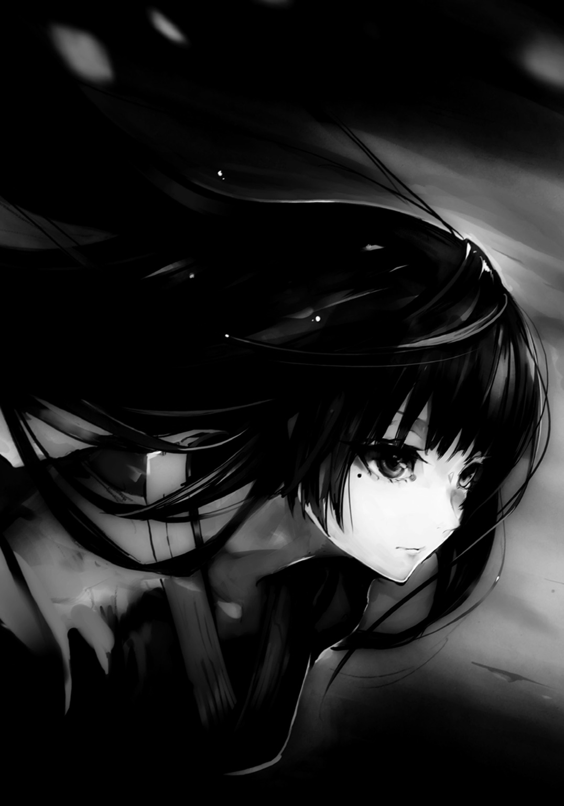
「姉ちゃんはそれで十分だろ。あとは自分なりに極めていけばいいんだ」
マドカは背負っていた荷物の中から手ぬぐいを抜き取ると、顔を擦る。
化粧で隠していた右目の下の泣き黒子が現れた。
「あ、失礼しました。今、母さ......あ、いえ、先輩の着替えを用意しますね」
「......な、なに？ マドカ、どういう......」
「汚してしまっているようですので。......あ、もう偽名はいいです。いつも通り、円でお願いします、先輩」
マドカ――円は、荷物から中年女の衣服を取り出そうとしていたが、何をしているのか、当の中年女にはわからない。汗が噴き出ていて、湿ってはいたが......。
中年女は、ハッとした。股ぐらに汗とは思えぬ、滴るほどの湿り気があった。自分でも気がつかぬうちに失禁していたのだ。
円や斛の双子と違い、中年女は才能を見出されて登用されたのではなく、血の滲むような鍛錬の果てに有能と呼ばれる域に達していた。だからこそ付け焼き刃ではない技と経験を持つ。そして現役を退いたとはいえ、数百名の人間に加え、十数名の陣士を屠ってきた暗殺者としての自信を今もなお抱き続けていたのだが......股ぐらの湿り気はそれを打ち砕くに十分だった。
睨まれただけで、裸足で逃げ出したあげく、このザマなのだ。
「府津羅流の剣はもういいや。でも、この二カ月の価値はあった。極めれば、人はどこまででもいけるんだってわかった。......強いなぁ、人間って。陣士なんかよりも、はるかに」
マドカは遠くを見る顔つきで、走り抜けてきた道を振り返っていた。
その顔を見て、中年女は思う。もう自分達の時代は終わったのだ、と。
すでに次の時代が来ている。新たなる烏の申し子達が巣立つのは、目前だった。
●
「あらあら。履き物すら置いて一目散に逃げていくだなんて......そんな怖い顔をするからですよ。もう、寂しいからって」
菫が道場にあがってくると、弟の剣を握ったまま俯いている頼雅の顔にそっと両手を伸ばした。その細い指先が、頼雅の顔を上げさせる。
「寂しさからではない。......あの烏風情、弟がマドカに手を出しかねんというようなことを言ったのだ。だから......」
そうではない。頼雅は思う。その怒りはあった。自分の大切なたった一人の弟を愚弄したのだ。相手が何であろうと、なますに斬り刻んでも構わないと思った。
......だが、今頼雅を俯かせるのは、そんなことではない。
「うまくやっていたとは言わない。だが、それでも不器用なりに精一杯やってきたつもりだった。......おれは、あいつの育て方を間違えたのだろうか。そして、これで良かったのだろうか」
大事な七つ下の弟だった。あれを頼むぞ、と父は言葉を残して逝った。当時まだ幼く、内におぞましいものを秘めている可能性のあった弟は、父の最後の懸念であったのだろう。だからこそというわけではないが、叩きに叩いて、弟の心を折りながら育てた。負け犬になるなと言いながら、負け犬然とさせてきた。......弟の中に秘められているであろう、鬼を抑えるために。
しかし、その身を、心を、負け犬に堕としたとしても......その牙までは抜けなかった。
本来ならば初めから剣を与えず、勉学だけに勤しませればよかったのかもしれない。......だが、出来なかった。剣しか、自分が人に伝えられるものがなかったのだ。何より、どこかで強くあれと願ってしまってもいた。男なのだ。府津羅の子であり、おれの弟なのだ。そういう気持ちが弟に剣を持たせてしまった。そして牙を抜かず、ただ眠らせるに止めてしまっていた。
叩きに叩き、苦しみと痛みに慣れさせた。そして、その牙が折れる寸前にまで追い込み、時には死の瀬戸際近くにまで押しやったこともあった。
それでようやく眠らせ続けることが出来たのだ。牙は抜かれたと本人すら思うほどに、深く。
しかし、剣の遣い手としてもう一つ上に行かせるため......陣士として剣による奇襲に耐えるだけの遣い手にするには、どうしても眠らせていたそれを目覚めさせる必要があった。腕の差があり過ぎる己より、烏の娘と斬り合うことで封じていたそれが解放されるだろうと踏んだのだが......目覚めたのは負け犬の牙だったのか、それとも鬼の角だったのかは、わからない。
府津羅流当代宗主たる己が斬ったのではないかと思うほど、居合いで斬られた大木の切り口は鮮やかだった。
「あいつは......どこにいくのだろう。陣士となって、一体何を......」
軟弱であれ、しかし強くあれ。その相反する兄としての気持ちが、教育が、弟の離反を招いたのかもしれない。剣を捨てるなど、さらには陣士になるなど、想像もしていなかった。
もし、陣士の力を得た上で、父が畏れた弟の中の鬼が解き放たれようものなら......その時は本当に斬りに行かねばならないだろう。
他の誰かに殺されるぐらいなら、必ずこの手で斬る。頼雅は、そう覚悟を決めていた。
「大丈夫、内に流れるものは違えど、紛れもないあなたの弟だもの。もう一七よ。道を間違えたりせず、きちんと自分の道、それもあなたやお義父様が願ったような、真っ直ぐに伸びた道を進むはず」
「......あいつには、おれの背を見ていてほしかった。おれの後をついてくるように、そばにいてくれれば......。そうすれば、何があっても大丈夫だと......たとえ奴が道を踏み外したとて、おれがすぐに......」
頼雅の目から涙がこぼれた。それがとめどめなく流れていくのを、菫の指先が拭う。
「......嫉妬しちゃうなぁ。あなたはいつもあの子が一番。わたしは二番。結婚しても、それは変わらない」
菫が頼雅の顔を胸に抱く。優しく、包み込むように。
「早くあなたの子供が欲しい。そうしたら、きっと、もっと大事にしてくれるわよね」
頼雅は「......すまん」と一言述べ、妻の背に腕を回した。
９
「陣を入れたいんです。何でもいいから、早急に。方法を教えてください」
商業区に辿り着くなり、俺は足を止めることなく学校の職員室に殴り込みをかけるが如く飛び込んで、声を上げた。
兄に背を押され、故郷を出てからすでに二五日が経過していた。
四名いた教師達が啞然としつつ、窓の外を見やる。今日は陣士になるための締め切りの日であり、すでに夕暮れだった。日没までと期日が決められているため、あと一時間もないだろう。
まだ相方を見つけることはおろか、体に陣も入れていない状態では、絶望的な状況だった。だが、絶望的だというだけで、絶望に暮れるにはまだ早い時刻でもある。
「あ、あぁ......アルク君だったな？ さすがに、もう無理だ。陣を体へ入れる方法は知っているだろう？ 耐えられん。いや、やれたとしても、恐らく身動きが取れんぞ。体に焼き印を押すんだ。それにパートナーもおらんのと違うか？」
わかっていた。だが、諦めきれなかった。何とか出来る。最後の最後、その一歩向こう側からでも、どうにか出来るのが府津羅だと兄は言った。
それに縋るわけではないが、まだ、どうとでもなると信じていた。
「これからもまだ機会はある。焦ってもいいことなどないぞ。何より今期はいささか酷だ。今回はやむを得なかったとして......」
別に今年だけが機会じゃないのはわかっている。だが、毎年陣士になるための入学審査が行われるわけでもない。過去の記録を見れば五年間新たな陣士を求めなかった時期もあるのだ。
ったく、しょうがねぇな！ そんな野太い声が上がった。それはあの体育教師だ。
「その様子からするに、必死こいて戻ってきたんだろ。そんだけ覚悟ありゃどうにかなるかもしんねぇ。ついてこい」
確かに俺の姿は、正直酷いものがあった。何せ、最短ルートでやってきたのだ。船での移動中はともかくとして、寝る間も惜しんで足を進めてきた。三日前には、水筒と刀以外の荷を捨て、身軽になって走り通してきたのだ。あからさまに小汚かった。
体育教師は歩きながら陣についてどこまで知っているかを尋ねてくるので、俺は卒業式でイリスから教わったものだけと応えた。
「そうか。......とりあえず覚悟は出来ているんだろうが......お前はこれから数十分で複数の陣を入れる必要があるわけだ。要約すりゃ......地獄だ」
体育教師は学校の裏手にある研究所が建ち並ぶ一角へと俺を連れていってくれた。薬物系の研究所が大半の中、衛士がいる建物が一つ。体育教師はそこの扉を蹴り開け、ズカズカと中に入っていく。そして、中庭らしき場所へ出ると、そこの窯に薪をくべていた老人に声をかけた。
「ジジイ、俺の教え子をあと三〇分で陣士にしてぇ。やってくれや」
「ほ？ 三〇分は無理だろう。一つ入れるのでさえ、ヘタをすればショック死しかねん。というか、何の陣を入れるかの選定も済んどらんじゃろう？」
「本人の望みだ。選定は......済んでないな？ よし、それじゃ二つだ。二つで使えるものを選んで適当にぶっ込んでくれ」
正気かぇ？ と、老人は困り顔のまま、研究所内に入っていった。
「いいか、よく聞けアルク。これから陣について特別講義をしてやる。......陣は薬物を体に打ち込み、そこに特別な焼き鏝を押し当てることで能力を定着させる。火傷はともかく、この薬物ってのが劇薬......いってみりゃ、猛毒だ。それ故に一つ入れるごとに体力が急激に低下する。だからこそ己の体力以上に入れれば衰弱死は免れねぇ。適性の低い奴は何年もかけて三つ、四つ入れるんだが、これは時間をおけば体がその陣に吸い取られる以上の生命力を生み出すようになっていくおかげだ。......高い山への登り方と同じだな。高山病にならねぇために、ガチで高い山へ登る前に、その中腹まで行って、下って、また登ってを繰り返して体を高度に順応させるんだ。陣は外せねぇから、登ったら登りっぱなしだが」
俺は体育教師の話を至極真面目に聞き、頭に刻み込んでいった。
「ほれほれ、時間がないぞぇ。適当に使えそうなのを二つ持ってきてやったぞ。どこに入れるんじゃ？」
時間がない。俺は上着を脱ぎ、二本の注射器を持ってきた老人に左肩を差し出した。
一〇センチばかり離して刺したその二本から、毒々しい赤い液体が俺の体に入ってくる。
「これで赤くなる部分が手の平ぐらいになれば頃合いなんじゃが......時間がないのぅ。仕方ない。裏技を使う。注射したところを思いっきり引っぱたきまくるんじゃ。無理矢理大きくせい」
おりゃあぁ！ と、体育教師の肉厚な平手打ちが俺の肩を襲う。......割と痛くて、引っぱたかれる度に声が出た。その間に、老人は焼き鏝を持ち出してきて、それの先を窯に放り込む。
「ほ？ いい感じに拡が......というより腫れておるのぅ。まぁ拡がってもおるから大丈夫か。ほれ若いの、この布を嚙んどけ。こっから地獄じゃぞ。......これより焼き入れを行う」
言われたとおりに棒状に丸めた布を嚙み締めたのだが......そのまま俺は倒れた。目眩がした。込み上げてくる、吐き気。そして......自分でわかった。信じられないほどに発熱している。
キツイだろう、続けられるか？ 訊きながら体育教師がさすがに心配して肩を貸してくれた。
俺は吐き気を抑え込みつつ、地面に落とした布を拾い上げ、言ってやる。いけます、と。
この程度の苦しみは......大したことじゃない。俺は、もっと痛くて辛い時間を知っている。
体育教師がニヤリと笑う。老人も笑っていた。俺は布を嚙み締め、肩を差し出す。
窯から抜かれて現れたのは、真っ赤に熱せられた焼き鏝。一つの焼き鏝に、一つの文字。よく見ると焼き鏝の先端には産毛のような細い針が数千本もついているのだと知れた。
それが、俺の肩に当てられ......嫌な音がした。
皮膚が焦げ、血が沸き、肉が焼ける。俺は布を嚙みきるほどに嚙み締め、腹の底から唸った。
あまりの衝撃に意識が飛びかける。唸り過ぎて鼻血が出た。
「根性を出せ！ アルク、もう一つだ！ ......ん、おい、ジジイこの陣、また微妙な......」
「ほ、いいじゃろ。それほど重くない、体に入れやすい陣じゃ。ほほ......行くぞ」
チッ、と体育教師が舌打ちするのを、混濁しつつある意識で俺は聞いていた。
また、焼かれている。逃げ出したくなるような痛みではあったが、俺は、兄との時間を思い出しながら、耐えた。
兄にしごかれた痛み、俯き続けた日々の苦しみ。そうだ。俺は、痛いのも苦しいのも慣れている。これぐらい何だっていうんだ。ただ毒を体に入れ、肩を焼かれているだけじゃないか。どうということはない。耐えられる俺は。
これはきっと、生まれ変わるための苦しみなのだ。
兄の、そして府津羅のしがらみから抜け出る、アルクとしての......俺の、本当の......。
気がつくと、俺は焼かれている左手で、腰に帯びていた刀の柄を握り締めていた。
兄さん、俺......陣士になる。あの時、五カ月ぶりに会った兄に、そう告げた。
あの時、苦しげに腕を組み、何かを考えていた兄。そして長い沈黙の後に、居合いをやれと言ってきた。あの時、すでに兄は俺の背を押そうと決めてくれていたのか。それとも刀と置き手紙を残して去った半年前からずっと......？ わからない。けれど、兄に背を押させた以上......陣士にならないわけにはいかない。そう思う。
剣から逃げ、その先で陣士にもなれず......お前はいったいなんなんだ？
そんな言葉は何があっても言わせない。
「......俺は絶対に、陣士に......なるんだ。そして、いつか、必ず、兄さんに......兄さんに......」
「そうじゃ。陣士になろう、アルク。ボクと一緒に......！」
老人の声かと思ったが、それは少女の声だった。俺はハッとして閉じていた瞼を開けた。
誰かに肩を借りて、歩いている自分に気がついた。体育教師ではない。あのガタイのいい男の広い肩ではない。......むしろ、小さく頼りない肩だった。
辺りは研究所の中庭ではなく、いつの間にか商業区の路上である。
俺は、意識を失っていたのか。期限は？ ――まだ、いける。薄暗くなりつつあったが......一歩一歩ゆっくりと、足を引きずるようにして進む道の先に、長細く引き伸ばされた俺自身の影がある。まだ、日は暮れていない。
そして、その隣には小さな人影。しかし頭には、大きな狐耳。
横を見る。あの、体育館で俺を笑うことなく見つめていた大きな耳と尻尾の、あの少女が......汗だくになりながら、必死に俺の体を支えてくれていた。
「ボクはユニ。......アルク、おぬしとパートナーになりたい」
夢を見ているのか。薬の副作用の幻覚か。俺なんかにそんなことを言ってくれる相手がいるというのか。パートナーになってくれと頭を下げることばかりを考えていた。それなのに......。
夢かもしれない、幻覚かもしれない、けれど......誰かに求められる、その感覚はこんな苦しみの中であっても、胸の中に焦りにも似たむず痒さを生んでいた。
嬉しい、と素直に思った。俺なんかでいいのか、そう思う。
けれど......一個、どう考えても大きな問題があった。
「......あ、いや、気持ちはありがたいんだけど......パートナーは......同性が......」
「えっと......ボクは......男の子じゃぞ......一応、その......」
噓だろ？ と、思わず言いそうになる。俺の肩を抱く彼女の体つきは十代前半かそこらの幼いもの。巫女のような服装のせいで体の特徴は隠れてしまっているが......顔に至っては完全に少女そのものだった。きめ細かい赤子のような肌に、長いまつげ、大きな金色の瞳。ややクセっ毛の白い髪から伸びる大きな耳が、愛らしい。
「信じるのじゃ、アルク。ボクは男の子じゃ。......えぇい、疑うでない！」
俺の体を支えるのに必死な少女は......いや、ユニは喘ぐようにそんなことを言う。
「時間もない。まさか、おぬしは次にいつ来るかわからない機会を待つのか」
いつか逃げ出したいと願いながら一七に差しかかる年齢まで何もしてこなかった情けなさを、俺はユニの言葉で今一度思い出した。
自分で陣士になろうと動きだすまで、機会などなかった。もし、なろうと思わなければ......いや、一歩踏み出さなければ、俺はずっと俯いたまま剣を振っていたのかもしれない。
......いつか来るかもしれない機会は、きっと来ない。
だから、自らの足で進んでいくのだ。自らの手で、摑み獲るために。
苦しくとも、辛くとも、一歩一歩、進んでいくのだ。
踏み出さなければ、何も変わらない。リスクがあったとしても、踏み出さなければ......。
「あと少し......。もう暗くなってきた。どうするか決めるのじゃ。ボクか、それとも――」
「......わかった、ユニ。組もう。......いや、俺と組んでほしい」
どこか勝ち誇るようなユニの黄金色の瞳が俺を、そしてどこか違う場所を見る。......上？ その瞳に、何かが映っている。空に浮かぶ、人影。......ソラ？
俺が薄暗くなりつつある空を見上げた時、そこにはもう、誰もいなかった。
「うむ！ 陣士になるのじゃ、アルク。ボクと一緒に」
何故ユニは俺に肩を貸しているのか、何故ユニは俺を待っていたのか、何故ユニはこんなにも必死で......いろいろな疑問があった。
ユニの性別もそうだが......しかし、今はそんなことよりやるべきことがあった。
今、地を踏みしめている足を前に出すのだ。一歩、一歩。ユニに担がれている左肩には今も焼かれているような痛みがある。指先に血なのか他の体液なのか、液体が滴っているのを感じながらも、それを拭うようなこともなく、俺はユニと共に足を進めていく。
日暮れ直前に辿り着いたのは......学校、そして研究所群の先......陣士以外は入れぬとされるエリアを囲む巨大な壁の門。城郭の内と外とを繫ぐ場。
そこには一人の老紳士が立っていた。俺が初めてこの地を訪れた時に受付にいた人だ。
「......本来ならば陣を拝見するところですが、その必要はないようですね。人に見えぬよう隠しなさい。如何なる陣を入れたかを知られるのは、陣士にとって好ましくないものですから」
老紳士の言葉に、俺は初めて自分の左肩を見やる。
......焼けて赤黒くなった肩で二つの陣が鈍く光っていた。
そこにあったのは〈炎〉と〈波〉の字。......これが、俺の陣......？
そして、そんな左肩を担ぎ、ずり落ちぬように手首をしっかりと握ってくれているユニの左手には、解けかけている包帯があり......その隙間から陣が見えていた。
手の甲に〈陣〉の字。そして、俺の手首を握り治す際に見えた掌に〈封〉の字。
「見事陣を入れ、パートナーをお見つけになられました。では、最後に問います。......汝、裸の大剣となることを望むか？」
老紳士の問いかけに、俺とユニは「「はい！」」と声を張り上げた。
「よろしい。現時点をもってお二人の最終試験を終了とします。ようこそ、陣士の世界へ」
老紳士の背後の巨大な扉が、音を立てて開かれた。
その瞬間、俺とユニはパートナーとして結ばれ、そして......陣士となったのだった。
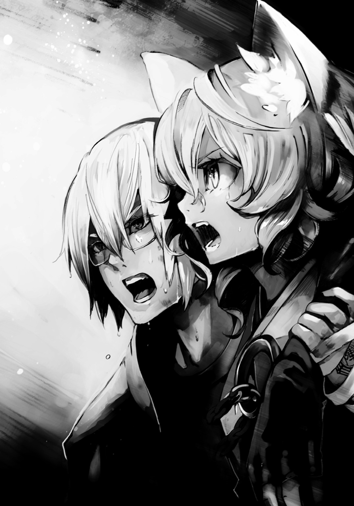
●２章『初陣』
背後の巨大な門が閉じると、辺りは静けさを増し、引きずるように歩き行く俺達の足音だけが妙に響いた。
「とりあえず、このまま総務部へ行こうかの。多分、今の門を抜けたことで陣士としての資格はクリアだと思うのじゃが......一応最終試験はパートナーの申請を出さないと......うぁっ」
転倒しそうになるも、ユニは前に足を大きく踏み出して自分と俺の体を支えてくれる。彼の袴の先から覗く編み上げのブーツが石畳を強く叩いて、いい音がした。
人気のない建物群から頭一つ飛び抜けているそれらしき建物を目指す。
辿り着いて、扉を開けた時には自分らの影はほとんど見えないほどに暗くなっていたが、そ知らぬふうで行こうとユニと決めた。
建物内に入ると案内板があったので、それに従い地下に降りる。巨大な館ではあったが、地下には書庫と総務部しかないらしい......というか、どうやら同じ場所にあるようだ。
「......ん？ あぁ、いらっしゃ～い？」
扉を開くなり、木霊するかわいい声と目の前の景色に、俺達は思わず呆気に取られた。
それも当然だろう。階段がやけに長いとは思ったけれど......地下の総務部兼書庫は、あまりに広大な一室だった。
まるで巨大ホールのようなドーム状の造り。高い天井で地下なのに開放感があり、また天井はもとより至るところに温かみのある黄色い間接照明がついていて、暗さを感じさせない。
そんな場所には、天井に到達しそうなほどに高い本棚が何列も配置されており、迷路然としている。果たして何十万冊の蔵書があるのか、わからなかった。
そんな本棚に囲まれた部屋の中央には『総務部受付』の札が掲げられた円形状のカウンター。
広い室内なので、扉を開けてから中央に行くまでがかなりしんどい。ようやく辿り着けば、かすむ俺の視界に妙な格好の女が映り込む。
もさっとした桃色がかった長い髪、そこから伸びる猫のような耳。そして大きな丸眼鏡をかけた顔には、肉食獣が狩りで獲物を見つけたかのような微笑みが浮かんでいた。
彼女は何やら生地の厚く、高級感のあるマントというか、コートのようなものを羽織っているのだが......その下はまるで水着か下着のような格好で、目のやり場に困るほどだ。生まれてから一度も日の光を浴びたことがないのではないかと思わせるほどに白い肌も眩しかった。
惜しげもなく晒している引き締まったウェストも目を引くが、それのせいで球のように飛び出ている大きな胸がいやでも目立つ。背後から見れば胸がその背の両脇からはみ出しているのだろうと簡単に想像出来るほどだった。
そんな彼女はそれまで読んでいた文庫本を脇に置くと、カウンターの上に両手をついて身を乗り出し、俺達を興味津々な顔で見てきた。
「なは～？ これは期待出来そうなコンビ～！」
カウンターの前に椅子があったので、俺は倒れるようにその椅子に座り、そして疲労困憊という様子のユニも隣の椅子に尻を落とす。
「ねぇねぇ君達。陣士のコンビは同性が基本だっていうのは知っているよね？ ねぇねぇ？ ってことはさぁ、こっちの耳ッ狐は、男の子なわけだよね？」
「耳を触るな......んら！」
うるさい虫を払うように、ユニは耳の先をつまんでいた眼鏡女の手を払った。
眼鏡女はアリアドネだと名乗った。二十歳前後、胸のサイズを忘れれば、表情からは十代にも見えるが、これでも総務部部長らしい。
パートナーとしての手続きをするというので、俺達はまた入学時のように名前と年齢、持病などを書類に書いていく。......同じことをまた書かされるあたりにお役所感が漂っていた。
「ふ～ん、アルク君は一七歳、ユニ君は一四歳かぁ。それじゃ、二人共童貞だよね」
ピタリ、と俺とユニのペンが止まり、紙面から嬉しそうなアリアドネの顔へ視線を移す。
「だってぇ、ユニ君は年齢的にもアレだし、アルク君はカッコイイけど、何かうじうじでヘタレ雰囲気に童貞オーラ滲んでて女性慣れしてない気配がビンビンで......あ、いいのいいの！ バカにしているわけじゃないから！ むしろいいこと、超いいことだから！」
俺は顔が赤くなりそうで、また俯くようにして紙面にペンを走らせる。
......図星だった。妙齢の女性と喋ったことなど、ほとんどない。
「それにそういう人同士の方が、新しい世界を開ける可能性が......ぐふふ。それにこれだけ若いカップルだとこれからムキムキに育つかもなわけで......ふんふん」
マントの下から、やはり猫のような尻尾をもたげてきて、彼女が興味津々であることを示すようにくにくにと揺れていた。
「いい？ 男の子、ノン、漢はね、やっぱりこう、ゴツくてナンボなわけ。こっちのアルク君は細マッチョに仕上がっちゃってるけど、ユニ君は今からゴリゴリのマッチョに持っていくことも可能で......あ、何だったらこのアリアドネおネエさんが理想的なマッチョ化計画を――」
「......マッチョになど興味ない。というか、陣士が筋肉つけたって意味ないじゃろう」
「あららぁ？ 体力つけないと新しい陣を体に入れた時にへにゃへにゃになっちゃうよ？ それとも陣を入れても体力の低下率が低いぐらい、適性がハンパないとか？ ......んふふ、どっちみちねぇ～、体力はあって損はないとは思わない？」
何だか遊びたい盛りの子猫か子犬のようにアリアドネがユニに絡むのを横目に見つつ、俺は羽織ったジャケットの左肩に手をやった。肩全体が腫れ上がりつつあり、少し触れるだけでビリビリと痛......ん？ 何だ、この本......？
それとなく先ほどまでアリアドネが読んでいた本を手に取る。そこには『筋肉武士』の文字。......随分と不穏なタイトルだな......。
トコトコと本棚の陰から、小太りで一三〇センチもないような女の子が小走りに二つの小包を持ってきて、カウンターに置いた。
「部長部長、準備出来ましたよ。......じゃ、こちらのお二人の書類は四〇四番のフォルダに入れときますね。今期はこれで終わりですかね」
「多分ね～。もう日が暮れたでしょ？ ミウラ、あとやっておいて」
ミウラはコロコロとしていて女性的な魅力は皆無だが、人形のように愛らしかった。
彼女はその姿に似合ったかわいらしい声で応じて、また本棚の迷路の中に消えていく。
「......じゃ、ユニ君、アルク君、これね。この箱の中に支度金とか、総本山内のマップとか、生活アドバイス。あ、あと君達のアパートの鍵もね。とりあえずもう時間もないけど、今後のスケジュール表も入ってるから。そんでこっちの冊子が陣士としてやっていくために重要なことが書かれたものでね。目を通した方がいいけど、基本、内容っていえば......【むやみやたらに肌を晒すな。どのような陣を入れているかを知られるのは陣士にとって命取りであり、またその入れている場所を知られるだけでも時と場合によっては致命的たり得る】【常にパートナーと行動を共にせよ。単独行動の陣士ほど狙われやすいものはない】【陣士はその力と裏腹に、脆弱極まる存在であることを決して忘れるなかれ】【清く正しく健やかな陣士としての人生を送るべし】......ってのを延々と長ったらしく書いてあるだけなんだけど」
......何だよ、その最後のは。
「あ、最後に私からのすんご～く、大事なことを教えてあげるね。......重要かつ極秘なことだから、ほら、二人共、耳寄せて」
顔を差し出すアリアドネに俺達は耳を寄せるのだが......そうか、ユニの場合、頭にデカイのがついているから、少し普通とは違うのか。
こういう時、たいていは頰を寄せ合うようにするものだが、ユニは当たり前のように顎を引いて、軽くお辞儀をするようにしてピクピクと動く大きな耳を俺とアリアドネに向ける。
......ほのかに、ハーブのような、爽やかな匂いがする。彼の髪の匂いだろうか。
いい、二人共、一回しか言わないからね......？ と、アリアドネは重苦しい声を出すので、俺とユニはさらにグイッと耳を近づけ、息を呑んだ。
「男の子にも、穴はあるのよっ......？」
俺とユニは今、きっと同じ顔をしていることだろう。
〝......何だ、コイツ〟という気持ちで、二人して「んふっ？」と笑うアリアドネを見やった。
「陣士は同性で組むのが基本！ そして陣士が肌を晒すことは即ちリスク！ だから気軽に性交渉なんて出来ないけれど......でも、生涯を共にするであろうパートナーとなら......！ んまぁ素敵！ みんな幸せ、アタシも幸せ！ ひゃっほー――ガッ!!」
クソみたいに分厚い辞書が突如飛来し、アリアドネの後頭部をしたたかに打った。目玉が飛び出すほどの衝撃に見えたが、吹っ飛んだのは彼女の大きな眼鏡だけである。
「部長、またそうやってアホなことを......。ほら、受付作業終わったんなら裏で他の仕事しててください。たまってるんですから」
ミウラがトコトコと短い足を鳴らして現れると、細身とはいえ長身のアリアドネの首根っこを摑んで、引きずっていく。
「いやぁ！ まだ重要なことを教えてない～！ ミウラ、連れていかないでぇ～！」
「どうせまたわけのわかんないことでしょう」
「一線を越える時は、清潔にして、ワセリンとかローションとか、あとオススメの......！」
「はいはい衆道衆道。......男色家が多いかもっていう思いつきだけで陣士になって総務部乗っ取った部長の根性は立派ですが、そうやって興味ない若者をそっちの世界に引きずり込まないように。そんな暇あったら裏で地味で孤独な事務作業をしましょう」
「いやぁ！ あの二人は可能性が大なのぉ～！ そのままでもいいけど、個人的にはユニ君をゴリゴリのゴリラみたいなマッチョにして、アルク君と絡ませたいのぉ～！」
「いい加減古代の本読むのやめてくださいよ。っていうか、夢の世界を現実に構築しようとしないでください。......まったく、女として恵まれて生まれておきながら......。ほら、行きますよ。せいぜい休みの日にでも軟派なイケメンでも引っかけててください」
「もう衆道しか愛せない！ いやぁ――――――――――――――!!」
騒がしい二人を俺とユニは呆然と見送り、三〇分ほどそのまま待ってみたが、誰も現れず、何もなかったので、俺達はその場を後にした。
ここは出来る限り来てはいけない場所だと、何となく思った。
１
与えられた部屋はかなり優遇されていた。レンガ造りの二階建てアパートのワンルーム。部屋にはベッド、ソファ、テーブルといった調度品の他、風呂とトイレも備えられている。
しかも個室だ。恐らく人前で服を脱ぐのは陣士にとって非常にリスクがあるからだろう。
同室かと思われたものの、ユニは隣の部屋である。......アリアドネにおかしなことを言われたせいか、何だかユニを意識してしまいそうだったので、これはよかった。
別に〝男にも穴はあるのか、そうかそうか......〟とか呟いて、ニチャリと下卑た笑みを浮かべているわけではなく......ユニが、本当に男なのかどうか、ということに関してである。
どう見てもちょっと無愛想な女の子という感じしかしないし、耳を寄せ合った時の、あのクセッ毛から漂ったいい匂いも妙に気になってしまう......というのが正直なところだった。
倒れるように一晩爆睡した俺はベッドから起き上がると、半裸のままで頭を抱えた。
「男、だよな。偽る理由が......ないよな。他から断られたとかで......そうじゃなかったら、ユニが俺を好――」
......一カ月前、マドカに言われた言葉が、今も心に引っかかっているせいなのか、何だか恥ずかしい自意識過剰なことを考えてしまいそうになって、俺は思考を打ち切る。
意識を切り替えるように、窓の外を見やる。総本山内部。陣士達が住まう街は閑散としていた。ソラに連れられて上空から見下ろした印象そのままだ。人が少ない。そして壁一枚向こうではあんなに毎日がお祭りのような有様だった商業区があるというのに、まるで活気がない。
ミウラから貰った小包の中に入っていた『楽しい陣士の生活を送るために』というパンフレットにもあったが、陣士は仕事柄世界各地を回っていることが多いらしく、総本山にいる人数は少ないくせに、敷地は広く、基本的に人口密度はかなり低いらしい。
『人恋しくなった時は商業区へ行こう！ けれど商業区とはいえ、部外者も多い。油断は即座に死へと繫がるぞ！』とふざけた記述があったが......人が一人も歩いていない窓からの風景を見ていると、確かに商業区や三カ月間過ごした学校の寮が懐かしくなる。
道は広く、人の手によって植えられている木々も手入れされていて綺麗だ。建物も大きなものや、趣向を凝らしたものが多い。俺の生家のような瓦屋根の屋敷も少なくないし、中でも古代の都市を思わせる細く高い塔がいくつも聳えていて、厳かさがある。そして、窓からは総本山の頂も見えるのだが......そこには巨大な館、というか、城が見えていた。
「着替えて少し回ってみるかな......痛ッ！」
触れた左肩が痛い。そこには巻いた記憶のない包帯があるところをみると、昨夜ユニが巻いてくれたのだろうか。解いてみるといまだ生乾きの酷い火傷の状態で腫れ上がってはいたが、体調はすでにある程度回復している。熱も、あまりない。毒も一晩で乗り越えたようだ。
俺はベッドの下に隠すようにして置いていた、兄から貰った刀を手に取る。昨日よりいささか重い。半裸のまま、抜き打ちを放った。部屋の中で、他の物に当てずに、空だけを斬る。
......鈍くなっている。自分でそれとわかるほど、はっきりと。左肩の痛みは無視できているし、腫れて動きにくいというわけでもない。純粋に体力が落ちているのだ。
俺はため息と共に今一度刀を封じるようにベッドの下へと戻した。
剣を捨てるための帰郷だったのに、気がつくと新たなる剣を得て総本山に戻ってきた。妙なことになったものの......捨てるという選択肢は不思議と湧いてこない。
鵺に苦しめられたせいか、旅に出る時には有用だろうと少し思うし......うん。
玄関前に備えてある姿見に、肩を映した。赤黒い文字で〈炎〉と〈波〉の字。陣だ。
何でもいいからと頼んだが、案外悪くない気がする。
アレだろ、炎がドバーっと、こう、津波のように大地を包み込むわけだ。
「しかしこれ、どうやって使うんだ......？」
現状習ったのは毒などの暗殺への対処法や、数学、生物、化学、物理、人類史といった座学ばかりでこれといった陣の扱いについては触れられていない。陣の漢字が果たして何千種あるのか、どれをどう組み合わせるべきなのか......そういった知識は誰も教えてくれなかった。
......いやまぁ、使い方がわかったとしても、部屋で使わないけども。さすがに今ここで使うと、住居が焼失するだけでなく、半裸の俺まで火傷を負って......って、おい。アレ？ 何だ、コレ？ 髭が随分と伸びて......え？
顎を触ればソラのような、つまめるほどに伸びた無精髭がある。俺は反射的にベッドの回りに視線を走らせた。ベッド、使われていない包帯の巻と瓶に入った緑の塗り薬が置かれている他は特に......いや、ある。俺の予想を裏付けるものが。
ゴミ箱の中に、笹の葉が十数枚と竹串が数十本、そして......使用済みの血と黄色みがかった体液で汚れた包帯が丸められて入っている。二つ......ということは......。
「二日以上も、寝ていたのか、俺......」
焼かれた腕の腫れが引き始めているのも、それで納得出来た。翌日だというのなら、まだ酷い状態のままだったはずだ。
寝ている間、俺はユニに面倒を見てもらっていたのだろうか......？
うーんと首を捻るものの、答えが自らの中にあるとは思えず、仕方ないとしてとりあえず風呂に入ることにした。......我ながら体臭が鼻についた。
早速体と頭、そして顔を洗い、最後に洗面台にあったカミソリを頰に当てていると......誰かが近づいてくる気配。部屋の外の廊下を、コツコツと硬い靴底が叩く音がする。
それは俺の部屋の前に来るとピタリとやみ、そして......躊躇いなく扉が開かれた。
俺はシャワーを静かに止め、無意識にカミソリを握る手に力を入れたが、風呂場にも聞こえてくる声で、その力を抜く。ユニだ。
「アルク、食事を買ってきたのじゃ。......どうせまだ寝込んでいるのじゃろう？ 安心するといい、おぬしが食べられない分はボクが全部食べるでの」
髭はすでに剃り終わっていたので、俺は裸のまま、風呂場からそっと抜けだし、部屋を見やる。すると窓際の小さなテーブルの前にユニが立っていた。彼は何かが入っている紙袋を置き、水筒らしき物から湯気の立つ液体を湯飲みに注ぐ。部屋に拡がるのは......緑茶の香りだ。
そしてユニは俺の気配に気づくこともなく、紙袋から笹の葉でくるまれた何かを二つ取り出すのだが......その瞬間、おとなしく垂れていた彼女、違う、彼のフサフサな尻尾が途端にふぁさふぁさと左右に振られ始める。
笹の葉の包みを解くと、中から現れたのはみたらしとあんこの串団子、それぞれ四本ずつ。
「アルク、みたらしとあんこ、どっちが......ってどうせ食べられないの。仕方ないの、ボクが全部食べるかの。任せるのじゃ。......ふふふ」
言うなりユニは長い袖を捲ると、それぞれの団子をガシッ、ガシッ、と四本ずつ、左右の手の指の間に挟み、まるで長い爪のようにしてその全てを同時に持ち上げ、腕を交差させた。
「ふはははは！ まるで世界を手中に収めたような気分なのじゃ！ これだけでも総本山に来たかいがあったというものじゃの！」
尻尾の揺れは最高潮だ。高速で左右に振られていて、今にも千切れてしまいそうである。
ハグハグッ、ハグググ......うまうま......という、犬に肉でも与えたような音を立てて団子に喰らいつくユニをよそに、とりあえず俺は下着を穿く。
「あのさ、ユニ。俺が寝ている間、君は――」
大きな耳と左右に振られていた尻尾が途端にピーンっと伸びて、小刻みに動いていた彼の体ごと固まった。そして錆びついたオモチャのように、彼はぎこちなく振り返る。
「ア、アルク、お、起きたのじゃな......心配した、ぞ......？」
「え、あ、うん。二日も寝ていたんだな。ごめん。面倒をかけた......よね？」
焦り顔のユニが体ごと振り返るも、サッと両手を背後に隠す。
団子を喰っていたのを隠したいようだが、何故そうするのか、わからなかった。
......口の周りにはあんことみたらし餡がたっぷりとくっついているし......。
「あ、そ、そうじゃ、食事をと思って団子買ってきたんじゃけども......」
そう言ってユニが取り出したのは......七本のただの串と、団子が一つだけかろうじて刺さっているみたらしの串が一本だけである。俺はついに苦笑して、全部食べなよ、と勧めた。
上着を探せばベッド脇に畳んであるのを見つける。故郷からの旅で薄汚れていたはずなのに、嬉しくなるほど綺麗に洗われていた。手に持つとかすかにあのハーブのような匂いがする。
「何じゃ......怒らないのか、アルク？」
別に？ 団子が好きなんだな。そう返すとユニは恥ずかしげに頷き、最後の団子を口に含む。
「好きというか......ここのは特にうまい。じゃが商業区は物価が高いのが嫌じゃな。学校支給の生活費も多額じゃと思うたが、喰うに困らないだけで何かに使うとすぐに底をついたしの」
ユニが名残惜しそうにしつつも串や包み紙代わりの笹をまとめてゴミ箱に入れ、茶を啜ると、団子の値段を口にする。それには上着を羽織っていた俺の動きが止まりかけるほどだ......。何せ、団子一本が学校にいた時の俺の一食分である。よりわかりやすく言えば、月見蕎麦一杯に天かすのオプションを加えた価格だ。
支度金はそんなにあるのか。そう呟きながら先日ミウラから受け取った小包を開く。
『お金の使い方』とか『陣士で稼ぐ！』といったカラフルなパンフレットを除けて、支度金の入っている封筒を手に取ってみれば......うん、明らかに開封されているんだけど、これ、どういう意味だろうな......。
ベッド脇にあった眼鏡をかけつつ、ユニを見やる。
椅子に座った彼は、尻尾を横に回してお腹で抱きつつ、窓の外を遠い目をして見ていた。
「......その、ご飯食べるかと思って、買い出ししておいたのじゃが、起きないから、その......」
俺の目は自然とゴミ箱へと向けられる。そこにある数十本もの串が、ここで何が行われていたのかを教えてくれたような気がした。
ただ、寝込んでいる間の俺の面倒を見てくれていたのも、事実なのだろう。......だから、別にいいんだけど、と俺は口にする。
「ほ、本当か？ 支度金もさほどの額ではなかったから、その、つい......すまぬ」
ほっとした様子のユニの尻尾は、本人が気づいているのかわからないが、思いの外感情を示すようだ。腹に抱かれていた尻尾は、今は彼の膝の上でパタパタと跳ねていた。
見た目は狐だが、尻尾の使い方としては犬に近いのかもしれない。
ようやく笑顔を見せたユニに緑茶を貰い、俺も一息吐く。
「ともかく俺も陣士、か。......けれど、何をしたらいいんだろう」
俺は陣士になるのが目的で、そこから先を何も考えていなかった。
俺もまた椅子に座り、小包の中のパンフレットを漁ってみれば、予定表と書かれた紙を見つけた。今期は役職を決めるにあたり、特別な手法を採るとあり、それは――。
「何だ、役職って。しかも、それを決めるための陣士コンビによる、トーナメント......？」
「パンフレットにあったのじゃが、今期の新人は医療・通信の、完全な非戦闘役職を目指す者を除いた全員が強制的にトーナメント方式で戦うそうじゃ。その結果で役職を決めると」
そういえばソラが役職は大事だとか言っていたっけ。役職って、つまりは仕事か。
「陣士って何だか、世知辛いものだな......。俺のイメージは、こう、ドーッと凄い力で天地を動かし、何でも好き勝手出来たりっていう感じだとばかり。......まさか陣士になった直後にいきなり仕事関係であれこれするのはさすがに想像してなかった」
陣士が、と俺は言ったが、実は働くこと自体が、俺の頭になかったのかもしれない。鵺を駆逐するのは仕事という感じではなかったし、剣で身を立てる一族だから強くさえあればそれでよかったわけだ。強いことが即ち商売として成り立ち、生活の保障にもなる。
だが、そこを出た以上......極端な話、どれだけ強くともあまり意味がないのだろう。
......何故だろう。人ならぬ力を持つ存在になったはずなのに、最初に立ち塞がる問題が今後の生活基盤とか......。まともに働いた経験がない身からすると、考えるだけで目眩がしそうだ。
「大丈夫じゃ。幼少期より特別な教育を受けてきたボクがおる。陣については安心していい」
ユニは湯飲みを手に、どこか不敵な笑みで言った。
この少女のような少年......ユニが、何故俺を選んだのか、そしてその特異な教育がどんなもので、彼自身が何者なのか......っていうか本当に男なのか......まだ、わからないままだった。
訊いてみるか。そう思った時、部屋にノックの音。
出てみれば、えらく小さいまん丸い女性......総務部のミウラだった。
「あ、ユニさんも一緒ですね。トーナメントに関連して今夜説明会を行いますので、全員参加するように、とのことです。サボった奴は皆殺しだ、とイリス様よりお達しです」
２
結局、俺はユニに何も問うことなく日暮れを待って、説明会とやらの会場へと二人で向かった。何となく話がしづらい......というか、よくよく考えてみれば、今まで人と接してこなかった俺にろくな会話術などがあるわけもない。それにユニも団子と金についてはよく喋っていたものの、それ以外には割と淡白というか、あまり余計なことを話してくれないせいもある。
俺のユニに対する疑問は、二つ。お前は何故俺を選んだのか。そして、お前は、本当に男なのか。とはいえ、前者は一言二言で返答が出来るとは思えないし、後者の証明は......どうしろというんだ。まさか裸になって股間のモノを見せろとでも言うのか。それこそまさにホ――。
「一線は越えたかなぁ？」
なははは、と楽しげに俺とユニの間に顔を差し込んできたのは、総務部部長のアリアドネだ。会場である巨大なドームへ向かう途中の、暗い夜道だというのに、彼女の格好は相変わらずで、目を逸らそうとしても、自然と引きつけられる。
「えぇい、腕を絡めるな！」
ユニは俺達の首に絡めてきたアリアドネの腕を払うも、彼女は、笑っていた。
「えーいいじゃんいいじゃん！ なははは！」
ユニの不満を表現するように、彼の尻尾はピンっと斜め上に伸ばされ、毛も逆立っていた。
「キミ達、申請もギリギリだったのに、説明会にまで遅れたらイリス様に怒られるぞぉ。急げ急げぇ、なはははは！」
アリアドネは上機嫌に笑うと、俺達を追い抜き、その長い足でさっさと会場へと向かっていく。......そうして初めてわかったのだが、彼女が羽織っている大きなマントみたいなものの裾を、ミウラが後ろから持ち上げて地面で汚さないようにしていた。そして、よく見るとそのマントの背にはどこかで見たような国旗らしき模様があるけど......あれ、なんだっけ？
「......何なんじゃ、アイツは。ったく......」
苛つくユニと同様の疑問を抱きつつ、俺達はかなり巨大な建物へと足を踏み入れる。
そこは大声を出しても反響しないほどに広いドームだ。一面の芝生。裸足で歩くと気持ち良さそうに小綺麗で青々しい。高い天井には煌々とした照明もある。恐らく電気を使った照明だろう。総本山では地熱を利用する古い技術が今も使われているとパンフレットにあった。
そんな場所に俺達を含めて四十名ほどの同期生達とアリアドネ、ミウラ......そして石板で組まれた舞台があり、その上に相変わらずほぼ全裸でポーズを取っているダンとジョーがいた。誰も見ていないのに定期的にポーズを変えていくあたりに、彼らの強靭な心を感じさせる。
「あらまぁ、本当に陣士になったんだ。......それともそれすら陣士を殺し尽くすための偽装かしら？ ねぇ、府津羅の出来損ない」
ドームに入って最初に声をかけてきたのは、浜菊だ。すでに学校は卒業という扱いになっていたが、彼女は相変わらず制服にマントを羽織ったスタイルで、白妙菊を従えていた。
アルクだ、と俺は苛立ちを腹の底に抑え込み、今一度浜菊に名乗った。
「あらそう。私と菊はそのまま浜菊憐、白妙菊の名で登録してある。改めまして、よろしく府津羅。ん？ ......へぇ？ なに、アンタ達、男女で組んだの？」
うっ......と、俺は思わず息が詰まった。浜菊の視線から逃げるように、隣にいるユニを見やれば......どこか気まずそうな顔をして地面に視線を這わせていた。
「ち、違うのじゃ。ボクは、男の子で......だから、それでアルクと......」
「あっそ。でもどうせアレでしょ？ 誰とも組めなかったから、同じような府津羅と組んだとか？ アンタ、クラスの隅っこでいつもいつもノートにカリカリとペン走らせてて、何か怖かったもん。......少なくともクラスメイトは誰もアンタと組もうとはしないよね」
よせ、と俺は二人の間に割って入るように一歩前に出た。浜菊と距離が近くなる。
俺を見上げる挑発的な浜菊の目。しかしそれは俺同様に割って入ってきた白妙で遮られた。
彼女の長い前髪の間から覗く双瞳が、鈍く俺を睨む。
「ユニと俺は、仕方なく組んだわけじゃない。きちんと選んで、それで決まったパートナーだ。それにユニは......その、女じゃなくておと――」
「ユニ君は男に決まってるじゃん!? ゆくゆくはゴリラマッチョに、そう、ゴリッチョになってこの尻尾と耳そのままに獣が如くアルク君を......！ ね、ユニ君!?」
いつの間にか接近していたアリアドネが、背後からひょいっとユニを抱き上げるのだが......。
「こぉのぉ、抱き上げるな、放すのじゃぁ!!」
「この袴の下には将来アルク君をアヒィアヒィ言わせることになるモノがあっ――ガッ!!」
アリアドネの手がユニの股ぐらに伸びかかるも、ユニの編み上げブーツが彼女の顎を蹴り上げる。かなり見事に決まったキックは、アリアドネを仰け反らせ、ぶっ倒した。
フーッ！ っと地上に降りたユニは歯を食い縛り、「浜菊ッ！」と声を荒らげる。
「たとえボクらがどうであれ、お前はそうやって他者をバカにすることでしか自分の優位性を保てない哀れな奴じゃ！ だからお前なんて誰も相手にせず、いつも孤立して――!!」
浜菊の気配が不意に変わったのを俺の肌が察する。
ヘタクソな居合いのそれに似ていた。抑えようとしても、殺気が溢れるようにして前に出ているのだ。そしてそれに触発されて白妙もまた顎を引き、気配を強める。
......こいつら、陣を使う気かもしれない。得体の知れない圧力を二人から感じる。
「やめろ、浜菊。......これから説明会だ、トラブルはまずいだろう」
「だから何？ そのチビに舐められたまま引き下がれって？ は？ バカにしてんの？ 殺すよ？ 府津羅、アンタなんて正直陣士全体にとって不安要素なんだし、いい機会だからまとめて相手になろっか？ ん？」
ユニが身をかがめ、まるで飛びかかろうとするかのように重心を落とす。そして包帯の巻かれた左手を覗かせ、その手首を右手で摑んだ。......包帯の下が、わずかに光りだす。
「そっちがその気だというのなら、相手になってやる。お前のような自分のことしか見られない奴がいるから、陣士は狙われ続けるのじゃ。要らないのは、お前の方じゃ......！」
明らかにやる空気が生まれていた。浜菊、白妙、そしてユニは間違いなく仕掛ける潮時を待ち始めた。その間で、俺だけが状況におろおろしている有様だ。
「あらあら、やる気満々じゃん。......いいって、相手になるよ？ ん？ ほら、どうしたの？ 府津羅、アンタもお得意の剣術でも使えば？ 落ちこぼれの剣がどんなものか見せてみ？」
浜菊はクスクスと挑発するように俺の顔を見ながら、笑った。
「......調子こいたことを言ってると負けた時に惨めじゃぞ、浜菊」
「あら？ 負ける？ あたしが？ 冗談でしょ？ 勝つに決まってんじゃん。やってみなよ」
ケラケラと笑う浜菊と、今にも飛びかかりそうなユニに、俺はどうしたらいいのかわからずにいた。とりあえずユニの頭を押さえつけつつ、浜菊の顔を睨む。
「ユニも浜菊もやめよう。こんなこと無益だ。意味がない。無駄な争いは――」
「無駄が嫌いか。じゃ、いいよ。もし負けたら府津羅のケツの穴でも何でも舐めてあげる。やる気出たかな？ ん？ どう？ まだ足りない？ もっと何かしてほしい？ ん？」
浜菊が挑発的に長い舌先を見せる。幼さをわずかに残す整った顔つきの彼女だからなのか、そうした仕草をしても下品さはあまりないのが不思議だった。
「君達何をしている！ これから説明会だぞ！ 揉め事を起こすな！ 双方離れたまえ！」
声を荒らげ、ユニと浜菊の間に入ってきたのは......相変わらず皺のない制服のボタンを全て留めた、優等生然としたシンスケだった。
陣という人ならぬ力を持った者達が行動を起こそうとしているその間に入り込んできたというのに、シンスケは以前と同じく堂々として、ユニ達を非難した。
全員が陣士......天変地異を起こせる力を有した者達の争いを止めるなど、よほど己の腕に自信があるのか、またはバカなのかと疑わざるを得ない。
しかし、実際はどうやらその二つ共違うようだ。保証があったのだと、俺はすぐに察した。
シンスケの後方、二〇メートルといった所に、大きな箱のようなものを背負い、身の丈ほどもある大きくも細い布袋を手にした瘦せぎすの眼鏡の男が控え、事の成り行きを見守っていた。
そいつのレンズ越しの目の鋭さは戦いへの慣れを感じさせる。......浜菊達がシンスケを襲えば、即座に奴が動く、そういうことなのだろう。
眼鏡男が――まぁ俺もだけども――こっちの視線に気づいたのか、意識を俺に向けてくる。向こうは向こうで、俺の存在に警戒を強めたようだ。
武芸の心得がある、というのはそれだけで互いに知れた。陣士になったとはいえ、それ以前に備えた勝負勘は今なお役に立つであろうことは想像に難くない。初心者が振る真剣より、武芸者の扱う棍棒の方が何倍も恐ろしいものだ。
「活きのいいのが揃っているな。だがやるのは後にしろ。説明会を邪魔するなら土に還すぞ」
イリスがドームに足を踏み入れるなり、緊張した場の空気が一気に失せた。
浜菊もユニも、互いに引いたという様子であり、シンスケだけが何故か腰に手を当てて得意げな顔をしていた。......彼の中では自分の手柄になっているのかもしれない。
「アリアドネ、わたしが来るまで管理しておけと言っておいただろうが。叩くぞ」
ひぃーん、だってぇ！ と、アリアドネは地面に伏したまま、ユニに蹴り上げられた顎をさすりながら喚いた。ごついブーツだったから、少しばかり血が出ているようだ。
そんなアリアドネに無言のままミウラが近づき、顎に手をかざすと、そこに青白く〈傷〉と〈癒〉の陣が発現。それが砕け、細かな破片となった青白い光がアリアドネの顎に出来た傷に吸い込まれていき......ほんの数秒で綺麗なアリアドネの顎が現れる。
それを、俺を含めた同期生達は息を呑むようにして見やっていた。陣の力である。俺にはまだまだ珍しく、また他の連中にしてもそう見慣れてはいないはずのものだろう。
強いてそれを注視していない者と言えば、いまだ尻尾をピンっと伸ばしながら浜菊を警戒しているユニと舞台の上で自分らの世界に浸っているダンとジョーぐらいである。
「ひぃーん、傷害罪だよぉ。慰謝料代わりにユニ君はアルク君と濃密に絡んでよー」
「はいはい衆道衆道、そういうのはベッドに入ってから言ってください。仕事が待ってますよ」
......俺はアリアドネと目を合わせないようにした。
浜菊達が離れていったので、俺はユニの傍らに立って、ごめんの言葉と共に彼の頭に手を置いた。クセッ毛から生える耳がくすぐったそうにピクピク動く。
「何でアルクが謝るのじゃ。......それに、さっき、あんな噓までついて」
パートナーを組んだ経緯のことだろう。確かに、アレは......そう、確かに噓をついた。
「......浜菊が言っていたのは、その、本当じゃ。ボクはいつも......それで......うなぁっ」
俺はユニの大きな耳を摘むようにして、揉んだ。くすぐったそうに、彼は身を捩らせる。
ユニが怒ったように頰を膨らませるので、俺は苦笑して逃げるように背を向けた。すると、遠くの方から目を爛々と輝かせているアカがこっちを見ているのを見つける。
彼女は、自分と同じぐらいに小柄な、ややぽっちゃりしたツインテールの女の子に何か言っている。きっと「自分も触りたいんよ」とか言っているのだろう。
「......アルク、すまぬ。少し軽率な行動じゃった。おぬしが平静だったのは見事なのじゃ」
そんな背後からの声にも、俺はつい苦笑してしまう。俺は平静だったのではない。挑発されるのも、バカにされるのも、非難されるのも......慣れきっているだけだ。恥辱はいつだって傍にあった。でも、それを口にしたくなくて、俺はそれこそ平静を装いながら舞台を見やる。
そこでは登壇したイリスがダンとジョーを舞台下に蹴り落としていた。
ドーム内には三、四〇人ほどしか集まっていなかったが、どうも今期、無事に門を抜けられたのはこれで全員らしい。フリーランス希望の者もトーナメントには強制参加だというから、一〇〇人はいた卒業生のうちの......六割が脱落した計算である。
トーナメントは全て非公開で行われる、とイリスは壇上で説明を始めた。
何故なら陣士はどのような陣を持っているのかを知られるだけで、リスクがある。カードゲームで手札を見せるのに等しい。とはいえ、どうせ二つ三つしか陣を持っていないド新人なので現状それほどまだ気にすることはないだろうが、それでも一応......ということらしい。
「会場はこのドーム、そしてここからいくらか離れた場所にある山の麓の森だ。ここはもちろん、向こうの会場も陣の力で造られた人工のものだから、存分に破壊し尽くして構わん。野生動物もまだ棲み着いてない。......全力で殺しに行け。即死さえしなければ、先ほどミウラが見せたように、治療系の陣で生き長らえさせてやる」
つまりだ、とイリスは舞台の上で声を張り上げる。
「これから二週間、治療・通信の完全な非戦闘員八名を除く、この場の全員で殺し合うんだ」
イリスの言葉に、同期生達がそれとなく互いに顔を見合わせた。
卒業式の時に言われた言葉やパンフレットから察していたのか、皆、それなりに覚悟をした顔をしていた。
「今年は戦闘に特化した者しか求めないという少々特殊な仕様のせいでいくらか少ないが、仕方がない。......陣士として生きていくことに怖じ気づいたか、はたまた陣士の撲滅を目指す組織、烏の奴らに卵が羽化する前に殺されたのかもしれんがな」
ここまで来て怖じ気づくような奴はさすがにそうはいないはずだ。......そう考えると六〇人弱もの人間が今回は避けて、来期以降に懸けたということだろうか。それともやはり、烏にやられたのか。世界規模な反陣士組織とはいえ、そこまで徹底しているものだろうか......？
「優秀な結果を残した者には今期から用意される特別な役職が与えられる。もちろん俸給はいい。上級職に入ると言ってもいいだろう。......何せ、我が総本山のトップである罌粟様直下に配置される。また、希望すれば普段は総本山が厳重に管理している、特別な資料や陣もまた己の体に焼き入れられもする。勝ち上がることに、損は何一つないと約束しよう。フリーランス希望者の場合は税金の免除だ」
話を聞く限り、俸給が高いという以上のメリットが俺には見出せないが、他の連中からすると凄いことなのかもしれない。ユニにいたっては、何かを考えるような顔をしつつ、口元に笑みを浮かべているほどだ。
「特別な役職、か。......アルク......やっぱり、君と組んで良かったのじゃ」
何がだ？ と尋ねるも、彼は舞台の上のイリスを見つめるばかりで、応えてくれない。
舞台上で、イリスが不審に微笑んだのが視界に入る。
「......今、この中で単に就職に来たのではない、他の何かしらに目的がある......はたまた自惚れ者はトーナメントなどどうでもいいから自分の陣を使わずに隠そう、などと思っているかもしれん。だが、総本山を舐めるなよ、クソ共が。お前達が学校で毒同然の薬品を体内に入れていたのは陣を入れるための下地作りでもあったが......それと同時に、もう一つ特別な意味があったのだ。総本山の門を潜った時、陣士になれたと浮かれただろう？ ......バカな奴らめ。お前達は城郭内に居はしても、いまだ陣士にして陣士にあらず。――仮免だ」
さすがにその発言には会場内がざわついた。
陣を入れるための薬とは別に、もう一つ、ある薬品を俺達は打たれていたのだという。それは、総本山でも希少かつ特殊な薬品であり、それを使った後で入れた陣は一～二年後には使えなくなるのだという。......つまり、陣士ではなくなるというのだ。それで体質が変わるわけではないので、薬の効果が切れた後に今一度陣を入れれば陣士になれるが、最初に陣を入れて落ちた体力はそのままだという......。
「優勝者には、体に入れた毒を中和する薬を与え、陣士として、我が同胞として、正式に総本山へと迎え入れる。それがこのトーナメントの優勝報酬だ。陣士に相応しい適性を真に有することを、トーナメントで証明しろ」
幾人かが横暴だと声を上げる。しかし半数以上の人間は黙って腕を組んだまま舞台を見上げていて......恐らく察していたか調べるかしていたのだろう。
よくよく考えれば最終試験はパートナーを組むところまで制定されていた。陣を入れれば陣士だというのなら、たとえパートナーを見つけなくても試験の合否に関係なく陣士になれてしまうのだから......そこに、何かあると考えるべきだったかもしれない。少なくとも、卒業式の日、俺の話を聞いただけでソラは何かを察していたのだから。
俺は笑いそうになるのを必死に堪えた。陣士になった、新しい人生をついに......と、そう思っていたさっきまでの自分がバカらしく思えてくる。もし負ければ......俺の自分で選んだ人生の第一歩は、それみたことか、と兄に笑われ......いや、笑われるのは、いい。
兄が、あの俺の兄が、背を押してくれたのだ。
陣士になると告げた俺を、初めて認めてくれた。それを裏切ってしまう。物心ついた時から恐ろしくて、大嫌いな......兄の想いを無駄に......。それが、何故か、震えるほどに怖かった。
「なんとまぁ......やってくれるのぅ。この手の薬品はたまに使われると聞いておったが、今期は優勝者だけか。厳しいの。......アルク、何が何でも勝ちにいかなくてはならんくなったぞ」
あぁ、当然だ。俺は頷き、震えそうになる手を押さえるようにもう一度ユニの頭を撫でた。
いいか。イリスが舞台の上で最後に総括するように、言葉に覇気を込めた。
「卑怯を誇り、秘匿を武器とし、詭道を常とする。それが陣士である。使えるものは全て使い、考えられる最大限の工夫でもって、敵を倒せ」
イリスは舞台から飛び降りると、俺達の間を割るようにして歩いていく。
「狡猾であること恥じるな、命の遣り取りにおいては全てが赦される。...陣士同士が能力を使う時、それは確実に殺し合いだ。......今この瞬間より始まるトーナメントでも例外ではない」
あとは総務部に任せる、とイリスは言い残し、去っていった。そして代わりにアリアドネとミウラが登壇すると、大きな紙で一六チームの組み合わせ表が張り出される。
後日試合日の通達があるというトーナメント、その第一回戦。俺達の最初の相手は――。
「あ、アルク君達......うちらとやん......！」
――俺と同様に驚く、アカのコンビだった。
３
説明会が終わった時はすでに夜遅く、城郭内でこの時間帯に開いている店は少なかったので、俺達は商業区に出ることにした。
団子がいい、と夕餉なのにわけのわからないことをユニが言いだしたものの、金銭的な理由から彼の意見を退け、俺の行きつけだった蕎麦屋に落ち着いた。
月見蕎麦、またはかけ蕎麦に、サイドメニューのコロッケを載せるのが俺のオススメだと告げたが......尻尾を見るに団子を拒否したことに腹を立てているらしいユニはオススメを無視どころか、蕎麦すら頼まなかった。お揚げの載ったキツネうどんである。
キツネうどんと俺の月見蕎麦が卓に出された時......密かに尾けていたのか、赤髪の少女、アカとその相方もまた俺達の前に現れた。
「ねぇねぇ、アルク君。お願いがあるんよぉ」
アカは甘えるように、テーブルの陰に隠れるようにしゃがみ、鼻から上だけ出しながらそんなことを言う。何となくユニを見やれば、あからさまに嫌そうな顔をして麵を啜った。
「実はなぁ、どうしてもアルク君でないとダメなんよぉ。......お願いっ！ ユニちゃんに耳と尻尾触らせてくれるよぅ、頼んでぇよぉ。......前にお願いした時、断られたんよ」
「アカ、お前、それを本人の前で頼むのはどうかと思うけど......。なかなか剛胆だな」
俺は、触らせるぐらいいいんじゃない？ と、ユニに視線で告げるも、ユニは不満げに音を立てて出汁を啜った。
「嫌じゃよ、普通に。大体アカ、お前とボクらは一回戦で当たるんじゃぞ。......つまり、敵じゃ。そんな連中と馴れ合う気はないの」
「んー馴れ合わんのは寂しいんけど、別にえぇんよ。組もうって誘った時も言ぅたけど......ただ、そのふぁっさふぁさの尻尾を一度でいいから猛烈にもふもふしたぃんよ」
耳を触らせてほしいと頼まれた時の心理状態は俺にも想像できるが、尻尾の場合、どういうものなのかわからない。案外、相当に嫌なものだったりするんだろうか？ ......訊いてみた。
「......別に嫌というわけではないのじゃが......ただ、アルク、頭を誰かに頰ずりされたりするの、嫌ではないか？」
「いやまぁ、知らないオッサンとかにいきなりやられたら突き飛ばすと思うけど、アカとかなら別に......。事前にことわってきているわけだし」
うんうん、とアカはキラキラ輝く目で頷いていると、ユニがますます不満げに、ジトッとした目で俺を見てくる。
だが、その黄金の瞳に不意に策略の気配が漂う。ユニは丼を置いて、顎に手を当てた。
「そうじゃ、こうしよう。アカが体に入れた陣を教えてくれたら、好きに触らせてやるのじゃ」
ほんにぃ!? と、アカはごちそうを前にした犬のようにテーブルの上に身を乗り出した。
「うちのはね、〈速〉の陣と――はむぅっ！」
嬉々として喋りだしたアカの口を、背後から小太りのツインテールの女の子が手で押さえ、そのまま後ろに引き倒した。先ほどまでアカと俺達とのやり取りなど興味なさそうに、店の奥でざるそばを八枚ほど重ねていた彼女は、ぺこり、と頭を下げる。うらら、と名乗った。
「そういうの、よくないと思いますよ、ユニさん。......卑怯です」
「卑怯を誇り、秘匿を武器とし、詭道を常とする......イリスもそう言っていたのじゃぞ？」
ユニが言い放つと、うららは少しばかりイラッとした顔で「そうですね、わかりました」と言い残し、踠くアカの首根っこを摑んで引きずるようにして店を出ていった。
「その、さ、ユニ......今のはちょっと確かにうららじゃないけど、卑怯だと思うな」
「陣士になれなくても、構わんのか、アルク」
箸が止まる。もちろんそんなわけにはいかない、と俺は言おうとするが、それなら形振り構わずに......とすぐに言葉が返ってくるのがわかって、俺は口ごもった。
そう、てっきり陣士になれたと思って油断したところに、コレだ。必死になって勝ちにいかなくては、肩に入れた待望の二つの陣がただの重しにしかならない。
「ボクはこのトーナメント、勝たねばならんのじゃ。......アルク、おぬしとて、同じじゃろう？ 陣士になってやらねばならぬこと、したいことがあるはずじゃ」
俺は出汁の中で砕けたコロッケの破片と蕎麦の切れ端を見下ろしながら、言葉を探す。
俺にとってゴールは陣士になることで、そこからは正直何も考えていなかったといっていい。
では......そんな自分がしたいこととは、何だろう？ そりゃエビ天三本の天ぷら蕎麦を啜りたいとか、温泉に浸かりたいとか......そういう目先のことは言いだせばいくらでもある。
けれど、陣士になった今、したいこと、目指すべきことというのは何もない。......ただ......
「ただ、当たり前に、人や社会と関わって生きていきたい......かな」
今まで人や社会に関わらずに生きてきた。皆、当たり前のようにして生きているのに、俺はそれが叶わなかった。だから、『普通』というものに憧れがある。
あとは......やっぱり、兄に......陣士としての力を見せつけてやりたい、かな......？
俺の絞り出した願望に、ユニは苦笑した。
「陣士にとってそれは難問じゃ。陣士は人ではない、悪魔の化身じゃと烏の連中は思っているじゃろうし、世間からしても大きすぎるリスクを背負ってまで力を手に入れようとした荒くれ者みたいなイメージを持たれるのが普通じゃ。......いいか、アルク、陣士というものはの」
陣士とは、野を駆ける狼のようなもの。他の全ての動物の目には脅威に映る。それが社会という柵の内側で家畜然と生きている者達にはなおのこと。牙......即ち、圧倒的な攻撃手段を個で有している以上、そうなるのは当然なのだ、と、彼は得意げに語る。
普段は余計なことを喋らないユニでも、陣のことになると饒舌になるようだ。
しかし......野を駆ける、狼、か。もし、そうだというのなら今の俺は、きっと檻から抜け出た犬なのだろう。狼の牙など持っていない。家畜と野生の間に立つ、曖昧な存在......エサの捕り方すらも、わからない。
「他の連中もそうじゃと思うけど、ボクにはしたいことが......いや、しなければならぬことがあって、ここに来たのじゃ。そのためにはこのトーナメント、何が何でも優勝したい。二つ分の陣の負荷を受けたまま能力を失うなど、人生において大きすぎる損失じゃ」
何より、とユニは瞳の鋭さを増した。
「イリスの言葉は陣士の在り方について実に的を射ている。......と、同時に、あの言葉は参加者に、あることを促しているんじゃ。戦いじゃよ、アルク。このトーナメントは命や人生を懸けた勝負なのじゃ。......そしてそれはもう、始まっている」
「......あぁ。敵の陣を知れば、確かに対戦の時には凄く有利になるだろうし、対策も立てやすくなるってのはわかるけど......でも、やっぱり」
「まじめじゃな、アルク。ボクと組めて良かったと思うぞ、きっと。......ボクもその気じゃったけど、向こうも同時にその気じゃ。アカはともかく......うららは、すでにこのトーナメントのシステムを理解しておる」
気づかんか？ と、ユニはため息。
「すでに、やられたんじゃよ、ボク達は。......仕掛けたのはボクじゃし、アカの陣を一つ知れたとこまでは良かった。......けれど、反撃を喰らってしまったのじゃ」
そう言ってユニはテーブルの上にその包帯の巻かれた左手を伸ばし、何かを取って、俺に渡した。それは――。
「あのムッチリツインテール......相当じゃぞ、アルク」
あぁ、と俺は今一度うららの姿を思い浮かべた。アカ同様一五〇センチぐらいしかない身長で、ムッチリとした小太りのツインテールの彼女......ただ者じゃないな。
「これが陣士の戦いじゃ。アルク、気を抜くなよ」
俺はユニから受け取った二枚の伝票を持ったまま冷や汗をかいた。......うららはあの短時間で盛りそば八枚に、親子丼とカツ丼を喰らっていやがったのだ。恐るべき食欲だった。
......仕方なく折半となったものの、支払い時、「三日分の団子予算が飛んだのじゃ......」とユニは涙目になりながら、財布を開いたのだった。
４
総務部にはアリアドネとミウラしかいないのかと思えばそういうわけでもなく、もっと大勢の人間がいるようだ。朝、落ちた体力を一日でも早く取り戻すためにと、渋々――他の鍛え方を知らないせいもあり――部屋で刀を振って汗を流していた俺の所に眼鏡の女が現れ、今夜山の麓、森の会場で第一回戦を行うと伝えてきたのだった。
......マズイのは、俺はいまだに己の陣を使ったことがないままに、この時を迎えてしまったことだ。ヘタにやらかすと部屋はもちろん、城郭内を炎上させてしまう恐れがあったがために練習も出来ず......結局一発本番である。
夜、総本山は少々標高が高いためか、肌寒いので俺はマフラーを巻いて、アパートを出た。
ユニと共に総務部より渡された会場までの地図を見ながら街を歩いていると、嫌な奴と出くわしてしまう。......浜菊と白妙である。
「あらまぁ。ん？ その地図......ということは、府津羅のクズとそこのケモノもこれから試合なわけね。奇遇ね、私達もよ。ドームの方で、だけど。......まぁせいぜい府津羅お得意の陣士殺しの剣で勝ち残ってちょうだい。......だって、決勝にまで残らないと私達と当たらないんだから、勝ってくれないとそのケモノに躾が出来ないじゃない」
クスクスと浜菊は笑いながら気配を押し殺すようなメイド服の白妙を従え、俺達の脇を抜け、去っていく。夜の闇の中であっても、彼女のポニーテールの金髪は輝くように映えていた。
「そっちはせいぜい適当に負けるといい。ボク達にその捻くれた性格を矯正されるよりはずっとマシじゃろう」
浜菊が一度振り返るも、鼻で笑って去っていった。
「......ボク、アイツが嫌いじゃ。同じクラスじゃったけど......いつも自分より格下だと思う相手を探して、バカにして、優越感に浸っている。......それを恥ずかしいとも思っておらぬ」
だが、それを笑えないというのは、ユニもどこかでそれを受け入れているからではないだろうか、と何となく思う。......俺が、そうだから。
自分は所詮......そういう考えがどこかにあると、悔しくても浜菊のような奴を前にするとグッと我慢するか、ユニのように無理矢理にでも嚙みつこうとするしかない。
浜菊の言い分が的外れだと本人の中で本当に思えていれば、笑っていられるものだ。
「まぁ何にせよ、とりあえずはこの一回戦を勝ちにいこう。......アカか。友達ってわけじゃないけど、それでも......少ない知り合いだ。出来れば穏便に済ませたい」
「だからと油断するなよ。ボクは勝ちたいのじゃ。いや、勝たなければいけないのじゃ」
当然だ。こんなところまで来て落ちこぼれてなどいられない。
俺達は多くの建物が並ぶ街から数キロ離れた森へと足を踏み入れた。
「そろそろだと思うのじゃが、アルク。......ほら、見ろ。空に監査員がおるぞ」
ドームと、野外のそれぞれの試合会場には監査員と呼ばれるベテランの陣士が数人つくそうだ。それによって試合の判定をし、また治療も行うとのことだった。
ユニが指さした方角を見やれば、なるほど、確かに空中に人が三人......いや、四人浮いている。周りに明かりがないとはいえ、木々の間からでもかろうじて視認出来た。
「アカとうらら及びアルクとユニ、互いに試合会場内に進入を確認。これより一回戦第五試合、森の部、開催とする。制限時間なし。どちらかがギブアップするか、これ以上の戦いは無理だと監査員が判断するまで継続される。存分にやるべし」
上空の監査員が大音声で告げたので、俺とユニは二人共に「え？」と呆気に取られた。
......どうやら、すでにアカとうららは試合会場に到達していたらしい。てっきり一礼......は、しなくとも、顔を合わせてから始まるものとばかり思っていたので、さすがに慌てた。
「ど、どうするんだ、ユニ。陣士戦ってのは、まず、何をする？」
「知らぬ。ボクは、その......陣については専門家じゃけど、戦いとなると......多分、アルクの方が詳しいじゃろ」
「......ごめん、ユニ。俺、人と戦ったことがほとんどないんだ......」
え!? と、ユニは大声を上げ、目玉が落ちそうなほど瞼を開き、俺を見上げた。
「て、てっきり府津羅じゃから、対陣士戦とかには慣れていると......あ、刀も持っとらん......」
「鵺となら、よく......。それに陣士になった以上は、刀はもう......」
「じゃ、ボクは何のために......あっ」
ユニの耳がピククッと動き、森の奥へ向けられる。それは、獣耳を持たない俺でもわかった。......会話を聞かれ、場所を特定されたか。森の奥から何やら気配が迫ってくるのを感じる。
うららだろう。アカならこんなわかりやすい気配はしないはずだ。
「ともかくアカは〈速〉の陣じゃ、アルク。これはどちらかというと補助的な陣で......」
陣の基本は〈何を〉〈どのように〉〈どうする〉の三つを組み合わせて力を発動させる。
アカが言った〈速〉の陣は真ん中の〈どのように〉の部分に該当するものらしい。
「じゃからそれほど向こうの手の内がわかっているとは言えん。......じゃが、気になるのが、あやつ最初に〈速〉の陣を口にしたことじゃ。普通最初に出てくるのは〈何を〉の――」
その時、メキメキと異様な音が聞こえる。先ほど気配がした辺りで木でも倒れたようだが...。
何だ、と思って俺達は音の方を無意識に見やると......度肝を抜かれた。
大木が、夜空を舞っている――。というか、こっちに飛んできている!?
俺とユニは左右に飛び退き、慌てて飛来した大木をかわす。だが、大木が丸ごと一本である。その幹だけでなく、拡がった枝葉は辺りの木々を巻き込み、ぶつかり、へし折れ、凄まじい音が辺りに響く。そして、地面に衝撃が走り、粉塵が辺りを包んだ。
「おい、冗談だろ!? いきなり、こんな......！」
また、音。また空中から大木が......来る！
「アルク、接近戦で仕掛けるしかないぞ！ 遠距離戦では遅かれ早かれ負け――うわぁ!!」
粉塵の向こうからユニの声が聞こえ、俺は走り寄った。夜の森は気を抜くと木々にぶつかるが、山に慣れた俺の体は見えていなくてもぶつかる直前に木々を察し、何とかかわせる。
「ユニ、無事か!? ......うぉ!?」
ユニが目の粗い網に包まれ、木の枝からぶら下がっていた。獣を捕らえる罠である。そして、編み目から垂れたふさふさの尻尾に〝至福〟という顔で頰ずりしているのは......アカだ。
「あ～......最高ぉ～。人が手入れをしているふぁっさふぁさの毛質は最高やんね～」
「う～、やめろぉ～放せ～尻尾触るなぁ！」
負けか？ と、思い俺は空を見上げる。監査員は変わらず空中に浮いているだけで、何も言わない。ということは、まだ試合続行ということだ。
俺は懐に入れていたツールナイフを持ち、アカとの間合いを詰める。だが彼女は軽やかにバク転し、地面を蹴って木の枝の上まで一気に飛び上がった。
「アルク君、もうえぇんかな？ 会場が森になった時点でうちらの勝ちとよ。......うち、アルク君達とは今後も仲良ぅしたいんよ。これで終わりにせん？」
ツールナイフで網を切り、ユニを地面に落とす。彼は尻をさすりながらすぐに立ち上がった。
「うるさいのじゃ！ まだ死んでないから終わりではない！ アルク、気合い入れるのじゃ！」
アカの言い分もユニの言い分も、的を射ていた。アカは今の罠を仕掛けてユニを捕縛した。彼女が尻尾をもふもふしていないで、剣の一本でも使ってユニを下から突けばそれで終わっただろう。だから、すでに勝負はついたといえばついている。
だが、まだといえばまだだ。アカのミス・油断とも言えるし、ユニの尻尾がアカの殺意を削いだとも言える。......何にせよ、監査員が黙っている以上は継続だ。
「アルク、ボクらも陣を使うぞ！」
そうだな。これは陣士の試合。陣を使わずに終わるのは本末転倒だ。
俺は「あぁ」と声を上げ左肩に手を這わせた。
ここは試合会場、空にはベテランの陣士が監視している。どうなろうとも、大丈夫なはずだ。俺は自分の陣を使う決心を固める。掌を広げた右腕を、木の上のアカに向ける。
「アカごと森を焼き払うのじゃ、アルク！ ......アルク？」
はっ!! と、俺はかけ声を出すのだけれど......ん？ どういうことだ？ 陣が発動しないな。それどころか文字も発現しない......？ アレ？
「はっ！ とぅ！ セイッ!! ......なぁ、ユニ、陣ってどうやって出すんだ？」
「あはははは！ アルク君、おもしろいんねぇ～。絶対うち、仲良くなれるとよ～」
「笑うな赤いの！ アルク、ふざけている場合か。出すんじゃ、炎ッ、ドバッと」
「やってるっての！ そりゃ!! うおおぉぉおぉぉ!! ......あれぇ？」
「......へぇ、アルク君、〈炎〉の陣を入れたんかぁ」
「アルク、左肩に入れたんじゃから左手を前にするんじゃ、入れた部位に近いところからが一番出しやすい。出し方はイメージじゃ。同じ陣を入れた陣士が二人いたとしても、同じように発動するとは限らん。それぞれが持っている、または望むその陣のイメージによって効果がある程度変化するのじゃ。じゃからアルクの場合は波のような炎が森とアカを呑み込む感じに――」
「へぇ、アルク君は〈炎〉と〈波〉を入れたんかぁ」
うるさいのじゃ！ と、ユニは木の上のアカに、吠えた。
......うん、あのさ、俺の陣、今全部アカにバレたよね。
本当にユニは戦闘の経験がないのだろう。戦闘中の情報の扱いがヘタである。
そんなことを考えながらも、俺は言われたように波打つ炎で森を包むイメージを頭に浮かべ......左手をかざした。
陣を入れた左肩が、わずかに疼く。体内の何かがその焼き入れた陣に向かって流れていく感覚がかすかに......あっ、出るか!?
薄い、青白い文字が俺の左手の先に生まれた。八角の枠の中に〈炎〉の字。そこに重なるように生まれくる、もう一つの〈波〉の字。恐ろしくゆっくりで、うまく〈波〉の字が形成されない。そのくせして......全力で走っているかのように体が疲労していくのを感じる。
「おっと、アカンかな。......うららちゃん！ ここ!!」
アカが枝からどこかへ飛び退き......代わりに空からまた大木が降ってくる。俺とユニは再び粉塵の中を逃げた。
集中が途切れたせいで左手に発現していた文字は煙のように消え去っていたのだが......。
「出せる、出せるぞ、ユニ！ 俺の陣が！」
「出来て当然じゃ、感動するより先に発動するのじゃ。うららがいるのはこの方角じゃぞ！」
俺は左手首を右手で摑み、腰を据え、大木が飛来した方角へ腕をかざした。イメージ。そして、疼き。左手の先に、〈炎〉の字が発現。それに〈波〉の字が不安定に発現しつつある。
複数の陣を使うことを、〝重ねる〟というらしい。そして重ねれば重ねるほど、体力の消耗が激しくなり、また難易度も上がると聞いていたが......なるほど、という気がした。まるで曲芸をしているかのようだ。〈炎〉の文字はイメージだけで出るのだが、〈波〉は掌の上にクソ重たい棒を立たせてバランスを取っているような感じだった。
ゆっくりと〈波〉の字が描かれる。〈炎〉と〈波〉の二つの陣が重なり、無事に発現。
そしてついに、俺の人生における、初めての陣が発動だ。
二つの字が砕け、細かな破片となる。そして炎がドバーっと......出ないな？ アレ？
「......アルク、ちゃんと本気でやっておるか？ それとも、ふざけておるのか？」
「や、やってるって、本気で！ 今発現しそうな気配があった時、ちょっと感動したぐらいだぞ！ そう言うユニだって、陣を使えばいいだろう!?」
「ボ、ボクのは接近戦仕様なんじゃ。わかるじゃろ、飛び道具ではない。故郷で試したんじゃが、せいぜい二メートル程度の距離ぐらいじゃないと意味をなさん」
ユニの陣は〈陣〉と〈封〉。その意味するところはわかる。だが......。
「......じゃあさ、さっき尻尾をモフられていた時にかければよかったんじゃ......？」
ユニははっとした顔をして......固まった。うん、こいつアレだな。普段は賢そうな顔をしているが、いざという時に割と使い物にならないな。
ミスっておいて偉そうに......。そう俺が文句を言おうとしたまさにその瞬間......視界の隅で、暗闇の中、かすかに青白い光が見えた気がした。本当にかすかな、何か。夜の、それも森の中という暗い中だからこそかろうじて見えた、それ。
今し方俺の手の先にあった文字と同じ色。陣の発現。――アカだ。
来るぞ！ そう声を出そうと息を吸った時――すでに、来た。アカ。信じられない速度で、地を走り来る。それはまるで放たれた矢のようだった。獣がどうとかいうレベルではない。狼だろうが何だろうが、こんな速さはありえない......それほどの速度だった。
俺はユニを突き飛ばし、突進してきたアカの体をかわす。
彼女は俺達の間を駆け抜けるも、靴底で地面を抉りつつ急停止。俺に向かって方向転換し、飛びかかってくる。その手には、肉厚な剣......いや、違う。剣のようにも見える、小型ながら頑丈そうな、折りたたみ式のスコップだ。
しかしその縁は、月明かりに煌めく様子からして、研がれて刃と化しているようだ。
俺は倒れるようにして、その一撃をかわすも......アカが「ここっ！」と声を上げ、すぐさま大木が飛び来る。凄まじい音と衝撃。粉塵。その中を赤色と刃の鈍い光が再び迫る。
そこに至って、ようやく理解した。恐らくアカは〈速〉の陣を、己に対して発動させたのだ。ユニが先ほど〈速〉の陣を先に口にしたことを不思議に思っていたが、この状況を見ればその疑問も、そしてその理由もわかる。
普通に考えて陣を語るならば、そのメインどころとなる〈何を〉の部分を口にする。俺であれば〈炎〉であり、そうすることで大まかな陣の概要が伝わる。だが、〈速〉は本来補助的な〈どのように〉の部分に使われる陣だ。それを何故アカは先に言ったのか......。
簡単だ。つまり、その〈速〉こそがアカにとって己の陣の重要どころだったのだ。
アカは〈速〉を、恐らく〈己〉や〈自〉といった陣と組み合わせて使っているとみた。
「この陣の効果と森はまずい......向こうのホームグラウンドだ、ここは」
アカがひたすら俺を狙うのは、ユニが戦いを知らないという判断か。それとも森の会場で俺の〈炎〉の陣はヤバいと判断したからなのか。
俺は粉塵の中、迫り来るスコップとアカの体をひたすらにかわし続ける。
目で見えなくとも肌で感じ、避けていく。
「やるなぁアルク君！ 凄い凄い！」
楽しげなアカではあったが、声にわずかばかりの緊張を孕んでいるのを感じるに、向こうは向こうでそれなりに必死のようだ。
俺はひたすらにかわし続ける。陣を発動させる余裕がない。
......というか、もう一度やっても本当に炎が出るのかどうか、自信がなかった。
「くそぉ！ こんなに速いのに、どうして......!?」
アカがわずかに苛立ちを声に混ぜつつ、斬り込んでくる。だが、俺は泥まみれになりながらも、かわしにかわす。
最初は驚いたが......アカのスコップを見るのではなく、彼女一人を一つの刃として考えれば、さほどかわすのは難しくない。アカは確かに速い。だが、振られた剣の切っ先と比べればまだ遅い。第二撃を放つ際も、アカはその速度が徒となって、俺がかわしたとしてもすぐには止まれず、地面を抉りながら数歩オーバーランしてから再び高速で迫り直すということを繰り返していた。それだけの間があれば、こちらも体勢を立て直すのは難しくはない。
......だが、問題はこのままでは俺とアカのどちらかの体力が尽きるまで続――。
「うららちゃん、投げまくって!!」
大木が次々に飛来してくる。爆音にも似た音、粉塵。自爆覚悟にも見えるが、アカの速度なら頭上に来てからでもかわせるようだ。
さすがにこうなると......マズイ。木を除けた瞬間に、アカに来られたら負ける。
「ユニっ！ どうにかしてくれ!!」
返事はない。どこかで木の下敷きになったとは思いたくないけど......仕方ない。
俺は自らに落ち着け、冷静に、と言い聞かせる。使えるかどうかわからない陣は一端頭の隅に追いやり、己の体だけで戦う覚悟を決めた。
俺は地面を転がってアカを除けた際に、土を握る。
――うちの流派に、地に両手をつく無様な技はない。いつまで犬のマネをしている。
兄の声が......頭を過った。その瞬間、投げつけようと握っていた土を手放す。
俺はもう剣士ではない。何でもありな陣士だというのに......兄の言いつけを、破れない。
必死の形相になりつつ迫り来たアカに対し、俺は意味がないと知りつつ己のマフラーを投げつけた。砂に比べればどうしても遅く、牽制にもならない。
だが、意外にもアカはモロに顔にマフラーを張りつけさせ、呻きながら俺の脇を走り抜けていき......しばらくすると草むらか何かに突っ込んだ音がする。
「......え？ ......あ、そうか！」
俺はある可能性に思い至りつつも、この隙にうららのもとへと走る。
木々はまだ次々に空中を舞い上がり続けていたので、居場所はわかりやすい上、アカの声がする方向に投げていただけなので、彼女と離れてしまえば木々が飛んでくることもなかった。
アカに背後から迫られたら一撃で終わるかも知れない。その恐怖を感じながら、俺は走りに走った。普通の人間並みにしか走れない自分の足がもどかしい。故郷から学校へ戻った際にはある程度、体力を取り戻していると思ったが......陣を入れた今は、ダメだ。
走って行く先、森の暗闇の中で何かが青白く光った。俺の見間違いでなければ......それは〈陣〉と〈封〉の陣。ユニだ。すでにうららを捕捉し、仕掛けたのだ。
光が砕けて消えた時、揺れていた大木が空を舞うことなく、その場で倒れる。
うおおぉぉお!! そんなユニの雄叫びが続いて聞こえてくる。
見えた。ユニの背。そして、その向こうにいるあのツインテールは、うららだ。
ユニはうららに対して、木の棒で殴りかかっていて......え？
ユニ、ばしばしとひたすらうららを棒で引っぱたきまくる。うららが「痛い痛いっ！ やめて！」と頭を防御して、逃げているのだが......何だ、コレ。ただの子供の喧嘩じゃないか......。
「やめてって言っているんですよ!?」
うららが棍棒を振りかぶっていたユニに突進。するとユニが......冗談みたいに吹っ飛んで、木の幹に背からぶつかり、グッタリとして地に落ちた。
「あ、陣の力が戻っ......」
うららの胸の辺りに陣が浮かぶ。〈己〉と〈力〉、そして〈増〉の三つ。うららが俺の接近に気づくと、陣が砕けて体内に吸い込まれるのを待って、近くの大木を抱きかかえる。そして、足を地面にめり込ませながらドゴっという音と共に引き抜いた。
それが陣の力だとわかっていても、小柄な女の子が容易く木を引き抜く光景は異様である。
俺はうららがぶん投げてきた大木の下をスライディングでくぐり抜け、肉薄。そのままの勢いを殺さずにうららの鳩尾に掌底を叩きつけた。
うららをその体ごと吹っ飛ばすと、俺は足を止めずにユニのもとへ。
「無事か、ユニ！」
「い、一応......。あのムッチリツインテール......普通に力、めちゃくちゃ強い......あ、来るぞ！」
アカだろう。さすがにもう、見なくてもわかった。
「うららちゃ......くそ！ アルク君やんね、もう怒ったんよ！」
俺は振り返るなり、その声に向けてユニが握っていた木の棒を拾って投げつける。
ごく普通にアカの顔面にそれは当たり、彼女を仰け反らせ......そして......。
「ぎゃぼ......!!」
視界を失ったアカは、そのまま木にぶつかった。そして跳ね返って地面を転がり......伸びた。
呆気ない結末に、え？ と、ユニが目を丸くした。
「さっき気づいたんだけど、おそらくアカにとってこのフィールドは逆にヤバかったんだよ」
いくら丸めたとはいえ、投げつけただけのマフラーをアカは呆気なく喰らった。モロにだ。それが不思議だった。単に少しでも気を逸らせて隙が出来れば......と思ってやったことだったのだが......これが決まるというのは、普通、あり得ない。隙を見せている奴ならともかく、向こうは武器を持って俺を倒さんと真っ直ぐに迫り来ていたのだ。それなのに......。
そこまで考えた時、アカの陣に原因があると知れた。
アイツの陣は〈速〉。とにもかくにも移動速度が半端ではなかった。
そこにマフラーを投げれば、相対的に高速で飛来したように感じたことだろう。かわしたり、身をかがめたりする間もなかった、というわけだ。
「そうか、移動速度が何倍にも増したとしても、何倍も速く行動出来ているわけじゃない。......反射神経、そして思考は通常のままというわけじゃな」
「そうだ。しかも急には止まれない。摩擦や踏ん張る力は通常通りだ。......多分アカなりに気を遣っていたと思うけど、それでも急に何かが起こると障害物をかわせないんじゃないか？ って考えた。マフラーを顔に張りつかせた時も、草むらに突っ込んでたし」
そうだな。そんな女性の声が空から聞こえる。空に光の球体が現れ、辺り一帯が明るくなる。それで監査員の顔が見え、そのうちの一人がイリスだと知れた。
「勝利はアルクとユニのチーム。......勝因は、アルクの勝負勘といったところか。アカもまだ陣を使いこなしての戦いに慣れていなかったとはいえ、うららの陣との相性も悪くなかった。ユニの判断もいい。良い試合だったと言っていいかもしれんが......。アルク、お前な、これは陣士の戦いだぞ。陣を使え、陣を」
イリスが空から降りてくると、そんなことを言った。
「別にいいじゃろう。勝ったのじゃから。どんな手段を使っても、勝てばいい。それが陣士だとあなたは言ったはずじゃよ」
ユニが背中をさすりながら、半ば挑発的な目をしてイリスに言った。
総本山のトップの相方であるイリスに対して、礼儀も何もない。俺は慌てたが、当のイリスは不敵にニヤリと笑い、ユニの頭をわしゃわしゃとかきまわすようにして乱暴に撫でた。
「生意気な奴め。間違いじゃないが私達はお前達の陣の適性とその扱いを見たいんだ」
ユニは不満げな顔をしてイリスの腕を払うと、乱れた髪を直し、耳を小刻みに動かしていた。
アカとうららは並べて寝かされ、イリス同様空から現れた医者らしき男に診察を受けたが、大事はないとのこと。とはいえアカは鼻の骨が折れてるので、この場で治療が行われるようだ。
その医者であり陣士でもある男が言うには、切り傷や火傷なら直しやすいが、骨折や内臓破裂とかになると少々面倒なので、応急的にやれることをやっておくのだそうだ。
かなりの腕なのか、陣の文字が目に見えぬほどの速度で生まれて崩れ、光がアカの顔を覆う。
そうして数分とかからずに綺麗なアカの顔が光の下から現れてきたのを、俺は魔法を見るような気分で眺めていた。
これで、この二人は一生消えぬ重荷を無駄に背負い続けることになったのだと、そんなことを思いながら。
まだ、陣士になる可能性全てを失ったわけじゃない。薬の効能が切れた後に、また陣を入れれば、それはそれで使えるようになるというが......ソラは二つか三つを使うだけで限界だと言っていたように、二人が彼と同じぐらいの適性しかなければ、もう陣は入れられない。
そんな状態でも、アカ、君は俺達なんかと仲良くしてくれるんだろうか......そんなことを思っていた、まさにその時だった。
大気が震え、大地が揺れた。爆発にも似たドドンっという衝撃が轟き、森をわななかせる。
かなり、遠い。だが......見える。森の中からでさえ......はっきりと、巨大な影が。
「あの方向......まさか、屋内試合会場か!?」
思わず俺は声に出していた。
森の中から街にあるドームは見えない。だが、見えているものがあるのだ。
ドームのある辺りから、空高く真っ直ぐに伸び、天に昇らんとするような......とてつもなく巨大な、龍の影。
先ほどの音はあれがドームの天井をぶち破った衝撃か。
そして、今、あそこで戦っているのは――。
「......ふん、浜菊と白妙め。自信家だな。まるで己の力を見せつけるようじゃないか。よかったなお前達。あのチームとは決勝まで当たらんぞ」
イリスが楽しげに口にすると、彼女は再び空へと飛び上がり、ドームへと向かっていった。
数キロ離れても見えるほど巨大で、ドームの天井を突き破るほどの龍の生成......。
それが、浜菊と白妙の力だというのか。
「そ、そんな......まさか、あの影は......こんな偶然......奴が、あの陣を......？」
ユニがこれでもかというほどに目を見開き、ほとんど誰にも聞こえないような声で、そんなことを口にする。
俺もユニも、しばらくその数キロ先の影から目を逸らすことが出来なかった。
●３章『陣の力』
目覚めの瞬間は、いつだって怖い。
果たして本当に自分は現実で目を覚ましたのか、不安になる。
もしかしたら目覚めてなどいなくて、未だ夢の中にいるのに、起きた気でいるのではないか。それが怖い。夢の世界はどれだけ荒唐無稽であっても、夢の中にいる間はその世界が現実だ。
身が沈むほどに柔らかなベッドの上で、彼女が覚醒すると、まずは相方を探す。
その顔を見て、名を呼ばれれば、ある程度はその世界を信じられる。
たとえ夢の世界であろうとなかろうと、その存在だけは彼女にとって絶対の指標たり得た。
「イリス......どこにいる、イリス......？」
「おそばに。罌粟様」
罌粟と呼ばれた彼女はベッドから顔を上げる。総本山の頂上に建つ城の最上階。天窓からは燦々とした太陽の光が差し込み、その寝室は眩しいほどに明るい。そんな部屋で、テーブルに山積みとなっている書類から顔を上げる、長い金髪でいつものように右目を隠したイリス。
彼女は席を立つと、白を基調とした羽織物を手にベッドへ上がり、一糸纏わずに寝ていた罌粟の肩にかけた。
「......今回、わらわはどのくらい寝ていた？」
「三カ月と一〇日。そろそろお目覚めの頃かと思いまして、お待ちしておりました」
一年の四分の一を寝て過ごしている。また数カ月で同じかそれ以上の眠りに入ることだろう。そうして、そのうち永遠に眠り続けることになるのだ。
「ということは、すでに試合は始まっているな？」
「はい、予定通り見極めを経て残りし四十名が一回戦を終えております」
ベッドの縁に罌粟が腰掛けると、彼女の長い髪にイリスは櫛を入れてくれる。その心地よさを感じながら、めぼしい者の有無を罌粟は尋ねた。
「幾人か。一人はフリーランス希望ですが、浜菊憐。ここしばらくの中では抜きん出た適性を持ち、新人とは思えぬだけの出力と工夫を持っています。もう一人はアルク。......府津羅の末裔です」
ほぅ、と思わず罌粟は声を漏らした。長い人生で幾人かの府津羅流の遣い手と接触した記憶がある。どれも清々しい男達だ。その宗主ともなれば、好ましさしか抱かなかった。
自分に幾度もその刃と技を叩きつけてきたが、結局今でもその印象は変わっていない。
「府津羅であれば大丈夫だろう。力の使い方を知っている。......学校での内申点はどうだ？」
「内申点は可もなく不可もなく、ですね。テストの点数は平均点をいくらか上回る程度。目立つのを嫌う傾向が強く、こちらの思惑を汲んだのかわかりませんが一人でいることが多かったようです。三カ月の間で唯一に近い知り合いはソラという陣士ぐらいなもの。......噂に聞く府津羅とはかなり趣が違いますが......休校中に帰郷したので、最後の見極めとして探らせました。すると......どうも、現宗主が烏に技を伝えている最中だったようで......」
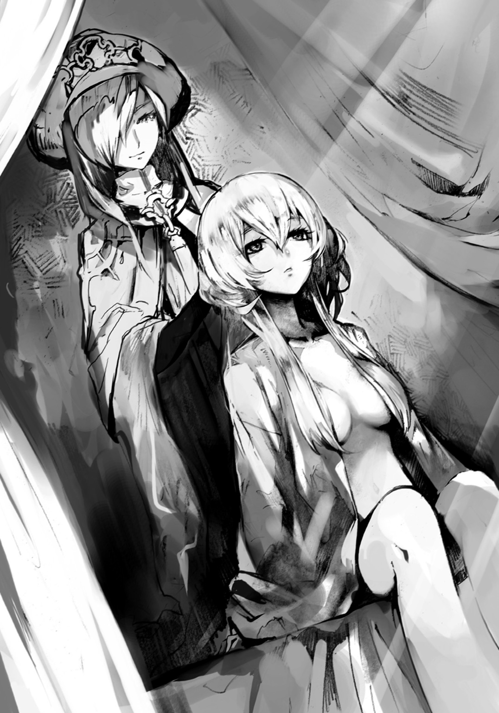
「府津羅の剣は望まれれば、烏にも伝える。戦い方が違う故、そんなに多くはないはずだがな。......しかし、曖昧な報告だ」
「はい。あまり近づくと見つかりかねないと危惧したようで、追跡者もそれほど近くには。......そうしている間に、若い烏の男と遭遇して戦闘に......。負傷したため、任務を放棄しその場を離れています。直刀を用いた相当の遣い手だったとのことです」
府津羅流は直刀を使わない。習いに来ていた烏か、その護衛か何かだろう。
「他に、警戒すべき、という点においてはもう一人。......ユニという者です。これは心理テストで高い攻撃性が認められたため、帰郷する彼女に最後の見極めを行うため、人をやったのですが......撒かれました」
「......ほぅ。撒かれるとはなかなかだ。こちらの動きを読まれていたか」
イリスがかすかに頷いたのを気配で感じる。見極めには相応の遣い手が動いたはずだ。それでも、ということは偶然ではない。あらかじめ警戒し、何らかの手を打たれていたのだろう。
「そして、再び我々の前に現れた時には......左の掌と甲に陣が」
「右利きか？ ......ということはそのユニの故郷とやらには陣に精通した者がいるな」
左手に入れるのは、実はある意味でポピュラーな手法だった。本来手の先に陣を入れると、それを隠すためにどうしても手袋等を必要とするため、不自然になり、陣士だとバレやすくなる。そのため、陣を入れる場所としては、顔の次に良くないとされるのだが......ある特定の陣を入れる場合においてだけ、推奨される手法だった。
それは、極端に体に負荷のかかる陣を入れる場合である。陣は漢字ごとに遣い手にかかる負荷に差がある。学校裏手の研究所で入れられるのは比較的使い勝手が良く、軽いものが多い。そうではない、クセの強い、または極端に重い陣はこの館の地下にて保管されていた。
そうした体に負荷が強くかかる陣――重い陣は利き手と反対の手に入れるのだ。そうすることで、どうしても無理だ、体がもたない、このままでは死ぬとなった時に切り落とせる。
「焼き入れてあったのは〈陣〉と〈封〉です。......現存していたのですね、初めて見ました」
「ほぅ？ わらわも久しく見ていないな。......だが、お前の得意とする陣とさほどの差はないと思うが。しかしまた面白いものを持ってきたものだ」
陣の中には、字は違えど似たような意味合いのものが幾つもある。多少効果の違いがあったり、陣の重さが微妙に違ったりするので、体に入れる際には陣士の頭を悩ませるものだった。
「追跡を振り切り、我々の把握していない場所で陣を入れ、そして平然と戻ってきたのです。......警戒は必要かと」
「〈封〉に〈陣〉か。それこそ、まるでわらわの意図を汲んだかのような......フフッ、面白い、注目しておこう。その者の故郷を探らせろ。発見次第使者をやる。......他には？」
「はい。首席だったシンスケと、そのパートナーのリーです。前者はともかく、この後者のリーはあまり適性が高くないために工夫を凝らしたようでして。組み合わせも実にいい」
イリスから二人の持つ陣を聞いた時、罌粟にはこのコンビの戦い方が見えるようだった。シンプルで、攻守のバランスもいい。......罌粟が求める適性も、二人共に十分だ。
優勝はここか、浜菊・白妙だろう。注目はユニ・アルクだが......かわいそうに、二人は必ずしも今回のトーナメントに特化した陣を持っているとは言えなかった。しかし......。
「アルクとユニは手元に置いておきたいな」
「見極めをクリアしたとは言えない二人です。......場合によっては他の六〇名同様に処分してしまった方がよろしいかと。烏はおろか、〝奴ら〟の手先という可能性が否定できません」
イリスは心配性だ。罌粟は小さく笑うと、彼女の長い金髪にその手を這わせた。
「罌粟様を守ることこそが、わたしの、そしてこの総本山の存在意義ですから......」
イリスは顔を赤らめながら、そんなことを口にする。
かわいい相方だと、罌粟は満足げに思った。
１
陣の力というのは、凄まじいのだと、改めて感じた。
「......信じられない。凄いな」
俺の呟きに、ユニは頷き、驚嘆の眼差しのままに次の試合が行われるドームを見やった。
一昨日の夜。対アカ・うらら戦の後、俺とユニは急ぐように会場に向かった。......その時、浜菊、または白妙かどちらかの陣の力によって、天井どころか壁も何もかもをぶち壊された廃墟を目の当たりにしたのだ。
細い鉄骨の上に幌をかけたような天井はもちろん、石組みのドーム外周の壁も、そしてあの芝生の茂った地面さえもぽっかりとクレーターになり、弾き飛ばしたであろう土くれは辺り一帯、広範囲にわたって降り注いでいた。
......その光景からわかる。奴らが使う陣はアカや俺達が使った陣とは根本的に何かが違っているのだ、と。
......とはいえ、それはそれで驚いたし、勝たなければならないとする俺達を失意のどん底に落としもしたのだが......今は、それとは違う意味で目の前の光景に驚いていた。
ドームが、当たり前のようにそこにあるのだ。一昨日から一晩と一日。つまりは三〇時間程度しか経っていないというのに、寸分違わぬ同じドームが再建されているのだ。
......強いて言えば......若干地面が低くなってる......？
俺は足下に転がっていた丸めの石を適当に放ってみる。すると自然とそれはドームの方へと転がっていった。やはり幾らか地盤が沈下しているようだ。周りに飛び散った土が大量にあることから見ても、完全に修復したというわけではないのだろう。
「これ、雨が降ったら水に沈むんじゃないのかな」
「別にいいんだよ、どうせトーナメントとやらが終わったら取り壊しちまうんだから」
ドームを見ていた俺達に、中年の男が話しかけてきた。このドームの製作者なのだという。
「元々トーナメントのためにオーダーを受けて造ったもんだ。それに当面雨は降らんと予報が出てる。......とはいえまさか一回戦で早速ぶっ壊されるとは思わなかったがな」
「これを一人で？ 陣の力で？ 凄いの......」
ユニが素直に驚いていると、中年は嬉しそうに笑った。
「建築が専門でな。これぐらいなら一晩ありゃ作れる。つっても地面に出来たクレーターを埋めて均すのは知り合いにやってもらうまで、手のつけようがなかったが」
「陣ってのは、凄いですね。俺のイメージとは少し違ってる」
「世間じゃ陣士は傍若無人に振る舞う迷惑で抑えの効かない奴......みたいに言われてるからなぁ。ある意味じゃ合ってるんだが。陣士が莫大な富を得ている理由は知ってるか？ ......そうか、それじゃ教えてやる。陣士の稼ぎ頭ってのは戦闘をする荒くれ者じゃない。陣士は戦争には参加しないってルールのせいでもあるが......本当に金になるのは、公共事業だよ」
どこぞの国から要請を受けて派遣され、そこでトンネルを掘ったり、穴を空けたり、川の氾濫を抑えたり......と、そういうものらしい。確かにそれらをやるとなると大勢の人間が危険と長時間の労働を強いられてしまう。......そんな時こそ、陣の力は絶大な効果を持つのだろう。
何でも中年は山の頂上に建つ眠り姫の城の改修にも自分は関わっているのだと自慢げに言っていたが、その価値は俺やユニにはわからなかった。
中年が楽しげに自慢話を始めたので、ユニと俺は食事に行くのでこの辺で......と話を切った。
午前の日差しを浴びつつ、俺達はあのとんかつチーズバーガーの大衆酒場へ。一度来たことのある店なので、少し余裕を持ってユニと共にとんかつチーズバーガーを注文する。
揚げたてを挟んだそれを頰張るなり、「......マズイの」とユニが暴言を吐いた。
慌てて俺は店内の周りの様子を窺うも、ユニの言葉に反応した者はいないようでホッとする。
「食事ではない、アルク。......ボクの陣が思いの外役に立たん。そしてアルクの陣に至っては発動すらしない。どうしてじゃ？」
「ユニの陣がうまく発動したとしても相手の陣を抑えるしか出来ないってのは、結局、決定打を与えられるわけじゃないってのがなぁ......」
せめて遠距離で〈封〉の陣を仕掛けられるのなら......そうでなくとも、せめて〈封〉を使いながら同時に攻撃的な陣を使えればかなり違うのだが......。
ユニ曰く、体力的にこれ以上陣を入れるのはかなりキツイらしい。
しばらく時を置いて陣が馴染み、さらに体が生命力を振り絞れるようになればまた新たな陣を入れられるが......どうあがいてもトーナメント中は無理だという。
「せめてボクが肉弾戦に強ければいいんじゃが......。クソ、あのムッチリツインテールめ。よく食べるだけあって、力が化け物並みに凄かったのじゃ」
痣が出来てたんじゃ、とユニは背中の辺りをさする。確かにユニがいくら体が小さいからとはいえ、タックルでぶっ飛ばされていたから、かなりの怪力を有していたのだろう。
「わざわざ重い特別な陣を入れて、このザマか。......困ったのぅ」
そうだな、と俺は同意しつつバーガーを齧る。相変わらず、うまい。
「俺の方は......何で発動しないんだろう？ 字の発現までは行く。けれど、発動しない」
「うむ。アルクのは特殊な陣ではない。それなのに......。何か原因があるはずじゃ」
もぐもぐとユニが不思議そうな顔でバーガーを喰らっていると、唐突に耳がピクピクっと動き、黄金色の瞳が驚いたように手元を見やった。小さな舌がちょろっと現れ、口周りについた透明な脂を舐め......そして、すぐにもう一口喰らいつく。
「......これ、おいしい！ パンとカツって合うんじゃな！」
あぁ、なるほど、そういうことか！ 喰ってすぐに「......マズイの」と話を始めたもんだから、少し焦ってたけど......単にユニの口が小さくて最初の一口じゃカツに到達していなかったのか。反応が鈍いわけだ。
「まぁ、団子には劣るけどの」
そんなことを言うも、俺はユニが無心に喰らいつく様子を見ていると、だんだん嬉しくなる。
ソラから教えられた店とはいえ、何だか得意な気分だ。
ユニが小動物のように喰らっているので、一旦話はやめ、俺は付け合わせのピクルスをつまみながら今一度店内を見渡した。今は昼前ということもあり、客はそれなりの数しかいない。だが、皆いろいろなものを食べていて、どれもうまそうだ。
お、何だ、あの鉄板に乗せられているの。ハンバーグだろうか？ いい匂いがここまで来る。
カウンター席に座っていた坊主の男と顎髭の男――卒業式で見た二人だ――が頼んだものらしく......それは店内の人間の注目を集めると共に腹の虫を刺激した。
坊主の男が「ん？」と顔を上げる。彼が見たのは出入り口。扉が開き、入店してきた客に坊主は手を掲げる。......ソラだった。
「そうだ、ユニ。先輩である他の陣士に相談してみるのはどうだろう？」
口周りにカツの衣をたっぷりとつけたユニが、ん？ と顔を上げた。
「......どうじゃろう、あんまり良くない気がするの。イリスも言っていたように、どんな陣を持っているかは切り札たり得るんじゃ」
「でも、信頼出来る人がいるんだ。それなら、大丈夫じゃないか？」
「......そんな奴がアルクにおるのか？」
「......ユニ、君は俺をどういう目で見てるんだよ。そ、そりゃいるに決まってるだろ。......一人しかいないけど」
嫌がらせを受けた犬のような顔をするユニに、俺は不満げな視線を返した。しばし続いたその対峙が苦しくなったので、俺は独断でカウンターの坊主と話していたソラへ声をかける。
ソラは「おっ！」という顔をし、カウンター席の二人と別れ、ビールとエビカツサンドを注文してから俺達のテーブルへとやってきた。
「久しぶり、ソラ。実は俺達、今悩んでいて相談が......」
ユニは半分ほどになっていたバーガーを齧りつつ「何だ......こいつか」と小さく呟き、ソラから視線を逸らした。
「......無事パートナーを組んだ、というわけか。よかったな」
えぇ、と俺は苦笑いするように微笑んだ。あの切羽詰まった状況でのやり取りを、果たして無事パートナーを組んだと言えるのかどうか少々怪しいけども......。なし崩しというのが適切だし、いまだユニがどういう奴なのかもわからないところが多い。その上、お互いの陣能力が微妙に嚙み合っていないというか何というか......。
ソラは大人びた、優しい目で俺のパートナーであるユニを見つめた。
そんな彼に、俺は自分の陣がうまく発動しないことを告げる。青白い字の発現までは行くが、そこから先の発動に達しないのだ、と。
「一応訊くけどよ、〈何を〉〈どのように〉〈どうする〉っつぅ陣の基本原理はわかっているんだよな？ ......そうか。うーん、イメージの仕方がわからなかったり、適性がやたら低いせいで発現しないっていう経験を持つ奴なら、オレを含めて何人か知っているが......発動しないってのは根本をしくじっているとしか思えねぇな。意味が成り立たない陣を重ねていたり、入れた陣では不可能な極端なイメージを浮かべている、とかな。ちなみにどんな陣を――」
「ソラ！ そうやって陣を聞き出すのは敵対の始まりじゃ。やめるのじゃ」
「怒るなよ、ユニ。......まぁ、それもそうだわな。陣士の難しいところだ。となると......そうだな、後考えられるのは、その場に指定した物質が足りない時か」
俺の顔に〝？〟マークでも浮き出ていたのか、ソラは小馬鹿にしたように笑い、喰いかけのバーガーを奪って齧りついた。
「つまり〈何を〉の部分だ。陣士が生み出せる......正確には生み出しているわけじゃなくて、操れるだけで本来その場にあるものらしいんだが、ともかく......オレ達陣士が扱っているのは実のところエネルギーだ。無から何かを作り出しているわけじゃない」
それぐらいはボクだって知っているのじゃ、と、ユニは不満げに言った。
「そのエネルギーを操りきれていない......という場合もあるが、それなら字の発現まではいかない。となれば......指定した物質が足りない可能性がある。わかりやすく言えば、指定した物質＝〈何を〉だ。たとえばオレはご存じの通り〈飛〉の陣を自分にかけて飛ぶわけだが、この場合の指定物質はオレ自身だ。〈オレを〉〈飛ばす〉。まぁ、必要に応じて補助的に〈速〉の陣を間に挟んで〈オレを〉〈速く〉〈飛ばす〉で、通常時のそれよりも楽に速く、飛ばすことが出来るわけだが......」
「あ、ちょっと待って。素朴な質問なんだけど、いいかな。......それさ、ずっと〈速〉を使った方がいいんじゃないの？」
「アルクがいくつ陣を入れたか知らねぇけど、いずれわかる。企業秘密だから正確な数字は教えねぇけど、仮に〈速〉を入れなくても、時速六〇キロに達することが出来るとしよう。だが、うぉおぉおぉって力入れてようやくだ。そこに〈速〉の陣を挟むと、よいしょって感じにすぐその速度かそれ以上に達するわけだ。......だが、陣を一つ多く使うことになる。それによって消耗が激しい」
「ボクだってそれぐらい知ってるのじゃ。個人の適性と陣の能力、そして組み合わせによって、二つの陣で踏ん張る方が楽か、三つで消耗激しくする方が楽かが変わってくるんじゃろ」
どことなく、ソラに嚙みつくように、ユニが言った。
「楽か、というよりはお得、または使い勝手がいいか、で考えた方がわかりやすいな。......このバランスは完全に個々人の経験で探っていくしかない。オレ達みたいなのは、商売柄飛行距離、速度、そして荷の重さから計算して導き出す公式みたいなもんが各々の頭に作られている。......まぁお前らで言ったら......仮に飛び道具を出せるとしよう。〈水〉〈弾〉〈撃〉とした場合、水の弾を撃つわけだが......この際イメージを強く持って放てば弾道を曲げることも出来る。......が、間に〈曲〉を挟むと消耗は激しくなるが、簡単に、大きく曲がる」
なるほど、と俺は素直にソラの言葉に感心していると、何だか視線を感じる。
ユニが苛立たしげな視線を向けていた。
「そういうのも知ってる！ じゃからイメージ力に長けたベテランの陣士ほど少ない数の陣で多彩に戦える......陣士として優秀な者は字が敵に見えないぐらい速く発現、発動させると言われておるのは、発現、発動の速さ以上に使う陣の数が減ってくるから、という理由もある！」
バカにされていると思っているのか何なのか知らないが、ユニが強い口調で述べた。すると、詳しいじゃねぇの、と、ソラは満面に笑みを浮かべてユニの頭を撫で、彼の大きな耳をくにくにと揉む。......すると、くすぐったいのか、一瞬「あっ......」と肩をすくめて声を漏らすも、ユニはすぐさま「んなぁ！」と声を上げて、その手を払っていた。
「本題からだいぶずれちまったな。......えーっと、あぁ、指定物質の話だったな。オレの陣の場合はオレ自身がそれに当たるし、水の弾を撃つっていうんなら、当然水だ。それがない、または極端に少なくてイメージしたものに達しなかったら陣は発動しない場合がある。オレ達はエネルギー保存の法則を実質的に無視出来るが、質量保存の法則までは無視出来ない。無から物質的な有は作れないんだ。だから――」
「だから！ それぐらい知って......あっ」
ユニがテーブルを叩き、そして、固まった。
三〇秒ほど経って、ユニは行動を再開する。慌ててバーガーを口に入れ、俺の手を摑んだ。
「行こう、原因がわかった、陣の練習じゃ！」
ユニに引っ張られるがまま、俺はテーブルを立つ。彼はカウンターの隅の籠に入っているマッチを一つ手に取った。
「まぁガンバレや。......折角オレを差し置いて組んだコンビなんだ、いい陣士になれ」
「え？ 差し置いてって......だって、ソラが組まないって......」
「ユニ、だったか？ ......そっちのお嬢ちゃんに言ったんだよ」
ボクは男の子じゃ！ とようやくバーガーを飲み下したユニが言って、彼は俺を店の外へと連れ出したのだった。
●
「随分とお優しいじゃねぇか。まさかソラの特別講義が拝聴出来るとは思わなんだ」
カウンターの坊主がグラスを手に笑った。顎髭の陣士と共にソラとは付き合いの長い陣士だ。
「オレも昔、先輩陣士に世話になったもんさ。適性が低すぎてヤベェ。どうしたらいいってな」
ソラはテーブルの上に残されていたバーガー付け合わせのポテトを摘んだ。
「聞いた聞いた。けどよ、それって確か金払って聞いたって言ってなかったか？」
顎髭が皮肉げに言って、ソラは苦笑した。
陣士として生きる場合、重要な要素に情報がある。敵対する陣士の陣を知るのは基本だが、それと共に陣の使い方、組み合わせ方などは極めて重要であり、その情報は高値で売買される。
何せ、陣は体に入れるために拷問のような毒の摂取と焼き印を必要とする上、一度入れるとまず外すことが出来ない。そのため、検討のために事前に特殊な陣の効果や組み合わせのアイディアは、金を払ってでも知りたいとする者は多いのだ。
「あの耳ッ狐が好みだったりするのか？」
坊主の冗談じみた声に、ソラは笑い、否定した。
そして、しばし自分自身何故あんなに親身に話してしまったのかを、考えた。
「......そうだな。オレは昔からダメ陣士だったからな。適性最低、技量なし、そんなだから金もない。理由はどうあれ、そんなオレを頼ってくれたことが思いの外嬉しかったんだと思う」
そして、最終日になっても、いまだアルクが城郭内に入っていないと知り、こうなったら自分が組むしかないと思い定めた時から......きっと、どこかで、彼を身内に感じ始めたのかもしれない。
陣士としては当たり前のコンビ。だが、故郷での仕事が出来ずに逃げ出すようにして陣士になったのに、その陣士としても完全な落ちこぼれであるソラは一度とて誰かとコンビを組んだことはない。それは、仕方ないと割り切っていたつもりだった。
だから......三カ月前、この店でアルクが組みたいと言ってくれたことに、ソラは驚いたと共に、嬉しく思った。
もしかしたら心のどこかで、ずっと自分は他の陣士を羨んでいたのかもしれない。だから最終日に総務部を訪ね、いまだアルクが申請していないのを知った時......〝仕方ないからオレが〟という、都合のいい理由を自分の中で無理矢理生み出したのかもしれない。
「まるで恋する子供のようだな。ったく、二一にもなって、何やってるんだか」
「あ？ どうした、やっぱり耳ッ狐が好きだって？」
「ちげーよ。......故郷にいる恋人に会いたくなったってだけさ」
「どこかは知らねぇけど、お前ならひとっ飛びだろう。行ってこいよ」
「......生憎と、うちの故郷は反陣士派が根強くてね。気軽に戻るわけにはいかねぇんだ、コレが」
「んじゃ連れてこいよ」
いろいろあるのさ、と、ソラは深くため息を吐き、そして、頰杖を突く。今日は強い酒を呷ろうか。そんなことを考えながら。
......ユニ達が残していった伝票に気づくのは、その五分後だった。
○
「ボクのミスじゃ、すまぬ。てっきり火はエネルギーそのもので、指定物質ではないと思っていたのじゃ」
ユニはバーを出て、城郭内に戻ると颯爽と総務部と一体化している書庫へと向かった。
絡んでくるアリアドネを華麗にかわし、古い資料を借りると、俺を引き連れ、あの対アカ・うらら戦を行った試合会場である森へとやってきていた。
「この本によれば、火というのは〝化学現象〟であり、具体的に言えば〝酸化現象〟なのじゃ。もちろん光や熱のエネルギーを発してはいるんじゃけれど、順番が逆じゃ。光や熱によって火が生まれているのでなく、燃焼によって物質がエネルギーを発して――」
「うん、ユニ落ち着いて。言葉はわかるけど、意味がわからない......」
対アカ・うらら戦の時もそうだったが、ユニは焦ると早口かつ多弁になり、周りのことが段々と見えなくなってくるようだ。
「あぁもう、つまりじゃ、アルク。ボクらのミスはてっきり〈炎〉の陣は火を生み出す力だと勘違いしていたことじゃ。でも、実際はその場にある炎を操るのがその陣の本来の力なんじゃ」
ユニの言葉を聞いて、俺は思わず指を鳴らした。
先日うららが木を引き抜きまくったせいで出来た広場のような場所にて、ユニは酒場から持ってきたマッチを擦る。それを地面に置いて距離を取った。
「アルク、やってみるといい。これで発動するはずじゃ」
なるほどな。全ての謎が解き明かされた気分だ。いくぞ、見せてやる。俺の陣の力を！
俺は左手をかざし、二つの陣を発現させる。そして、それらが砕け、手をかざしているマッチの火に向かっていき、ついに発動す――！
「......おい、アルク。本気を出すのじゃ。一瞬マッチの火が震えただけじゃぞ」
「え？ アレ？ いや、本気も何も加減がわからないから全力でやったんだけど......あれ？」
もう一度やるも、同じように火が震えただけだ。ぶっちゃけ息を吹きかけるよりも弱い......。
燃え尽きそうだったので、イライラしつつユニがもう一本マッチを擦って、火を足す。
そして、俺も今一度陣を発動させるのだが......んー、さっきより幾分マシになったかな？
「......アルク、ボクは今もの凄い徒労感と、若干の恥ずかしさに見舞われておるんじゃが......」
気が合うな、ユニ、俺もだよ。そんなことを胸の内で呟きながら、定期的にマッチを擦っていく彼を申し訳ない気持ちで見やる。
「で、でもさ、ほら、見てよ。段々マシになってきたと思わない？」
......マッチが次々に足されていき、火が大きくなっているので、少しばかり派手に揺らめいているだけなのかもしれない......。
俺は汗だくになりながらも頑張るのだが......やっぱり手品レベルのそれを超えられない。
「お、俺の能力はこんな子供の火遊びレベルなのか......」
「うーむ、そんな低レベルが全力じゃと適性審査の段階で落ちてしまう気がするがのぅ......。ん？ ......火遊び？ ......あっ！ そういうことか!?」
「え。何、どうした？」
「アルク、おぬし、これをどう思う？ 何と言う？」
ユニは地面の上で燃えている幾本ものマッチを指さした。
「燃えるマッチ。......え、違う？ えっと、火......？」
「そう！ これは、火じゃ！ アルク、おぬしの体に入れた陣は......〈炎〉なんじゃよ！」
あっ、そういうことか！ ってか、そういうことなのか!?
「本来科学的に言えばマッチの火でも炎と呼ぶ。じゃが、炎は火という漢字を二つ重ねて作られた会意文字。そこに込められたイメージはボクらが炎の漢字から連想するように、勢いよく燃え盛る火なのじゃ。じゃから......」
ユニと俺は慌てて枯れ木を集め、そしていろいろ悪戦苦闘した末、生木が多いせいで、やたらと煙の多い焚き火をおこしたのだった。そこにさらに細い枝や、倒れた木々の先で乾いていた葉っぱ類を放り込み、盛大な炎を作る。
「アルク、やってみるといい。これで発動するはずじゃ」
最初と同じ言葉でユニに促され、俺は左手を焚き火にかざす。
緊張していた。もしこれで発動しなければ、どうなるのだろう。
もし、本当は俺に適性がなく、それでうまく発動していないだけだったら......。
そんな不安の中、俺は焚き火の炎を操るイメージを浮かべた。肩に入れた陣に力が吸い取られていく感覚と共に、かざした手の先に〈炎〉と〈波〉の陣が生まれ、そして――。
２
俺達の二回戦はドームが会場だった。開始は夜とはいえ、中は電気の力で昼のように明るく、煌々としている。それもそのはずで、いつぞやの時は青々とした芝生が生えているだけだったはずのドーム内が、今や白い石の壁が無数に立ち並ぶ迷路のような有様となっていて、これが光を反射させて以前よりも明るく感じさせるのだ。
縦横三メートルの白い石板がランダムに地面から生えているように立っている。どう見ても人工物ではあるのだが、人間の手で造るにはかなりの手間を必要とする造りだ。
「フム、この石の壁......厚さは一〇センチといったところか。アルク、割れるかの？」
「学校に入る前なら。今は少し......厳しいかな。素手ではまず無理だ」
「......アルク、何が何でももう剣は持たんのか？」
ユニは何故か、そしてどこか不満げな顔をして、俺を見上げてくる。
俺はもう剣士じゃない。陣士だから......。そう告げて俺はユニの頭を撫でる。彼は擽ったそうに耳を動かし、不満げに俺の手を払った。
まだ対戦相手が来ていないらしく、俺達がドーム内に入っても監査員は上空で浮いているだけだったので、とりあえず内部を歩き回ってみた。それでわかったのだが、どうやら迷路を意図しての造りではなく、どちらかというと、上空から石板をバラバラとぶん投げて適当におっ立てた、という感じなのだと知れた。人が通れそうにない狭い場所や、傾きあった石板同士でトンネル状になっていたり......というのが至るところにある。
俺は助走をつけて跳び、一度石板の腹を蹴るようにしてその上に登る。基本乱雑に突っ立っている石板ではあるが、ドームの入り口付近と最奥にそれぞれ石板が山のように高く積み上がっていた。それを活かすのが有効か。......うーん、正直うららの〈力〉の陣が欲しくなるな。
ユニが下から俺に手を伸ばしていたので、彼を引き上げてドームの全域を見せてやる。するとやっぱり同じような感想を口にした。石板を投擲出来れば、かなり有効だろう、と。
「アルク、おぬしの陣、ここじゃ正味使いづらいかもしれんの。燃えるものが少ない」
「となると、地味に行くしかないか。......あ、ユニの陣って二人同時にかけられたりは？」
「それも無理じゃ。一人か、一部の効果を封じることしか出来ぬ。加えて実戦でやってわかったのじゃが、陣を封じると、なんというか、こう、ボクの体の中で何かが膨れ上がるような感じがあって、それを抑え込むのが大変じゃった。多分この膨れ上がる感じというか、圧迫感が相手の陣士の力で、それを抑え込めなくなれば自然とボクの陣は解けるものと思う。......伝わらぬか？ うーん......トイレを我慢している感じが近い、かも？ 辛いのはお腹とかではなく全身じゃけど。内側から爆破しそうな感じで、それで......うららに吹っ飛ばされた際に、一気にぶわぁって......」
「お漏らししちゃったってわけか」
ユニが顔を赤らめると、尻尾をピーンと真上に。そして反比例するように顔を俯かせて俺の臑をブーツのつま先で蹴ってくる。......割と痛い。
「ともかく、現状新人同士じゃからどっこいどっこいじゃと思うが、ベテラン相手では封じきれんやもしれ......アレ？ 誰じゃろう」
ユニの耳がピクピクっと動き、ドーム入り口付近へそれを向ける。
「雪駄の音が......女......？ 対戦相手はあやつらではないのか」
外見ぐらいでしか差はないと思っていたが、どうやら耳の機能については獣耳の方が優秀そうだ。俺には何も聞こえなかった。
「ん。まだ始まっていなかったか。よかった」
凜とした声を発した人物が入り口付近で、ふわりと浮き上がる。
遠目にもわかる豪奢な着物を纏った女性だった。俺は眼鏡をかけ直し、目を凝らす。
歳の頃は二十代前半......だが、十代後半にも見えるし、三十路ぐらいにも見える。年齢を感じさせない顔だ。
長い髪にかんざしを挿した彼女は、今まで出会った陣士のどれとも明らかに纏う雰囲気が違い......どこか、浮き世離れした神聖さが、あった。
監査員達が姿を認めるなり、慌てたように彼女の周りへと飛ぶ。そしてかすかに「姫様」という言葉が......。ということは、彼女は......総本山の代表にして永遠を生きる最強の陣士、眠り姫こと、罌粟......様、か......？
恐らく罌粟様と思われる女性は寄ってきた監査員を無視し、ドーム中央の上空まで来ると俺達を見下ろした。俺とユニは自然と一礼をする。
「アルクとユニ、わらわのことは気にするな。ただの見学だ」
何となく、俺達はもう一度頭を下げた。不思議と頭を下げたくなるような雰囲気がある。厳かというのとは違う、優しい感じがするのと共に尊ばなければならないような......そう、優しいお婆さんを前にしたような......うん、女性には相当失礼なたとえだな、今の。
「ほぅ、今宵はギャラリーが......我が君、眠り姫様の前で戦えるとは幸運の極みッ......！」
罌粟様に意識を向けている間に、奴らがドームに現れた。
ローブを纏った二人の男......ダンとジョーだ。
一回戦同様、上空の監査員が大音声で戦闘開始を宣言をする。
「アルク、とりあえず、石板から降り......何じゃ、あやつら。何をする気じゃ」
ドームに入ってくるなり、ダンとジョーの二人は何ら躊躇いなく傍にあった石板の山へと登りだした。一辺が三メートルの石板なので、一人が土台になり「ファイトー！」という謎のかけ声で相方を持ち上げ、先に登った方がもう一人を「イッパァーツ！」と叫んで引っ張り上げる......というのを繰り返していた。頂上を目指しているのはわかるのだけど......正直、飛び道具があれば一撃で終わりそうなぐらい油断と隙しかない......。
「アルク、おぬしの荷を貸しとくれ。......ちょいと行ってくる」
ユニは俺の腰に提げていた水筒を手に取ると、石板を降りてどこぞへと姿をくらます。一方で、ダンとジョーはついに一五メートルはあろうかという石板の山の頂上へと辿り着いた。
「アルクとユニだったかな。貴様らは幸運だ。篤と見るがいい!! これがダンと――!!」
「――ジョーの!!」
二人は纏っていたローブを投げ捨て、スパッツを穿いた裸体を現した。
「「陣の力だ！ セイッ!!」」
相変わらず鍛え上げられた筋肉を晒す二人がポーズを取る。その瞬間、二人の股間の辺りに青白い光が生まれ......いや待て、アイツらえらいトコに陣を入れたな!?
何らかの陣が発現し、砕ける。そして青白い光が男二人の周囲に散ると一斉に光の弾と化し......て、そのままだった。現れた光に一瞬身構えたものの、二人の周りを光の球体が浮遊するだけで、こっちに向かってくる気配がまったくない。
「あ、あの、えっと......ジョー。それ、どうなるんだ？」
俺は勇気を持って訊いてみると、かすかに彼が笑ったのがわかった。
「見てわからんのか!? 美しいだろう！ ......そう、俺達が!! ハッ!!」
「うん、あのな、言葉はわかるんだけど、意味がわからない......」
ポージングを変える二人ではあったが......光の玉は特にこれといって飛来する様子もなく、油を塗りたくったと思しき二人の筋肉の凹凸を見事に照らし出し続けていた。
ふぅ......。という罌粟様のため息が聞こえた。見上げれば彼女はどこか遠い目をしていた。
「......目の毒だ」
「そんなに我々のボディを欲していらっしゃるとは、幸運の極みッ!!」
「......悪い意味でだ」
※目の毒：見ると欲してしまうもの。または見ると害を与えられるもの。
何となく俺が言葉の意味を考えていると、ジョー達の足場である石板の山、その根元の辺りから炎が。おそらくユニが水筒の中にあった油を撒き、マッチで火をつけたのだ。
「ほぅ、火か。ははははっ！ わかったぞ、アルク、ユニ！ 貴様らの手はすでに見切った!!」
二人は組み体操のように、己らの肉体を絡め合い、ニコッと笑って白い歯を俺に見せる。
「この火で頂上にいる我々を焼き殺そうというのだな？ 火は上へ昇るものだからな!!」
「貧弱なボディではこの程度の戦い方しか出来んのだろう!? このジョーとダンのようなマッスルがない以上は、そうするしかないというのも理解出来るがな!! ふはっ！ ふはははははははははははははははははははははははははははははははは!! ――ギブアップだ!!」
「......え？」
「これぞ我らのボディの到達点よ!! ははははははは!! ギブアップだ!! どうした、早く火を消すがいい!! 我らを救助してみせろ！ 出来ないのか!? ん？ どうした、ホレホレ!! ははははははははははははははははははははははははははははははははははははははは!!」
ダンに続き、ジョーまでもが最高の笑顔で言った。
二人の体がうっすら汗を帯び始めているのだけれど......多分、足下がだんだんと熱くなってきたんじゃなかろうか。
俺は上空の監査員を見上げると、一人が困ったような顔をしつつ......勝負ありの声を上げる。
そうして......結局、俺達は陣を一つとして使わなかったどころか、攻撃らしい攻撃もせず、ただユニが油を撒いて着火しただけで、勝利したのだった。
「何だ、この試合は......」
呆れたような罌粟様の声に、俺は頷いた。
彼らの陣士としての人生を終わらせたかもしれないというのに......何故だろう、一回戦の時と違い、まったく罪悪感がない。まぁ、いいことだけども。
......これ、二回戦だけど、あのマッスル達はどうやって一回戦を突破したんだ......？
３
「ボクの調べじゃと、どうもダンとジョーは、不戦勝で二回戦に上がってきたようじゃ」
二回戦後、二日間も姿を消していたユニだったが、どうも情報収集に回っていたらしい。そしてそんな彼が言うには、一回戦で彼らと当たるはずだったイとベニグノの二人は、試合が始まる前に二人して食あたりか何かでぶっ倒れて病院送りとなっていたそうだ。
まぁそんなとこだろうとは思った。そうじゃなかったら、ダンとジョーは確実に一回戦敗退だろう。陣の目的が自らの体を照らすためだけとか、まったくもって意味がないもの......。来期以降にチャレンジすればよかったのに。
「まぁ、バカじゃったんじゃろ。......お？ アルク、この店とかどうじゃ？」
天気のいい昼過ぎだった。商業区の石畳の道が輝いてすら見えるそんな中に、古びた商店が一つ。雑貨屋らしい。
ユニはあまりためらいなくひび割れているガラス戸を押し開け、中に入っていった。
俺からすると、初めての店だとかなり緊張してしまい、こうはいかない。
その店にはその店の暗黙の了解というかルールがあるだろうし、こちらの期待しているものがなかった場合に買わずに出ていくのは悪いし......。だから食事処も安くて雑多な所が好きだった。誰も俺を見ていない。気にしない。だから、多少気楽なのだ。
実は三カ月も暮らしていたくせに、商業区内では両手の指で数えられるぐらいの店しか入ったことがなかったりもする。......服を揃える時と美容院が特にしんどかったなぁ。今でも店内に入ると息が詰まって変な汗が出るレベルだ。
「アルク、何してるのじゃ。早くしろ」
ユニに言われ、店内に入ってみる。ホコリっぽい店内に所狭しと本、武具、調理器具、日用品......等々のありとあらゆるものが乱雑に置かれている。その奥にあるカウンターに、商品またはゴミの一つとして置かれているような老婆がおり、細い目で俺をじっと見つめていた。
「ライターを使うのは、お嬢ちゃんじゃなくてそっちの眼鏡の子かい？」
「......男の子じゃよ、ボクは。使うのは、そう、こっち。出来れば......ん？ 何で、ライターが欲しいと......」
そう、俺達はライターを買いに来ていた。というのも、先日の対ダン・ジョー戦で、ユニが着火したわけだが、その時にマッチは焦っているとうまく火がつかなくて数本ダメにしたそうだ。それでマッチはあってもいいが、ライターも持っておこう、という話になったのだ。
老婆は何も応えず「ふーむ、そうだねぇ。アンタには、これがお似合いかな」などと口にして、こちらがオーダーを出す前にカウンターの下から小ぶりな商品を一つ取り出した。
思わず手が伸びる。銀色の、テカテカとしている細長いライターだ。機械的でありながら、口紅のような形にも見える。華奢に見えたが、持ってみると案外にしっかりした造りだとわかった。安心感に繫がる重量感と、握れば手に隠れてしまうその収まりの良さがいい。
そして、何より......お洒落である。うーん......ダメだな、俺。兄もそうだけど、田舎育ちのせいか、お洒落なアイテムを見ると、身構えると同時にすぐに欲しくなってしまう......。
「お洒落だろう。オイルライター。ダグラス、フィールドＳ。防水機能もある。元々はアメリカっつぅ国の製品だが、高価でね。一旦途切れた。その後、日本の企業が復刻させたっつぅもんで、それも日本の職人が丹精込めて造ったもんだ。......陣士にはそういうのがお似合いさね」
ユニが手を伸ばしてきたので、ダグラスを渡す。両手で転がすうちに、彼の尻尾がふさふさと左右に揺れた。犬と同じで、尻尾がこういう感じに揺れる時は機嫌がいい時だ。
彼は頷きながら俺の手へ返してくれる。
お許しも出たし、防水仕様というのもいい。俺はこれに決めた。
......そして老婆がライター一つの値段とは到底思えぬぶっ飛んだ金額を提示してきたが......支度金の大半とはいえ、手持ちはあったので、それで購った。
......アメリカで一旦途切れたのもわかるな......。
支払う際に「団子......」とユニが切なげな声を漏らしたわけだが......奴はアレか、また俺の金で団子喰う気だったのか......？
オイルと予備の石、そしてユニが使うというので安いマッチを買って、店を出た。
「......高かったけども、すんごく高かったけども......まぁ、いいんじゃないのかの。アルクのお金じゃしな」
隣を歩くユニの尻尾はゆっくりと揺れている。不満というわけではなさそうだ。
ポケットに収めていたダグラスを俺は取り出そうとするも、その手が不意に止まる。前から歩いてくる二人の姿に俺達の足も、そしてユニの尻尾の揺れも止まった。
「あら、奇遇。......え？ なに、あそこのクソボロい店で買い物？」
いまだに制服にマント姿の浜菊と、布に包まれた棒状の何かを持つ白妙だった。
俺は慌ててポケットの中でダグラスを放して、手を出した。
ユニがかすかにそれでいい、と言うかのように小さく頷く。
ライターを購った、というだけで陣を読まれる可能性がある。普通に考えて喫煙せず、現状旅に出もしない、そんな俺達が高いライターを買う意味を考えれば比較的察しやすいはずだ。
「別に、何じゃっていいじゃろ。浜菊には関係ないはずじゃ」
ユニの尻尾の毛がそれとなく逆立ちつつ、尻尾それ自体も宙に向かってピーンと伸びていく。
「まぁそうね。......アンタ達の次の相手、シンスケとリーでしょ？ 十中八九あの優等生が決勝の相手になるわよね。......まぁ誰が上ってきたって私の陣の前では無力同然だけど」
まるですでに決勝まで駒を進めたかのような浜菊の言い分だったが、一回戦で見たあの巨大な龍の影を思い出すに......あながち、自意識過剰とも言えないものがある。
「おぬし達、一回戦で何の陣を使ったのじゃ......？ あの龍のようなものは、まさか――」
ユニは出来るだけ毅然としていたいようだが、尻尾でその胸の内は浜菊にバレてしまうようだ。彼女は口元に酷薄な笑みを浮かべて、彼の尻尾を見やっていた。
「教えると思う？ バカじゃないの。言うわけないじゃない。......決勝まで来たなら遠慮なくぶちかましてあげるから、そこで見ればいい。アンタ達の陣士の資格が消えるのと同時に、ね」
「......そうさせてもらおうかの。決勝で会おう。おぬしらも負けぬようにな」
ユニがピリピリとした空気を漂わせつつ、歩きだす。俺もまたダグラスのことを悟られないよう、彼に続いた。
「応援してくれるの？ まぁ嬉しい。そっちもせいぜいイみたいな喰い意地の張った友人を持つことね。そうすれば......戦うことが出来るかも。それならそれで、あたしも嬉しいし」
浜菊の声に振り返る。彼女はすでに尻尾のように金髪のポニーテールを揺らしながら真っ直ぐ歩いていたが、白妙だけが振り返ってこっちを見ていた。
「どういう意味だ？」
「お嬢様はお前達にシンスケ及びリーときちんと戦っていただきたいと思っているのです。彼らはその能力をいまだほとんど外に出すことなく勝ち残ってしまっている。それ故に――」
「菊、余計なことは言わなくていい」
「......その布袋、薙刀か？」
「えぇ。ご存じのようにわたくし達の故郷では盛んでして。リーのものとは違いますが」
形状と揺れ方を見てそう思ったが......そういえば、リーも何か持っていたな。
「行くわよ菊。......それじゃ、また、残り物のお二人さん」
ギリッと、浜菊の言葉にユニが歯ぎしりした。
「アルク......何が何でも決勝まで行かなくてはの」
約束じゃぞ、と念を押され、俺は頷くと共に、ポケットの中でダグラスを握り締めた。
４
ダグラスをテーブルの上に置き、俺は一人、部屋で刀を振っていた。
陣を入れたことで体力は落ちに落ちているが、それがどこまで落ちているのか、それを見極めるためにはどうしてもこれが一番だった。天井の高さの関係で大きくは振れないが、それでも哀しくなるほどの体の鈍りははっきりとわかる。
一頻りの型を行うと、刃を鞘に納めた。代わりに表へ出てくるのはため息である。
己の脆弱さにしばし刀を杖にして項垂れていると、ふと、声が聞こえるのに気がついた。
隣......ユニの部屋からだ。耳を澄ましてみると......何だ、これ？
『......はぁはぁ......うっぐっ......うぅ～うぅうぅううんん......』
トレーニング......？ はっ、まさかユニの奴、アリアドネの言葉を受け入れ、ゴリッチョになるために筋トレしてるとか......？
そんなアホな考えが浮かんだ時、俺は無意識に部屋を出て、ユニの部屋をノックしていた。
反応はない。代わりにあのうなり声が聞こえる......。
ドアノブを握れば......鍵はかかっていないようだ。
勝手に入るのは我ながらマナーとしていかがなものかと思いつつも、ユニがガチでアリアドネに洗脳されている可能性を考慮すると......やむを得なかった。
何せ彼女とて陣士。もしかしたら〈操〉といった陣を持ち、ユニを操っている可能性もある。
......どうでもいいけど〝操る〟って〝操〟って書くから、むしろ性的なことから遠ざかりそうな気がしないでもない。
「入るぞ、ユニ」
「へっ!? アルっ!? あっ痛ッ――!!」
......その光景をどう表現したらいいのだろうか。
ベッドから足を投げ出すようにして横になっているユニ。それはいい。
幾らか乱れているものの、いつものように袴姿の和装を纏い、顔を赤らめ、口から八重歯を見せつつハァハァと呼気を荒らげているのだけれど......。ユニの奴、何をしていたんだ......？
「か、勝手に入ってくるでない、アルク......はぁ～......。そ、それで、何の用じゃ......」
体を起こし、やや乱れていた服装を直すユニに、俺はやや気まずい感じを覚えながらも先ほどのアリアドネの妄想を語る。即座に「何をバカな」と呆れられた。
「じゃ、じゃぁ、何してたんだよ。隣まで声が......その、なんか苦しそうな感じのが......それでちょっといろいろ考えて、慌てて......」
ユニが目を見開き、顔を一層赤らめる。
「た、ただ耳かきしてただけじゃ！ 変な想像をするでない!!」
うなぁ、っとユニは綿棒を投げてきたので、それを俺は指で挟むようにして受け止めた。
あ、ホントだ、使用感が......。
「ま、まじまじ見るな！ ......ったく、おぬしに驚いてちょっと痛かったぞ......」
くにくにと耳の根元を赤い顔で揉むユニを見ていて......ふと、思う。
......獣耳の構造って、どうなっているんだろう......？
「それは、ごめん。......ところでさ、ユニ。その、何だ。お詫びってわけじゃないけど......耳掃除、しようか......？」
は？ と、ユニが新しい綿棒を耳に差し入れようとして、固まる。
あぁそうか、頭の上についているから頭を搔くみたいに、腕を上げてするのか。
多分、そうすると腕が疲れるから寝てやっていたのかな......？
「あ、いや、べ、別に変な意味があるわけじゃなしに......その、単に、興味が......」
「耳掃除にか。......おかしな奴じゃの。いや、まぁ別にいいが......痛くするでないぞ」
俺はユニから新しい綿棒を受け取ると......何だか、鼓動が速くなってきた。
理由はまったくわからないけれど、何だろう......何か、これから目の前の少女のような少年の穴を覗くと考えると、息が乱れそうになる。
いや、別に変な意味があるわけではなく、何というか......怖いもの見たさ......？
ん？ でも、これ、どうしたらいいんだ......？
普通に膝枕をする感じにすると俺達とは位置が違うから、穴を覗けない感じがする。
「じゃ、頼むかの......アルク、念を押すが......痛くするのはなしじゃぞ。あと、左耳はもう終わったから、右耳だけでいい」
そう言って困惑する俺の前に、ユニはおずおずと立つと......顎を引き、額をこちらの胸に押しつけるようにしてくっついてくる。
あぁ！ なるほど！ 立ったままこうやってするものなのか！ 確かに身長差とかを考えるとこうして上から覗き込むようにするのが一番良さそうだ。座らせて後ろからやる方法もあるんだろうが、そうすると耳の形状から覗き込めなさそうだし......なるほど、勉強になる。
俺はカルチャーショックを覚えつつ、ドキドキとした気分でユニの穴を覗く――。
「へぇ......こうなってるんだ」
覗き込んだユニの耳は淡いピンク色。普通のそれよりも穴は大きめで全体的に柔らかそうだ。
また、構造も人間のように真っ直ぐなシンプルな穴というよりは獣のそれに近いようで、ゴミが入らないようにやんわりうねりつつも、穴が途中でＬ字状に曲がっていた。
かすかに、奥の方に耳垢らしきものがこびりついているのが見えるが......基本、綺麗な耳だった。垂れ耳の犬のような嫌な匂いもない。
「まっ......まじまじ見るな！」
俺は緊張しているのを悟らせないように静かに頷き、そっと、彼の耳に綿棒を差し入れる。
多分俺達のよりもデリケートな、ユニの穴。俺は出来る限り痛くならないよう、力を加減しつつ、ピンク色の、全体が粘膜のようなそこに優しく綿棒を這わせる。
「はぁっ......んっ、あっ......うぅうぅ～......」
綿棒がピンクの肉壁に触れる度に、ユニが呻く。痛いというわけではなさそうだが、体がかすかに動くので、ちょっと怖いものがある。
力が抜けるのか、震えるようなユニの足。下がったまま不安げに小刻みに、かつ、不規則に振られる尻尾、荒いユニの呼吸......。
......何だろう、何か、夢中になるな。昔から細かい作業が好きだったせいかもしれない。
道場の壁や床の隙間の汚れまで延々と掃除している気分に似て......何だか、ハマりそうだ。
「はぅ......深っ!? ふ、深くないか、アルク......んっ！」
「痛い？ ......違う？ なら......待って。そこに、大きいのがあるから」
丁度耳の穴が曲がっている角の部分に、大物が見えていた。そこにアタックしようとすると、ユニが「はぁっ！」と大きく息を吐き、体が震え、力が抜けるようだ。まるで尿意を堪えるように、ユニは内股になって、さらに落ち着きをなくす。
「ユニ、危ないから......その、もうちょっと落ち着いて」
「む、無茶言うな。やっぱり、その、自分でやるのとは違って......くぅ～っ。な、なら......」
ユニが俺の背に腕を回し、顔を押しつけるようにして抱きついてくる。そうすると足から力が抜けてもそれほど大きく動きはしないようだ。
ユニの荒い吐息を胸に感じながら、俺は再度、ユニの穴の奥に眠る大物にアタックする。
「よし、もう少しだ。あとちょっとで......全部、取れる」
「アルク、も、もう......もたん。ダメじゃ、腰が抜けぁ......はぁ......あっ、んっ、んぅっ!!」
ピンク色の穴の中の攻防。綿棒が壁にこびりつく耳垢を突き、こすり、絡め......そして、ついに......取った。
一度引き抜いた綿棒を反対にし、最後の仕上げに入る。
柔らかなその一体を優しく撫で上げ、小さな汚れまでも全てを取り除く。
妙な達成感があり、何だか掃除している俺の方まですっきりとして、気分爽快だ。
「よし、終わりっ。綺麗になった」
ユニはそれでも離れない。まだ力を入れたまま、俺に抱きついていた。
ユニ？ ともう一度問いかけてみれば......ようやく、彼は夢うつつの表情で俺を見上げ、ハッとしたようにその朦朧とした瞳が意識を取り戻す。
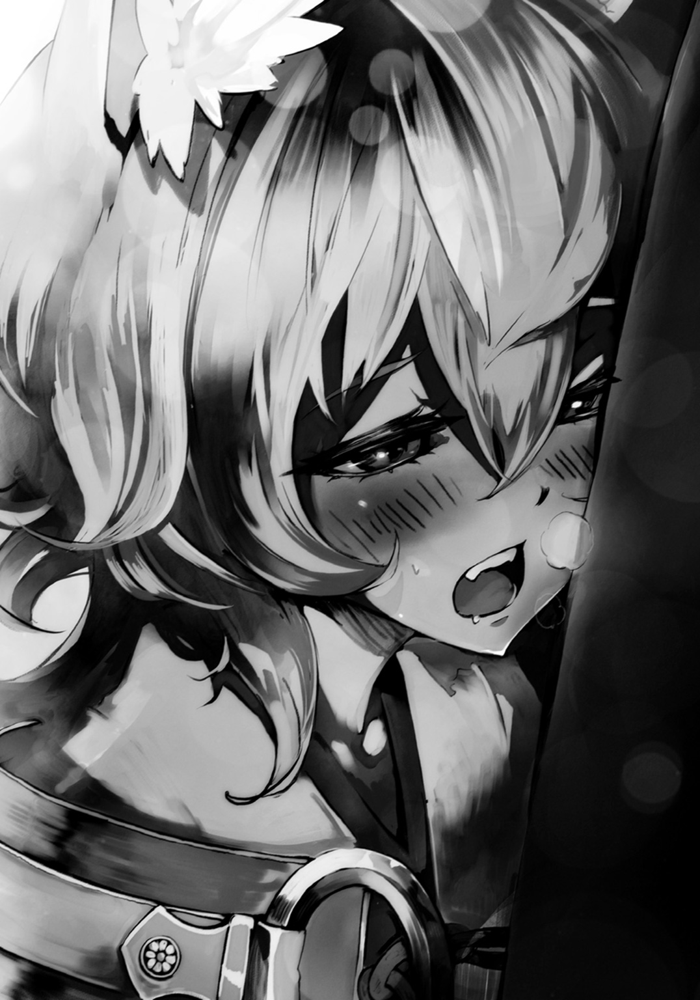
「あ、あぁ、すま......ぬ......ぬぁ!?」
ユニが離れるも、俺の胸と彼の口とに唾液の橋が......。ユニが慌ててそれを手で払った。
「す、すまぬ......。後は自分でやるから、もういい」
ユニは俺の手から綿棒を取るとゴミ箱に放り込み、棚から小瓶を取り出した。耳掃除の仕上げとしてのオイルらしい。
まぁどうせだし、最後まで......と、それもこちらでやると告げてみる。ユニは赤い顔のまま......しばらく躊躇った後、コクンと頷いた。
爽やかな匂いのするオイルを少量手にすると、それを両手につけてベッドに座ったユニの背後に回り、耳の内外、そして全体をゆっくりとマッサージするように揉んでいく。綿棒の時と違って、今度はそれほど激しく反応することなく、彼はただただ気持ち良さそうにしていた。
「......姉さん以外の人にやってもらったのは初めてじゃ。上手じゃな、アルク」
「俺も人にやったのは初めてだよ」
何だかよくわからない時間を過ごした俺達は、しばらく無言のまま、そうしていた。
ユニの顔は、ずっと、赤いままだった。
５
「ねぇねぇ、ユニちゃんユニちゃん......面白い話があるんよぉ」
どこかしらデジャヴを覚える展開だった。俺とユニが商業区の蕎麦屋で夕餉を手繰っていると、またアカとうららがやってきて唐突にそんなことを言い始めた。とはいえ、前回と違ってアカは初めから俺達のテーブルの椅子に座り、うららもその横に座る。
「もう敵ではないから同席はいいが......また伝票置いていったら怒るぞ。本気じゃぞ、ボクは」
「覚えておきます。アカさん、注文取っちゃいましょう。......カレー南蛮と鍋焼きうどん、ざるをとりあえず八枚でいいですか？ あといなりもつけましょう」
「......う、うららちゃん、そろそろダイエットせんとぉ......」
「先日の疲労がまだ癒えていないので。アカさんもそうでしょう。必要なカロリーです」
そうなのか？ と、俺が尋ねると、アカは「てへへ」と苦笑して頭を搔いた。
どうもあの〈速〉や、うららの〈力〉の陣を使うと体に相当な負担がくるようだ。陣によってあり得ない力を生み出すことは出来ても、体が耐えられない......そういうことらしい。
「そんなんでなぁ、どのみちうちらアルク君達に勝ってても、その後は戦えんかったと思うんよ。だから恨みも何もあらんとよ。怪我も起きたら治っとったし」
「でも、お前達、もう陣士には......」
思わず出た俺の言葉に、アカは苦笑し、うららは視線を外した。
「大丈夫とよ。まだ入れられるんよ、きっと。時間をかければ......って、あ、それと話は違うんよ！ んもぅ、アルク君はお喋り上手やんねぇ！」
......今、生まれて初めてそんなことを言われた気がする......。
実はなぁ、とアカはらしくもない、いやらしげな笑みを浮かべてユニを見る。
「ユニちゃん達の次の相手、シンスケ君とリー君でえぇんよね？ ......うん。実はなぁ、シンスケ君が一昨日うちらんとこ来てな、ユニちゃん達の陣のことを訊いてきたんよ」
なに!? と、ユニは声を上げ、キツネうどんの箸を止めた。
「アカ、お前まさか言ったのか!? ボク達の陣――!?」
ニヤリ、とアカは下卑た笑みを深くした。
「そんなんせんとよぉ～。ユニちゃん、友達やもんねぇ～。......尻尾モフらせてくれる友達やもん、売るようなことせんとよ～」
......あぁ、相変わらず、アカの奴、邪だなぁ。
ユニも事態を察したのか、あからさまに嫌そうな顔をした。
尻尾をモフらせなければ、どんな陣か言っちゃうぞ、とアカは遠回しに言ってきたのだ。
俺達の陣のことを知っているのは、そう多くない。監査員を除けば、アカとうららだけである。漏れるとしたら、まずそこだろう。
「......好きにするがいいのじゃ、ったく」
ユニが言い捨てると、アカはすぐさまユニの後ろに回り、椅子から垂れている尻尾に顔を突っ込む。「ふぁ～ふあぁ～」とわけのわからない声を上げていた。
「......アルク、すでに三回戦は始まっていると見た方がいいかもしれんの」
「だな。......シンスケの座学の成績はぶっちぎりだ。事前に調べてくるぐらいのことはするだろうと読むべきだった。優等生が必ずしも狡猾でないとする理由はない」
逆に一、二回戦共に相手が良かったのだ。アカ達は卑怯なことをせずに、真っ正面からぶつかってきた。ダンとジョーに関して言えば、見てくれは最悪だが、ある意味で実直な奴らだ。
......もし初陣が、仕掛ける気満々のシンスケ達や、龍を生成してみせた浜菊達だったりしようものなら......今頃俺達の陣士になる道は塞がっていたことだろう。
「リーも成績は良かったのじゃ。手を上げたりして発言したりはせんかったが、テストでは常にクラストップを浜菊と競っておった。目立たないが、やることはしっかりとやってくるタイプじゃから......」
「ふあぁ～、絶対ユニちゃん達の陣のことは言わんとよぉ～、秘密とよぉ～、ふぁ～友達やもんねぇ～ふぁ～モフ友やもんねぇ～いい匂いぃ～」
気がつくとアカは店の床だというのに、仰向けに寝そべり、思う存分尻尾をモフっていた。
ユニはそれにイラッときたのか、言葉を切ってバシバシと尻尾を動かしてアカの顔を叩く。
が、それはそれでアカは「あははは痛いとよぉ～痛いんよぉ～あはははは！」と喜んでいた。
......アカは邪なのではなく、単に変態なのかもしれない。
しかしながら、部外者がいるせいもあってか、作戦会議という雰囲気ではなくなってしまっていた。ユニは視線こそテーブルの上にあるが、意識は尻尾でアカを叩くことに集中して――。
......ふと、嫌な感じがした。誰かが自分を見ている、それも何らかの意思を持って。
自然と手が腰に向かうが......当然そこに刀などない。俺は口の中で唇を軽く嚙み締め、手は代わりにジャケットのポケットにあるダグラスを握り締める。
「やぁやぁやぁ、これは奇遇ではないか。商業区で級友達と出会うなんて」
シンスケだった。彼は浜菊同様制服を着て、両腕を広げて近づいてきた。最高の笑顔で。
俺は、その笑顔を知っている。......ずっと故郷で見せられ続けた笑顔だ。作った笑顔というのならまだいい。その仮面の下で、こちらを見下し、バカにしている、そんな笑顔だ。
かつて、幾度となく自分がそう思い込んでいるだけだと、相手を信じようとした。けれどダメだった。信じて近づけば、その度に裏切られてきた。
......だから、わかる。こいつは何かを狙ってここに来たのだ。
コンコン、とテーブルの下でユニが俺の靴をつま先で叩く。隣を見やればユニもまた、その黄金色の瞳に警戒を纏わせていた。わかっている、というように同じようにしてやり返した。
「この席、よろしいかな？ ......いやぁ、奇遇だな。あぁアカ君とうらら君も。......そこの店員、注文、いいかな？」
「何の用じゃ、シンスケ。ボクらと飯を喰いに来たのか」
「偶然さ。しかし、それも悪くない。次の対戦相手と健闘を祈って食事......いや、祝杯を上げるというのも乙なものではないか。酒は......無理そうな者もいるか。では、グラスを六つとジンジャエールをピッチャーで頼む。食事は後ほどに」
何を綺麗事を言って......とユニが言い募ろうとするのを、俺は、やめとけ、とテーブルの下で伝える。すると苛立ちが口から尻尾へ向かったようで、バシバシバシッと正座したアカの頰を往復ビンタのように左右にひっぱたいていた。アカはそれでも変わらずラリったように笑っていて......ちょっと怖い光景である......。
「おぉ、こっちだリー！ 見ろ、アルク君達と偶然出くわしてね。健闘を称えての祝杯を挙げようと思っているんだ、君も飲むだろう」
瘦身眼鏡の男は入店するなり、真っ直ぐにシンスケの隣に座った。
そいつは俺だけを眼鏡ごしの細い目で見据えていた。
こいつの目は、陣士の目ではない、そう思う。完全に武芸者のそれである。
鍛えてきた自らの腕のみを恃み、そうであるが故にまた自信がある。
たまに実家に現れていた道場破りなどの目が、まさにこれだった。
ユニを始めとした若い陣士達もいずれはこうなっていくのかもしれないが、少なくとも陣を入れて数カ月程度の者がする目ではない。
店員が蕎麦屋に不似合いなピッチャーに入ったジンジャエールとグラスを六個持ってくる。そして、うららが頼んだ蕎麦やらカレー南蛮やらもほぼ同時に届けられた。
「おっと......？ こんなセット頼んでないはずだが。あ、ユニ君達の食事かな。ははーん、二人前か三人前をアルク君が食べる気だな？ それとも意外にもユニ君が大食漢だったりするのかい？ なぁに、横取りする気はない。僕とリーも後で頼むさ。では、まずは乾杯しよう」
注文した当のうららはムスッとしたまま、黙っていた。
シンスケがグラスにジンジャエールを注ぐと、さすがのアカも名残惜しそうにしつつ、ユニの隣の席に着く。......が、その手はやっぱりユニの尻尾の先を摘んでいた。
これから戦う者同士、健闘を祈り......乾杯！ そんな浮ついたシンスケの言葉と共に、グラスは甲高い音を立てる。全員がグラスを口にする。ごく普通のジンジャエールだ。
「ん、うまい。......あぁ、すまん僕らのことは気にせずに先に食べてくれたまえ。......店員！ 注文を頼みたい！」
そう言われても、俺達のじゃない以上、喰うわけにはいかんのだよな......。
本来の注文者であるうららは、カレー南蛮とざるそば八枚を引き寄せると、左手に丼を持ち、右手の箸でざるそばをひと摑みで......え!? マジか、コイツ!?
一度にざる蕎麦全部摑み上げて、カレー南蛮を付け汁にして一口で!? 化け物か!?
さすがの状況に俺はもちろん、ユニ、シンスケ、リーまでもが目を見開いて啞然とした。
「......はは......うららちゃんはいつも通り、信じられん食べ方するとね」
アカがようやくユニの尻尾から手を放し、鍋焼きうどんを手に取った。
「あ、アカさん、それ、こっちに渡してください」
「え？ うちもお腹減ったとよ。足りんかったら、また注文を――」
「いえ......もう、それアカさんが食べられるものじゃなくなっているはずです」
その瞬間ユニの尻尾の毛が逆立った。彼の黄金の瞳が見開かれ、口元に薄く笑みが浮かぶ。
「......お前達、盛ったな？」
リーは入店から変わらずに俺を見据えて表情を消したまま。シンスケもまた笑顔のまま「何だい？」と口にした。
仮面のような笑みだからこそ、うららの驚異の食事風景を見ても、すぐに取り繕えるのだ。
「よくよく考えると、初めからグラスは六個じゃった。シンスケ、お前、リーが来るのがわかっておったな」
「何を言っているのかな。陣士はコンビで行動するのが基本だ。僕がこの店に入ったのを――」
「待って待って、待ってほしいとよ！ ......どういうこと？」
わー、という感じにアカがシンスケとユニの視線の間に手を振りながら差し込んだ。その隙に、うららが鍋焼きうどんを引き寄せ、ずずッと喰らう。
「毒です。それもかなり強いヤツを、出汁にこんもりとぶち込みやがってます」
――まぁせいぜいイみたいな喰い意地の張った友人を持つことね。
浜菊の言葉が頭に蘇る。そして、ダンとジョーが勝ち残った理由もまた。ベニグノ達はひょっとして、シンスケ達の対戦相手が喰うはずだったものを誤って口にしたのではないか。そして、それを浜菊はすでに知って......いや、不自然な勝敗の理由を調べたのだろう。
シンスケがテーブルの上で手を組むと、先ほどまでの仮面の笑顔を捨てて、不敵に微笑む。
「うらら君、君がどれだけデブへの願望を抱いているか知らないが、そのぐらいにしておきたまえ。お察しの通り、お手製の毒を入れた。三口も喰えば致死量だ。さっさと吐き出すといい」
シンスケが囁くように言ったのが合図であったかのように、店内の客数人が倒れ、嘔吐した。
店員や他の客が慌て始め、店は騒然とする。そして、誰もが目の前の状況に驚く間に、さらにまた人が倒れ、止めどなく騒ぎが大きくなっていく。
シンスケがチラリとリーを見やれば、彼は表情を作ることなく「どれを喰うかわからなかった。出汁とゆで汁、全部に入れた」と平然と口にした。
大騒ぎの店内。その中で、俺達のテーブルだけが不自然なまでに、静かに、そして、抜刀の潮時を待つかのような緊張感を漂わせていた。
俺はポケットの中でダグラスを握り締め、ユニは尻尾の毛を一本残らず逆立て、アカは周りの様子に顔を青くし、シンスケは笑い、リーは変わらず......そんな中にあって、最初に動いたのはうららだ。
彼女は次のざる蕎麦へ手を伸ばす。さすがのそれには、シンスケも吹き出す。
「おいおいどうした、うらら君。死ぬのならせめて腹一杯で死にたいのか？ デブの根性ここにありだな。ゆで汁だけでも十分な効果だぞ」
「お生憎です。死ぬつもりはありません。わたしが誰よりも強いのは腕でも頭でもありません。......お腹です」
うららが平然と食事をしていく中、シンスケが苦笑して席を立つ。
「ジンジャエールに入れるべきだったかな。ただ、さすがにそれで勘づかれて僕に先に飲めと言われるんじゃないかと怖くてね。臆病は良くないものだ。僕はまた一つ学んだぞ」
「......シンスケ。このまま逃げられると思っておるのか？」
ユニもまた、席を立つ。意識しているのかどうか知らないが、彼の左手、そこに巻かれた包帯の下がわずかに光りだす。アカもまた困惑しながら席を立ち、腰に帯びていた折りたたみ式スコップを手に取り、伸ばした。
「やめておきたまえ。いろいろ調べてみたが、商業区内で個人が他者に作用する、いわゆる攻撃性のある陣を使用することは糾弾される行いらしい。商業区自警団が動く程度ならいいが、総本山が動けばお互い面倒だろう」
「なら、陣を使わなければいい。......そういうことか」
俺もまた、ゆっくりと席を立った。リーもまた、席を立つ。
恐らくシンスケの体術の実力はそれほどでもない。せいぜいが一般人に毛が生えた程度。
......警戒すべきはリーの方だ。
「だから、何をしようというのだね。......正義の味方ぶるのか？ これは陣士の戦いなんだぞ、アルク君。イリス様はおっしゃった。卑怯を誇り、秘匿を武器とし、詭道を常とする。それが陣士である。使えるものは全て使い、考えられる最大限の工夫でもって、敵を倒せ......とな。復習が足りないようだな」
「だからといって、他の人達までを巻き込むのか！」
「ははははは！ それがどうした。大したことじゃない。城郭内に入ってしまえば、ここの自警団員は手出し出来ないそうだ。何よりトーナメント期間中であり、その間に起こると想定されていた問題の責任はルールを制定した議会、及び我らが君である罌粟様こそが負うべきだ。我々は定められたルールに則り、正々堂々勝負をしているに過ぎない。僕に文句を言いたいのなら、先に罌粟様のところへ行くといい。......まったく、これだから自分から物事を調べ、学ぼうとしない出来損ないは――」
ユニから殺気が溢れた。彼がテーブルをひっくり返し、その左手の発光を強くする。
まずい、ユニの陣が発現し――なかった。
ガンッと、ユニの頭に椅子が叩きつけられ、吹っ飛ばされていた。
椅子で殴ったのは、うららだ。
「食べ物を粗末にするのは最低です。ユニさん、私の夕餉どうする気ですか。......そして、シンスケさんとリーさん、あなた方も最低です。嫌いです。可能なら殴りたいところです」
「ほぅ？ 殴ればいいではないか？」
「お二人がどんな陣を持っているか知りませんが、少なくともリーさんからは即座に反撃が来そうなので......嫌です」
うららもどうやらリーが纏っている武芸者としての雰囲気に勘づいていたようだ。
リーもうららも互いに顔に表情が乏しいせいで、心情を読ませない。
「ふむ。......ということは、躊躇いなく殴りつけたユニ君は攻撃的な陣を有していない、というわけかな。なるほど、勉強になる」
シンスケの言葉に、俺も倒れたユニも鳥肌を立たせ、うららは目を見開く。
しまった、と全員の顔に書かれていた。
「ははははっ、これだからバカは！ カマをかけただけだというのに......おっと失礼。級友をバカ呼ばわりするのは良くないな。......うむ、安心したまえ。うらら君が漏らした情報程度で勝敗は変わらんさ。気に病むな。......ではそろそろ我々は行くとしよう」
次は試合会場で。そう言い残し、シンスケは騒乱状態の店を後にした。
申し訳なさそうに項垂れるうららの肩に一度手を置いてから、俺は倒れたユニにたかっていたアカを払い、彼を抱き起こした。アルク、と小さい唇が動く。
「浜菊を相手にする前に、まず奴らだ。......試合で返そう、ユニ。徹底的に」
店内で嗚咽と呻き、そしてパニックのような店員達の声が交錯する中......ユニは確かな目で、しっかりと頷いたのだった。
６
「ボクのストレスはすでに限界ギリギリじゃぞ。......早く来い、シンスケ、リー」
ユニは左手を拳にして、右掌を打った。そして鼻で大きく息を吸い、顔を上げると屋内試合会場の天井へ向かって言葉を吐く。
何故こうもユニが殺気立っているのかといえば、あの食事処の一件に対する義憤、反発、そして妙に勝ちに拘る彼の性格......等々いろいろな理由があるにせよ、一番の原因はうららとアカだろう。
うららはあれ以降、情報を漏らした責任を感じて俺達と二日間行動を共にし、毒味役を買って出たのだが......まぁ、そうすると半分ぐらい持っていかれるという......ね。四つ刺さった団子があっても、二つを持っていくのだから、ユニからしたらたまらないだろう。
その上うららにくっついてきたアカがユニに常時たかっていたのだ。
そのせいで、このやる気である。追い払うことも出来たが、うららの毒味は正味ありがたがったし、もし力ずくで仕掛けてきたのならアカとうららは俺達と共に共闘するとの約束をしてくれたので......そのままにしておいた方がいい、という判断があった。
その結果......ユニの全てのストレスはシンスケ達に向けられることとなった。
実際、今朝方に総務部から今宵ドームにて三回戦開催の報告を受け、すぐさまアカがドームの入り口を監視してくれていたのにはかなり助かった。
そして、開催時間より三時間前には監査員がドームの扉を開けた旨の連絡を受け、俺達はシンスケ達が何かを仕込む前に準備をすることが出来たのだ。
空中に浮いている四人の監査員がドーム入り口へと顔を向けた。
俺はユニの頭を耳ごと少々乱暴に撫でる。彼もまた俺のケツを引っぱたいた。
陣士になるために、そしてこの数日間のストレスをぶつけるために、俺の行きつけの蕎麦屋を休業に追い込んだ恨みを込めた戦いが......始まる。
「アルクとユニ及びシンスケとリー、互いに試合会場内に進入を確認。これより三回戦第一試合、屋内の部、開催とする。制限時間なし。どちらかがギブアップするか、これ以上の戦いは無理だと監査員が判断するまで継続される。存分にやるべし」
ユニは迷路の中に潜み、俺は即座に石板の上へと飛び上がった。手にはダグラス。
「残念だな、アルク君。せめて森の方の会場であれば君達にも勝つ可能性があっただろうに」
俺と同じように、離れた場所でシンスケは石板の上に平然と立っていた。
こうやって対峙すると、わかる。何故陣士が己の陣を隠そうとするのか。
頭では何となく理解出来ていたのだが、対峙して初めてわかることもある。
武芸者は己の技を鍛え上げるが故に、凄みを持つ。体の節々から消しようのない洗練が滲む。それ故にどの程度の相手なのかは対峙すればわかるものだ。それは人に限らず、獣や鵺でも変わらない。力を有するが故の所作、そして気配になるのだ。だが、陣士にはそれがない。体を鍛えて至る強さとは別のものである以上、外見からは陣の力が一切読めない。
だから、仕掛けるのに相当な勇気......いや、覚悟を必要とする。相手が子供であれ女であれ、どれだけ弱そうに見えても......内に何を秘めているのか、まったくわからないのだ。
俺は肩で大きく息をし、面倒な考えを消した。
わからないのなら、思い切る他にない。初っぱなから全力で当たってみよう。
俺はポケットに入れていた掌に収まるぐらいの瓶を取り出す。コルクで蓋をしてあるものの、そこからは油の染みた紐が一本顔を覗かせており、そこにダグラスの火を近づける。
「ほぅ？ 陣を使わずに、そういったもので勝負しようというのかな？」
これが俺の陣さ。俺はそう胸の内で呟くと火炎瓶を......ん？
――バィン。
かすかに......ほんのかすかに、何かが聞こえた。
振動を伴うその音を、俺は知っていた。――弓音だ。
入り口付近から弧を描いて、矢が来る。俺は少しばかり離れた石板に飛び移るのだが......。
「なに!? 読まれ――!?」
まるで俺が逃げる先がわかっていたかのように、上空から飛び来た矢は俺に向かってくる。一旦着火を諦め、体を反らして矢をかわし――損ねた。
曲がった!? 思わず声が出る。かわした。そう思った。だが、その直後に、矢は急激に曲がり、俺の左肩に突き刺さったのだ。
あまりのことに、そして直撃の衝撃に俺は石板の上から地面へと背中から落ちる。
慌てて引き抜こうとするも、狩猟用の〝返し〟の付いた矢で、肉に引っかかる。思いの外肉を抉る造りだったので、ツールナイフを取り出し、左肩の肉をわずかに斬り裂いて矢を抜いた。
「ははははははっ、どうした次々行くぞ！」
シンスケの声ではあったが、矢を放っているのはまず間違いなくリーだ。
彼が持っていた布袋の中身は弦を張っていない弓か。武芸者の気配もそれで納得がいく。
......となると、シンスケは囮か？
上空より矢が降り注ぐ。俺は傷口を押さえながら石板の迷路を走った。
毒が塗られているかとも思ったが、とりあえずは大丈夫そうだ。口にした毒から、うららがそれに対応する解毒剤を用意してくれていたが、使わずに済みそうである。
......クソ！ また一本喰らった。だが、今回は腿をかすめただけだ。
ギリギリでかわそうとすると、やられる。かなり余裕を持たないとマズイ。
俺は石板の迷路を走り、事前に隠しておいた鞄から、先ほど同様の小さい瓶を取り出すと、そこから伸びていた紐に着火。
それを握り締めつつ、矢が飛び来る方角を見やった。
矢が青白い光をかすかに有しているので、軌跡がわかりやすい。
......いた、リーだ。奴は、入り口付近の石板の山の陰に隠れるようにしつつ、矢を放っていた。かなり距離はあったものの、動く気配がないので、俺は今一度石板の上に飛び上がり、石板の山に火炎瓶を投げつけた。
中にはたっぷりと油が入っている。石板に当たって割れれば、ダンとジョーの二の舞になるはずだった......が......。
「甘いぞ、アルク君!! その程度か!!」
シンスケがいつの間にか山の前に移動しており、俺が投げつけた瓶に手をかざす。
陣、発現。そしてそこからの発動が異様に速い。瞬時に陣が重なって現れ、瞬時に砕ける。
瓶は空中で割れ、何もない空間で炎を上げながら、地へと落ちていった。
「シンスケ、お前の陣は......〈気〉と〈壁〉か」
「ほぅ、アルク君は動体視力がいいようだ！ ようやく君のいいところを見つけたぞ！」
ほざけ。俺は再び鞄から火をつけた瓶を投げつけるのだが......全て防がれた。そして、別の方向からも瓶が投げつけられる。それはユニからだ。だが、彼の投擲した火炎瓶でさえ、シンスケは〈気〉の〈壁〉で防ぐ。
気、つまりは空気を圧縮するか固定するかして壁としているのだろうが......鉄壁だった。
「ははははは！ 陣というのは、使えば使うほど体に馴染むのだ！ 僕のように卒業式の翌日には陣を入れ、日々徹底した訓練を行い続ければそんな火炎瓶の投擲など何ほどでもない！」
まめなシンスケめ。発現と発動が異様に速い上、相当に巨大な壁を形成出来るらしく......ユニと同時に投げ込んだとしても瓶がシンスケの守りを突破出来ない。
そうしている間にも俺へと矢が降り注ぐ。リーとしては俺を先に倒してしまいたいようだ。
おそらくユニが補助的な陣しか持っていないとバレたせいで、明確に俺を倒すという方針が採られているのだ。
「アルク、あの壁、厄介じゃな」
ユニが俺のもとへとやってこようとするが、合流するのを防ぐようにまたも矢が降り注いだ。
シンスケの陣は〈気〉と〈壁〉だと俺から告げると、リーの方は、きっと〈矢〉、そして〈曲〉か〈弧〉のどちらかだと返ってくる。
そうか、矢に陣の力を纏わせているわけか。......なるほど、考えてみればわかりやすい。
恐らく矢を飛ばすのは自分の力、そしてその飛ぶ先をわずかに陣の力でコントロールしているだけ。何となくだが、かなり軽い陣なのだろうという気がする。だからこんなに連射もしてこられるんじゃないだろうか。
陣の作用はほんのわずかだが、その効果はかなりのものだ。
......こういう使い方もあるのか、陣というのは。
――早く、良き陣を扱えるようになるといい。
イリスが、卒業式の際に残した言葉が俺の頭に蘇る。てっきり凄まじいパワーを持つ陣を使えるようになれ、という意味かと思ったけれど......良き陣とは、効率の良さを意味するのではないのだろうか。つまりは、このリーの陣のような、低コストで、高効果、そして弓矢が必要だという条件こそあれ、その汎用性はかなりのものになるはずだ。実際俺の陣は練習した限り、戦闘に使えるレベルで運用するとあっという間にヘトヘトになる。
「矢が切れるのを待つのは......うわっと！」
矢がユニの耳をかすめた。ユニは石板に体を押しつけ、いつもは天を向いている二つの耳をペタンと頭に張りつけるようにして畳む。......何気に便利だな、アイツの耳。
初めてリーを意識した時、奴が大きな箱を背負っているのを俺は思い出していた。あれが矢筒だとすればそれだけでも相当量だし、試合ならばあれ以上を持ち込んでいるかもしれない。矢が切れるのはあまり期待出来ないだろう。
そんなことを考えた途端、矢のラッシュは止まり、不意に静けさが会場を支配した。矢が切れたと思わせたいのか、それとも違う策に出ようというのか。
辛く長い持久戦、一方的なハンティング、俺達の体力と矢の本数、どちらが先に切れるかのチキンレース......そんな言葉が頭に浮かぶ。総合的に見て、俺達が劣勢なのは明らかだった。
「ははははっ！ どうだい、力の差は歴然だろう!? なぁに、負けて陣士になれなくともユニ君はその女のような姿を活かして男娼なりなんなりで口に糊出来るだろうし、アルク君、いや、府津羅君もまた猿のように鉄の棒を振り回していればいいじゃないか！ 何ら躊躇うことなくギブアップをするといい!!」
シンスケが高らかに声を上げる。だが、その声のトーンが急激に落ち、快活だった声が......粘り着くように、湿る。
「......とはいえ、僕らの陣を見た陣士殺しの一派など......早々に処分してやるがね」
陣士の能力が知られることは致命的だ。知った人間を処理するのは当然といえるのかもしれない。それが陣士殺しと知られた府津羅の名を持つ相手ならばなおのことだろう。
「俺は......」
府津羅じゃない、アルクだ。そう言いたかった。
......けれど、その言葉は喉に張りつき、口から出ていかない。
どこかで俺はまだ府津羅だった過去を捨て切れないでいるのだろうか。どうしても頭の片隅に兄の存在がちらつく......どうして、俺は......。
悔しくて、思わず俯き、瞼を閉じる。
暗闇の中に浮かぶのは、いつものように......兄の姿だった。
けれど......暗闇の中で聞こえるのは兄の声じゃない。
マドカの声がする。あの向かい合った時の、あの言葉。
......忘れられない、耳と胸に焼きついた彼女の声、彼女の言葉......。
それが蘇った時、兄しか見えなかった暗闇の中に彼女の姿、その澄み切った瞳さえも、蘇る。
「あぁ......くそっ、なんでだよ......」
右手が疼く。何もない右手を震えるほどに硬く握り絞める。
もう府津羅じゃない、そうシンスケに言いたいのに、どうして今、右手は......俺は、刀を欲してしまっているのだろう。
府津羅の象徴たる刀など......そう思う。
けれど、刀を握りたいとする相反する気持ちが胸に宿る。この気持ちはなんだ......？
瞼の裏に兄とマドカが浮かぶ。二人の姿は共に俺に刀を求めさせる。
けれどその理由は違――。
アルク！ と怒気の籠ったユニの声に俺はハッとして瞼を開く。
ユニの勝ち気な黄金の瞳が俺を向いていた。
「おぬしはボクが全校生徒中から選んだパートナーじゃ、この程度でヘコたれるでない。しっかりするんじゃ、ボクらは勝つんじゃぞ」
逸らさず、揺れず、真っ直ぐな大きな黄金の瞳。
それは今の言葉に噓など欠片もない、本当にそう思っているのだと告げているようだった。
......まぁ、全校生徒中から選んだとかいうのは若干噓が混じっている気はしたけれど。
それに気づくと何となく、クスリと笑えて、心に余裕が生まれた。
俺は瞼の裏に浮かんでいた二人の姿、そして胸に湧いた刀への葛藤を打ち消し、ゆっくりと頷いた。ユニもまた頷く。
「あぁ、当然だ。コケにされるのは慣れているからな、心配するな」
俺は言いつつ、石板の上から顔を出して奴らの様子を窺う。即座に矢が飛来するも、来るとわかっていればとりあえずは、かわせる。
見た限りだと、火炎瓶は空中で弾かれても、火のついた油は下に落ちて今現在、炎となって山を広く囲んでいる。このまま山ごとリーを焼き払うのは無理だと思うけど......でも、炎はまだ使えるはずだ。
「......俺が何とかシンスケの陣を引きつけられれば......」
「その間にボクがどうにかすればいい......というわけじゃな」
俺のかすかな呟きに十数メートル離れた場所にいるユニが反応していた。本当にあの大きな耳は伊達じゃないようだ。
「ははははは、どうだ、怪我をする前にギブアップしてみては!?」
シンスケの笑い声を聞きながら、俺は一発勝負を仕掛けることにした。
ユニ、聞こえていたら反応するな、と最初に言って、思いついた作戦を囁きながら......俺は手持ちの瓶、全てに火をつけ、辺り一帯に投げつけまくる。
割れて油を飛び散らせ、派手に燃え上がった炎はあらかじめ俺達が隠し置いていた鞄や箱の中の油詰めの瓶に及び、爆音と共に会場の所々で大きな炎が上がる。
炎が空気を熱し、熱された空気が芝生の水分を奪い、そこにもまたじわりじわりと火が拡がっていく。炎が、ごうごうと音を立て、ドームという密閉空間で縦横無尽に躍り始めた。
「......おっと、自滅行動か？ それとも、その炎を操る陣でも持っているのかな？」
読まれたことに苦笑しつつ、己の陣を発現させる。〈炎〉と〈波〉の陣。それを足下にまで及んでいた炎にかざした。八角の枠で囲まれた字が砕け......発動する。
「これが......俺の陣だ。行くぞ」
炎が、蠢き、波打った。意思を持っているが如く、人の背丈ほどもある炎が地を走る。
炎の波は石板の迷路を巡り、方々で勝手気ままに燃えていたそれらを取り込み、徐々にその勢いを増していく。
その勢いが三メートルの高さを大きく上回った時、俺は再び石板の上に飛び乗った。
放たれた矢をかわしつつ、リーと俺の間に炎を噴き上げさせ、紅蓮の壁を目眩ましとした。炎を挟んでは、ろくに俺が見えず、そう簡単には狙えなくなるだろう。
山の前に立つシンスケに向かって、俺は炎の壁を維持したまま、左手を伸ばす。
「来るか、アルク君！」
まるで巨大な投網を引きずっているかのように重い手。そして全身から抜けていく力。それに耐え、盛った炎を山へと向かわせる。
それはまさに赤い波だった。炎は石板の迷路を呑み込み、波打つ。そしてシンスケに迫った時、一際大きく、まさに壁のように高くせり上がり、彼を呑み込まんと襲いかかった。
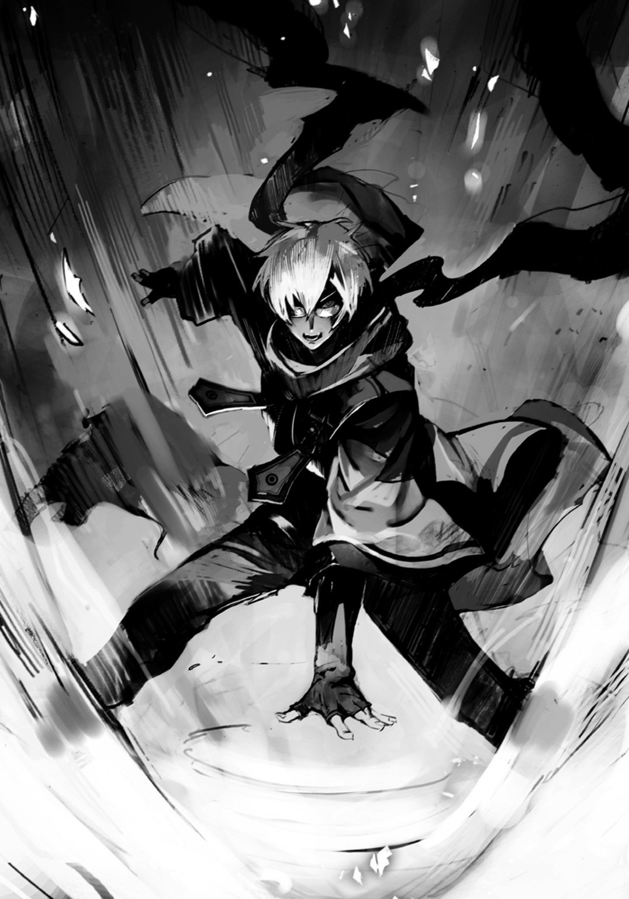
「そんなもので......僕の陣を突破出来ると思ったのか!!」
シンスケの雄叫びが上がり、かざした手の先に陣を発現。〈気〉〈壁〉。
シンスケが発動した陣は見えはしなくとも、俺の炎がぶつかることで、その巨大さを如実に表した。上下左右に拡がる二〇メートルはあろうかという、目に見えぬ空気の壁だ。
これにはさすがに炎の動きが止められた。......だが、これでも、いい。――いいはずだ！
炎はその見えぬ〈気〉の壁の表面を走り昇った。そして、それは壁の端に達した時、一気に勢いを強め......槍の先のように細くなりつつも、さらに炎は高く昇り――その先端はついに、ドーム天井へと到達したのだった。
このドーム天井を構成するのは――布だ。
俺達の頭上を覆っていた白い天井に一斉に炎が拡がっていく。
「意外に凄い陣を使うじゃないか！ 自滅覚悟でドーム全体を炎で包む気か!?」
シンスケに褒められたのは嬉しいのだが......実は、それほど凄い陣ではない。というのも、一見ドーム全体を俺の陣が包んでいるように見えるのだろうが......その大半は勝手に燃え盛っているだけなのだ。天井のそれに至っては文字通りに完全に俺の手を離れ、制御出来ない状態である。
俺がしたのは三つだけ。一つは最初に炎に勢いをつけたこと。そして、リーとの間に目眩ましを維持しつつそれをシンスケにぶつけたこと。天井への着火は、思いの外デカイ壁が形成されたのを見て、それを足場にすれば天井の布まで届くんじゃないのか、届いて燃えだしたら派手だろう、とその瞬間に思いついただけである。
そして、今の俺がやるべき最も重要なことは......炎を無制限に広がらせないことだった。天井が燃えようが燃えまいが、どうでもいいのだ。
「ほぉ、読めたぞアルク君......リー君との矢との持久戦は分が悪いとして、今度は僕の〈気〉の壁と君の炎による、陣の持久力勝負ということか。面白い、相手になろう。......発現・発動速度と大きさだけが僕の訓練の賜だと思わないでもらいたい！」
シンスケが口元に笑みを浮かべる。それを見るに、言葉だけではなく実際に持久力にも自信があるのだろう。だが......そんな力比べなどする気はない。
重要なのは、石板の迷路だ。
派手に燃え盛らせてはいるのだが......実は一本だけ、燃えていないルートがある。
「......面白いな、シンスケ。やってみるか！」
炎を操るのは、キツい。体力の消耗が激しく、少しでも気を抜くとコントロール出来なくなりそうで......持久戦は、正直自信はなかった。
「行くぞ、シンスケ！ 俺の陣の力を見せてやる!!」
俺はありったけの声量で叫ぶと、炎を再びシンスケの壁にぶつけに行く。
そして、同時に山も狙う。どちらも、シンスケが雄叫びと共に壁で防ぐ。
......少し調子に乗り過ぎているか。......俺の膝が笑い始めた。ろくに動いていないのに、このザマだ。だが、矢が来るかもしれない。そう考えるとまだ膝を折るわけには――。
「......矢は......どうした......？」
矢が、来ない。
いくら俺とリーの間に炎を噴き上げさせて目隠しをしたとはいえ、俺はずっと石板の上にいる。一か八かでも撃ちまくればそのうちに当たると考えないものなのか......？
俺は危険を承知で、リーと俺の間にある炎を、どける。目を凝らせば......リーは矢をつがえた弓を構えていた。シンスケに向かって。
――完全に、読まれてる。
リーは、時が来るのを待っていたのだ。
一か八かで乱射するよりも、一撃で仕留められる、その時を。
そして......俺ではなく、シンスケに飛びかかるであろうユニを。
読もうと思えば読めたのかもしれない。防御担当のシンスケは炎全域に目を配る必要があるが、それに守られているリーからすれば客観的に状況を見られたのだろう。そうなれば、自ずと迷路の中に不自然に炎が及んでいない部分があることに気づけるかもしれない。
......そこから導き出されるのは、炎は虚仮威しの囮でしかないという当然の結論か。
何より......俺達にとってこの勝負は、シンスケを黙らせられるかどうかの勝負なのだ。
シンスケが数秒間陣の発動をやめれば、山ごとリーを炎で包める。俺とユニが仕掛けるべきなのはオフェンスのリーではなく、ディフェンスのシンスケ......そこまで考えれば、今のリーの行動に至るのは必然だったかもしれない。
止めなくては。そう思う。だが、もしそれを止めたら、俺達は負けるんじゃないのか......？
――しっかりするんじゃ、ボクらは勝つんじゃぞ。
ユニの言葉が、俺の頭を過った。恐らく「ユニ、狙われているぞ！」と俺が声を上げれば......この試合、まず、負ける。シンスケとユニ、この二人とリーの間に炎を上げさせ、目隠しをするというのも、シンスケの作る壁で炎が入り込めない以上、無理だ。
どうする。どうすればいい。矢を防ぐためには。勝つためには。ユニを守るためには――。
俺の問いに答えたのは、頭ではなく、体だった。
気がつくと、俺は炎を操ったまま石板の上を飛び渡り、真っ直ぐにシンスケに向かって走っていた。
天井が焼け落ち、火を纏う布の破片が紅い雪のように舞う。
煌々とした光を放っていた天井の照明が火花を散らしながら、次々に落ちてくる。
石板の上を、烈火の雪の中を、俺は走る。
「来るか、アルク君！ 炎をどう使う!? 見せてみたまえ!!」
行くのは俺じゃない。そして使うのは炎じゃない。
リーの頭がわずかに動く。
シンスケに迫る俺に狙いを変えるべきか迷うも、結局シンスケを狙ったままだ。
身構えるシンスケに、俺は雄叫びを上げつつ、左手を振るう。
シンスケを呑み込むように高くせり上がった炎の波が、今一度上から彼に襲いかかるも、空気の壁がやはり防ぐ。だが......それによってシンスケの視線を上に向かせることには成功した。
――そして、時が来る。シンスケの足場近くの石板の下から青白い〈陣〉と〈封〉の字を発現させながら、ユニが跳び上がったのだ。
彼もまた甲高く叫ぶ。陣を浮かべた左手をシンスケへ。距離は、有効範囲内だ。
「全て囮かっ!?」
シンスケが慌てるも、〈気〉の壁は上から迫り来た炎を防ぐのに使っている。
「リー!!」
シンスケの声に呼応するように矢が、放たれる。ユニへ高速に、真っ直ぐに迫る、それ。
ユニは放たれた矢に気がつきつつも、彼は彼でシンスケへ向かって跳び上がっているので、何をすることも出来ない。
......だからなのか、ユニはリーからの攻撃に勘づきつつも、シンスケを見つめていた。
その体に触れそうな距離で、手を伸ばし、陣を発現させんとする。
黄金の瞳には、矢を喰らう覚悟があった――。
......だが、そうはさせない。
矢が、来る。その矢とユニの間に、俺は、飛び込んだ。
俺の右の二の腕で受ける――貫通した。
矢尻が先ほどとは違う。近距離射用の重量のある、まるでナイフのような矢尻が付いた矢は、腕を貫き、衝撃と共に俺の胸に達する。体内に金属の刃が入り込む感触――。
「アルク!?」
ユニ、俺を気にするな。シンスケを――。
そう考えるも、傷が肺に達したのか、声が出ない。口から鮮血を噴き出しただけ。
だが、意識は保つ。せめて、あと一〇秒。シンスケとリーを炎に包むまでは、まだ――!!
歯を喰い縛り、なおも噴き出そうになる血を飲み込み、石板上から炎の中へと落下する。
痛いのも、苦しいのも......俺は、慣れている。死にたいと願うほどに身も心も苦しめられたことは、一度や二度ではない。大丈夫だ、耐えられる。
だからユニ、陣を――。
「ハッ、ダメだ!! そっちじゃない!!」
石板から落下しゆく俺は、ユニの発現していた〈陣〉〈封〉の陣が、砕けるのを見る。
彼の陣が、発現する。
けれど、その砕けた破片が向かったのは......シンスケではなく、ユニの視線の先にいた......俺の方だった。
それは、信じられない光景だった。
俺の体に青い光が入り込み、そして――過去のしがらみと苦しみが......消し去ったはずの全身の傷跡が......体の底から浮き上がるようにして、再び現れたのだ。
幾百の痣、幾千の傷。幾万の苦しみと幾億の痛み。体から消し去り、記憶の奥底に沈めたはずのそれらが蘇った時......俺は溢れ出る血と共に、炎の中で悲鳴を上げた。
７
そこは待合室だった。城郭内にある陣士専用の、古代の設備をも当たり前に取り揃えた、恐らくは世界で唯一の病院である。
赤い絨毯が敷かれ、革張りのソファがいくつも並ぶ。しかし、広く豪奢ではあっても、深夜ということもあってユニが一人座るだけではどこか寒々しくて仕方なかった。
心配してついてきていたアカとうららが去ってから、すでにどれだけ時間が経っただろうか。
ユニは振り子を揺らす壁の時計を見やった。現在深夜三時。
夜明けはもう、そう遠くない時刻になっている。
何故、こんなことになってしまったのか。ユニは幾度目かになる自問自答を繰り返す。
弓矢等と違い、陣は遣い手の意思――イメージに従う。だからこそ、あの時......陣を発現から発動へと移行する際、飛び込んできたアルクに――自分の盾として矢を受けたことに驚き、意識を向けた。それによって、陣はアルクへと向かってしまった......その理屈はわかる。
だが、それによって何が起こったのか。......何が、起こってしまったのか。
ユニは考えつつ、ソファの上で自らのボリュームたっぷりな尻尾を回して前に持ってくると、丁寧に櫛を通した。
頭の毛より、尻尾の毛の方がユニは手をかけているが、その理由がこれだった。不安な時、悩んだ時、自然と尻尾の毛繕いを始めるのがクセなのだ。
「あれだけの炎の中じゃったのに、一本とて焦げてもいない、か」
きっとそれだけアルクは気を遣ってくれていたのだろう。自分の代わりに矢を受けたのも、彼らしいとわかる。奇襲である以上、同じ手は二度と使えないから、アルクが矢について警告を出していたら、負けていた可能性が高かったことだろう。
監査員から告げられた反省点として、あれだけ炎を扱えるならドーム内をもっと炎で包んで酸欠や熱そのもので追い込むことも出来ただろう、とのことだったが......少なくともあの時点ではそんな考えは二人とも持っていなかったし、結果論でしかないとユニは思う。
だからこそ、あのタイミングで何とかして〈封〉をシンスケに仕掛ける必要があった。
ユニを助けるためアルクが選択したのは結果として、自らを犠牲にするものだった。
恐らく矢を一本喰らったとて、決着がつくまでの、わずかな時間は陣を操れると判断したのだろう。
考えてみるに、悪くはないと思う。矢が来るとわかっていれば、アルクならば急所を外すことぐらい可能だろう。至近距離で放たれる矢を体で受け止める覚悟さえあるのならば......だが。
ユニも途中で覚悟は決めたが、それはやむを得ない状況だったからだ。対処出来ないからと、急所が外れることに期待していただけに過ぎない。
音を捉えた耳が動く。出入り口からの足音。二つ。浜菊と薙刀が収まっているであろう布袋を持つ白妙だった。
彼女らも三回戦を終えているはずだが、その体には傷も汚れも、疲れもなかった。
「意識はまだ戻らないの？」
何の用じゃ、とユニは平静を装い、毛を弄りながら口にした。
「骨はボキボキ、内臓もかなりダメージを負って、即死しかねない状態だった......って聞いたけど、当たり？ その場での陣による手当てではどうにもならないからって、病院に運んで緊急手術だった......とも、ね」
「......だから、何じゃ。そんなことを訊きに来たのか。暇な奴め」
まさか、と浜菊はユニの隣に座って足を組む。白妙はソファの後ろに、立った。
「どんな陣を使ってそうなったのか......気になるじゃない。だって決勝でそんな強力な陣とぶつかるのなんて、怖いからね」
「教えるわけないじゃろ。帰れ。明日朝一で決勝の可能性だってあるのじゃ」
まずないだろう、とはユニは思いつつ言った。トーナメント表が発表されても、何故、試合をいつ開催するのかが伏せられていたのか、会場も二つあるうちのどちらなのか、それを当日にならないと伝えられないその理由......ユニにもわかっている。
イリスがあのドームでトーナメントの説明をした時、〝今この瞬間より始まる〟と言っておきながら、第一回戦は後日だとしたところからもそれは読めたはずだった。
これはつまり、その間に〝画策しろ〟ということなのだ。
そして、あの説明会の直後から戦いはもう始まっていたのだろう。
そうしたイリスの言葉の意味するところを一番に理解していたのは紛れもなく優等生だったシンスケである。ユニもまた多少察してアカの陣を聞き出したり、うららもそれに対して逆襲したりとやっていたが......明らかに本気の度合いが足りていなかった。
陣はかつてあった日本という国が作り出した技術だ。大戦争の最中、その力を逆に利用しようと世界中が躍起になった末に......世界は一度終わった。それから長い時間を経てもなお、人が扱っていい力ではない、この世から抹消しなくてはならない技術であるとして、力を恐れる世界の多くの人々は陣を、そしてそれを利用する陣士を躍起になって殺そうとしている。
その代表格なのが烏だった。彼らは使える手段、技能をありったけ持ち込んで陣士を殺す。毒を盛るなど朝飯前で、場合によっては一人の陣士を殺すために数百人の無辜の民を犠牲にすることすら躊躇わないこともある。
陣士になるというのは、そういう連中を敵に回すことになるのだ。それ故に、こうしたトーナメントでは現実に、つまりは実戦に近い方がいいのだろう。
今期の総本山が、戦闘に特化した陣士を求めている、というのならば、尚更だ。
「まぁ教えてはくれないよね。当然よね」
「......用件がそれだけなら、帰れ」
別にいいけどね、と、浜菊は長いポニーテールを前に持ってきて、ユニのマネをするようにして毛先を弄った。その姿に、ユニはバカにされているのだと察して怒りが込み上げてくる。
「どんな陣が使われたのか、聞き出さなければ負けそうで怖いのか？」
瞳を向けてくる浜菊の顔にあったのは、余裕。
この女、決勝ではそんなもの聞かなくとも勝つに決まっていると信じて疑っていないようだ。
だが......そのくせして、浜菊の瞳の奥にあるものは......どこか、自分達と似ていると、ユニは感じた。その瞬間に爆発しそうになっていた怒りが自然と失せていく。
ユニは自分の勘がかなりの割合で当たる自信があった。だとすれば、この女は......。
「違う。実は逆なの。......本当は教えてあげようかと思って来たんだよ。とても大事なことを......ね。ま、アンタに教えてもしょうがないけどさ。......本人に直接言うよ。ちょうど来たかな」
ユニの耳も力のない足音を捉えた。......アルクだ。
戦闘後のままの、己の血を浴び、服を焦がしたままの彼がよろよろと病院の廊下を歩いてくる。ユニはソファから飛び降り、アルクに肩を貸した。
陣を入れた直後のように、ぐったりとした彼の体をソファへ。
「あらあら、ボロボロじゃない。......今、どんな気分？ ん？」
項垂れるアルクの前に立って、浜菊は半笑いで言った。
「......シンスケはまだだ。リーの意識は、今、戻った。......失せろと言われたよ」
アルクが頭を抱えた。その腕に先ほど浮き上がった信じられないほどの傷跡は、ない。
「負けた奴らなんてどうでもいい。あたしが訊いたのは、勝ち残ったアンタの方よ、府津羅」
ユニとアルクは、シンスケとリーを下し、決勝に上った。だが、それは決して気持ちのいい勝ちではなかった。......血を吐きながら、全身に数え切れない古傷の跡を浮かばせたアルクあってのものだったから。
あれは陣士の戦いなのか。あれが、自分の持つ陣の力なのか。ユニにはわからなかった。
「......返答はなし、か。まぁ身も心もボロボロだってのはわかったけどさ。さっきユニ......だっけ？ その子にも言ったけど、どんな陣を使ったのか、聞きたいものね」
「......使っていない。何も、ただ、俺は......」
ユニはアルクの肩に置いた手に力を入れて、それ以上の言葉をやめさせた。
今のアルクの精神状態では全てを晒しかねない。
全てを使うのが陣士だというのなら、あれもまたユニ達の切れる札たり得るのだ。
「はぁ？ ......あぁ、教える気はないってことか。まぁいいわ。......それより、ちょっと聞いてほしいことがあるんだけど？」
浜菊は余裕の顔を見せると、頭を抱えているアルクに顔を近づけた。
「......浜菊家がどういう存在かは知っているよね？ あたしはそこの四人兄妹の唯一の娘で、お父様からは特別な寵愛を受けている身なわけだけれど......まぁそれはいいの。この浜菊家は、塩から兵器、希少動物まで取り扱う何でもござれの大商家......知ってるよね？」
浜菊は、唇が耳まで到達しそうなほどの笑みを浮かべつつ、アルクへと顔を近づける。
「......十数年前、アンタの父親、当時の府津羅家宗主が死した後、多額の借金を抱えたそうじゃない。それでどこぞの悪徳な連中に府津羅家代々のお墓とかもあるあの山も道場も、全て差し押さえられたわけだけど......浜菊家がお金を出して取り返したって......知ってた？」
「......何だ、それ......？」
「んー？ まぁ、知らないよね。知っていたら私にデカい顔出来ないもんねぇー」
ユニは、浜菊が何を言わんとしているのかこの時になってようやく察した。
この女、三回戦が終わると共に、早速仕掛けてきたのだ。......脅迫という手段で。
「地元に古くからある名うて剣士の一族だから、温情で今もタダで貸してあげているってのが実状で......本来の持ち主は私を含めた浜菊家。......アルク、後はわかるよね？ あなたが、あそこで細々と道場を営むお兄さん、そして府津羅家の名誉や先祖を思うのなら――」
浜菊の長い指先がアルクの顎を持ち上げさせ、唇同士が触れそうなほどに顔を近づけた。
「――決勝を辞退しなさい、府津羅のお荷物さん」
薄く開いたアルクの口の中に、冷酷な浜菊の言葉が注がれた。
●幕間『交わり』
夜、深い森の中で行う焚き火はいつも不思議だ。その明るさの中だけが実存世界で、それ以外の闇に沈んでいる世界なんて存在しないのではないか......そんなことを考えさせる。
けれどそれは目に頼った場合だ。瞼を閉じ、耳を澄ませて肌に触れる風や気配に意識を向ければ、世界はどこまでも広がっているのを感じられる。そしてそこには人や獣や、それ以外が息を潜めているのもわかる。
「姉ちゃん、肉が焼けてきたぜ。もう少しだ」
円は閉じていた瞼を開き、地面から立ち上がった。先ほど狩った鳥の肉をマメに焼いている双子の弟の斛に手を伸ばす。
「斛、あなたの剣を貸して。すぐに返すから」
お、ついに府津羅流のお披露目か？ そんなふうにおどけて口にしつつ、弟は鞘を払って渡してくれた。府津羅流は直刀を好まないが、構わなかった。
円は崩しの型で闇へ向かい、正眼で構えた。すると、一人の中年男が現れる。
「ほぅ、気配は消していたはずだがな。何者だ、お嬢さん」
男は背負っていた荷を下ろすと、腰に差していた両刃の剣を抜く。火と肉、そして女の気配に釣られて現れた様子からして、旅の者というよりは賊に近いのだろう。
「俺は紳士だ。肉を渡せとは言わん。......お嬢さんが遊んでくれればそれでいいんだがね」
円は応えず、間合いをジリリと詰めただけだった。男の構えもさまになっている。そこそこに手練れだろうが......弟はすでに興味を失い木の棒に刺した鳥の身の方に意識を向けていた。
円は男の瞳を見つめる。余裕の色しかなかった男のそれに、徐々に焦りが生まれてくる。
円の胸には何も浮かばない。これっぽっちもゾクゾクしない。それで円もまた興味を失った。
「何者だ、お嬢さ......いや、アンタ、一体――!?」
ため息と共に円は男の両手を一振りで斬り飛ばした。血飛沫がわずかに上がるも、服はおろか、彼女の長い黒髪にかかることもなく馳せ違う。
その切り口に男は愕然とするも、円が構え直すのを見ると、半狂乱になって逃げていく。
「荷物、忘れてる......まぁ、いいか。斛、欲しいものがあったら持っていこう」
「それより肉喰おうぜ。っつぅかさ、別に相手にする必要なかったんじゃねぇの、今の」
斛は剣を受け取ると、丁寧に刃を拭ってから鞘に収めた。
「命懸けの立ち合いをしたかっただけ。......また、あんな目を見られるのかなって思って」
焚き火の前に内股ぎみに膝を立てて座ると、円は膝と肘を突き合わせるようにして頰杖を突き、炎を見つめた。
やはりダメだった。根本的に違う。同じはずなのに、全然違う。
府津羅流宗主の弟、アルク......一つか二つ上の彼と立ち合った時の感覚とは全てが違う。
あれは、肌がひりつくほどの緊張と共に、得も言われぬ擽ったさがあった。あの緊張の数秒を思い出すだけで自然と胸が高鳴り、全身がきゅっと締まるような気がする。
最初はどうということのない臆病者を斬るだけだと思った。何故それが最終試験なのかわからないが、言われた通りに斬ろうと思った。だが彼が鯉口を切った瞬間、何かが一変したのだ。
文字通り抜き身になった、そんな気がした。アルクにあった、ぬめるようなまどろっこしい気配が一瞬にして消え失せたのだ。それから構え合った時のゾクゾクとした感覚は一六年生きてきた中で、一度とて経験したことのないものだった。
森で不意に狼に出くわした時のような、あの静寂。全力を懸けて見つめられた、あの衝撃。
......それが、忘れられない。
今も彼は、あんな目をして誰かと立ち合っているのだろうか......？ そんなことを想えばため息が出るばかりだった。焦りのような気持ちが湧き、胸がざわつくのは何故だろう。
「姉ちゃん、府津羅流を学んでから何か変だぜ？ そんなにダメだったのか？」
円は無言でまた立つと、腕のない男が走り去った方を見やる。先ほどまで響いていたわめき声が消えていた。代わりに......迫り来る、巨大な気配。風もないのに森が揺れている。
木々をかき分け、それが迫る。目を細めた円が闇を見やれば、人間の頭を二メートル台にまで膨らませ、そこに巨大な腕を四本取りつけたような化け物。鵺だ。そいつは大人の頭ほどもある巨大な二つの瞳で円を見つめながら、大きな口に腕のない死体を咥え、笑っていた。
真剣での立ち合いは、読み合いだ。相手をとにかく観る。目だけではなく、耳で、鼻で、肌で、そして心で相手の全てを知ろうとするところから始まり、そこに己の持てる全てをぶつけんとする。たとえ一瞬でも、それは濃密な交わりの時間だった。
「......少なくとも鵺じゃダメ。何も感じないもの」
円は両腕を大きく交差させるようにして振った。そして、吸い込んだ息をそっと吐いた時、鵺はすでに円に肉薄していた。だが、それは四つの巨大な肉片となって走り込んだ勢いそのままに、焚き火の明かりの中をぶっ飛び、そのまままた闇の中へと転がっていったのだった。
円はため息と共にまた、火の前に座って頰杖をついた。
「姉ちゃんにはお師匠様から貰ったそっちの方が合ってるよ。......ほい、肉」
結局焚き火の前から一度も尻を上げずに肉を焼き上げた弟から、鳥の半身を円は受け取った。
もしあの時、頼雅の邪魔が入らずに戦い続けていたら、どうなっていたのだろう。彼か自分、どちらかが死んだ。それは確実。けれど......それまでの間、どうなっていたのだろう。あの感覚がさらに深く、激しく、濃密になるとしたら......自分の心は、どうなっていたのだろう。
いつか、それがわかる時が来る。そんな気がした。
きっと、またどこかで会えるから。
〝いつかまた、世界のどこかで〟......そう言った時彼は頷き「あぁ」と応じてくれたのだ。約束とも言えない淡いやり取りとはいえ、何故だか円の脳裏にはしっかりと焼きついていた。
彼も同じだと少し嬉しい。円はそんなことを考えながら肉に唇を這わせたのだった。
●４章『相棒』
手紙はまだ、届いていない。そろそろ届くはずの手紙である。
自分が陣士になることを告げてもなお、同じ言葉を繰り返す両親に吐き気を催すのには慣れてはいたが......それでも、きっと、次の手紙には......。
「もう、いい。......着替える」
鏡の中で、白妙は櫛を止め、一礼をすると制服を用意してくれる。
浜菊は纏っていた寝間着を脱ぐ。下着姿となった己が――浜菊憐が、鏡の中にいた。
自分を抱く。この体は自分のものだ。誰にも渡さない。そのために......陣士になったのだ。
人はどれだけ強くなれば、望みを叶えられるものなのだろう。それが当たり前の望みであっても、生まれ次第で、こうも難しいものなのか。
「勝てば......仮免じゃない、本当の陣士になれば......きっと大丈夫のはずだよね......？」
白妙は答えない。答えのない、わからない問いかけには昔からそうだった。
浜菊は制服を着、金色の髪をポニーテールにまとめ、最後にマントを羽織った。
目映いほどの朝日の中を、布袋に包まれた薙刀を持つ白妙を引き連れ、アルク達の第三回戦試合会場になった屋内試合会場へと向かった。
白かったドームの天井は焼け落ち、細い金属の骨組みが剝き出しだ。外壁はさすが燃えたりはしなかったが、焦げている。かなりの火を使ったのだと知れた。
内部に入ってみれば焦げ臭さが鼻を突く。青々とした芝生だった地面は、今は黒が覆っていた。そして、二つあるはずの石板の山は入り口近くのものが崩れ、瓦礫と化しており、その周辺だけが不自然に焦げていない。
「お嬢様、こちらを」
白妙が見つけたのは、血痕だった。焦げた地面と焦げていない地面との境目の近くである。また、近距離射で使われる重く大きな矢尻のついた矢も見つけたが、折れていた。
「まるで獣が暴れたかのよう。......何の陣を使ったんだか」
厚さ一〇センチ、縦横三メートルの石板で構成された迷路のような会場だった。だが、その矢が折れた周辺は......それらの石板が砕けた状態で散らばっているのだ。押し倒したとて割れはしても、砕けはしない。何らかの大きな力が加えられたのは間違いなかった。
「火と、物理的な破壊力を有した陣......か。思いの外派手ね」
府津羅は小賢しい陣を使うような気がしていた。彼は幼い頃はもちろん、卒業式で再会した時でさえ印象は変わらない。いつだって俯き加減で、どこか歪んだ奴だ。まるで愛玩犬が知らない人間を前にしているかのような、そんな奴。誰にも嫌われたくない、怖い、出来れば逃げたい、そのくせして、心のどこかで人と触れ合いたいと儚く望む。しかも誰彼構わず媚びを売れるほどにプライドを捨て切れてもおらず、いつだってウジウジと中途半端。嫌がらせを受けても見せられる牙を持たないが故に苦しげな顔をするだけ。全てが曖昧模糊としている。
はっきりとしない奴は、好きじゃなかった。なよなよしていれば尚更だ。加えて、今でこそ消えているが、幼い頃から顔にいつも傷をつけていたのも浜菊の不快さを誘っていた。
傷ぐらいどうということはない。問題は、それだけの傷を作ってもなお府津羅という名にしがみつかなければならないというその境遇が、幼い憐から見ても哀れだった。そして、そこまでやってなお出来損ない、失敗作、姦淫の末の子ではないのか......そんなふうに周りから陰口を叩かれ、それを知っていてもなお、中途半端に微笑んでいるばかりなのが、気持ち悪かった。
まるで苦痛を当たり前として受け入れている姿が、自分とは違う生き物のような気がして、近寄りがたい空気を生んでいたのだ。
「とはいえ......結局、気がつくとアタシまで同じってのは、どういうことなのかしらね。まるでこうなるって幼い頃から察していたみたい。だからこそアイツを嫌っていたとか......」
白妙の視線を感じ、口を閉じる。最近、独り言が妙に増えた気がする。親から自分の将来を聞かされた頃から友達が減り、近くにいるのは白妙だけになったせいかもしれない。
白妙は余計な話はしない。わからないことへの返答もしない。......だから独り言が増えているのだろう。
フンッと、浜菊は大きく鼻から息を吐き、今一度砕けた石板を見やった。
これほどの石板を容易く砕く力で襲われたのなら、シンスケとリーはひとたまりもなかっただろう。陣の治療で最も厄介なのは病と、表面に現れない体内部の損傷だと浜菊も知っていた。
たまたまか、意図的かはわからない。だが、管理下に置かれている試合――即座に治療してもらえる戦いであってもなお、陣士にとっては怖気をふるうやられ方だ。そういった攻撃的なのは性格的にユニが用いるのではないだろうか。
個人情報を漏らさぬためにも必要以上に接触するなと言われていたとはいえ、ユニはいつもクラスの隅っこで本を読むか、耳をピクピク動かしながらノートにペンを走らせてばかりだったのは知っていた。その大きく、肉食獣のような黄金の瞳に似合わぬおとなしい文学少女なのかと思っていたが......直接喋ってみれば、そうじゃないのだろうとすぐに察せられた。何よりの違いは男だったらしい。
あれは根暗で、過激だ。牙は大きくないが、その分鋭く、そうであるが故に脅しで見せはしないものの、やる時は命懸けで喉元に喰らいつこうとする......そういうタイプだ。
ヘタに負けるぐらいなら、敵を笑わせるぐらいなら......当たり前に命を捨ててくる。相対すると一番面倒臭いタイプである。
「でも、リー達に付き添っていたのは府津羅か......うーん」
性格に関して言えばユニと府津羅はまったく逆かもしれない。そうした意味においては、何故あの二人は組んだのか？ たまたま残っていた二人が組んだだけではないのか。それとも府津羅が言ったように、本当に望んで組んだ相手なのか......。
そういえば、と浜菊はあの時に言われた言葉を思い出し、苦笑した。
――たとえボクらがどうであれ、お前はそうやって他者をバカにすることでしか自分の優位性を保てない哀れな奴じゃ！ だからお前なんて誰も相手にせず、いつも孤立して――!!
あれを言われた瞬間の殺意は、今もわずかに残っている。的を射ていたからだろう。いくら他者との接触を推奨されなくとも、ベニグノのように当たり前に友人を作っている者は少なくなかった。そんな中にあって浜菊は「推奨されていないから」と言い訳を得たことで、本当に白妙以外とはほとんど関わることなく生活を送っていた。
関わるとすれば、テストで高得点を取った時などに己の力を見せつけるために――。
「見透かされていた、か。......いや、単によく見て......見ていた？」
寒気がした。考えてみると何故人と関わりを多く持とうとしていなかった自分はユニの瞳の色を知っていたのか。思い出してみれば......不自然に彼とは幾度も目が合っていた気がする。
人と関わることがなかった浜菊は暇な時間はひたすら座学の予習・復習をするか......クラスの人間観察をしていた。どれが敵で、どれが味方なのか、そして自分がどれだけ優位性を保てているのかを知ろうとするために。昔からのクセのようなものだ。
もし、それがユニも同様であったとしたら？ お互いにクラスメイトを探ろうとしていれば、自然と目が合うものではないのか――。
「......だとしたら、案外私達は似た者同士だったりしたのかもね」
こうなってくるとユニの存在がいささか不気味だった。だがそれでも、まだ負けるとは思えない。府津羅が辞退すれば、それだけでまず間違いなく優勝だろう。
浜菊と白妙は商業区へ出ると、食材を買い求め、そして......そこにある郵便局を覗いた。
手紙はまだ、届いていない。
「万全を期しておいて......損はない、か」
手紙が届けば、何の憂いもなく戦える。存分に勝ちを誇れる。
買い物袋を持つ白妙に「でしょ？」と訊けば、彼女は頷いた。
白妙は何を言うことなく傍にいた。昨日も、今日も、そしてきっと明日もまた。陣士になると言い残して故郷を出る際、無言でついてきた彼女だが......もし、父からの手紙がこちらの期待するものでなかったとしたら、彼女はどうするのだろう？ もし浜菊家から縁切りされれば......彼女も自分から離れるのだろうか。わからなかった。考えたくもなかった。訊くのも怖い。
二人は家へと戻った。総務から与えられたアパートは早々に引き払い、城郭内にある家を二人で借りているのだ。
「お嬢様。いつまでもあなたにお仕えするのが私の務めでございます」
浜菊の不安を見透かしていたのか、白妙はキッチンへ行くなり、聞こえるか聞こえないかの声量で......そんなことを言った。気のせいだと言われれば、そうかと納得出来てしまうような......そんな、声だった。
浜菊は少しばかり嬉しくなった。そして、その気分のまま、家のポストを開ける。
手紙はやはり、来ていなかった。
１
俺は、陣士になる。幾度も口にした言葉が空虚に頭を過る。
自分はもう当たり前の陣士なのだと思った。けれど、実際にはまだ仮免。そして全身に蘇った傷跡には、俺はどこまで行っても府津羅なのだと今一度思い知らされた気がする。遠く離れた兄のため、府津羅のために、自分が決勝の辞退を考えている今、否定しようもなかった。
瞼を開くと、ようやく見慣れてきた自室の天井が見えた。
対シンスケ・リー戦を終えてから、俺の体は少し動くだけで軋みを上げる。そんな痛む体を押してベッドから起き上がると、腕を伸ばした。そこにはあの蘇った古傷の跡はない。リーの矢で出来た傷は、指の骨折と共に監査員の陣の力によって治療され、その跡すらもない。
あれは一体何だったのか。あれが、何の力だったのか。
ユニはある説を口にしたが......何故傷跡が蘇ったかまでは説明出来るものではなかった。
ベッドから降りると、その下に隠してある刀を取る。昨夜まで左肩に巻いていた包帯を丸めて空中に放り、それと共に抜き撃ちを放つ。団子状の包帯は、床に落ちてから二つに分かれた。
「体は大丈夫そうじゃな。そろそろ決勝の連絡が来てもいい頃じゃ。作戦会議でもしようかの」
買い物袋を抱いたユニが俺の部屋の扉を開けて、立っていた。
俺は刀をベッドの下にしまうと、服を着て、ボサボサになっていた頭を手櫛で押さえつける。
ユニはベッドに腰掛けると、買い物袋から笹の葉の包みを取り出した。
団子である。みたらしとあんこ。俺も食べていいらしいので、あんこを貰う。
四つ刺さっているうちの一つを頰張れば、値段が高いのも、ユニがこだわるのも、わかる気がした。......粒あんのそれは、上品に香るように、甘い。そして甘み以上に、何となく旨味が強い気がする。ほのかに塩味が......団子を茹でる際に塩を入れたか、あんこを付ける前に振ったかしているようだ。それがまた甘さと旨味を引き立てるようで、実にいい。
「実は病院に行ってきたんじゃ。リー達の方ではない。商業区のアルクが傷を消した病院じゃ」
俺は審判を受ける気分で、次の団子をまた口に放り込み、ユニの言葉を待った。
「アルクが受けた処置は陣の力を使わない、ごく普通の術式だと聞いておったし、病院でその手法を教えてもらったわけじゃが......やはり陣に反応する類のものではなかった。医者が言うには、もし何らかの影響で再び傷が出るとしたらそれは――」
●
「――精神的なもの？ そんなもので物理的に消した傷跡が蘇ると？」
ベッドに横たわり、イリスの膝に頭を乗せている罌粟は瞼を閉じたまま訊いた。
昼の日差しとイリスの太ももの温もりが実に心地良かった。
「ごく希に、深く、そして長くあった傷ならば薄く現れることがある、ということですが......」
十代の身でありながら、全身に無数の傷を持っていた府津羅の男、アルク。罌粟は何とはなしに彼の生い立ちを想う。機会があれば茶に誘ってみるのも面白いかもしれない。陣士にならんとする若者に過去を尋ねるのは野暮かもしれないが、好奇心が勝りそうだ。何せ、あの府津羅の末裔なのだ。話をしてみたかった。......たとえ、陣士になり損ねたのだとしても。
「しかし問題はそこよりも、〈封〉の陣の発動で、あのような効果があったのは驚きです」
罌粟はベッドの上にあった報告書を取る。それによれば、アルクは自ら盛らせた炎に焼かれ、肺腑に流れ込んだ血を吐き出しつつ、無数の傷跡を全身に浮かべ......暴れ回ったのだという。呼吸が出来なかったせいなのか、それとも溢れ出た力が行き場を失ったがためなのかはわからないが、アルクは半狂乱でシンスケとリーを叩き伏せたとある。その間十数秒。しかも素手。
「そうだな。しかし、昔からなかった手法ではないんだ。......結果として似た効果を利用していた者はいた。......外法だがな。人の理からはみ出す技術の陣、その使い方からすら外れている。......いや、〈封〉を用いて再現出来たということは、外れてはいないのかもしれないか。......ふむ、ユニとアルクは早速〝資産〟を手に入れたか」
陣の特殊な使い方の情報は〝資産〟と呼ばれる。陣の情報は高く売買されるし、命を長らえるにあたり、武器や防具よりもずっと意味を持つ。
「しかしこうなると決勝戦が楽しみだ。果たしてどちらが勝つのやら。......トーナメントにおける当初の目的は達せられたが、それでもこういう楽しみがあるからやめられん」
「それなのですが......浜菊憐がすでに仕掛けているようです。身内が貸しつけている山や道場を取引材料に、決勝を辞退するようにアルクに迫っておりまして......」
「浜菊、白妙は優秀だな。二人共に力を有し、一回戦からして躊躇いなく他者にそれを見せつけ、その上で策略を用いるか。陣士としては理想的だ」
「しかし同時に、浜菊は危うさを内包しています。調べさせたところ......」
「アルクとユニの方もそうだが、そういった場合にこそ二人の力が試される。何のための相方なのかを考えるにちょうどいい。陣士とは力を有するが故の不安定さを持つ。だからこその相方だ。......たとえわらわであっても、イリス、お前のような相方はどうしても必要なんだ」
はい、とイリスは嬉しそうに、優しく、柔らかに口にした。
○
ユニが傷の話を終えると、俺は次の試合について思っていることを告げた。辞退したい、と。
「本気か、アルク。......ふざけるな。ボクらは陣士になるのじゃ、世俗のしがらみから逃れるために名を自分でつけて、今までやってきたのじゃろ」
俺は項垂れたまま、自分のことを語るしかなかった。たどたどしく、自分の中にあるわけのわからない感情と共に、兄と自分と、そして府津羅の一族のことを。
ユニはその全てを、面白くなさそうな顔のまま、黙って聞いてくれる。
俺が物心ついた頃に両親は死に、七つ離れた兄が一生懸命に立ち回ったが、悪徳な連中に目をつけられ、府津羅家が代々所有していた道場や山さえも奪われてしまったこと。それでも近隣の村々の人達や、かつての門下生を始めとした大勢が助けようとしてくれたこと......。
浜菊の言葉を信じるなら、恐らく浜菊家が山や道場を押さえたのは、その時だろう。それしかない。気がつくとあれだけ慌てていた兄達が当たり前のように道場を再開させ、自分もまたごく普通に剣を振らされていたのだ。
ひたすら鍛えに鍛えた。強くなることで兄達が喜んでくれると思ったし、俺がきちんとした府津羅流の遣い手になれば貧しかった家計を助けることにもなるかもしれないと淡く思っていたのだ。けれど......実際には、俺の剣を見る度に兄は落胆し、ため息を吐いた。
強くなろうと思い、そうあろうと努力すればするほど兄は遠い存在となっていった。兄は幼い頃より天稟を現し、十代で父に達したと謳われ、二十歳を迎えた時には府津羅流史上最強、そして剣士最強の名すら自然と身につけ、それに異を唱えられる者など一人としていなかった。
俺が振り始めた剣は、何も、意味を持ちはしなかった。それでも兄は俺に府津羅の技を教え、しごいた。そして、体の傷は増えていった。府津羅の男だから、おれの弟なのだから、と。
「......虐待じゃな、そんなもの。性格破綻者じゃ。ボクなら石を投げる」
違う。そうじゃない。きちんと受けられなかった俺が悪いのだ。俺が、弱いのだ。弱いのが、悪いのだ。兄の手加減したやる気のない一撃すら、かわすのはもちろん、受けることすら叶わない、そんな俺が悪いのだ。
それに傷跡は兄の刀で作られたものじゃない。兄の鮮やかすぎる刃は相当に深く斬ってもその傷跡は、まず残らない。傷の大半は、他の道場の者や、道場破りでやってきて兄に手も足も出なかった連中が腹いせに喰らわしてきたものだ。俺は人と剣を交えてはいけないとされていたから、一方的に打たれ、斬られを繰り返していた。
どれだけやられてもやり返してはいけない。......俺が府津羅だから。府津羅の名と血を継いだ男が情けない剣を見せるぐらいならやられるに徹していた方がいい。
恥を晒すぐらいなら、やられていろ。そして無様に生きるぐらいなら、華麗に死ね。しかし、華麗さはお前には微塵もない。だから......死ぬな。ただ、耐えろ。やられていろ。
......兄はそう強く強く、幾度となく俺に言い聞かせていた。
一度、剣を使わなければいいのではないかと、素手で年上の子供十数人にやり返したことがあったが......その日の夜に、俺は兄に酷く打ちのめされた。殺してほしいと、何度哀願したかわからない。だが、兄は殺さず、生きろ、と涙を流しながら打ち据えてくるだけだった。
そして、俺がやられるを良しとして、耐えに徹した時だけ......いつも、優しかった。哀しそうな顔をしながら、笑って頭を撫でてくれた。
俺は兄にとって、恥ずかしい存在。だから、少しでも褒めてくれると......嬉しかったのだ。
「そうやって飼い慣らされていたのか、アルク。牙を抜かれ、愛玩動物が如く。犬の躾じゃ」
幾度、府津羅として生まれなければ......と思ったか。当たり前の家に生まれ、当たり前に、『普通』を生きてみたかった。剣を置きたいと願ったことは一度や二度ではない。けれど兄がそれを許しはしなかった。府津羅だから、と。府津羅の子でありおれの弟だから、と。
「悔しいし、嫌だとも思う。けれど、結局俺は府津羅でしかないんだろう......。だから......」
せめて、別れ際のことがなければ......と言い訳がましく俺は胸の内で思う。帰郷した際、何故か兄が背中を押してくれたことが......嬉しかった。兄は嫌いだけれど、それでも......。
だから......決勝を辞退するしかない。そう言おうとするも、ユニの声が遮る。
「おぬし......兄のことが大好きなのじゃな」
まさか、そんなわけない。大嫌いだ。死ねばいいとさえ思う......そんな言葉を連ねたが、俺の声は何故か嗚咽と震えを伴っていた。目尻から涙がこぼれているからか。
「ようやくわかった。ずっと感じていた......おぬしが持つ〝気持ち悪さ〟が何から来るのか」
その言葉に、俺はハッとして顔を苦々しく歪ませるユニを見た。
「何だよ、それ。お前も、俺をそういうふうに見ていたのか？ 傷もなくなったのに......それでも、そんなふうに思っていたのか!? 相方に......一人しかいない相手をお前は......!!」
「過去のおぬしを気持ち悪がった者の中にも、傷跡とは関係なしに言っていた者も多いじゃろうな。......フン。一度休学中に帰省したと聞いた時から何かを感じておったのじゃが......おぬしは、家や血から逃げようとしているくせに、いつもそこばかり気にしておった。兄を嫌っておきながら、ずっと兄のことを考えておった。......違うか？」
ユニは視線を床に落とし、ため息と共に続ける。
「陣士は強大な力を得られる一方、今の世ではリスクも大きい。陣の力を使って成し遂げんとする何らかの強い目的を持つ者か、ただのバカか、もしくはこれ以上悪くなりようがない、そんな底辺を這い回るしか出来ぬ負け犬しかなりたがらぬ。......アルク、おぬしはどれじゃ？」
「府津羅の剣よりも......ずっと強い力を......それで......だから剣を使わずに試合をして......」
「あえて剣を封じていたのは、おぬしの中で府津羅へのこだわりを捨てておらぬからこそじゃろう。使えるものは全て使うのが陣士の戦い方であるとする以上、使えるなら使うべきじゃ。......まぁいい。それで？ 強大な力を手に入れ、陣士になって、結局おぬしは何がしたいのじゃ？ ......答えられんじゃろう。普通に暮らしたいと以前望みを言われた時は、どういうことかわからんかったが......今、ようやくわかった。おぬしの本当の望みは......」
やめろ！ 俺はそう声を上げ、ユニの肩を摑むも、彼は、吐き捨てるように続けた。
「おぬしは、ただ......兄に認められたいだけじゃ」
......いつか自分が大きくなり、誰よりも強くなり、兄に俺の剣を褒められるのを妄想していた恥ずかしい日々の記憶が、ユニの言葉でありありと蘇る。いつか兄が危機に陥った時に俺が助けに入ったり、兄よりも強い化け物を俺が一振りで倒したり......。
そこまでじゃなくとも、腕を認められ、凄いじゃないか、やったな、見事だ、そんな言葉を兄からかけてもらえる日がいつか来ると信じていた。
だから耐えた。だから、頑張れた。でも......ダメだった。だから、俺は......。
「兄がおぬしを愛していたのか毛嫌いしていたのかはわからん。じゃが、おぬしは兄に愛憎入り交じったものを抱いておるのじゃろう。愛しているからこそ憎み、憎いからこそ強く意識し続けざるを得ない。まるで虐待されてもなお、たった一人の飼い主にすり寄る犬のように」
俺はユニの両肩を摑んだまま、膝をつき、項垂れた。涙が、床に落ちて染みを作っていく。
「違う......違うんだ。俺はただ......家の......血の、兄の......しがらみが......」
「しがらみなどない。......おぬしが、しがみついておるだけじゃ。この世界、人はもちろん、犬の生き方さえいくらでもある。......いつまでそんな狭い世界に閉じこもっておるのじゃ」
ユニが俺の手を払い、背を向けた。垂れた尻尾が少しも揺れることなく、彼は部屋から出ていこうとする。その背に俺は膝をついたまま、思わず手を伸ばしてしまった。
「おぬしはもっと強い人間じゃと思っておった。そして、良きパートナーになれると思ってもおったのじゃが......致し方あるまい。決勝は一人で戦う。......もし共に戦い、共に陣士になれるというのなら、そんな家のことなどちっぽけだと思えるぐらいの広大で、おぬしが想像したこともない世界を共に歩けたのじゃが......残念じゃ」
そんな言葉を残して、彼は部屋を出ていった。
残った俺は、床に這い蹲ったまま、泣いた。
２
暗い部屋で、俺は一人、ダグラスの灯す火を見やっていた。
火を消す。部屋は暗くなるも、窓から差し込む月明かりで、真っ暗というほどではない。
俺は、その暗闇の中で、また火をつける。
どうしていいのか、わからなかった。自分自身でさえはっきりと認識できなかった――いや、あえてしようとしてこなかった心の奥底を言い当てられた。それは自分がどれだけ情けなくて、女々しくて、哀れな存在なのかを証明されたようで......あの時のユニの言葉を思い出すだけで、涙が溢れ、吐き気を催すほどだった。
ユニに謝りたいと思う気持ちがある一方で、どうしようもないとする気持ちがある。
何より、何を謝ったらいいのかが、わからない。
俺を気持ち悪いと言った相方に、どんな言葉を連ねればいいのか。
俺は頭を抱えた。頭と腹の底がモヤモヤとする。兄を想う時とは何かが違う気持ち悪さだった。そしてどこかで焦っている。時間を置けば置くだけ、悪くなるというのはわかっていた。
......でも、どうしていいのかが、わからない。
床に座っていた俺はベッドの下の刀を取った。兄が俺のために購ってくれたもの。
......貰った時、驚きや混乱と共に嬉しさがあったのは、間違いなかった......刀。
それを杖に立った時、目に入ったのはテーブルの上の乾いた団子。ユニがあれだけ好きなものを、一口も食べずに去っていったということが、彼の気持ちを代弁しているような気がした。
兄も、ユニも......俺なんかを......どうして。
二人は、俺をどうしたいんだ。そして俺は......結局何をしたいんだろう。
堂々巡りだった。そのくせして気持ちだけが堕ちていく。
こうして決断を先送りにしているだけじゃ、どうにもならないんだろうな、きっと。
何かしていた方がマシかもしれない。多分。きっと。おそらく。
それもまた逃げているだけかもしれないと思いつつ、俺はダグラスをジャケットのポケットに収めると刀を腰に帯び、ふらつく足で部屋を出た。外へ行く途中で、隣のユニの部屋を通りかかったものの気配がないので、深夜ではあるが外出しているようだった。
俺はアパートから出て、人気のない真っ暗な公園の片隅で刀を抜き、振った。
......太刀筋がブレている。心がふらついているせいなのか。
俺はひたすらに剣を振りに振り、無心に至り、そこからなおも剣を振るい続けた。
型をし、それが一頻り終われば目の前に仮想の敵を用意し、それを斬った。
それが誰であるのか、何であるのかわからない。だが、斬った。そして斬ったら、また型をし、それが終われば......また、目の前の敵を斬った。
それは兄であり、浜菊でもあった。自分が嫌だと感じるもの、その全て。その中に、当たり前のように傷跡だらけの自分がいた。それも、斬った。躊躇いなく、叩っ斬った。
「......気持ち悪い、か」
ユニが言った言葉が胸に刺さる。思い出してみれば、確かにそうだったかもしれない。
ずっと、陣士になると口にしながら俺が想っていたのは家や兄のことばかり。だから、言葉と想いが重ならずに歪み、気持ち悪さを生んでいたのだろう。
それは総本山に来るより前から、ずっと......そうだったのかもしれない。
「あぁ......そうだな。きっと......そうなんだろうさ」
本当に斬りたかったのは自分なのだとそれで気づいたものの......何が出来るわけでもなく、水の中で踠くように、俺は剣を振り続ける。
自分が剣を振っているのは逃げているからではないのか。何かやることで、本題から目を逸らそうとしているだけではないのか。剣を扱うことこそが、府津羅として生まれた男児の務めだから。だから、剣さえ振っていれば全てが赦されるような、そんな気がして、だから、振って......。己が府津羅の子でしかないのだと自虐的な想いに浸りたいのか......。
軟弱な心が抱いた中途半端な覚悟。目の前に突きつけられた選択。自分で何かを考え、行動してきたことなど、ほとんどない。それこそ大きなことは陣士になると決心した、それだけである。それとて、試薬を使い、適性があるという後ろ盾があったからに過ぎず、そして......それさえも、結局は府津羅というものへの想いからだったのかもしれない。
自分は結局、決断出来ずに、ただ、剣を振っている。今も、昔も。様々な言葉を口にしながらも、気持ちも行動もはっきりとせずに、曖昧に、歪んだまま、俺は、ずっと......。
どうしたらいいのだろう。......きっと、正しい答えなどないのだ。何をどう選択しても良いことと悪いことの両方が一緒にあるだけなのだ。でも悪いことが怖くて、動けない。だから曖昧にしておきたいのかもしれない。そうすれば良いこともないが、悪いこともない。ただ、ゆっくりと気づくこともなく堕ちていくだけで、それはとても楽で......。
きっと今の俺は、傷だらけの時の卑屈な顔をしているのだろう。
自分でさえ、鏡を見るのを嫌がるような、あんな――。
――今の方が、すっきりしていて、好きですよ。
何故だかわからない。けれど、ふと、頭の中でマドカの声と、あの澄み切った瞳が蘇る。構え合った時のあの感覚は、今も体に焼きついていた。
彼女がそう言ってくれたのは、兄の言いつけを破った時だったと......そんなことを、思う。
何かを斬り捨ててしまいたかった。しがらみか、臆病にも兄にすり寄らんとする自分か、浜菊か、それとも......今のグダグダと選択出来ないでいる自分をか。
俺は、何をしたいんだろう。本当に俺にとって望むべきこととは何だろう。
――もし共に戦い、共に陣士になれるというのなら、そんな家のことなどちっぽけだと思えるぐらいの広大で、おぬしが想像したこともない世界を共に歩けたのじゃが......。
その広大な、想像したこともない世界とは何だろう。そこには何があるのだろう。
訊いてみたい。そう思う。そして、そう思ったと共に、陣を焼き入れた直後の朦朧とした意識の中で感じた喜びを想う。〝パートナーになりたい〟だなんて......誰かに求められた記憶のない俺に、そんなことを言ってくれたことの嬉しさは、今も忘れていない。
経験したことのない感覚。それは......いや、それだけで、もう違う世界だった。
知らない世界。もし、彼がまたそういう世界へ俺を連れていってくれるというのなら――。
――行け。兄が述べた最後の言葉、あの小さい背が脳裏を過る。
振り続ける剣の前に、ユニが立っていた。あの部屋を出ていく直前の、失望の色が浮かぶ顔、小さな体に不釣り合いな大きな耳と尻尾を持つ彼。
兄から貰った刀が彼の頭頂部に向かう。しかし俺は彼の髪に達する寸前で刀を......止めた。
その時になって俺はようやく切っ先を下ろし、顎から滴っている汗を拭く。
気がつくと、朝焼けの空になっていた。一晩中、振っていたのか。
「......何やってんだ、アルク」
近くに、ソラがいた。いつもの格好にいつものようにボサボサの頭で、相変わらずの無精髭を生やした顎先を、彼はポリポリと搔きながら......子供が美術館で妙な展示物をしげしげと見つめているような......そんなきょとんとした顔で、俺を見て......え？
「ソラ、どうして......ん？」
周りから拍手が起こっていた。見やれば朝焼け空の下、距離を取りつつ、十数人が俺を囲んでいて、手を叩いている。中には敷物を広げ、ツマミと酒を手に持っているような奴までいる始末で......どういうことだ、これ？
「一仕事終えて飯でも喰おうと思ったらよ、公園で妙に気合いの入った演舞を延々としてるバ......剣士がいるって話題になっててな。んでひやかしに来たら、お前で......何やってんだ？」
啞然として応えられずにいると、飯でも行くか？ と誘われたので、俺は野次馬の視線から逃げるようにして、ソラと共に商業区の、いつもの大衆酒場へと連れていかれたのだった。
店主から熱いタオルを貰い、トイレで体を拭いてから、ソラとテーブルを囲む。
「奢りでいいぜ。その様子じゃ、昼飯も喰えてないんだろ。好きに食えよ」
「寝起きにユニから団子を少し喰......え？ 昼飯？ 朝食の時間......え？」
ソラの腕時計を見ると......俺はさすがにぶったまげそうになった。日暮れの時間である。朝焼けではなく、夕焼けだったのだ。俺は一二時間以上も剣を振っていたということなのか。
ソラはビールと唐揚げとフライドポテト、そして野菜ジュースを注文しつつ、笑う。
「時間も周りも、なぁーんも見えなくなるほど、必死に何を斬ろうってんだよ」
そんなソラの笑顔を見ていると......俺の胸はざわついた。
......相談、してもいいんじゃないだろうか......？
この人なら、おそらく俺が総本山の中で誰よりも信頼している、彼ならば......。
でも、いいのか。相談するには、俺は自分の恥部を露呈しなければならないだろう。
......あぁダメだ。心臓が高鳴って、グラスを持っている手が震えそうだ。
相談以前に、そのことを持ち出した時点でソラが迷惑そうな顔をしたりはしないだろうか。よくよく考えてみれば、何が楽しくて俺の話をソラが聞くというのだろう。せめて、俺が飯を奢るからと......あ、でも手持ちの金はもう、ほとんどダグラスに使って......いや、今後の生活費を回せば......。
「あ、あのさ、ソラ。実は頼みというか、お願いがあるんだ」
「ん？ 何だ、面倒じゃないことなら......って、おい、ソッコーで諦めんなよ。せめて言うだけ言ってから諦めろ、気になるだろうが。考えさせろっての」
口にしづらい。心がもやもやして、そのくせして焦りのような緊張感が、体を支配する。
なんなんだよ。そうぼやきながら、ソラが胸ポケットから二〇本入りの煙草の箱を取り出し、一本咥える。俺はダグラスを差し向けた。
「お、悪い。んー、随分変わったライター使って......アレ？ お前、吸うんだっけ？」
首を振ると、ソラの目は「ははーん」と何かを察したように、細まった。
さすがはソラだ。経験が違うのだろう。吸わない陣士がライターを持っているという点から、陣に関連することだというのを察したのだ。
ダグラスから陣について話が流れ、そして気がつくと俺は自分の抱えていた悩みを自然と口にしていた。話が話を呼び、うまく繫がってくれる。......とはいえ、膝は震えていたけれど。
まるで裸で立っているような、そんな気分だった。自分の一番の弱いところを晒している。怖い、と素直に思う。刀を帯びずに鵺と対峙した時よりも、ずっと......。
ソラは煙草を四本灰にして、黙って聞いてくれた。
俺のこと、家のこと、浜菊とのこと、そして......最後にユニに言われた言葉。全て。
「......ふむ。ビールが足りねぇな。ついでにツマミだけじゃなくて、飯も喰おう。腹が減っていると判断が鈍る」
ソラはバゲット丸ごと一本を二つに裂いて作る巨大なサンドイッチと、サラダ、スープ、さらにポテトが付くサービスセットを二つと、ビールと野菜ジュースのおかわりを注文した。
「......まぁ言う通りかもな。気持ち悪いとまでは言わないが、お前はいつもどこか不安定だと思ってはいたよ。臆病なのかも、ともな。ブラコンとまでは想像していなかったが......けど、人間、誰しもそんなもんだろ」
「やっぱり......ソラも俺なんかと一緒にいて、嫌だったか」
「別に？ オレ自身がダメ人間だからな、むしろ同族として付き合いやすかったさ。けれど......そうだなぁ、お前はもっと立派になれるんじゃないか、とは思うかな」
ソラはラフに煙草を咥えていた唇をしっかり閉じ、深く煙を吸った。
「......なぁアルク。決断しちまえよ。もう散々悩んだだろ。なら、もういいじぇねぇか。後悔を恐れるな。散々悩みきったってんなら、人生もう一回やり直したって、きっと同じ判断しかしねぇよ。そしてそれはもう運命みたいなもんだと思ってとりあえず受け入れろや。大事なのは、それを踏まえてどうするのか。そんで......」
お前は今、どうしたいのか。
ソラはあえてその最後は、煙草で口を塞いで言葉にせず、瞳だけで伝えてきた。
俺は......どうしたいんだろう。俺にとって兄こそが全てだったんだと、今ならわかる。
俺には兄と府津羅の家しかなかった。ユニが言っていたように。だからこそ、それにしがみついていたのかもしれない。あの里の、あの道場と山だけの狭い世界で生きてきたのだ。
店の窓を見やれば、この数カ月暮らした商業区の街並みが見える。大勢の人がいる。見たことのない服、宝石、武器、文化......様々なものが世界には溢れている。それらを知った今でもなお、俺はまだあの家から一歩も踏み出していなかったのかもしれない。
兄に認めてほしかった。見返してやりたかった。いつも気にかけ、落胆して、そのくせして絶対に見捨てようとはしなかった兄を......安心させたかったのかもしれない。
全部、子供じみた考えだ。でも、それが俺の心の奥底だとも思う。
左腰に帯びた刀。兄からの、手向け。
そう、兄は間違いなく手向けと言った。背を押してくれた証拠のような、そんな一品......。
......あぁ、そうか。そうなんだろうな。きっと、そうなんだ。俺は......多分、兄が好きなんだ。大嫌いで、反発もするし、憎んでもいた......けれど、好きだったんだ。
ユニ、君の言う通り、俺は何を言っても心の底では、兄が好きなんだ。だから――。
「......決めたか、アルク」
ソラの微笑みに俺は頷く。多分この決断が......本当の意味で、府津羅の家からの一歩なのだ。
ソラが俺の頭をわしゃわしゃと搔き混ぜるようにして撫でる。
「よし、それじゃ飯喰ったら、ユニのトコに行って頭下げてこいや！」
笑顔のソラに肩を叩かれ、俺は今一度頷くものの......それはそれで一つ問題があるのだ。
「どうした、アルク、なよなよしやがって。......なぁに？ 謝り方がわかんねぇってお前......あっ？ 喧嘩したこともないってのか、お前......」
「......うん。友達、いなくて。それに兄さんとは喧嘩なんてするような関係でもなくって......」
もじもじと恥を承知で言うとソラは届いたビールと野菜ジュースを交換する。
「本当に自分が悪い、すまない、そう思うなら素直にそのまま言えばいい。姑息で巧みな言葉を使うぐらいならその方がいい。お前とユニがちゃんとしたコンビなら、それでいい。......まぁ勇気がねぇってんなら酒の力を借りるのが一番だ！ 飲め、アルク！ 酒は初めてか、ん!?」
うちは未成年の飲酒は禁止だよ！ と、店の奥から野太い女性の怒声が響き、ソラは静かにグラスとジョッキの位置を元に戻した。
「......いいか？ お前が陣士殺しで有名な一族の一人だとしても、自己紹介すらろくに出来ずに逃げ出したチキンだとしても、構わねぇって......期限ギリギリになってでもお前を待ち続けていた、そんな相方なんてもう二度と見つからないぞ。逃すなよ」
「いや......ユニは、別に。他に組む人がいなくて......それで仕方なく俺と......」
ソラはきょとんとし、そして、苦々しげに煙を俺に吐きつけた。
「お前もユニも、案外似た者同士なんかな。......きちんと話そうとしないのは何でだ？ ......お互いに言葉が足りない。それとも照れてるだけか？」
ソラはグイッと顔を近づけてくる。
「いいか、アルク。ユニはずっとあそこでお前が来るのを待ってたんだぞ」
「......噓だろ、それ」
「ユニは待っていたよ、間違いなく。......少なくとも期限ギリギリの一週間は昼夜問わずにな」
こうやって尻尾を腹に抱いて......とソラが手真似で示すのは、ユニが時間を持て余している時によくする毛繕いそのままの仕草だった。
どうして、そんな......？ 俺が疑問を口にすると、ソラはまた視線をどこかへと向け、煙草を灰皿に押しつけるとビールを呷る。そして......言った。
「......オレも......待っていたからだよ、お前を」
「へ？」
「お前がもし、本当に組める相方がいないってんなら、オレが組んでやるつもりだった」
「ちょっ、何で!? どうして......だって、ソラは断っただろ!?」
「だから万が一だよ、もしものためだよ！ ガチでどうしてもって状況なら、そん時は仕方ねぇなって考えたんだよ！ ......それに、いい加減一人でやるのも飽きてきたし、二人で組めばまた違う仕事もあるかもと思ったりもしつつ、その、何だ......」
最後の方、ソラはごにょごにょと言いつつ......「まぁいいだろ！」とその理由を語るのをやめた。俺も驚いて、焦るっていうか、何かちょっと照れてしまって、頷くのが精一杯だった。
「......だが、だ。総本山からお前はいなくなっていた。だから、陣を入れるためにあの研究所群に来るだろうと思って、待っていた。そうしたら、同じように待っている奴がいたんだ。......それが、ユニだよ」
俺は目を見開き、少し照れつつも強気な顔をして新しい煙草を咥えるソラを見ていた。しばし沈黙していたものの「火！」と強く言われ、慌ててダグラスを取り出す。紫煙が、舞う。
「暇潰しに声をかけた。そうしたら、アイツは言ったよ。アルク、お前を待ってると。そしてオレも同じだと言うと、自分がアルクと組むんだって、声を荒らげやがった」
「あ、ひょっとして......俺達が門へ行く途中、空に......」
「あぁ。......そんで、ユニがお前を支えてるのを見て、大丈夫だろと思って帰って寝た。爆睡したよ。......いや、オレのことはどうでもいいんだよ！ ......あ、ありがとうとか言うな、ハズイだろが！ それよか、ユニだ。誰とも組めないリスクを背負いながらも、アイツはお前が来ると信じて待っていたんだ。それほどまでに向こうはお前に懸けていた。......そんな相方、そうそう見つかりゃしない。大事にしろや」
「......どうしてユニは、俺なんかを選んだんだ」
会って本人に訊けや、とソラは俺の頭をグシャグシャとかき回す。俺はその手に抵抗しつつも......どうしていいのかわからない気持ちに困惑していた。
ど、どうしよう。そんな気持ちだ。迷いというか、今すぐ店を出てユニを探したいとする気持ちがある。訊きたい。どうして？ と。そしてそれ以上に、今は謝りたいという気持ちがある。けれど、どんな言葉で、どんな口調で、今の気持ちを伝えればいいのか、わからない。
全部がぐちゃぐちゃに混ざり合って、一つの形にならない。収まらない。でも、今は何よりも、決心したということを......俺はユニに伝えたかった。
「お、飯が来たぞ、アルク。何にせよ、喰えや。腹が膨れた方が頭はよく回るさ」
ウェイトレスが持ってきた二つのトレイには思いの外巨大なバゲットのサンドイッチがドデンっと載っていて、迫力があった。
「......ありがとう、ソラ」
「だからありがとうとかいいんだっての！ 喰え、喰って口塞げ！」
らしくもなく顔を赤らめるソラが巨大サンドイッチを持ち上げると、俺の口に押し込もうとするので、さすがにそれはと抵抗していると......誰かが、俺の名を呼んだ。
唐突に店に現れ、ズンズンと近づいてきたのは――うららだ。
「アルクさん、ここにいたんですか。緊急事態です。今すぐ行ってください。......大丈夫です、このセットはわたしが責任もっておいしくいただきます」
「いや、お嬢ちゃん、お前な、いきなり〝ここは自分に任せて先に行け〟的な台詞を吐いてるけど......いろいろおかしくねぇか？」
「アカさんとユニさんが追われて、商業区を出て、外の森へ逃げ込んでいます。追っているのは、浜菊さんと白妙さんの二人です」
ソラの言葉など聞こえぬのか、うららは淡々と俺のサンドイッチに手を伸ばす。
「アカさんはユニさんを逃がすためについて行っていて、わたしはアルクさんのアパートに行ったものの、いなくて困っていました。......腹が減っては何とやらで、とりあえず何か食べながら考えようと思って来てみたのですが......わたしの空腹は幸運を呼び込んだようです」
お前、なかなかだな......、と、ソラが呆れるのをよそに、うららが続ける。
「ユニさんが、商業区の郵便局にあった浜菊さんの手紙を奪ったまでは良かったんですが、運悪く二人と出くわしてしまって。それで、追われて......あのままでは殺されかねな――」
気がつくと俺は店を飛び出していた。頭で何か考えるより、体の方が反応が早い。背後からうららの声がして、逃げたのは西の方角だと教えてくれる。
俺は道を走り、次に建物の屋根に飛び乗り、そこを走り抜けた。夕日に色づき始めている西の空を目指すが如く、ひたすらに走る。商業区へは南と東から道が延びているものの、西からのものはない。そのため建物が消えるなり、即座に森だ。
木々の間に入ると気配を探る。耳を占めるのは鳥の囀りと木々のざわめき。声はない。だが、かすかに残る戦闘の気配を肌が感じ取る。
「ユニ！ どこだ!?」
かすかに応じる声。ユニ達が俺の名を呼ぶのがかろうじて聞こえた。声に向かって走る。
木々の合間から見えてきたのは、折りたたみスコップを構えるアカ。その背後にいるユニは肩に大きな赤い染みを作っていた。彼らと相対しているのは......薙刀を持つ白妙だ。
彼女が気配を察し、その長い前髪の間から俺の姿を捉えた時には、すでにこちらは鯉口を切り、抜刀していた。走り込みからの、抜き打ちである。
人に向けて刀を抜くことに、もはや、躊躇いはどこにもなかった。
地を滑るかのように距離を跨ぎ、それと共に刃を奔らせる。横一閃。捉えた......そう思ったが、刀の切っ先は白妙の長い前髪と鼻梁を浅く斬っただけ。
かわされた――いや、俺が、逸ったのか。刹那抜くのが早かったか。
白妙、刃風に煽られるように後方に倒れつつも、しっかりと薙刀の石突を下から振り上げ、俺の顎先を狙ってくる。俺は振り抜いた刀に自らの体を引っ張らせるようにして、地を転がり、そのままアカとユニを背に回して、下段に構える。同様に地を転がった白妙もまた一度距離を取って立ち上がると「ふっ」と大きく、そして切れのある息を吐いて構え直す。
......二メートルを優に超えているか。大薙刀だ。彼女の細い体には不釣り合いに見えるが、刃を下にした構えを見る限り、熟れている。
前髪を斬ったことで露出した彼女の双眼には、わずかばかりの覇気と殺気があるが......それは抑えに抑え込んで、それでもなお溢れたもの。漂わせる緊張感は半端なものではなかった。昨日からアホみたいに振り回していたせいで、体はほぐれているが......対シンスケ・リー戦の後遺症もあって、長期戦になれば不利になるのは確実か......。
俺は一息吐くと、動いた。薙刀の間合いに入るなり、足払いのようにその刃を振るわれる。跳べ、と誘っているのだ。宙に浮いたところで斬り上げようというのだろう。
......わかっている。だからこそ、俺は素直に跳び、同時に剣を振り上げた。
白妙は薙刀に体を振られることなく、俺の股の下でピタリとその動きを止め、そして、斬り上げてくる。しかしその刃が俺の足や股ぐらを捉えることはない。
俺は振り上げた剣を持つ左手で、頭上にあった木の枝を摑んだのだ。
跳びついた勢いを殺すことなく一度逆上がりをし、薙刀をやり過ごすと再び地に降りる。
靴底が地を捉えると共に、一気に距離を詰めた。どれだけ熟練していても長物は長物だ。そして、ここは森の中。障害物の多い場所では大きく長い得物の有用性は極端に落ちる。
白妙、後方へ下がりつつ振り上げた薙刀の勢いを止めずに活かし、縦に半回転させ、石突を前に。それを真っ直ぐに突き出してくる。
俺は首を捻るようにしてかわしつつ、その長い柄の半ばを摑む白妙の手を、斬り上げた。
刀に微妙な手応え。白妙は突き出していた手を柄から離してかわしたのだが......俺の刀はその薙刀の木製の柄に斬りかかり、半ばまで喰い込むも、その動きを止められた。
「茎!? こんな中心近くまで!?」
思わず言うも、すぐに自分で気づく。この薙刀――鉄心仕込みか！
「ナマクラに斬れる代物ではないのですよ、わたくしの愛刀は」
慌てて刀を引き、薙刀から刀を抜き取ると共に俺は間合いを取るために地を転がった。
刀は......大丈夫だ、刃こぼれもしていない。
......しかし、ナマクラか。......面白いことを言うな。
「アルク！ ......来てくれたのか」
「ユニちゃん喋ったらアカン！ 血が噴き出てまうんよ!!」
白妙を警戒しつつ、視界の端で二人を見る。アカはほとんど怪我はなさそうだが、ユニは細かいものを含めると相当に傷を負っていた。上着は三分の一ほどが血に染まっている。肩を斬られたのかと思えば、肩から胸にかけてまで斬られているのだと知れた。
「ユニ、すまない。遅れて悪かった。......もう、大丈夫だ」
もう、決心した。もう、大丈夫だ。だからユニ――任せておけ。
俺は胸の内でそう唱え、今一度白妙を見、息を吐きながら剣を構えた。
白妙が目を見開き、ごく当たり前に、正眼に構えた俺の目を見る。
「......これが......府津羅か......」
白妙、再びその切っ先を俺に向けて振りかぶるも......動きを止めていた。
俺は覇気を放ち、一歩前へ出る。白妙が、一歩下がった。しかしそれ以上は下がらない。白妙もまた大きく息を吐く。彼女の顎先から、鼻梁の傷より流れる血が汗と混じって一滴垂れた。
肌が、ひりつく。だが......マドカとの時に感じた〝何か〟はそこにはなかった。
息をゆっくりと吸いながら、俺は放っていた覇気を幾らか弱める。それを隙と見た白妙、仕掛けてきた。鳥のような声を上げると共に浅く踏み込み、薙刀の刃を振り下ろす。
俺は一気に間合いを詰めると共に刀を振り上げ、鍔元で薙刀を受ける。重い。......が、一度のけぞりつつも、筋力を頼りにそのまま全力をかけて弾き飛ばした。
互いに両手を挙げ、得物を振り上げている状態......しかし、間合いは刀のもの。
俺は吸っていた息を声に変え、気合いと共に刃を振り下ろす。
白妙、素早く薙刀を横にして両手で掲げ、柄で受け止めようとするが......俺のナマクラは何ら躊躇いなく、全力のままでそこに向かった。
刃が柄に喰らいつき、俺の手にわずかばかりの硬さを伝えてくる。
しかし、それが何だというのだ。どうだというのだ。
ナマクラは、そのまま鉄心仕込みの柄を両断、なおも刀の勢いは止まらない。白妙のメイド服までをも斬り裂き、地に接する前で止まった。
そのまま下腹部を突き上げるように俺は刀を押し込んだが、白妙は即座に後ろに跳んでこれをかわしてみせた。
「ナマクラ如きでも斬れるとは、お前の愛刀は柔いな」
白妙は舌打ちと共に石突のある方を捨てると、柄の長い脇差しのようになった得物を両手で握り、露になった乳房を揺らしながら距離を詰めてくる。
......さすがに動きがいい。鉄心入りの大薙刀は陣士となった体には負担だったのだろう。
予想外の動きの良さに、俺は斬り込む間合いを逃していた。白妙が舞うように体を回転させつつ、俺の首狙いで刃を横に払ってくる。それをナマクラで受け――なに!?
世界が揺れ、俺は吹っ飛んでいた。反射的に立ち上がるも、その際に足から力が抜けかける。
......この感じ、喰らっている。何かを、顔に。
立ち上がると共に構える。閉じた瞼の上に液体、汗......違う、この匂い、血だ。俺の。無理矢理に目を開く。世界が赤い。瞼はもちろん、眼鏡に血飛沫がかかって、赤くなっている。
「アルク、上じゃ!!」
ユニの声に俺は目や肌で感じるより先に、握っていた刀を振り上げ、受けの体勢を取り、それから見上げる。白妙が全身を前回転させつつ、その勢いを刃に乗せ、振り下ろしてきていた。
受ける。重い。白妙の全体重どころではない。重力と回転の力が加えられたそれは俺の足を腐葉土に沈める。だが、受け――ダメか！
今度は肩から血が噴き出し、俺は再び地を転がった。そしてそのまま距離を取る。
息を乱しながらも立ち上がり、構える。白妙も同様に息を切らしているが......俺の方が明らかに劣勢だった。今ので左肩を、最初ので耳、頰、顎にかけて斬られていた。
......受けた、確かにそう思った。兄も刃が生む風で皮や肉ぐらい軽く斬れるだろう。だが、白妙の薙刀は重さこそあれ、鋭さはそこまでじゃないはずだ。何が、どうなっている......？
わからない。わからないが......面白いじゃないか。いいさ。相手になってやる。
地に降りた白妙が息を乱しつつも薙刀を頭上にて構える。
......白妙、来るか。その余裕のない目をしたまま、来るのか。お前はお前で、ギリギリか。
その瞳にあるのは殺意と怒りと......怯え、か？ これだけ有利でありながら、何を怯える？
......人と刃を突き合わせて相対するというのは、こうも不思議なものなのか。言葉もない。何もない。それなのに、不思議と意思が行き交う。
白妙は白妙で俺の心を読んでいるだろう。......そうか、だから怯えるか。
俺は血で染まった眼鏡を捨て、剣をゆっくりと上げ、大上段で構える。
受けても受けられないなら、向こうが斬るより前にこちらが斬ればいい。たとえその後に斬られようとも。......その、覚悟を、こちらは終えていた。
白妙の動きが、止まった。俺も振り下ろす刻を探る。
次で、決まる。二人共にそれを確信していた。向こうも俺も、汗と混じる血が顎先から滴った。浅く深く、深く浅く......そんな吐息を繰り返す。
春の森が放つ濃密な緑の匂いに咳き込みそうだった。だが、そんなことで咳をしようものなら次に息を吸う時には、体に入ってくるのは空気ではなく、刃だろう。
緊張の中、世界が狭くなっていく感覚。俺と白妙だけの、世界。
そんな世界で脳裏に過るのは......また、あの透明な澄んだ瞳。マドカの眼差し。
あの瞳が、忘れられない。焼きついている。清冽な水のような、あの瞳。それが、離れない。
この感覚は何だというのだろう......？
白妙が「......ふっ!!」と覇気を吐く。瞳にわずかばかりの、苛立ち。まるで自分を見ろとでも言っているかのようだ。......マドカを想ったのを、悟られたか。
俺は汗と血を舌先で舐め取りながら、口元にわずかばかりの笑みを作った。
悪い、と俺は心の中で小さく唱えつつ、気合いを入れる。そして今度こそ全力をそこに――。
「......菊。もういいわ。下がって」
遠くからかけられた声が浜菊だというのは、わかった。だが、俺も白妙も互いの目から視線を外せない。ヘタな外し方をすれば、即座に来る。状況は、すでにそこまで達していた。
じり、じりり、と互いに靴底を地面にこすりつけるようにして間合いを離しつつ、刀の先を下ろしていく。......そして、互いに一気に後方へと跳んで、緊張の糸を切った。
いつの間にか、浜菊が近くまで来ていた。彼女は遠くを見るような目をして......手にしていた手紙を破り捨てていく。
「お嬢様、何を!? おやめください！」
「いいの、別に。......ゴミだもの。府津羅、いっそこれ、燃やしてくれる？」
こちらの陣がバレている？ はったり？ だが、今の浜菊の瞳には凄みも何もない。
強いて言えば......無気力......か？
俺は納刀すると浜菊の顔を見やりながら、顔の傷を指でなぞった。切り傷というよりは、細い何かで抉られたような傷で、触れた途端になかなかの痛みが走る。
「......ユニ、君は浜菊の手紙を盗んだのか？」
肩の傷を押さえつつ、ユニは力なく頷いた。耳も尻尾もヘナヘナだ。
「......そ、そうじゃ。郵便局で、浜菊と名乗って......それで......。いつも手紙を待っておったから、きっと何か重要なものなのじゃろうと......」
確か城郭内には陣士しか入れない関係上、届いた郵便物は、一度商業区内にある郵便局に留め置かれ、それから城郭内に持ち込まれるから一、二日余計にかかるとかなんとか聞いた気がするが......その隙を狙ったのか。
「そうね。そういえば、そうだったわね。......まぁ、見ての通りに、ゴミだったけど」
俺は俯き、深く息を吐いた。いろいろ言いたいことはあるけど、まずはするべきことがある。
「......謝ろう、ユニ。とりあえずは、それからだ」
じゃが！ というユニではあったが、俺が近くまで行って彼の手を取って立たせると、また俯いた。広範囲に斬られたせいで上着が派手に血で染まっているものの、傷自体は浅いようだ。
......それより、斬られた巫女服の隙間からうっすらと膨らむ胸元が見えるのは、気のせいだろうか。......鳩胸というヤツなのかもしれない。
「血が滾るか、クソガキ共!!」
空から怒声。俺達が一斉に見上げると、イリスが飛来していた。その横にはソラと......その手に首根っこを摑まれながらも無表情に巨大サンドイッチに齧りついているうららだ。
「確かに試合ごとに間を置いているのはそこで何らかの画策をしろという意味だ。だが、決勝だぞ？ お前達バカなのか、クズ共が！ 殺し合うのなら試合でやれ！ 罌粟様が楽しみにしている一戦をこんなところで中途半端に終わらせようものなら全員ぶっ殺すぞ!?」
イリス達が降りてくると、馬に乗ったミウラが息を切らせて駆けつけてきた。
「ミウラ、遅い！ ......ガキが。すでに潮時だというのならやればいい。予定を変更してやる、明日の昼だ、会場は森。ここまでやっておいて準備出来てませんとか昨日の疲れが、とか泣き言を言うなよ。存分にやり合え。以上だ、死ねッ!!」
イリスは言うだけ言うと、さっさと飛び去っていった。
ソラが呼んでくれたのかと思えば、そうではなく、彼女の方で事態を察知して勝手に飛んできたらしい。誰かが通報した......か、または監視されていたのかもしれない。
ミウラは急遽明日になった決勝の詳細を話し、ついでに俺とユニの傷を治療してくれると、来た時と同じようにまた馬に跨がって去っていった。
「あ～、うちも乗せていってほしかったとよ～。陣を使ったせいで、体ボロボロなんよ～」
アカがミウラの背に言っていたのだが......どうも白妙から逃げる際にユニを担いで〈速〉の陣を使ったようだ。
「ったく、しょうがねぇな。んじゃ、城郭内まで連れてってやるよ。......ほれ、行くぞ」
わ～、と声を上げつつアカがうららと共にソラに連れられていくと......場には、俺とユニ、そして浜菊と白妙だけが残ったのだった。
「......とりあえず、ユニがしたことを謝る。ごめんなさい」
俺が頭を下げると、ユニも何か言いたそうな顔をしつつ、頭を下げた。
「もう、いいって。......で？ 中身は見たわけ？」
「......一応は、の」
「そう。まぁ、そういうわけだから。わたしが、より力を得るのがわかったでしょう？ まぁ、棄権はしにくくなっちゃったから、明日は適当に戦ったらさっさと負けてちょうだい。面倒だから。......いいわね、府津羅」
浜菊は自嘲ぎみに、笑みを作った。白妙が、眉を八の字にして、悲愴さを顔に浮かべる。前髪が短くなったせいで、その感情の機微がよく見えるようになっていた。
「それじゃ、明日。菊、行くわよ。......せめて胸元ぐらいは隠しなさい」
浜菊は自分のマントを白妙に渡すとさっさと去っていく。白妙は俯いたまま、ついていった。
「......ユニ......少し、話がしたいんだ」
俺が二人を見送りながら言うと、隣のユニは小さく頷いた。
３
高い城郭の上を歩けば、そこからははるか彼方の地平線が見え、雄大な光景を拝むことが出来た。森や平野、川や畑も見えるのだが、今は空がいい。夕焼けだ。高い位置にいるせいなのか、それともたまたまなのか......沈もうとする太陽が、不思議と大きく見えていた。
俺とユニはしばらく城郭の上を歩くと、どちらからともなく足を外へと投げ出すようにして座った。二〇メートルの高さで揺らす両の足は、軽やかだ。
あれだけどうしたらいいのかわからないと思っていたクセに......二人で夕暮れを眺めていると、言葉は自然と口から流れ出す。――ごめん、と。
ユニは、何がじゃ、と俺が貸した上着の襟を両の手で摑み、俯きながらも応じてくれた。
俺はユニに出ていかれた後のことから順に話していくことにした。
意味もなく暗くなるまでダグラスを弄っていたこと、バカのように外で剣を振ったこと、ソラに会ったこと、酒場でのこと......そして、ソラから俺を待っていたという話を聞いたこと。
「どうして俺を待っていたのか、訊いてもいいかな」
ユニは言いづらそうにしながらも、自分の耳は伊達じゃないと口にした。
以前対シンスケ・リー戦の時にも感じたが、やはりその大きな耳のおかげで人よりも相当遠くの音を聞けるらしい。それで彼は今期全ての生徒を調べていたのだという。浜菊がノートがどうとか言っていたのはその記録を取っていた時のもののようだ。
「パートナーが必要なのはわかっておった。学校の伝統でその場で組むようなことが多いのも。じゃから同期生全員を調べ、そして......おぬしを見つけたのじゃ、アルク」
「気持ちの悪い俺を、か」
苦笑するも、ユニは首をゆっくりと振る。その時はそう思わなかった、単にどこか気の弱い、優しい男だと判断していたが......一緒に戦っているうちに、たまに妙な印象を覚えたらしい。
「何というか、団子に齧りついてみると、最初は甘くてうまいのじゃが、どこか傷んでいるような風味が......そんな嫌な感じがあったのじゃ」
使えるはずの刀を持たなかったり、妙なところで躊躇いを見せたり......そして、たまに目の前の事態とは関係ないことを考え、想っている......それが、彼にそう思わせたようだ。
「......じゃが、先ほど白妙との戦いの最中はそれがほとんどなかったの。特に最後の瞬間は......真っ直ぐに、ピンッとしていて、あぁこれが本来のアルクなのじゃろうな、と思った。助けに来てくれたのも嬉しかったし......格好良かった」
お世辞にも言われたことのない言葉に、俺は照れて夕日を見やった。
「もう、決めたから、かな。......ユニ、俺を連れていってくれるか。家と山と、剣しか知らないこんな野良犬のような、俺を」
ユニは投げ出した足と尻尾を共に振る。けれど、顔は少し、切なげだった。
「まぁ待て。その言葉は、ボクの告白を聞いてからにしてくれぬか。......正直に言おうかの。......ボクがおぬしを選んだ決め手は......府津羅じゃからじゃ。陣士殺しとして名を馳せた一族の末裔が一人だと、その身元がはっきりとわかった時、おぬししかいない、と思った」
「......だと思った。俺には、それしかないからな。......お前がやらなきゃいけないと言ったことと、関係があるんだろう？」
「そうじゃ、ボクはある陣を追って総本山に来た。......〈鵺〉の陣じゃ」
鵺は、かつての大戦時に作られた生物兵器であり、形もサイズも様々ながら、一様に人に害を与える存在だ。今もなお森や山で出くわす奴らは、大戦時の生き残りが自然繁殖を繰り返したものだとされているが......その〈鵺〉の陣ってのは、何だ？
「鵺は、〈鵺〉の陣で作られる兵器なのじゃ。......何故かそのことは世間では伏せられておるがの。その陣があれば鵺を生成でき、操ることも出来るとされている。......ボクは里から持ち出されたその〈鵺〉の焼き鏝を破壊または取り返すために、総本山に来たのじゃ」
その言葉に俺は眉根を寄せざるを得なかった。
学校で〝陣を入れるための薬剤と焼き鏝があるのは総本山だけである〟と聞かされていたのだ。だからこそ、陣士になりたい者は世界中からここへ集まる。
「うちの里では総本山すら持たぬ、危険とされる陣を古代より封じておったのじゃ。......それが、破られた。里自体も人には見つけられぬ所にあり、封じた寺院も複数の陣士が常に守りについておったのに、全て破られた。......外に持ち出されてはあまりに脅威となるそれを捜すために、封印の巫女とされるボクら四姉妹を始め、里の陣士の大半が世界に散っておるのじゃが......唯一まだ陣を入れていなかったボクが――」
「いろいろとかなり衝撃的な告白なんだが、少し待て。......今、サラッと出てきて驚いたんだけどさ......巫女に、四姉妹って......おい」
「巫......えっと、それは......巫祝じゃよ、巫祝!! それに姉が三人もおるから四姉妹とまとめてしまっただけじゃ！」
ちなみに服装等も全てお姉さんのお下がりだそうで、女性っぽく見られるのはそのせいなのだ、とそんなことまでユニは口にした。
まったく話の腰を折りおって！ と、ユニはぷんすかと頰を膨らませ、尻尾が苛立ちを表すかのようにダムダムダムと床を叩く。
「......気になったからさ。悪かったよ。ごめん」
「フン。人が絶対に漏らさぬ秘密を告げてやっておるのにのっ」
「今度満足するまでユニに団子を奢るよ。......前の、ダメにしちゃったしさ」
フン！ と、苛立った顔はそのままだったが......振り返ってみると、尻尾がファササササッと床を掃くように高速に振られていた。
いつもユニはおとなしく、物言いは年寄りじみているし、時に妙に分別臭いことも言うけれど......案外中身は見た目の年齢そのままなのかもしれない。
「ともかくじゃ、ボクが総本山所属の陣士になれば、そこの情報網が使えると思っての。......何より里の封印を破ったのは間違いなく陣士じゃ、その大半を管理下に治める総本山ならば何かしらの情報が......もしかすると、犯人そのものがおるやもしれぬ」
それ故に浜菊とのやり取りで身元がはっきりし、他に繫がりを持たずに孤立している俺は、陣士殺しの技と合わせ、ユニには最高の条件だったらしい。
「盗まれた陣をどうにかするのが、ボクら巫女......違う、巫祝を始めとした里の人間の使命じゃ。......いろいろと偉そうなことを言っておったが、こうしてみると結局は全部ボクの自己中心的な都合からじゃな。......すまぬ」
耳と共に俯くユニの頭を、俺は撫でた。
「いいさ。俺には府津羅しかないのは事実だから。それに......ただ陣士になろうとしただけで、そこから先を何も考えていなかったあの時の俺は、誰と組もうがどうだっていいって思っていたから。......お互い、似たようなもんだよ」
頭を撫でていた手で耳を少し揉むようにすると、ユニは擽ったそうに瞼を閉じ、「んっ」と声を出し、顎を上げる。思わず手を止めれば、ユニは穏やかな寝顔にも見える表情を俺に向けたまま、薄く瞼を開く。どこか、もっと......と懇願するようにも見えると共に、キスする前のような顔にも見えて......何故だろう、少しばかりドキリとする。
「まぁ、とりあえず何が何でもユニが優勝して陣士にならないといけないって思っていた理由はわかったよ。......でも、浜菊の手紙を盗む必要ってあったのか？」
「......浜菊が〈鵺〉の陣を持っているやもしれん。あの一回戦の時を覚えておるか？」
あの月夜に現れた巨大な龍の影......。あれが、鵺だというのか。
「あぁ、そうか。それでユニは情報を得ようと手紙を盗んだわけか。......あれ？ でも浜菊がもしその〈鵺〉の陣を持つのなら、監査員達もそれを見て......。いっそ全部を話した方が......」
「総本山とボクの里の方針が必ずしも一致するとは限らぬ。......もしかすると有用であるとして利用する方向に動いているやもしれん。可能であれば協力し合いたいところではあるのじゃが......現状全ては憶測の域を出ん。腹の底を探るにしても、交渉するにしてもまずはトップである罌粟と直接やり取りできるぐらいの重要役職に入り込まねばならないとは思う」
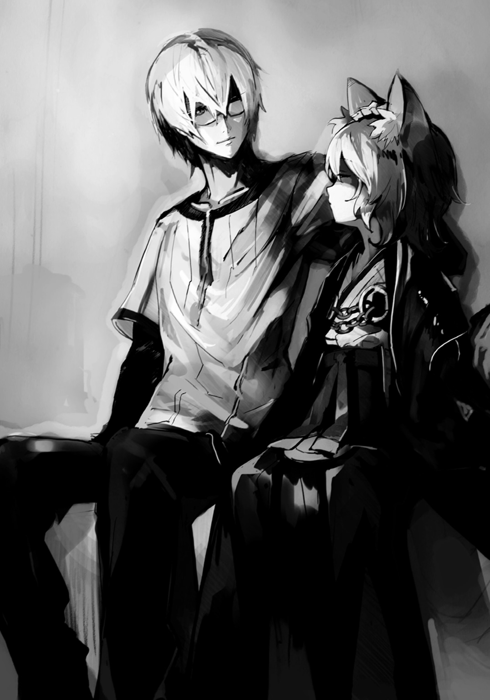
「......なぁユニ。その、お前が共に歩くって言った広い世界は、そういうことなのか？ その陣を追うことが......」
「んぅ......そういうわけではない。ボクは親族皆陣士の一族じゃからの。陣の力、陣士としての生き方を教えてやれると思ったのじゃ。陣士にとって田舎の里や道場は......狭すぎる」
仕事や遊び、何ら目的を持たずとも、多くの陣士は自然と怖い物知らずで世界を回るのだという。まるで若者が力を持て余しているかのように、旅に出るものなのだそうだ。
「逆を言えば、今の世、陣士でもなければ行けぬ極地も数多いからの。......世界には大勢の人がおり、いろんな考えや物が溢れておる。そんな広い世界を共に回れればと......そう思ったのじゃ。これも、旅に出ている姉さん達の受け売りじゃがの。じゃが、その教えを受けたボクについてくるのなら、それらを体験させてやれる自信はある」
ユニは一度考えるみたいに俯いた後、何かを決めたような真剣な目で俺を見る。
「......助けに来てくれた時、正直、心が震えた。何の得もないというのに、息を切らせて駆けつけ、助けてもらえるというのは......嬉しいものなんじゃな。知らなかった。......じゃから、というのはおかしいが......そう、今は、おぬしが府津羅であろうがなかろうが、関係なしじゃ」
ユニは大きく息を吸うと、声に力を込めた。
「ボクと組むと面倒もかなり多いと思う。じゃが......アルク、おぬしとパートナーになりたい」
ユニが俺を見ている。何かを期待するような、そんな目で。
そんな目をしなくても......わかっているよ。ユニ。
「......わかった、ユニ。組もう。......いや、俺と組んでほしい」
「うむ！ 陣士になるのじゃ、アルク。ボクと一緒に」
そうして、俺達は一度隣の相手と顔を見合わせ、笑みを作った。少女のような、少年のような、子犬のような、子猫のような......幼い子供のような、そんな笑みをユニは見せてくれる。
そして......吹き出して、二人で笑った。
二人共に、初めて会話した時のままに、言葉を紡いだせいだ。
「なかなかやるのぅ、アルク。ただの根暗というわけではないようじゃ」
「ユニこそ、よくすぐに応じたな。やるじゃないか」
一頻り笑い合った後、沈黙が俺達を包む。
夕飯前の商業区からの喧騒、眼下の森から鳥達の今日最後のざわめきだけが、聞こえる。
俺は自然とユニの頭に手をやり、その耳と共にクセッ毛を撫でた。
風が、吹く。冷たくも暑くもない、撫でるような心地良い風だった。
かすかにユニの香りが俺の鼻腔を擽る。ハーブのような、それ。
香水でも使っているのかと問うと、そういわけではないらしい。地元ではよく使われているという、薬草を漬けた液で髪を洗っているせいらしい。
そこいらのものよりずっと質がいいのだと自慢げに語るユニは体を寄せて、髪を見せてくる。
それで......何となく、緊張してしまう。別にユニの頭を見たところで何がどうというわけでもないのだけれど......近くに寄られると彼の上着、その裂けた箇所から素肌というか鳩胸が見え......何か、というか、何故か、焦る。
夕日の中ではかろうじてしか認識出来ないほどに、淡い、薄紅色のものが若干見え隠れしているわけなのだけれど......ここで変に意識したら負けな気がした。
いや、だって、ユニ自身が男だって言ったわけだし、それは信じるべきだろう。
さっきユニがミウラに傷口を治してもらう時は木陰に隠れていたり、鳩胸と呼ぶには若干何か違うような気がしなくもないが......ともかく、パートナーなのだ。信じよう。
う、うん、わかった。と俺は口にしてユニの体から少し離れる。
「......その、なんじゃ。アルク、明日の決勝......本当にいいのか？ ボクは自分の使命のためにも勝ちに行く。それに......もしかすると浜菊は〈鵺〉の陣を持っているやもしれん。そうなると相当な戦いを強いられもするじゃろう」
「いいさ。俺の剣は鵺殺しに関してだけは自信がある。それに......決めたんだ。お前と陣士になるって。......だから、実家がどうなろうと知ったことじゃない......って、わけじゃないけど、でも、兄さんは俺の背を押してくれたんだ。......行けってさ。なら、実家のことを気にせずに真っ直ぐに、自分が目指した陣士になるべきだとも思う」
結局兄を取っておらんか？ と首を傾げられたので、俺は、そうなっちゃうかな？ と同じように首を傾げ......そしてまた、二人して、笑った。
「うむ、やっぱりすっきりしたの。今のアルクの方がボクは好きじゃ」
ありがとう、と俺は返した。......そんな言葉が、すんなり出てきたことに驚きつつ。
「......フム。まぁ、だからというわけではないのじゃが......一応、提案があるんじゃ。うまくすれば、ボクらは陣士になれるし、府津羅家にも被害は及ばぬと思う。......じゃが、おぬしの意にはそぐわんやもしれん」
ユニはしばらく俯き、二〇メートル下の地面を見つめていたものの......覚悟を決めたように独り、うん、と頷く。彼は俺を真っ直ぐに見つめた。
「明日の試合中......浜菊憐を殺す」
４
朝日の差し込む部屋で、姿見に映る自分の姿はどこか滑稽に見えた。
毒を打ち、故郷を出、一カ月を超える旅をし、そしてそこでなおも毒を受け入れ続け、ひたすらに勉学に打ち込み、そして......さらなる毒を体に入れ、焼き鏝を押し当てた。
自分の肉が焼ける臭いを嗅ぎながら、これも全ては......と歯を喰い縛った。適性が高いとされても一〇日は立つことが出来なかった。まともに歩けるようになったのは二週間後である。
それらの苦しみを経て、ついに、陣の力を得たのだ。戦闘では十分に己の優秀さを見せつけることも出来た。自分はもうすぐ正式な陣士になる。それを誇示するように、今のように、いつだって制服を纏っていた。それが......今は酷く滑稽に思える。
誰に見せていたというのだ。誰に自分は陣士になると伝えようとしていたのだ。
鏡の中の小娘が涙を流していた。情けない女だと、浜菊憐は思う。それが自分ではなく、他人であるかのように、そう思った。
「所詮......何をしても、無駄だったということかな」
適性が高いとしても、優秀な結果を出しても、陣士になれるとしても......どんなに頑張っても、認めてはくれなかった。結局、自分はそういう存在でしかないのか。
「お嬢様、そろそろお時間かと」
涙を拭って振り返れば、メイド服を新しくした白妙が立っていた。鼻の傷には絆創膏。横一文字に斬られた前髪はさすがにどうしようもなかったようだ。手には、大薙刀。
「鉄心の拵えはありませんが......今のわたくしめの体にはこれが適正のようですので」
「......ねぇ、菊。教えて。あなたは最初からこうなるのがわかっていたの？ お父様の考えは何をしても変わるわけがない、と」
「お手紙を拝読しておりませんので、何とも申し上げられません」
答えがない、わからない質問には無言で通す。それが彼女だった。答えたということは――。
浜菊は自嘲しながら、家を出、街道を歩んだ。白妙は黙って後ろをついてくる。
「噓がヘタね、菊。......こうなるだろうとはわかっていた、というわけか。なら、今もなお、こうしてあたしに寄り添ってくれるのは、お父様の命だから？」
「......いえ、わたくしの意思です。たとえどのような場所であろうと、どのような事態に陥ろうとも、生涯お嬢様のお傍にいると」
「誰のために？」
「わたくし自身の矜恃と、お嬢様のために。何故なら――」
白妙は胎内にいる時から浜菊家に仕えることが決まっていて、生後すぐに浜菊家の屋敷で召使い達に育てられていた。浜菊家に仕えるためだけの哀れな人生とも言える。けれど......。
浜菊憐が生まれ、親族と医者以外で最初に会ったのは幼い彼女だった。
人は、赤子の頃の記憶など持てるわけがないという。
浜菊も、恐らくは夢だと思っている。けれど......朦朧とした、白濁したといってもいい、そんな世界で、浜菊は幼い少女に手を伸ばしたのをかすかに覚えていた。
......その前髪の長い少女がそっと、自分の手を握ってくれたことも。
今ならわかる。それは、自分が最初に感じた人の温もりだったのだと。
そしてそれは女児が生まれて落胆する父や母達とは違う、本当に自分の命を喜んでくれている......そんな祝福の温もりだったのだと、わかった。
だから、きっと、覚えているのだ。夢じゃない、そう思う。
「わたくしは――」
「――あたしのパートナーだから......でしょ？」
返事など期待はしなかった。そうであってほしいという祈りのようなものでしかない。
もはや、浜菊にはそれしか縋るものがないのだ。
さぁ、行こう。陣士の資格を懸けた戦いへ。
勝っても負けても、恐らく浜菊憐にとって最後になる戦いへ――。
「......はい」
その声に、浜菊は足を止めた。震えそうな気持ちで、振り返れば......城郭内の静かな住宅街、朝日が照らす石畳、そこに佇む白妙が、微笑んでいた。
わからない、意味のない質問は無言で通す。答えるとすればそれは噓か、もしくは――。
「お嬢様にそう思っていただけるのなら......〝はい〟と、喜んで返答させていただきます」
優しげな、それでいてまるで心の底から嬉しいプレゼントを貰った少女のような......そんな微笑みを浮かべていた。こんな笑い方が出来る女だったのだと、浜菊は初めて知った。
「......ありがとう。行こう、菊」
浜菊はまた、前を向く。足を進める。決勝戦が行われる会場へと進んでいく。
「はい、お嬢様。絶対に勝って、今期一番の陣士になりましょう。その証明をきちんとすれば、必ずやお父上も諦めてくれるはずです。ですから、お嬢様――」
憐でいい。浜菊はまた溢れ出した涙を拭いながら、そう口にした。
○
対アカ・うらら戦で使用し、最終決戦の舞台ともなるこの森は人工のものだと聞いていたが......日中の明るい中でよく見ると、何とはなしにそれを察することが出来た。
普通の木々に比べると不自然に生気がなく、どこか乾いている。
ユニに言わせると、陣の力で促成栽培された影響らしい。急激に新陳代謝を行わせて成長させるので、至るところに無理が出るのだそうだ。また、地中の栄養や水分を一気に吸い上げるので、本来は雨の時などに使用するのがいいらしいが......少なくともここ二週間はまとまった雨は降っておらず、地面も木々も乾いている。
うららが容易く大木を引っこ抜けていたのも、そのおかげかもしれない。
政略結婚？ 木の根に腰掛け、口周りをみたらしとあんこで汚すユニに俺は訊き直した。
俺の有り金全てを使って買った十数本の団子を物の見事に全て平らげると、締めに水筒から注いだ温かい緑茶を口にし、ユニはホッと息を吐いた。
「うむ。......手紙はそんな内容じゃった。どこぞの国の政治家じゃったか何だかのところに来年には嫁ぐのはもう決まったことだとか何とか」
何だそれ？ と俺は首を捻る。陣士になることと政略結婚がどう結びつくというのだろう。
「はっきりとは書かれておらんかったが、浜菊はそれに逆らっておるようじゃ。陣の力さえあれば家業の役に立てるし、何より陣士を妻に迎えようとするはずがないだろう、と前の手紙か何かで書いたようでの。......じゃが、父親の方はとにかく戻ってこい、駄々をこねるだけ無駄だの一点張りのようじゃ」
浜菊家は世界を股にかける大商人の家系だ。その舵取りは長兄が担い、それを弟達が支援する......そんな感じだった気はするけれど......確かによくよく考えてみると浜菊家では、嫁いできた者以外で浜菊の名を持つ女性は憐しか見たことがなかった。......ということは、あの家系、まさか女が生まれると全てどこかに送り込んでいたのだろうか。
俺は浜菊の鋭い目つきを思い出す。......素直に親や家業の道具になる性格じゃないだろうな。
陣士になれなければ、確実に嫁に出されるだろう。なれたとしてもユニの言葉を信じるなら......怪しいものではある。だが、浜菊が諦めるとも思えない。
「......手紙に、〈鵺〉の陣のことは？」
「何も。父親は陣そのものについて、どうでもいい、というスタンスじゃったから、多分知らんと思う。もし浜菊が〈鵺〉の陣を入れたとすれば持っている者を探し出したか、あやつ自身が持っているかの......お？」
空の上に浮いていた八人の監査員がにわかに動きだす。
浜菊らがやってきたかと思ったが、そうではなく、罌粟とイリスの二人が現れたようだ。
「アルクとユニ。お前達のお友達が観戦したいとうるさいそうだ」
罌粟の凜とした声が降ってきた。......多分、うららとアカか、せいぜいソラだろうな。
何となくユニと顔を見合わせ、笑い合う。そういう人達がいてくれることが、嬉しかった。
「浜菊達も来たか。......罌粟様、始めます。監査員、散れ」
イリスの声で監査員が散り散りになり、いつもの常套句を一人が述べた。
そして......ごく自然に、当たり前のように決勝戦が――浜菊を殺すための戦いが、始まった。
「さてと、負けられないな。......もう俺は一文無しだし、勝たなきゃ故郷にも戻れない」
「戻らせぬよ。アルク、おぬしはボクの相方じゃ。共に陣士になり、世界を廻ろう。約束した以上、嫌でもボクの使命に付き合ってもらうからの。......何より、団子じゃ。謝罪があれでは全然足りぬ。ボクの腹は煮えくり返ったままじゃ」
ニヤリと笑うユニに、俺も笑顔で返しつつ、彼の頭を撫でる。
んっ、と少し呻きつつ、またユニは瞼を閉じ俺を見上げ、あの顔をした。
「......さて、どこから来るんじゃろう？ ドームと違って、来る方角がわからんの」
「向こうはそういう駆け引きをする気はないようだぞ。堂々と真っ直ぐ、街の方角から来てる」
俺が言うなり、森に浜菊の声が響いた。
「府津羅、こっちよ。来なさい」
声に従い進んでいくと、森が開けた。というより、うららが木々を引き抜きまくったせいで微妙に広場のようになっているそこに、二人は立っていた。浜菊は相変わらずの制服にマント、そして白妙はおろしたてらしいメイド服に、新たな大薙刀を持っていた。
「菊が一騎打ち、つまりは前の戦いの再戦を所望しているの。......ちょうどあなたも刀を持っているようだし、それでどう？」
左腰に手を当てれば、そこには彼女の言う通りに刀が、ある。
使えるものは全て使い、考えられる最大限の工夫でもって、敵を倒せ......俺はその言葉の通りにするつもりだった。俺が使えるものが兄から仕込まれた剣術である以上、それを使うのだ。
......さらに言えば、俺とユニの陣はどうやっても今回は向いていない。浜菊に家の力を使わせないために、ユニが提案したのが彼女の殺害。浜菊を殺せば借金を盾にどうこうしろと家に言う者はいなくなる。それも試合の最中であれば、仮に問題になったとしてもイリスを始めとする総本山上層部へと責任が行く。――だから、殺す。しかし監査員がいる以上、勝敗がついたと判断した段階で試合を止められることを考えるに......即死を狙わなくてはならなかった。
俺は一度ユニと視線を交わらせると、深呼吸し、歩きだす。
白妙もまた腕を組む浜菊の脇を抜け、一人、前へ出る。
まるで森の広場こそが試合会場かのように、互いに介添人を背にして、一歩一歩進んでいく。
俺はこれから人を斬るのだ。そう思うと普段とは違う感覚が胸に湧き起こりそうになる。
だが、マドカと視線を交わした時ほどの肌のざわつき、体の芯が震える興奮は、やはりない。まだ刀を抜いていないからかとも思ったのだけれど......そうではなさそうだった。
先に足を止めたのは白妙。彼女は薙刀を掲げて、やや深めに構える。......その姿に、何かしらの策略があるのだと知れた。彼女の目には前回感じたギリギリの緊張感が、ない。焦りも怯えもない。わずかに殺気にも似たやる気を漂わせるだけだ。以前ならそれでも良かったのだろうが、前髪を切り落としたせいでか、彼女の心情はわずかばかり瞳から外に漏れていた。
俺はそこに何ら緊張感もなく、歩みを進めていく。柄に手をかけたりもせず、ただ普通に歩く。全ての感情は鞘の中に抑え込んだ。そして......彼我の距離約五メートルに迫った時、前に出した右足が地に着く。そこで――動いた。その右足を地に喰らいつかせ、身を低くくし、大きく左足を前へ。地面に突き刺すように左足の靴底を腐葉土に埋め込ませると、体を引っ張る。足首、膝、足の付け根、それぞれの関節が唸りを上げるほどに駆動。五メートルの距離が消失。腰を捻り、左右の手は鞘と柄へ。右足が前へ出ると共に......抜き打ち。放つ。
刃が奔った瞬間、首を飛ばす未来が見えた。だが......。
「足が、なに!?」
全て完璧に決まっていた。白妙は何らかの陣を手元に発現させていたものの、それが発動へ移る前段階で俺の刃は彼女の喉元に到達していた。斬り飛ばした。......そう、思った。
だが、刃の奔りが......直前で鈍ったのだ。
刃と共に大きく前へと出した右足が俺の想像を超える早いタイミングで、地に落ちたのだ。そのため抜き撃ちの速度が急激に落ち、刃筋が鈍った。
白妙、背後に仰け反り、首筋に赤い線を描くだけでかわしている。そして彼女の手元で発現していた正体不明の陣が発動し、俺の背後で何かが風を鳴らした。
全力を使っていたが故に、体勢が崩れると立て直せない。俺は残心とも言えない、剣を放ったままの無様な体勢で体を硬直させてしまった。焦る。汗が噴き出る。
だが、それは白妙も同じようだ。彼女もまた後ろに倒れ、慌てて体勢を立て直すだけで斬りかかってくる余裕はない。彼女の目には驚きが強く浮かんでいた。
一拍の後、互いに後ろに飛び、大きく距離を取る。わずかに俺の呼吸が乱れている。
白妙をやり損ねたというより、自分が技をしくじったことの方の衝撃が大きかった。
「腐っても府津羅......居合いはあらかじめ警戒すべきだったか。危なかった」
腕を組んでいる浜菊からそんな声が漏れたのを俺の耳はかすかに捉えた。
白妙と俺は互いに冷や汗を浮かべつつ、構えを直す。時間を置くと自分のミスに意識が引きずられそうだったので、俺は即座に斬りかかった。白妙、大きく下がりながら薙刀を左右に振り、その長い柄の先の刃で刀を払うようにする。それを剣の切っ先で払い落とし、距離を詰めようとするのだが......やはり、白妙はひたすら下がりに下がる。何かを見計らっているのか。
白妙が後方へ跳ぶと上段でかなりしっかりした構えに直す。勝負をかける気のように見えるが、何か怪しい。だが俺はあえてそれに乗るように、下段に構え、一気に距離を詰めた。
白妙、振り下ろす。俺は振り上げる。彼我の距離、二メートル未満。刀の間合い。勝てる。......そう思った。確信だった。
「陣じゃ!! よけろ!!」
ユニの声。しかし、陣の介在する余地など、どこにもないはずだった。
白妙の振り下ろす薙刀の近く――彼女の手元に二つの陣が重なって発現している。だが、それが発動に移る前に白妙の細い体を俺のナマクラは斬り裂く――と、思えた。だが......。
――ドクンっ。
バカな!? 心の中で叫んだ。足の下......地面が、脈打ったのだ。ドクンというだけの、わずかな脈動ではあったが、俺のバランスを崩すのには十分だった。斬り上げに力が入らず、また、バランスを取り戻そうと腕を縮めてしまう。斬れば、斬れる。だが、遅い、力も弱い。確実に、斬られもする。――これでは殺せない。深手の相打ち。浜菊を殺せない。
俺は舌打ちと共に、振り上げる剣を攻撃としてではなく、頭上から来る薙刀を受けるのに使った。薙刀の重い一撃を受け――られない！
背中に衝撃。背後から錆びた刃で斬られたような痛み。血が噴き出た。だが、薙刀は頭上でしっかりと受け止めている。
......陣の力か。
「菊、押し込みなさい！」
浜菊の声。うるさい、と俺は心の中で言うと、頭上の薙刀を押しやりつつ、白妙の腹部に蹴りを放って彼女を吹っ飛ばす。それと共に、俺は後方へ転がり、下がる。
「下がれアルク！ 立て直すのじゃ！」
火炎瓶が俺と白妙の間に投げ込まれ、炎が上がる。
俺は即座に陣を発動。薙刀を再び構えて今一度迫らんとする白妙の目前に炎の壁を作った。
背中の痛みを堪えつつ、俺は広場を離れ、ユニが手招きしている森の中へと逃げ込んだ。
傷を見せろ、とユニはかなり森の深くまで逃げ込んでから俺の背を見やる。
うっ、と彼が顔を顰めたのが気配だけでわかった。
「大丈夫だ、ユニ。戦える。......しかし何故だ。何故受けたはずなのに俺は喰らってるんだ」
「......酷いの。三本、肩から腰にかけてじゃ。まるで熊の......あっ」
振り返ると、ユニは耳と尻尾をピンと伸ばして目を見開いていた。
「そうか、白妙が使ってた陣は〈爪〉か？ 重ねていたのは〈気〉かそこらじゃろう。......それを薙刀を振るうのと同時に使うことで、目眩ましにしていたんじゃな。思い出せアルク。昨日、おぬしが急にやられだした時、白妙は回転しながら薙刀を使い始めたじゃろ」
そこまで言われてようやくわかった。......つまり、昨日の白妙はあのままでは勝てないとして陣を使ったのだ。それを悟らせないようにと体を回転させ、陣の発現を隠していたのだろう。
あの余裕のなさは、そういうことだったのか。命の危機である以上は使わざるを得ない、だが、街外れの森とはいえ、商業区で他人に作用する陣を使うことは糾弾されるべきものだからと隠して使ったのだ。
「大薙刀は囮、本命は陣による攻撃じゃ」
「待てユニ、それじゃあの地面を脈動させたのは何だ......？」
「地面......？ 後ろから見てる限りは別に何も......。浜菊も腕を組んだまま微動だにしておらんかったし、陣の発現は何も見えなかったぞ」
俺は、自分の足の下が間違いなく脈動した、その前の居合いの時も踏み込みの足がこちらが考えているよりも早く地面に着いてしまって失敗したのだと告げた。
「アルクが自分のミスを相手のせいだとしたいというわけでないというのなら――」
おい、と俺はユニの耳を摘み上げる。
「うぐっ。......ボクらはあらかじめ油の瓶や革袋を埋設したわけじゃが......向こうは向こうですでに何かを地面の下に仕込んで......。いや、でも陣を発動しているのは白妙だけじゃし......」
「......陣を発動しなくても、動くんじゃないのか。......鵺なら」
俺の言葉に、ユニは目を見開いた。
彼の話からすると〈鵺〉の陣は鵺を生み出すものだという。
俺の〈炎〉は一時的に炎を制御できるも、一度手綱を離せばただの炎と同じで勝手に燃え盛る。それと同じで、〈鵺〉の陣で生み出した鵺は放っておけば勝手に生きていこうとするんじゃないのか。そうじゃなかったら各地にいる鵺の説明がつかない。
俺とユニは自然と足の下――地面を見下ろしていた。この土の下で化け物が蠢いている可能性があるというのは、形容しがたい恐ろしさがあった。
あの、一回戦で見せたドームを破壊するほどの巨大な龍の影......それを考えるに、空中にいる虫を飛び上がって喰らう魚のように、一口で呑み込まれる可能性がどうしても頭を過る。
いくら鵺との戦いに慣れているとはいえ、さすがにあそこまで巨大なものを相手にしたことはなかった。そうでなくても大きな鵺を相手にする時は、俺は二メートルに及ぶ野太刀を背負うのだけれど......今あるのは少々長めの打刀だけで......ん？
――ドクン......。
俺とユニは足の下のその脈動に、顔を見合わせ......固まった。
勘違いじゃない。紛れもなく今、靴の下で動きがあった。それを俺達は互いに確認し合った。
「来るぞ、アルク!!」
俺とユニを分けるように、土が盛り上がる。俺達は一斉にそれぞれ違う方向へと飛び退った。
そこに飛び来る白妙。飛び退った俺よりもずっと高い位置――上空から薙刀を大きく振りかぶりつつ、迫る――！
空中で抜刀し、雄叫びと共にこちらも斬り上げる。だがそれはただの斬り上げであり、技もクソもない。空中で刀と薙刀の刃がぶつかる。甲高い音が上がり、火花が弾ける。
散る赤と黄の光の中に、青白い光が混じった。白妙の陣が発動している。〈気〉と〈爪〉。俺の目の前の空間に三本筋の歪みが現れ、首を捻った俺の右肩が抉られ、血が噴き出した。
空中で互いの得物で押し合うようにして、俺達は距離を取る。
......そうか。白妙の大薙刀はただの囮や虚仮威しというわけでもないのだ。薙刀による物理的な一撃を受ければ陣のそれは受けもかわしもできず、陣の爪を防ぐなりかわそうとすれば今度は薙刀が来る。一刀で、二連撃。しかも二つの間合いを同時に攻めているのだ。
これは相当にキツイな。不意打ちか、懐に一気に飛び込むか、はたまたリーのように遠距離から仕掛けるぐらいしか思いつかない。
「アルク、聞け！ 陣を使うぞ！」
ユニは言葉と共に火炎瓶を白妙に向かって投げつけた。
白妙はそれを〈爪〉の陣で空中にあるうちに破壊する。空中で割られた瓶から油は飛び散り、地に落ちると共に一斉に燃え盛った。
俺もまた着地と同時に〈炎〉と〈波〉の陣を発現させ、炎が広がりつつある地面に手をかざす。炎が、蠢き、白妙に波として襲いかかる。
「この程度の炎で、何が出来るというのか......！」
白妙は空気の爪で近くの大木を伐り倒し、盛って迫っていた炎の波を押し潰さんとするのだが......そこに、俺は斬りかかった。倒れ行く巨木を飛び越え、白妙に肉薄。俺の背後で巨木が地面と炎を叩く轟音と震動。炎が水飛沫のように飛び散る中......振りかぶった刀を白妙へ。
大きく振った俺の一撃は薙刀の刃によって受けられる。――さすがに爪の攻撃は、なかった。
「炎と剣、これで手数は一緒というわけですか、府津羅！」
「一緒？ 違うね、手数は一つ――」
「――多い!!」
白妙の背後から、ユニが飛びかかる。白妙は焦りつつ振り向きざまに薙刀を振るうも、間に合わない。ユニは陣を発動させると即座に地面を転がり、横薙ぎに来た薙刀をかわし、距離を取る。その間に青い光の欠片は、白妙の体内に吸い込まれていった。
ユニは、陣を「使う」と言った。俺に〈炎〉の陣を使わせるのなら「使え」と言うだろう。そう考えればユニは自分の陣を使うつもりなのだと、それで知れた。そして彼の陣の間合いはせいぜい二メートルもない以上、白妙の手をこちらで封じておく必要があった。
考えてみれば、それだけのこと。でも、何故だろう。......誰かと共に戦うというのは、いい。そして少ないやり取りで意思が通じ合うというのも、不思議な心地良さがあった。
白妙は逃げるユニに手をかざすも、〈封〉がそれを許さない。彼女の陣は発現すらしない。
「なっ!? バカな、何故......!?」
「行け、アルク!!」
陣が封じられたことを理解出来ずに驚愕して固まる白妙に、俺は斬りかかった。慌てて薙刀で対処しようとするが、集中力を失った白妙など、もはや問題ではない。――捉えた。
見開いた白妙の目。そこに俺の刃が映り......そして、白妙の姿が、消えた。
代わりに俺の視界に現れ、ナマクラの一撃を弾き飛ばしたのは......凄まじい勢いで迫り上がる土の柱だった。
弾き飛ばされたのに加え、足下が蠢いたせいで、たまらず尻餅をつく。
白妙が乗る土の柱は木々の枝葉の間を抜け、十数メートルの高さにまで一気に伸びていた。
なんだ......これ......？
「女性一人に、男女二人がかりとは酷いものね。府津羅」
浜菊が森の中を散歩でもするかのように、ゆっくりと歩いていたが......やはり、陣を使っている気配はなかった。それなのに土の柱は俺に向かって倒れてくる。
ケツを持ち上げるのは間に合わないと判断し、横に転がってかわそうとするのだが、土の柱は倒れつつ途中で身を捻らせ、逃げた先へと追ってくる。泥にまみれようが傷に土が入ろうが構わず俺はひたすらに身を転がすが、土の柱はなおも追尾してくる。木々の枝葉を弾き飛ばし、木々そのものを押し倒しながらついてくる。
チィッ！ なんなんだ、これは。これは鵺なのか？ こんな土の塊みたいな鵺がいるものなのか。鵺が不定形の化け物とはいえ、もっと、その......ナマモノなんじゃないのか!?
「ボクは、女じゃない!!」
ユニの声が森に響いた時、俺を追っていた土の柱の動きが止まり......崩れていく。
ただの土の柱が倒れるのと同じように......唐突にバラバラと砕け、重力に引かれて地面へと崩れ落ちた。
俺が泥だらけで立ち上がり、眼鏡をかけ直せば......浜菊の横手で土の壁が迫り上がっており、そこに火がついていた。ユニが火炎瓶を投げ、それを浜菊が防いだのか。
「それがお前の陣か、浜菊！」
「あら、バレたか」
残念という様子もなく、彼女は言った。
「浜菊の陣は〈鵺〉じゃないのか......!?」
ユニがマッチで火炎瓶に火をつけつつ言うと、浜菊は訝しげな顔をしてユニを見やっていた。
「ヌエ......って、〈縫〉？ どこの誰に聞いたのか知らないけど、お生憎。そんな陣じゃない」
とぼけているのではなく、本当に〈鵺〉の陣ではないのかもしれない。
ユニと俺は思わず顔を見合わせた。
では......この地面の下を蠢いているものは一体何なのだ。白妙は陣を発現も発動もさせている気配はない。それでも......いや、発動はしているのか。先ほど俺を狙って倒れてきた土の柱は、ユニが攻撃を仕掛けた途端ただの土の塊となって崩れ落ちた。そう考えると......。
俺は白妙を乗せ、迫り上がった土の柱が出てきた場所を見る。あの土の柱に向かって、地面全体がすり鉢状に凹んでいる。......ということは......？
白妙が飛び移っていた木の上から飛び降りると、浜菊の前に着地し、薙刀を俺に向ける。
「......すみません、わたくしの陣が......」
「うん、いい。多分、あの耳ッ狐の陣は、そういうのなんでしょ」
「浜菊、お前の陣は......一体何だ？」
「なにそれ、素直に訊いたら教えると思う？ ってかさ、府津羅......アンタ、例の約束、忘れたわけじゃないでしょうね？ ......決勝戦としての建前はもう十分でしょ。イリスもこれだけやれば殺しはしないはず。そろそろ降参しなさい」
「......一応確認するけど......拒否して俺達が勝ったりしたら、どうする気だ？」
「お兄ちゃん達が路頭に迷うんじゃない？ 知らないけど。それにまぁ、あたし達が負けるとは......ん？ あっ、なに？ え？ ひょっとしてあの約束のこと？ あたしがアンタのケツの穴舐めるっていうアレ、今になって気になっちゃってるの？ ん？」
浜菊は挑発するようにペロリと舌で己の指先を舐めてみせるのだが......脅す材料があるからなのか、今の浜菊からは緊張感がほとんど感じられなかった。
そこまで俺達を雑魚だと思っているのか。......ならば、それはそれで......いい。
俺は二人に歩み寄りつつ、刀を鞘に収めると俯き、脱力して肩を落とした。
「はい、立派。ん～......そうやってお兄ちゃんのため、家のために自分を犠牲に出来るなんて、なんていい子ちゃんなんでしょ。尊敬しちゃうなー。見習わなきゃー。凄いすごーい」
小馬鹿に、というより、馬鹿にすることすら面倒臭そうに、浜菊は鼻で笑って言った。
「......やめろよ、浜菊」
「あら、傷ついちゃった？ ごめんねー。家のお荷物クンが悔し涙流しながらでも頑張ってる姿って、何だか感動しちゃってさ。少しでも家族のために役に立ちたいんだよね、わかるわかるー。......はぁ、ホント、馬鹿でクソで反吐が出そうなぐらい素敵だなぁって」
浜菊が吐き捨てるようにため息を吐いて、顔を俯かせる。瞼を閉じて......。
そこを、狙った。
「お前がそうだからか、浜菊？」
言葉と共に放つ、全力の抜き打ちである。それも狙いは白妙ではなく、その後ろにいる浜菊の首。彼女が瞼を開く前に斬り飛ばす、そのつもりの一撃だった。だが――読まれた。白妙に。
白妙、薙刀の石突で浜菊の胸を打って後方へぶっ飛ばし、俺の切っ先を空振らせた。だが、白妙を無視し、俺は二刀目を放たんとして浜菊へと距離を詰める。
浜菊、ぶっ飛びつつも何とか着地しようと地に足を着けるが数歩よろめく。――そこで、見えた。奴の、陣が。二つ重なっている。〈土〉と〈波〉。だが、その発現した場所は――。
「アイツ、足の裏に陣を入れたのか!?」
靴底に貼りつくようにして二つの陣が発現していたのだ。それで、わかった。何故浜菊の陣の発現が見えなかったのか。何故、アイツがゆっくりにしか歩かなかったのか。
余裕をかましてたわけじゃない。常に陣を発動できるよう足を地面につけていただけなのだ。
「殺すのじゃ、アルク!! 躊躇うな、今しかない!!」
ユニの言葉を背に受け、俺はさらに距離を詰める。
浜菊、目を見開き、腹を突かれた衝撃に口から血反吐を吹き出しつつ、陣の発現している靴底を地面へ。地面が轟音と共に同心円状に波打った。
だが、それが俺の足下に到達するより先に、こちらは刀を振り上げ、浜菊へと跳ぶ。
「舐めるな府津羅ァッ!!」
蠢いていた地面が、さらに動く。俺と浜菊の間に突如、土の壁が迫り上がる。
俺は土壁を鍔元近くで斬る。切っ先で浜菊の頭蓋を両断するつもりだったが、かわされた。
「そうか、殺しに来るのは予想してなかった、私もまだまだ甘かったか！ なら実力行使だ！ 死になよ、府津羅!!」
土壁を破った先で、浜菊が血反吐を垂らしながら叫んでいた。その彼女の足を中心にして地面の下から溢れ出る青白い光が、信じられないほどの広範囲に拡がっていく......。
●
止めますか？ とイリスに尋ねられたが、罌粟は眼下の戦いを見つめつつ手を軽く上げるだけで〝待て〟を命じた。
森の中で殺意を剝き出しにした浜菊を中心にして、辺り一帯の地面が青白く光っていた。
アルクが危機感を覚えたのか、出の速い突きを放つも、間に合わない。地面が、そしてそこに根を張っている森の木々が蠢き......浜菊とアルクの間に巨大な壁を形成するように、土が噴き上がった。〈土〉と〈波〉の陣の力だ。その壁の厚みこそ数メートルだが、幅は七、八〇メートルもあり、高さは罌粟達が浮遊する三〇メートルにも達していた。それはもはや城壁か何かのようですらある。
アルクは土壁に吸い寄せられる地面に足を取られ、そのまま十数メートルの高さにまで引きずり上げられ、ユニはその光景に目を見開き、腰を抜かしていた。白妙は、すでに逃げている。
「わずか三カ月で、これほどまでに。やはり適性では浜菊が誰よりも群を抜いていたか」
罌粟の呟きと共に、土壁が大波と化した。アルクを巻き込んだ巨大な土の壁は意思を持つが如く、そのままユニを呑み込まんと覆い被さるようにして前進。その姿はまさに海の波と同じだ。全てを呑み込み、全てを押し潰す。ただ、水よりもはるかに衝撃は激しいはずだ。
ユニ、立ち上がると共に土の波に向かって手をかざした。〈陣〉と〈封〉。それが砕け、発動する。何をしたいのかわからなかったが、全てが遅い。木々を伴う土の奔流がユニと共に辺りの森を喰らい、そして......土石流のようなそれが全てを平らげてしまった。
「勝負あったようですね。優勝は浜菊憐と白妙菊の二人ということで。......監査員、アルクとユニを発掘してやれ。あの様子なら比較的浅い位置にいるだろう。まだ生きているはずだ」
「......イリス、待て。まだ終わってはいない」
は？ と隣に浮いているイリスは片方の目で、不思議そうな顔をした。
「しかし仮に自力で這い出たとて、実力差は明らかですが......」
「お前は若いから知らないだろうが......府津羅の男ならば、ここからだ」
罌粟の膨大な記憶に点在する府津羅の男達。その彼らの記憶が、罌粟に信じさせる。
まだ、終わってなどいない。誰もが終わったと思う、そんなところから盛り返すだけの力を有する一族。それが、府津羅なのだ、と。
かつて出会った幾人もの府津羅の男達。アルクは若さ故か、彼らに見合うにはいささか物足りず、幾度も居合いでしくじる様子から、その剣も未熟なようだが......それでもその一族の末裔だというのならば、連綿と受け継がれた魂の力を発揮することだろう。府津羅の名を捨て、アルクなる陣士になってもなお、府津羅の男であると証明することだろう。ならばこそ......。
「この決勝......もう一山ある」
●
「先ほどは申し訳ありません。助けるためとはいえ石突を......思いの外、力が......」
「構わない。むしろ感謝してるから」
木々も土も石も何もかもをまぜこぜにした土石流が如き波で平らにした大地。
そこにはもう森はなく、人影も浜菊と白妙、二人の姿しかなかった。
浜菊は口の中に残っていた酸味を唾と共に吐き出すと、口元を拭い、石突で突かれた腹部をさすった。肋が三本、内臓の一部にも傷を負ったようだった。
そこまで力を込めねば府津羅の一撃はかわせなかったということなのだろう。酷い痛みを持っていたが、それがなければ首が飛んでいたのは浜菊にもわかっていた。
恐縮して頭を下げる菊の肩を叩き、上空に浮かぶ監査員達を見る。
「菊、そういえばあなたの陣、あの耳ッ狐が死んだとしたら、もう使えるはず。試してみて」
白妙は地面に向けて手を翳すと、陣を入れた手首を淡く光らせる。〈気〉〈爪〉が発現する。
「......やっぱり死んだ、か。人を殺したのは、なんだかんだいっても初めてだったかな。案外なんとも思わないものね」
きっとそれは、今それよりも大事なことがあるからなのだろう。これから自分は実家へと戻り、父に陣士になったことを告げ、自分が商売に有用な存在だと証明しなくてはならない。
それが出来なければ......ろくに知らぬ中年男にこの身を捧げねばならぬのだ。
それが浜菊家に生まれた女としての務め、そして、それこそ女に生まれた者に出来る、家に対して一番の貢献だとして......。
理解は出来る。納得は出来ない。
本当は父や兄達、そして弟と共に浜菊家の一人として世に出たかった。
しかしその願いは一四の誕生日に不可能なのだと知らされた。
中年の男に引き合わされ、それが数年後には夫になるのだと聞かされた時、自分の不遇を嘆いた。こんな倍以上も年齢が離れ、初めて会うなり頭の先から足の先までまるで舐めるように見てきて、下品な笑みを浮かべるような......こんな見知らぬ男に抱かれるのなら死した方がましだと本気で思った。家で取り扱っていた陣士の試薬を口にしたのも、その時の気持ちに素直に従ったまでだった。癇癪だったのかもしれない。
けれど、試薬は死はおろか、苦しみすら与えてはくれなかった。
あれから二年。ただの女でないと、個として自立した人間であると訴えるように、陣士にならんとした。一国の軍をたった一人で相手に出来るとさえ言われる存在である。そんな陣士になれる資格を持つ己の有能さを証明してみせても......結局、何も変わらないのかもしれない。
〝裸の大剣〟と呼ばれる存在でもある陣士。圧倒的な攻撃力を有しながらも、それを扱う身はただの人間でしかないのだと彼らは言う。
遠くまで来たと、凄い何かになったような気はしていたが......所詮、自分は今までの浜菊憐として何ら変わりはないのかもしれない。巨大な土の波を自由に起こせるとしても......結局は、父の政略の駒に過ぎないのかもしれない。
相変わらず何もないのかもしれない。どんなに父や兄を敬愛していても、向こうは......。
「こうやって全力で何もかも吹っ飛ばしちゃうと、気持ちいいものね」
見上げた空は、広い。青い。どこまでも。
「......これでどうにかなるのかな。こんなことで......父は、私を......」
愛してくれるのだろうか。その最後の言葉だけは口には出さず、浜菊は胸に押しとどめた。
酷く哀しそうな顔をする白妙に、浜菊は首を傾げながら微笑んだ。白妙は首を振る。
「......我々は力を持ったことを証明いたしました。ですから、いっそこのまま陣士として――」
「そうね。〈飛〉の陣でも入れて鳥のように、自由に......。でも出来ない。あたしは所詮......浜菊家の女だもの。この体に流れる血は、与えられた名は、全ては......あの家のものだもの」
白妙が口を開きかけた。レ、と聞こえた。自分の名前を初めて彼女が呼んでくれるのかもしれない、そう思った鼓動の高鳴りは、唐突に起こった緊迫の事態が即座に覆い尽くした。
土が、盛り上がったのだ。浜菊達からはかなり離れている。だが、その土が盛り上がった後......地中から這い出てくる、影。
息を切らし、獣じみた顔をする、泥に塗れた男女二人の姿に浜菊達は数瞬、言葉を失った。
「馬鹿な......あの二人、あの波の下に潰されてなお......？」
「少し波の厚みが足りなかったかな。......ったく、やるじゃん、府津羅。あたしをそんなに殺したいか。それとも......何が何でもあたしにケツの穴を舐めてほしいのかな？ ん？」
浜菊は苦笑すると、足の裏に意識を集中させた。
「もしかしたらあの娘の方の陣の力かもしれません。わたくしめの陣を封じたのと同じように、今度は遣い手ではなく、陣の効果そのものを封じた可能性も」
もし、そうだとしたら波というよりは単に土が上から被さってきただけ、という形になるのかもしれない。だが、それがどうした、と浜菊は思う。土の下になるのは間違いない以上、次は波の厚みを増してやればいい。十分に生き埋めだ。
地中から這い出てきたアルクの顔は、どこか犬を思い出させる。
......真っ直ぐだった。真っ直ぐに浜菊を見ている。それは命令を与えられた忠犬のようだ。彼が持っていたまどろっこしさが失せている気がした。
思いの外、精悍な顔をした男なのだと、そこで浜菊は初めて知ったのだった。
○
「......手がボロボロじゃの、アルク。無茶をするからじゃ」
土から這い出るなり、ユニは泥と汗で汚れた顔のままで、そんなことを言った。
自分の手を見れば、三本ほど、指の爪が剝がれていた。土を掘ったんだ、仕方ない。
口の中の土を吐き出すと共にぼろ切れ然となった上着を捨てた。半裸である。
百メートルほど離れた場所で佇む浜菊と白妙に動きがあった。浜菊が前に出、そして......消えた。地面が迫り上がって動きだす。大地の波である。高さ一〇、厚みも今度はそれと同じぐらいはあるだろうか。幅に至っては一〇〇メートルにも及ぶ巨大なそれは、俺達が戦ってきた陣士の中で浜菊が最大適性を有しているのだとわからせるに十分だった。
大波が迫り上がるだけ迫り上がったところで、動きを止める。
「どうする～府津羅ぁ～。そっちの生意気な耳ッ狐と一緒に土下座するんならやめてあげるけど？ んー？」
地面に膝をついている俺とユニは、迫り上がった波とその向こうにいる浜菊達を睨む。
「ユニ、一応訊くけど、土下座する気があったりするか？」
「あると思うのならボクの相方としては失格じゃ」
だと思った。どのみち僕らは引き下がれないんだ。金もないし、ユニはここで足踏みをするわけにもいかない。......それはきっと浜菊も同じなのだろうけれど。
「......嫌だろうな。誰かのために、誰かのものになるなんて」
「浜菊か？ フン、おぬしとさほど変わらぬじゃろ。向こうは父、おぬしは兄じゃ。......しがらみに縛られてると思い込んで、しがみついておるだけ。......人は誰だって自由に生きていいはずじゃ。違うか、アルク？」
......もっと早くにユニとコンビを組みたかったよ。
そんなことを思わず言いそうになるも、照れと、状況がそれを許してくれなかった。
目の前に拡がっていた土の壁がわずかに動きだし、俺達を囲む気なのか、Ｕの字のようにゆっくりと狭まってくる。
「どーぉう？ 決断したなら、教えてー？ んー？ ......殺すか見逃すか選んであげるから」
きっと、浜菊の高飛車なところや、他人をバカにするのは、自信のなさから来ていたのだろう。他者より上だとしたかったのだ。自分は好き勝手に扱われる物じゃない、と、そういう気持ちから全ては来ていたのかもしれない。
もしユニの言葉通りに浜菊と俺が同じだとすれば、その違いは......俺は俯き、彼女は見上げたということだろう。立派だと、そう思う。自分の望みを叶えるために一歩でも二歩でも足を進めている。その姿は......俺にはどこか眩しく思えた。
「さて、どうしたもんじゃろうな。浜菊達の発動速度からすると陣を体に入れてから相当練習したはずじゃ。なれば、三カ月であれ以上のものを入れてるとは考えづらい。......お互いの手札はこれでもう全て開いたとみていいじゃろう」
浜菊〈土〉〈波〉、白妙〈気〉〈爪〉、俺〈炎〉〈波〉、ユニ〈陣〉〈封〉だ。
「近接戦闘は白妙、遠距離は浜菊......そうでありながら互いに援護し合える関係でもある。相性もバランスも良さそうだ」
ボクらもじゃ。ユニは鼻をこすりながら言った。......匂いがかなり強烈に来ている。
「アルク、おぬしの陣を使ってどうにかするしかないじゃろうな。まずは向こうが油断している間にこの土の壁から逃れ......あっ」
地面に座っていたユニが俺の手を摑み、それを支えに立ち上がろうとするのだが......立ち上がれなかった。それを見て、俺達は愕然としてしまう。
ユニの右足が、折れていた。袴の下がどうなっているのかはわからないが、ブーツの先があり得ない方向を向き、力がまったく入っていない。
「は、ははっ......折れたのは初めてじゃが、なんじゃ......案外に気づかないもんじゃな」
目を見開いたユニが混乱しているのか、膝の辺りを摑むと正しい位置に戻そうとするが、少し動かした途端に悲鳴が上がった。
先ほどまでは生き埋めから脱する際に、アドレナリンが出ていたのだろうが......。
「長考ウザっ！ ってことで時間切れね。府津羅と獣少女、土に還っちゃって」
土の壁が動きだす。俺は慌ててユニを肩に担ぎ上げ、走る。だが、そうすると彼の右足が揺れ、その都度、少女のような悲痛な声が上がった。だが、Ｕの字状の囲い、その上辺の部分が閉じようとしている以上、それを気にしている場合ではなかった。
俺達はかろうじて円形に囲まれる前に外へ脱出。背後では轟音を立てて花の蕾が閉じるようにして、土の壁が全てを呑み込んだのだった。
......状況はかなり悪い。
せめて森が残っていれば隠れることも出来ただろうが、薙ぎ払われて真っ平らにされた今......浜菊の攻撃は走ってかわす他ない。それなのに、ユニの足がこうなってしまっては......。
あの言葉が頭にちらつく。......降参。
それをするしかない。そうしなければ、俺はともかくユニは......だが。
「アルク、お、下ろせ。ボクはもう、限界じゃ。足が千切れそうじゃ」
背後では確実に殺すためなのか、地面が渦潮のように荒れくるっていた。
身を低くしてさえいれば、あれが収まるまでは浜菊達からこちらは見えない......はず。
ユニを地面に下ろすと彼女は全身を湿らすほどに発汗し、痛みにボロボロと涙を流していた。
......だが、彼の黄金の瞳はまだ浜菊達の方を見ている。
「ユニ、もう限界だ。ギブアップしよう。殺されるぞ」
「それはしないと言ったじゃろ。ボクらは陣士になるしかないんじゃ」
その真っ直ぐな、どこにも迷いのないユニの言葉に、俺は反射的に口を開いていた。
「約束する、ユニ。たとえ陣士になれなくても、お前の使命は必ず一緒に――」
当たり前に出てきたその言葉に、俺自身が驚いた。
家のしがらみを抜けるため、兄を越えるために陣士になろうとしていたのに......俺は......。
濡れた黄金の瞳が、俺を見上げる。ユニが、俺の次の言葉を待っている。
まるで告白だった。経験したことはない。けれど、これはそういうものなのかもしれない。
胸が高鳴り、口から内臓が飛び出そうだ。そのくせして頭では、ユニと出会ってからの記憶がめまぐるしく思い出されていく。共に戦った気持ち良さ、一緒に摂った食事、俺を置いて去っていく背中、一緒に眺めた夕日......そして、朦朧とする俺に「パートナーになりたい」と言ってくれた、あの瞬間、あの喜び――。
それらを今一度嚙み締めた時、俺の口ははっきりとした言葉を紡いでいた。
「必ず一緒にやり遂げる。俺達は......陣士になれなくても、パートナーだ」
ユニは、泣きながらの笑顔を見せる。......納得してくれたのか。俺は空に浮かぶ監査員へ声を張り上げようと息を吸うのだが、ユニの左足のつま先が俺の臑を打つ。
「っぐぁ!? な、何だよ、何すんだよ！」
「まだじゃ......まだ、終わりではない。策はある。......アルク、おぬしがそこまでの覚悟を抱いてくれるんじゃったら、きっとでき――」
地鳴りを上げ、渦潮のように荒れくるっていた大地が急激に静かになり、波打っていた地面が平らになる。そしてそこを白妙を前に出しつつゆっくりと歩み来る、浜菊。
「あれれ～？ 何だ、逃げていたかぁ。それじゃ、今度は本気で――」
「アルク、ダグラスを使え！ 辺りを炎で包むのじゃ、時間を稼げ！」
俺は考えるより先に尻のポケットに入れていたダグラスを摑むと着火し、そのまま風上に向かって投げつけた。すると案の定......いや、予想以上の炎がボゥッと音を立てて噴き上がった。
事前に森の至る所に油の入った大量の瓶を隠してあったのだ。それが浜菊の陣のせいで割られ、土の波でかき回され......一帯に油がばらまかれ、気化していた。
盛る炎を操り、浜菊達と俺達の間にラインを引くように背の高い炎の壁を作る。
「策があるってのは、何だ!? ユニ、どうする気だ!?」
「対リー・シンスケ戦を思い出すのじゃ、アルク。......アレを、今度は意図的にやる。ボクの理論が正しければ、出来るはずじゃ」
その言葉に、俺は思わず目を見開く。
「わかっておる。おぬしには酷なことを強いる。嫌な過去を掘り返すのじゃ。心身共に、来るじゃろう。......じゃが、今のおぬしなら、ボクをパートナーだと決心してくれた今なら――!!」
鈍い音。地響きが起こる。そして地面が動きだし、俺の作った炎の壁と相対するように土が迫り上がっていた。
俺はユニから炎へと視線を移し、かざしている左手に力を入れる。
壁として止まっていた炎は再び動きだし、さらに十数メートルほど高さを増す。そして土の波を呑み込み、その向こうにいるであろう浜菊達に喰らいつく......はず！
「へぇ、やるじゃん。アンタ剣よりこっち向きだったんじゃない？ でも、ま、無駄だけど」
土の波が動きを止め、崩れ去る。だが、変わりに浜菊達の足下が......高い塔のように、土の柱が地中から盛り上がり、一気に二人を炎よりも高い位置へと押し上げた。その伸びが止まるなり、今度はそこを中心に、同心円状に、土の高波が次々に起こり、炎を押し潰していく。地面が次々にかき回され......炎は、殺された。油を含んだ土でも上から覆い潰されればそれで、消えてしまう。油があっても酸素がなければ炎は燃焼できないのだ。
しかし......時間は稼げている。
「ユニ。言いたいことはわかった。だが、仮にそれが成功したとしても......俺のナマクラが到達する前に、向こうが勘づいてしまえば、お前を......」
「もちろん、来るじゃろうな。原理はともかく、対処法はすぐに察するじゃろう。......じゃが」
ユニは目尻に溜まっていた涙を拭う。折れた足の骨が肉に突き刺さっているのかもしれない。
「大丈夫じゃ。一か八かじゃが、方法はある。......アルク一人を苦しませぬよ。ボクもまた、同じだけの代償を払うつもりじゃ。......苦楽を共にするのがパートナーじゃからの」
そう言って、彼はニッコリと笑う。きっと悲鳴を上げたくなるような痛みに襲われ、泣きたくなるぐらい辛く、死すら近くに感じているはずなのに......それでも、彼は笑顔を見せている。
八重歯を見せ、黄金の目を細め、安心させるように。俺より三つも年下で、ろくな鍛錬も積んだこともない、少女のような顔の小さな耳ッ狐のクセに......。
ユニは言う。次に浜菊の陣が襲ってきた時に勝負をかける、と。それが何を意味するのか、ユニの言葉と状況を考えれば......理解出来た。つまり、ユニは――。
「聞け、アルク。始めたら決して振り返るな。前だけを見ろ。何も考えるな。ただやるべきことをやればいい。前はおぬしの状態が状態じゃったから十数秒と持たずに倒れたが......今なら三分、いや五分かそこらは戦えると思う。ボクも、それぐらい踏ん張ってみせる」
「ユニ、でもそれじゃ......！ 仮に勝てたって、お前......!?」
「......約束したじゃろ。陣士になろう、と。そして、広い世界を共に、と。持ちかけた方がそれを裏切るのは最低じゃからの。これぐらい......。ボクのその後は運が決めるじゃろう」
ユニは荒い息のまま、左手の包帯を解いていくのだが......その手は、震えていた。
彼はそれでもなお、笑ってみせる。
「......まだまだ奢りの団子が喰い足りん。大丈夫じゃ。......うららほどではないが、これでも喰い意地は張っているほうじゃ。生き残ってみせるぞ」
全ての炎を土で押し潰し、再び地上に降り立った浜菊がパンパンと手を叩く。
「はいはい頑張りもここまで。それじゃ......そろそろ死のうか」
彼女の足下を中心に青白い光が土の中に拡がり、辺り一帯を照らし出す。これまでよりもはるかに力が込められているせいか、大量の光が漏れているのだ。
そして、ユニの左手からも同色の光が生まれる。
その光を見た時、不思議と俺もまた、覚悟が出来ている自分を意識した。迷いはある。だが、もうやるしかないのだ。......俺が何を言ってもユニはやるだろう。ならば......やるしかない。
「お互い覚悟の時間じゃ。行くぞ。......浜菊を斬れ、アルク」
「あぁ。そうだな。そうしよう。そして......俺達は、陣士になるんだ。死ぬなよ、ユニ。絶対だ。初俸給で買う山積みの団子が待ってるぞ」
●
一〇〇メートルほど離れているとはいえ、ユニが陣を発現させたのはわかった。何が来るというのか。無効化の陣をかけても無駄なほど、今度は厚みを持たせた土の波だというのに。
浜菊は疑問を抱きながらも、己の陣を発動させる。巨大な土の波を発生させようとした......まさに、その時だった。ユニは、その光る左手をアルクの左肩に置いたのだ。
光の欠片がアルクの体に吸い込まれる――が、直後浜菊自身の陣によって作られた土の波がそれらの光景を隠してしまう。
「あの耳ッ狐、なんで相方に陣かけてんの......？」
思わず呟いたその時、隣の白妙が何かに気づいてハッとし、薙刀を構えながら前へ出た。
それを見て、浜菊も気づく。土と炎と草木と石と......それらをかき回した荒れ地に流れる風。そこに何かが混じっている。ずっと漂っていた油の匂いの類ではない。
それは、震えが来るほどの――覇気。
「下がってください！ ......来ます!!」
白妙が声を上げた時、土の波は府津羅達のいた場所へと襲いかかっていた。
浜菊は勝ったと思った。だが、そう思った次の瞬間には、目を疑った。
波の一部が、爆発するが如くにぶち破られたのだ。
そして、真っ直ぐに、凄まじい速度で何かが――来る。
「ふっ、府津羅!?」
それは信じられないような速度だった。人間の動きを超えている。
わけのわからない恐怖を覚えつつ、浜菊、第一波を急いで崩し、第二波を即座に放ち、走り来た府津羅を呑み込んだ――かに見えた。無意識に波は高さを犠牲にし、より厚みを増したものを放ったのだが......府津羅は土の波を今度は駆け上り、その頂上から跳び、さらに迫る。
そこに来て浜菊の目にもはっきりと見えた。
府津羅の顔に、いや、肌という肌に数え切れない傷跡と痣があるのを。
昔見た彼そのままの、府津羅の出来損ないとして笑われていた......その時の彼の姿だった。
白妙が前に出る。〈気〉と〈爪〉の陣を発現させ、即座に発動出来る状態にしておいてから、薙刀を振りかぶった。
白妙の腕は正面からの一騎打ちならば、どんな武芸者とてそれを破ることは出来ない絶妙なるもの......そう浜菊は思っていた。
だが、府津羅は止まらない。振るわれた薙刀を容易く斬り飛ばし、発現する爪が迸るより先に白妙の脇を駆け抜けた。
そして白妙は鮮血を吹き上げながら、地面に倒れていく。
一刀で、大薙刀とその遣い手をも斬ったというのか。
浜菊は白妙の名を叫びながら、目の前に壁のような土の波を反射的に作った。
だが、それを何かが貫いてくる。刃。刀の切っ先。突き。そして血走った目。犬の目ではない。紛れもなく化け物の類。もはや人の身でありながら、人ではないのか。
......府津羅が、来る。
○
それは、俺はもちろん、特別な教育を積んだというユニすらも知らなかった〈封〉の陣の、もう一つの使い方だった。
〈封〉と〈陣〉の組み合わせは陣の遣い手か、はたまた発動した陣の効果を封じるものだとユニも俺も思っていた。だが、実際には陣そのものを封じる効果があったのだ。
そしてそれは......陣に吸い取られ続けていた俺の生命力の返還をも意味していた。
俺は府津羅の名を捨て、陣士になると決めた。その際に傷跡を捨てた。
陣を封じられたことで、俺はきっと......府津羅の剣士に戻っているのだ。
陣を使うために鍛え、蓄えた力を伴って。
体がおぞましいほどに軽い。力が溢れている。走ろうと思うより先に体が動き、走り抜けている。そして不思議なほどに湧き起こる、闘争心。
しかし、それと引き替えにするように、体が軋みを上げ続ける。
アカの〈速〉の陣と同じだ。体がついていけていない。エネルギーだけが溢れ、体中の細胞がそれを使い切れずに踠き苦しんでいるようだ。
有り余る力故に手応えを感じないままに斬り捨てた白妙をその場に残し、俺はひたすらに浜菊に迫った。目前に現れた土の波を突きの一撃でぶち破る。だが、そこに浜菊はいない。あるのは直径二〇メートルはあろうかという塔のような、土の柱。浜菊はその上。逃げやがった。
その柱は真上ではなく、俺から遠ざかるように四五度ほどの角度で斜め上に伸び続ける。
俺は、そこに飛び乗り、柱の側面を駆け上った。時間がない。
一気にケリをつけなければ、俺の体も、ユニも、持たない。時間がない。
「人を捨ててまであたしの命が欲しいか、府津羅!! そこまでして家を守りたいか!?」
柱の側面を走り昇る。
土だけではなく、折れた木々や俺の陣の残り火までをも巻き込んだその一本の道を、ただ、ひたすらに走る。
立ち塞がる邪魔なものは全て斬り飛ばした。
走る。何もかもを斬って、捨てて、走る、走る。
柱が急激に上向き始めた。俺を落とそうとしているのか。だが――！
「答えなさいよ、府津羅!!」
怯えを含む浜菊の言葉を聞いた時、兄の言葉が頭を過った。
――府津羅に、地に両手をつく無様な技はない。
うるさい。黙れ。俺は――！
「俺は......アルクだ!!」
俺は刀を口に咥え、両手を土の柱につく。犬のようにして柱を駆け上る。
無様であっても構わない。何でもいい。時間がない。
柱が伸びに伸びる。それは遠目からは地から湧き出し、空へと昇る、身をくねらせる龍のように見えるかもしれない。あの一回戦を終えた夜に俺達が見たのは、恐らくこれなのだろう。
その土くれで出来た龍の背を、俺は犬のように走り続ける。
監査員達の浮遊していた高さはとうに超え、すでに雲が近くなっていた。
そしてこの戦いの終わりもまた......。
●
白妙は膝をつき、肩から脇腹までに及んだ傷を押さえながら空を見上げていた。いや、空ではない。彼女が見上げたのは塔のような、土の柱だ。
それはまさに天と地を繫がんとするかのような勢いで土をかき集め、伸び続けている。
〈塔〉や〈棒〉の陣ではない。
狭い範囲で極めて高い波を作るというやり方で浜菊が会得した技だった。
そこを駆け上る化け物じみた府津羅の姿に白妙は危機感を抱く。このままでは浜菊憐は......。
何故府津羅があのような化け物に成り果てたのか。思いつくのは、ユニが陣を発動させたことだ。あれは一体何の陣だったのか。わからない。彼女が持っているのは力を封じる陣だと思っていた。しかし、府津羅はまるでその逆に......。
「何にせよ、ユニを殺せば......！」
白妙は傷口から血が噴き出すのも構わず、斬られた大薙刀の半分を持つと、立ち上がった。腹腔は破れてはいない。溢れ出るのは血だけだ。すぐには死なない。
探す。ユニを。あの目立つ耳と尻尾を有した少女を。だが......。
「いない、だと......!? 何故だ!? 森へ逃げ、いや、足に怪我をして......まさか、土の下か!?」
浜菊憐の放った土の波。それに、呑み込まれたのか。府津羅があれだけの力を使えるのなら共に脱出も出来たはずである。そうではなかったとしても前のように波に己の陣をかけて効力を抑えれば、もしかしたら這い出ることも出来たかもしれない。何故そうしなかっ――。
白妙はそこまで考え、理解した瞬間、愕然とした。
「勝つために......わざと生き埋めになったというのか......!?」
府津羅があの力を使えるようになった原因がユニにある以上、自分達は必ず彼女を狙うだろう。足が負傷して動けないなら尚更だ。
そこまで考え、ユニは土の下に自ら沈むことで位置を隠し、自分や浜菊からの攻撃を防ごうというのだ。
窒息の苦しみや己の命と引き替えに、少女は府津羅を信じ、勝ちを取りに行ったのだ。
立ちすくむ白妙の手から薙刀が落ち、甲高い音が上がった。
○
土の柱は山の頂上をはるかに越え、薄い雲の中。
地平線の彼方までを見渡せる世界に到達した時......俺はついに浜菊を間合いに捉えた。
一体どれほどの適性を有していたというのか。まだ一六の娘が、たった三カ月で、わずか数百秒足らずで山をも越える高さの土の柱を作り上げるこの力......。
俺はその平らになっていた塔の頂上を赤く染まった素足で踏みしめる。
左右の靴はとうの前に壊れ、地上へと落ちていた。皮が破け、肉が露出しているのだ。
直径二〇メートルの狭い円形のフィールドで、俺はナマクラを構える。
高度のせいか、白く霞がかった強風が吹きすさぶ。
そんな中、浜菊はその金髪をはためかせながら眉間に皺を寄せ、歯を喰い縛っていた。
かなり気温も下がっているが、それでも俺も彼女も、顎から滴る汗が止まらない。
「菊を、よくも......」
地面からトゲのように鋭利な土が飛び出してくるが、遅かった。トゲの形となる前の段階で土を吸い上げる動きがあるために、たやすく察せられる。
円形フィールドを横切る高さ二メートルほどの波。さすがにかわせず、これは斬り破った。だが、次々に来る。もはや単なる時間稼ぎ以上の何でもない。少しずつ、間合いを詰めていく。
「......わかってる。きっとあたしは、もう......ここで......。山や道場の権利云々が単なる脅しで本気じゃなかったって、今更言ったって、無理でしょ？ ......わかってる。......でも、それでも......いいかもね。あんな男の物になるぐらいなら、望みが叶わないなら、これでも、ね。......ただ、当たり前に一人の人間として生きていたいだけなのに......」
項垂れる浜菊の両目からぽろぽろと雫が零れていた。
「あんな家に生まれなかったら......男に生まれてたら......違ったのかな。府津羅、アンタも......そうでしょ？ あたしと同じように、家のしがらみが嫌で、逃げるように、最後の可能性にすがるように......どうしようもない流れに抵抗したくて、陣士に――」
土の波を斬り、進み、そして......俺は剣先を浜菊へと突きつける。
「しがらみなんかない。ただ、お前がしがみついてるだけだろって......ユニは、俺の相方は言ってくれたよ。実際、そうだったと思う。......お前の相方は何も言ってくれないのか？」
今なら......今だからこそ、言える。家が何だ、血が何だ、それがどうしたって。
......俺は俺だ。お前はお前だ。それ以上の何だっていうんだ。
兄に教えられたこの剣術も、傷跡も、痛みや苦しみに耐えられる〝強さ〟も、そして嚙み締めたユニとの喜びも......全部、俺なんだ。俺のものなんだ。
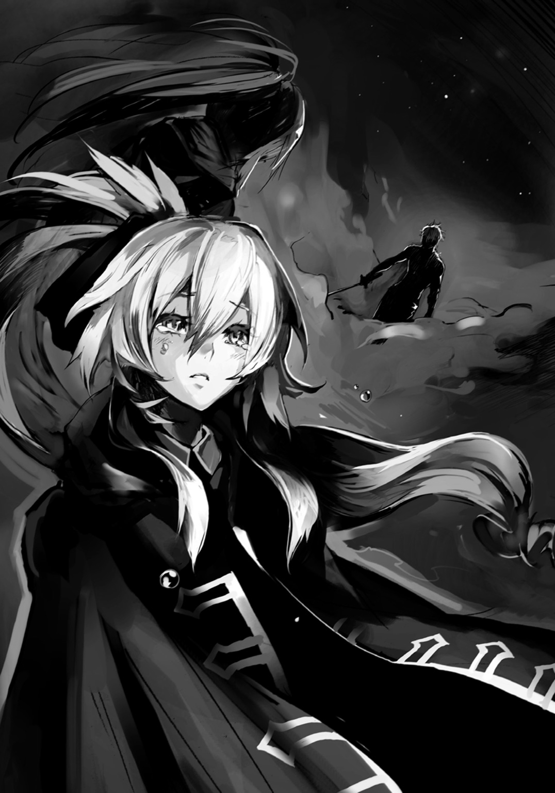
それを否定したって何も変わらない。だから、呑み込むしかない。
そして利用出来るというのなら都合良く存分に使ってやればいい。
それが裸の大剣、神々の力の執行者、森羅万象を操る命令を下せる者――陣士という、存在なんだ。
そうなろうとしたのはお前もだろ、浜菊――。
「......菊......」
再び浜菊が力なく顔を上げ、二つの潤む瞳が俺を捉える。
「一度でも、名前を呼んでほしかった......かもね。どうかな？ もう、わかんないや」
浜菊、再び瞼を閉じる。目尻からは涙が、口からは「殺しなさい」の言葉が漏れた。
俺はナマクラを振りかぶる。これから目の前の女を殺す......そう思った時、握った刀が異常なまでの重たさに感じられ、膝が震え始めた。
怯えなのか焦りなのかは、わからない。だが、それを認識するより先に、斬る。そう決めた。
だから俺は雄叫びを上げてナマクラを浜菊の頭頂部目掛けて振り下ろす。
その時、俺の腕から傷跡が消えていた。それが何を意味するのか、わかっている。
ユニが......死んだのだ。
●エピローグ 『そして......』
土の塔は燃え尽きた線香のように、ほろほろと脆くも崩れていった。
しかもその天辺にいたというのに、空中に投げ出されることなく、柔らかに地上に降りることが出来たのは見事という他なかった。
〈封〉の陣の効力が切れた俺の体は、まるで腐ったゴムの塊のようだ。
三回戦で偶発的にかけられた〈封〉により、俺の体は凄まじい力を発揮し、衝動にかられて無我夢中で敵二人を叩き伏せた。その間十数秒。......それでもその後はまともに動けなかった。
今は、五分以上使っていたのだ。もはやナマクラすら持っていられなかった。
地上に降りた俺は刀を捨て、地面を犬のように這い蹲った。そして、手を土の中へ差し込む。土を搔き出す。手当たり次第に。
ユニが、死んだ。だが、まだ死に立てのはずだった。
「監査員！ 勝負は終わった、ユニを掘り出してくれ！」
空から七人の監査員が降り立つも、彼らは何かを話し合うばかりで、陣を発動させようとはしていない。何をしているんだ！ と、俺が声を上げれば――。
「我々の持つ陣では、ユニを発掘出来ない。せめてある程度場所を......」
辺り一帯は浜菊がひっくり返し、かき回し、そして二〇〇〇メートルはあろうかという土の塔を作った際に地面を吸い集めたせいですり鉢状に凹んでおり......もはやユニがどの地点で生き埋めになったのか、そして沈んだユニの体がどこまで移動したのかが、わからないのだ。
「だったら手当たり次第に掘り返せよ！ お前らにだって手は二本あるだろうが!!」
「口を慎みたまえ。我々は監査員として陣士にならんとする若者の評価を下す立場に――」
顔をしかめる監査員に、腹の底から噴き上がるような殺意が湧き起こる。だが......。
「監査なんて大層な名前つけておきながら......まったく。役立たずって役職名に変えたら？」
そんな声が響いた時、地が光った。すり鉢状に凹んだエリア一帯を覆う......巨大な青白い光。
――陣の力。それらが砕けた時、辺り一帯が地鳴りを上げて、沸いた。
大地が波打っている。それはまさに荒れくるう海のように、数メートルの波があらゆる箇所で起こり、地面を搔き混ぜていく。
立っていた監査員達が声を上げる。全員が虚を突かれて転倒し、泥にまみれた。
そんな中、「見つけた」という声。見やれば数十メートル離れた場所に、汚れた毛の塊が......ユニの尻尾だ。俺は這い蹲ったままそこへ向かうと、顔を出している尻尾の周りを掘った。
何枚爪が剝がれようとも、関係なかった。
そうした先に、彼はいた。泥だらけの、ユニ。赤子のように身を丸め、陣を入れた左手を抱きしめるようにして。......左手だけは絶対に守ると言うかのように。
案の定、息も心音もない。口の中の土を出させると、彼の胸を両手で押す。心臓マッサージ。そして、気道を確保し、小ぶりな鼻を摘んで人工呼吸する。土の味が俺の口にも拡がる。そしてまた、心臓マッサージ。
「医者を呼んだ。蘇生は陣士では手に負えない。今しばらくの辛抱だ」
多分罌粟の声だろうというのはわかったが、俺は応じる余裕もなく蘇生を試み続ける。だが、反応がない。還ってこない。
「ユニ、死ぬな！ 俺達は陣士になるんだろう!? 世界を......いや、団子が待ってるって言っただろ!?」
反応がない。還ってこない。だが、まだだ。まだ......諦めるか！
「みたらしか!? あんこか!? 何だ、笹団子か!? ゴマもいいか!? 言えよ、ユニ！ お前が好きなのはどれだ!? 何が喰いたい!? なぁ......ユニッ!!」
俺は声を張り上げると共に、ユニの胸に叩きつけるように掌を押し込んだ。
その時、ユニの口から泥状の土が噴き出す。そして出る、咳。蘇生した。
ユニ！ 咳き込み、肺の中にあった土を吐き出し、朦朧とするユニの顔を俺は覗き込んだ。
「......アル、ク......勝った......のじゃな。勝負は......浜菊を殺し......なっ!?」
「あ、何だ、生きてるんだ。残念。で？ 地獄を見てきた気分は？ ん？ 言ってみ？」
俺の横で、赤い目でユニを見下ろしていたのは......浜菊憐である。
「ごめん、ユニ。......俺、ギブアップした」
それしかなかったのだ。
ユニの陣が途絶えたせいでボロボロの体の俺でも、浜菊を殺すことは出来ただろう。
だが、切っ先が彼女に触れる直前に俺は剣を捨て、頭を地にこすりつけたのだ。
殺せば、殺せる。勝てば、勝てる。だが......ユニは確実に助からない。監査員の見ていないはるか上空で殺したとしても、勝敗を見極められる人間が誰もいないのでは......意味がない。
最短で決着をつけるにはどうしたらいいのか。
あの一瞬では、俺には、一つしか思い至らなかった。
「だから殺さずに、降参を......か。バカな判断をしおってからに、これだからおぬしは......」
ごめん、と項垂れると、ユニは仰向けのままで、その左手を伸ばしてくる。頭を撫でられた。
「まったく。ただ......嬉しくはある。団子は買ってもらうからの」
当然だ、そう言おうと思ったが......不思議と声が出ず、苦笑してしまった。
よくよく考えるとコイツが蘇生したのも、団子の好みを訊いた時だったのだ。
「......あと、あの約束もじゃぞ」
――お前の使命は必ず一緒にやり遂げる。俺達は陣士になれなくても、パートナーだ。
あの、約束のことだと、少しばかり赤くなってそっぽを向くユニを見て、すぐにわかった。
俺は頷く。そこに、何ら迷いはなかった。
ふと、俺とユニの顔に影がかかる。見やれば、真上に浮かぶ、罌粟とイリスだった。
「勝負あり、だな。勝者、アルク・ユニ」
え？ と、俺とユニは二人を見上げる。イリスの言葉を罌粟が継いだ。
「たかだか高度二〇〇〇メートル程度で総本山の外に出たつもりか？ 甘いな。わらわ達の監視エリア内だ。アルクがギブアップするより一二秒ほど前に白妙菊が負けを宣言している」
その言葉に目を見開いたのは今度は浜菊だ。彼女は慌てて辺りを見渡し、一点を見つめる。
そして俺もまた......見つけた。やや離れた場所で監査員の一人に肩を支えられている、白妙菊の姿を。俺が斬った傷は応急的に塞がっているようだった。
「憐様！ ご無事で!!」
白妙が監査員から離れ、そして肉が抉れ、爪も剝がれた手で浜菊を抱きしめる。
白妙はきっと、土を掘り返したのだ。指先を犠牲にして必死に。
だが、ユニは見つからなかった。かといって土の塔の上にいる俺達をどうすることも出来ない以上......ギブアップを宣言する他なかったのだろう。
浜菊憐を、守るために。
「申し訳ありません。わたくしめには、もう、それしか......憐様をお守りする術が......」
浜菊が白妙の肩に顔を埋め、そして背に腕を回して、抱きしめ返す。ぎゅっと。
「いい。わかってる。全部、わかってる。だから......ありがと」
なぁ、浜菊。......俺もお前も、面倒な家に生まれた。
でも、家や親兄弟に恵まれなくても......俺達はきっと大丈夫だ。
生きたいように生きられる力と、そして......全てから解き放ってくれる相方が、俺達にはいるはずだから。
「勝負は決した。トーナメントはこれにて終了とする。......優勝者である、アルク及びユニよ......汝、裸の大剣となることを望むか？」
罌粟の最後の問いかけに、ユニは半身を起こすと、膝をついていた俺に寄りかかり、手を握った。俺もまた握り返し、そして――「「はい！」」と声を張り上げた。
「よろしい。二人を我らが同胞、陣士として迎え入れることを宣言する」
その瞬間、俺とユニは仮免ではない......今度こそ、本物の陣士となったのだった。
●
そこは石造りの広いドーム状の部屋。窓はなく、明かりは部屋の隅に置かれたランプだけが頼りだ。石で組まれた無骨な壁や天井ではあったが、床にはそれとは対照的に、豪奢な赤い絨毯が敷き詰められており、ランプの明かりを受ける様は床全体が燃えているかのようだった。
そこに巨大な円卓が一つと、大きな椅子が一つだけ。それに座るのはやせ細った老人。幾重にも纏った着物のせいで着膨れており、首から上の細さが余計に際立っていた。
「ほぅ、眠り姫の猟犬、対陣士戦特化陣士......人に仇なす陣士を狩る者達か。......あの女、同族狩りを始めて何をしようというのか」
老人がかすれた声で言うと、肩はおろか胸元近くまで着物をはだけさせた女が扇子で口元を隠すようにしながら、彼の横に立つ。
「我々烏のマネ......といったところでございましょう。大旦那様がお気になさるようなものではございませぬのでは？」
「ふむ。......千年かかってようやく己らの愚行を律しようとでもいうのか。そうであればまずは先に自らの首を絞めればいいものを。......あぁ、律しているという建前を用意することで、存在を赦されようとでもしているのかもしれんな」
「実に愚かな考えでございますなぁ。......どうでございましょう？ その犬、我々で狩ってみては？ 陣士を狩る陣士を、烏が啄むというのも面白うございましょう？」
「それはいい。彼奴らに無能さを嚙み締めさせるのに、実に程良い。うむ、程良いな。......若いのが府津羅の剣を学んでおったろう。確か双子の......」
「円と斛にございます。わたくしめが育ててきた者達の中でも個人技は最高峰の教え子と言えましょう。特に姉の円は、わたくしの十八番を継いでおります故......今後が楽しみかと。まだ、技術を伝えただけでどちらも初心でございますが」
「ほぅ、天稟を持つとされるお前が言うか......。程良い。どれ、その双子の顔を見せい」
女が手を叩き、二人の名を呼んだ。しかし応答はおろか、足音もせず、いつまで経っても二人は現れなかった。しばらくして、老人は傍らに立つ女を見上げた。
「大旦那様、申し訳ございませぬ。......未熟な二人にございます。お許しを」
「控えておらぬのなら、別に構わんが......」
女は口元を隠したまま、笑った。彼女の目線は円卓の向こう側である。
「いささか近くに寄りすぎでして、卓の陰で大旦那様からは見えませぬ。円、斛、立ちなさい」
すると、二人の若者が円卓の陰から湧いて出るように、一切の気配なく立ち上がった。
老人は烏らしからぬ快活な瞳をした弟と、透明に澄み切った瞳の姉の二人をまじまじと見つめると、深く頷いたのだった。
「......実に、程良い」
●
波の音が、いつも響いていた。
長髪の男は細身の剣を日課というよりは、クセとして磨き、油を塗る。そうしなければ潮風ですぐに錆が浮くのだ。
「この窓からの景色も飽きたな。......アレはいつになったら使えるのだ？」
長髪の男が室内を見渡せば、白い石造りの部屋で分厚い本を読んでいた男は顔を上げることもなく、鷹揚に応じた。
「まだまだ先だ。ずっと先ではないが、まだ先だ。八体共に、まだまだだ」
このやり取りも果たして何回目だろうか。飽きがくる。
しかし、その日はいつもと違った。男が「そういえば」と本から顔を上げたのだ。
「聞いたか、総本山がついに動いたぞ。......対陣士戦に特化した陣士を役職として用意するそうだ。これは恐らく......」
「......ほぅ、オレ達を狙ったものか。さすがに察せられたか。粗製濫造を繰り返したあげく、野に放ち続けていたのはさすがにまずかったな」
「仕方ない。何事もいきなり本番は難しい。だが......間に合わん。こちらに到達する前に、準備が終わるだろう」
「だが、先なのだろう？」
「あぁ、まだまだ先だ。ずっとではないが、明日というわけでもない」
「罌粟の驚く顔が、待ち遠しい」
「そう言うのなら、お前も働くといい。少しは早くなる。折角の適性だ」
臭くてたまらん。そう言って長髪の男は自らの左手の手袋を脱ぐ。
そこにあったのは――〈鵺〉の陣だった。
「飽きたな、いろいろと」
明日も波の音を聞き、剣を磨き、そして油を塗るのだろう。その翌日も、さらにその翌日も。
終わる時が来るとすれば、それは最古にして最強の陣士たる罌粟が死ぬ時だ。
窓の外から海を眺める長髪の男は、それが待ち遠しかった。
〈了〉
あ と が き
みなさん、どうも、本作を仕上げたことで調子こいて夜中に豚肉をたらふく喰らったら軽い食中毒になってしまい発熱まで至ったタイミングで引越以来初めてアパート内でＧと遭遇してパニックになりながらも戦い抜いたその果てに何故か熱が下がるという奇跡があって奴は敵か味方かいまだに悩む最中にいるアサウラです。お元気ですか？ 私のお尻の粘膜はもう限界です。もうトイレで苦しみ呻きながら、ひたすら神に祈るのは嫌なんです......。
そういえばダッシュエックス文庫創刊ラインナップの一作ですし、雰囲気もがらりと変わった関係で、結構『初めまして』の方も多いかもしれませんね。そう考えるに開口一番で粘膜トークになってしまったわけですが......まぁ、何も問題はありません。実は上流階級の社交場ではこのような粘膜の話は日常的な挨拶として多々用いられておりハイセンスであることを示す指標のようなもの......つまり、皆さんも初めて会う人、特に異性には「いやぁ実は今、昨夜の影響でお尻の粘膜が......」とぶちかませば一躍注目の的になることでしょう。最後に「君は、どう？」と気遣いを見せれば完璧です。是非お試しください。責任は集英社ダッシュエックス文庫編集部の本作の担当様が持ったり持たなかったり、逃走したりスルーしたりします。
さて、本作はこれまで私が書いてきた作品とは少々毛色が違うので驚かれた方もいるかもしれませんが......実は、コレ、私の代表作の『ベン・トー』の前に作ったプロットだったりします。と言いますのも、当時は学園ラブコメ全盛期の中にあって、世界を旅するバディものを提案したのですが......まぁ、あからさまに流行と違うとされて、ボツになりましてね。
んで、担当様からそのままじゃアレだからせめて学園要素を入れろ、と言われたので直して持っていったら今度は「今クソ忙しいから」と宣い、とどめに「めんどくさいのは読みたくない」とか言い始め......（このあたりの詳細は『ベン・トー』一巻あとがきをご覧ください）。
本作はその時の名残が強くあったりします。......そのため、次回からはやや雰囲気が変わり、本来の旅ものになる予定だったり......。
また、元々本作のネタ自体はベルトスクロールアクションゲームを作りたいなぁ、と学生時代に考えていた時のアイディアや世界観が元になっていたりします。特殊技を身につけるに従い、基本能力が下がっていくため、自分なりのキャラクターカスタマイズやプレイスタイルを模索する、というものでした。しかしながら一度カスタマイズするとキャラをリセットしない限り特殊技を外せない......という内容のもの。当時『誰でも簡単にド派手な技が！』とかいうお手軽に遊ぶタイプのゲームが乱立し始めた頃で、それへの反発ネタだったような気がします。
また、その関係で作中でも使われていますが『陣を重ねる』ためには、陣の個数に応じたコマンドを素早く入力しなくてはならないものの......入力中は完全無防備のため、入力を速く打ち込むためにひたすら練習するか、はたまた重ねる陣の個数を少なくするか、基本技だけで進んでいくか......というような、ユーザー側の訓練や判断を要求する仕様になっていました。
何にせよ、時代を経て、こうしてその時のネタが形になったことは喜ばしい限りです。
では、そんな思い出話もこの辺にして、そろそろ謝辞の方をば。
あまりに美麗なイラストでこの本の価値の九割以上を担ってくださった晩杯あきらさん、この度は本当にありがとうございました。こちらのオーダー以上に汲んでくださり、最高に素晴らしいものに仕上がっているように思います。特にアルクとユニが最高過ぎです!!
ＳＤ文庫からＤＸ文庫へとリニューアルして編集部内も一新したはずなのに何故かただ一人だけ編集部に残ったんだか残されたんだかしてベン・トーから引き続き私の面倒を見ることになった担当様を始め、相変わらずご迷惑をおかけいたします校正さんや集英社の皆さん、そしてデザイナーさんや印刷所、さらには全国の書店の皆々様......この度は、本当にありがとうございます。今後ともどうかよろしくお願いいたします！
また本作の制作に当たりご協力いただいた同業者の更伊俊介さんとなめこ印さんにも、感謝。
そして最後になりましたが、お買い上げいただき、あとがきまでもお読みくださいました読者の皆々様......本当にありがとうございます!! 作品、そしてモノカキは皆様の応援なくしては生きてはいけぬ存在......来年以降も、どうぞ末長くよろしくお願いいたします。
そう間を置かずに次巻が出るのではないかと思いますので、その際にまたお会い出来ることを祈りつつこの辺で。それではまた！
アサウラ
著者紹介
アサウラ
東京在住になって早７年の道産子。
本作はこれまで書いてきたものとは少しばかり作風が違いますが、どちらの作品も楽しんでいただければと思います。
illustration
晩杯あきら ばんぱい あきら
富山県出身。
愛する地球を守るため、
今日もどこかで何かしらと戦い続けている。
ダッシュエックス文庫DIGITAL
ファング・オブ・アンダードッグ
猟犬の資格
著者 アサウラ
(C) ASAURA 2014
２０１４年12月31日発行
この電子書籍は、ダッシュエックス文庫「ファング・オブ・アンダードッグ 猟犬の資格」
２０１４年11月26日発行の第１刷を底本としています。
発行者 鈴木晴彦
発行所 株式会社 集英社
〒１０１－８０５０
東京都千代田区一ツ橋２丁目５番10号
０３－３２３０－６０８０（読者係）
制作所 株式会社デジタルディレクターズ
本作品の全部また一部を無断で複製、転載、改竄、インターネット上に掲載すること、および有償無償に関わらず、本データを第三者に譲渡することを禁じます。なお個人利用の目的であっても、コピーガードを解除しての複製は、法律で禁じられています。